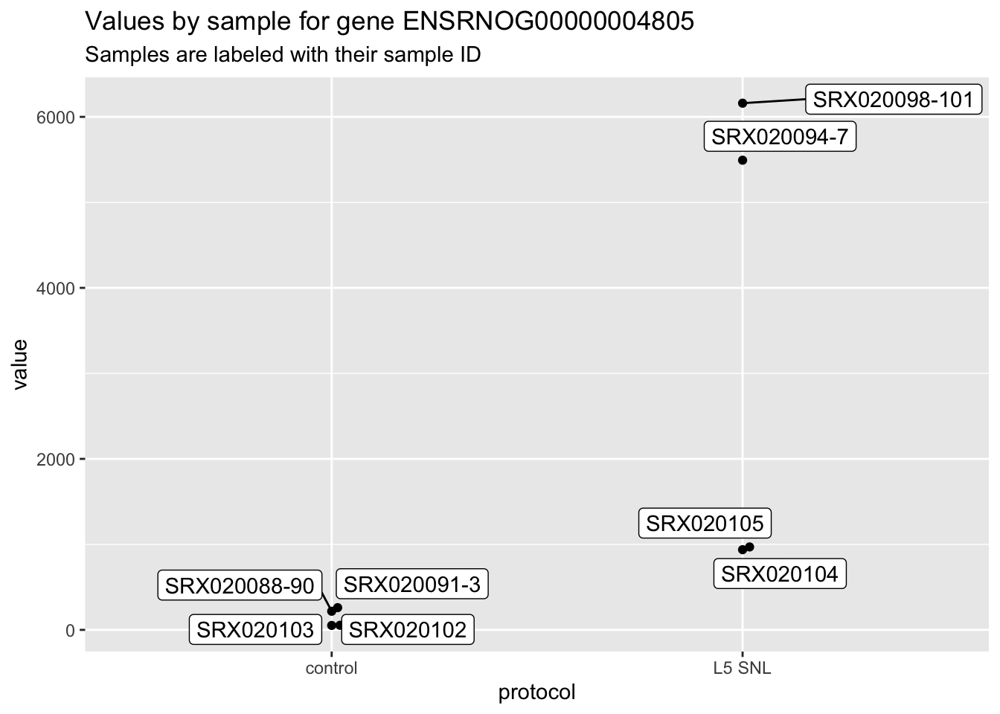

Chapter 3 Experimental Data Preprocessing
This section includes modules on:
- Module 3.1: Principles and benefits of scripted pre-processing of experimental data
- Module 3.2: Introduction to scripted data pre-processing in R
- Module 3.3: Simplify scripted pre-processing through R’s ‘tidyverse’ tools
- Module 3.4: Complex data types in experimental data pre-processing
- Module 3.5: Complex data types in R and Bioconductor
- Module 3.6: Example: Converting from complex to ‘tidy’ data formats
- Module 3.7: Introduction to reproducible data pre-processing protocols
- Module 3.8: RMarkdown for creating reproducible data pre-processing protocols
- Module 3.9: Example: Creating a reproducible data pre-processing protocol
3.1 Principles and benefits of scripted pre-processing of experimental data
The experimental data collected for biomedical research often requires pre-processing before it can be analyzed (e.g., gating of flow cytometry data, feature finding / quantification for mass spectrometry data). Use of point-and-click software can limit the transparency and reproducibility of this analysis stage and is time-consuming for repeated tasks. We will explain how scripted pre-processing, especially using open source software, can improve transparency and reproducibility.
Objectives. After this module, the trainee will be able to:
- Define ‘pre-processing’ of experimental data
- Describe an open source code script and explain how it can increase reproducibility of data pre-processing
3.1.1 Example datasets
Simpler example dataset: Measuring bacterial growth rates
More complex example dataset: Characterizing lung cell populations
3.1.2 Why do data need preprocessing?
Use of scientific principles to make measurements
For a long time, scientists have leveraged existing scientific principles and knowledge to build equipment that can make measurements to build new scientific knowledge.
When preprocessing biomedical data, many of the steps are to leverage the scientific principles that underlie that measurement technique, so you can move from the measurements made by the equipment to a measurement that can help answer a biological question.
Simple examples: average cage weights, microscope scale, stethoscope, determining date since start of the experiment, determining period of exponential growth
A very simple example of this is a stethoscope. This is a very simple example because, in this case, the “data preprocessing” is done in the mind of the person using the stethoscope. A stethoscope is a simple piece of equipment that … . It’s used to … . When using a stethoscope to ask …, the user must know how to use the sounds of … to infer … . This is therefore a very simple example of inputting data (in this case, sounds) from equipment (in this case, the stethoscope) and processing it (in this case, within the mind of the user) to answer a biological question (in this case, …). If the preprocessing step is not done, the input is useless—more simpler, if the stethoscope is used by someone who can’t interpret the sounds to infer …, then it’s not help as a tool to determine … .
More complex examples: Flow cytometry is based on physics—using lasers to excite fluorescent probes that are manufactured to stick to certain surface proteins. To interpret the data, must link the light output at certain frequencies (?) to which probe you made, adjust for light overlapping from several types of probes at certain frequencies, determine how the intensity of light is linked to the number of fluorescent probes, use knowledge of the size, shape, and granularity of certain types of cells to interpret data on forward and side scatter of light, etc.
Data can have technical noise
Simple example: microscope measurements made at different scales (resolutions?)
More complex example: Reading depth of sequencing-based data
Data can have quality control issues
Examples of QC issues: missing data, outliers, errors in data entry, a whole sample that has problems
More complex example: Cells that are poor quality in single cell RNA-seq—membrane has broken? A lot of the RNA molecules have been lost and aren’t represented in the measurements?
Data can be high-dimensional
Many types of biomedical data now are “high-dimensional”—they include measurements of a very large number of characteristics for each observation. For example, bulk transcriptomics data measure the expression of a large number of genes within each sample, metabolomics data measure the levels of a large number of metabolite features within each sample, proteomics measure the levels of a large number of peptides (?) within each sample, and so on.
With these high-dimensional data, often many of the measured characteristics will be strongly correlated. For example, in metabolomics data many of the metabolite features may be strongly correlated with each other, either because they originally were pieces of the same metabolite (the process of measuring the features, for example through mass spectrometry, breaks the chemicals up into smaller components [?]) or because they are part of a common metabolic pathway [?]. It can be hard to explore and understand a set of data that measures thousands of characteristics of each sample, but patterns and correlations in the data can be used to help you pull out and explore a few key dimensions of variability in the data. Dimension reduction techniques—principal components analysis (PCA) is one very popular one—is therefore often a key element of data preprocessing when working with high-dimensional biological data.
If you envision a dataset as a two-dimensional table, with the observations as the rows and the characteristics measured for each observation as the columns, then high-dimensional data are large in terms of the number of columns in the table. A growing number of biomedical data now also are large in the number of observations they capture—in the number of rows in the table of data, in other words. A longer-standing example of this is flow cytometry data, where the observations are individual cells. Current experiments often capture in the range of [x] cells for each sample in flow cytometry, measuring for each characteristics that can be used to determine cell size, granularity, and surface proteins, all with the aim of characterizing the cells by cell type. A more recent example is with single cell RNA-sequencing. Again, with this technique, observations are taken at the level of the cell, with on the order of [x] cells processed per sample.
As with high-dimensional data, again the sheer size of the data collected in this case can make it difficult to explore and generate knowledge from the data. For data with a large number of observations, clustering techniques can be helpful to explore large-scale patterns across the many observations. These are particularly helpful in data that both have a large number of observations and measure many characteristics of each observation, like single-cell transcriptomics.
3.1.3 Common steps in data preprocessing for biomedical research
Data input
Quality assessment / quality control
Data transformations
Scaling, normalization, log transformations, calculating time since start of experiment, etc.
One critical process in this category is the process of normalization. …
Extracting information based on scientific principals
Identifying data that are appropriate to answer the scientific question (e.g., period of exponential growth)
Taking data on light intensities at different frequencies and using it to estimate the presence or absence of certain surface proteins (and their amount) on each cell for flow cytometry.
Dimension reduction and clustering
3.1.4 Examples of biomedical data preprocessing
Simpler example: Measuring bacterial growth rates
More complex example: Characterizing lung cell populations
3.1.5 Tools for biomedical data preprocessing
GUI versus code script
Examples of coding languages for data preprocessing: Python, R, Julia, bash scripts
Examples of GUIs for data preprocessing: FlowJo, …
Advantages / disadvantages of GUIs
Advantages / disadvantages of code scripts
Free and open-source versus proprietary
Examples of free and open-source tools: Python, R, Julia, bash scripts
Examples of proprietary software: FlowJo (?), …
Advantages / disadvantages of proprietary
Advantages / disadvantages of free and open-source
3.1.6 Example dataset
In this module and several of the following modules, we’ll use two example datasets that are based on real data collected from an immunology experiment. These data will help us to describe and motivate the steps of pre-processing data using code scripts, as well as explaining the use of tidyverse tools and the discussion of complex versus tidy data formats in R.
The first dataset was introduced in module [x]. …
The second dataset have not yet been introduced. They come from an experiment to test a novel vaccine for COVID-19, and we’ll be focusing on data collected during this experiment that measured single-cell transcriptomics—in other words, it characterizes the levels of messenger RNA with each of thousands of cells collected from animals in different experimental groups. In this section, we’ll give you more details to help you understand this example dataset, as well as instructions on how to download the data on your own computer, if you would like to follow along with examples.
The results of this experiment have been published [ref], and so you can read the full details in the published paper, but we’ll provide an overview here. This experiment tested a potential vaccine called SolaVAX. There are numerous ways to make vaccines; this one uses an attenuated (in other words, weakened) version of the full virus, and it is novel in that it attenuates the virus using a light-activated … (hence the “Sola” in “SolaVAX”).
This experiment tested how well this vaccine worked, not only by itself, but also when it was given in conjunction with something called an adjuvant. In the context of vaccines, an adjuvant is a substance that is meant to shape the body’s immune response as it “learns” from a vaccine. For example, an adjuvant can be something as simple as a substance that triggers a larger immune response than the vaccine by itself, to ensure that the immune system responds at a sufficient scale to the core components of the vaccine—that is, the components of the vaccine that the immune system needs to recognize in the future to mount a fast defense against that pathogen. This experiment tested two adjuvants in conjunction with the SolaVAX vaccine, both of which the researchers were hoping might help in switching which type of T helper immune cells would drive the later response to COVID after vaccination. Specifically, they hypothesized that the adjuvants would bring about a later response that was driven more by a type of T helper cell called Th2 rather than one called Th1. [Why this would be good.]
To run the experiment, the researchers used Golden Hamsters as a model animal. [Why?] They created four experimental groups: one control group, one group vaccinated with only SolaVAX, one vaccinated with SolaVAX plus an adjuvant called [x], and one vaccinated with SolaVAX plus an adjuvant called [y]. There were eight hamsters in each of these groups, and these were further divided into two groups of four, so that the vaccine could be tested using two routes of administration: [the two routes].
The hamsters were vaccinated, and then after a period of time, they were challenged with COVID. This allowed the researchers to see how successful each vaccination type was, in terms of how well the animals could limit the replication of COVID in their bodies, and also to explore how the animals’ immune systems responded as they tried to limit COVID replication after exposure. Therefore, this experiment could help not only in seeing which vaccine strategies were successful, but also to explore how and why they did or didn’t work, at the level of the immune response.
[x] days after the animals were exposed to COVID, they were sacrificed, and the researchers took samples from several areas to use to measure levels of COVID as well as the immune response to the challenge. In tissue samples from the lungs of the animals, they measured things like the [viral numbers?] to see the extent of COVID replication in that animal, and [histopathology], to see the extent of damage that the infection had done to the animal’s lungs. If the vaccine were successful, it would have spurred a fast and powerful immune response, which you’d see through lower [viral numbers] and less damage to the animal’s lungs. They also used part of the lung sample to measure immune cell populations. These measures can help to determine things like whether the immune response was driven more by the innate immune response (which you’d expect in an unvaccinated animal) or the adaptive immune response (which you hope to see in a vaccinated animal, as a sign that the vaccine helped in allowing for the immediate immune response to be much more specific than that achieved by the innate immune system).
Out of the many types of data that were collected for this experiment, we’ll focus on one type in our examples in this and following modules—data that were collected that measured the single-cell transcriptomics of samples collected from the lungs of each animal. While every cell in a body has the same genome, the cells differ in which of those genes they express at a given time. The expression of different genes in the genome can be measured based on the number of messenger RNAs that are in the cell from each gene. This is what single cell RNA sequencing aims to measure—the number of mRNAs from each of a large number of genes, measuring the number in each cell in the sample separately. Because different types of cells express different patterns and levels of genes, these data can be used to help sort the cells into different types. For example, the data can be used to help identify cells that are from the innate immune system versus those that are hallmarks of an adaptive immune response. The data can also help in categorizing cells within very specific cell categories—for example, identifying Th1 versus Th2 cells out of the group of helper T cells, which can help to address the hypothesis that these researchers had about how the adjuvants might work. Finally, the data can help to identify how certain types of cells work differently under different experimental conditions. For example, do adaptive immune cells tend to express different genes (or different levels of a gene) when the vaccination included an adjuvant versus when only the vaccine was given?
These single cell RNA sequencing data were shared by the researchers through one of NIH’s [?] databases for biological data. To get a copy of these data, go to the study’s page on the Gene Expression Omnibus (GEO) database: https://www.ncbi.nlm.nih.gov/geo/query/acc.cgi?acc=GSE165190 (you can also search for the study on the database by its accession number, GSE165190). This page includes data from single cell RNA sequencing for twelve samples from this study, three from each of the experimental conditions. You can download data for all the samples by clicking the link on the page to download the file named “GSE165190_RAW.tar.” This is a compressed file, so once you download it, you will need to uncompress it, which will give you a folder with a number of data files. On a Mac, you can decompress the file by double-clicking on the file named “GSE165190_RAW.tar” in the Finder program. On a Windows computer, [how to do it. From R?]
Among the data files, there are three files for each sample. One includes “barcodes” in the file name, one includes “features” in the file name, and one includes “matrix” in the file name. For each sample, the “barcodes” file gives …, the “features” file gives …, and the “matrix” file gives … .
[More about working with these files?]
Collectively, these data provide a count that is related to the number of messanger RNA particles [?] from each of approximately [x] genes within each cell in the sample. These counts can be used to group the cells into groups of similar cell types, identify those cell types, and explore how the gene expression within a cell type varies across experimental conditions.
These data can therefore be used to answer interesting scientific questions. However, before they can, it is important to do some pre-processing on the raw data. This preprocessing serves several purposes. First, there are patterns in the data that can be introduced as a result of the data collection process. These need to be corrected or otherwise accounted for to move the data into a format where it can be meaningfully compared, for example across different cells in a sample or across different samples. Second, some of the pre-processing will help identify and resolve any issues related to quality control. For example, while the process of collecting these data will normally result in isolating single cells, in some cases the values for a cell might be for a poor-quality cell (for example, a dying cell) or might be a case where two cells were captured together [true for this platform?]. Pre-processing can help to identify and exclude these low-quality data points, so that the analysis can focus on the higher-quality data collected for the sample. Finally, some of the pre-processing will help us to prepare the data to be used in analysis algorithms. For example, since the data is high dimensional (that is, measurements are included for many genes [?]), we will often include a step of dimension reduction in our analysis, to help pull out key patterns in the data. Many of the dimension reduction algorithms will need to data to be scaled, so that the mean value of each measurement in a type of measurement has an average of zero and a standard deviation [? variance?] of one.
“As a proxy for studying the proteome, many researchers have turned to protein-encoding, mRNA molecules (collectively termed the ‘transcriptome’), whose expression correlates well with cellular traits and changes in cellular state. Transcriptomics was initially conducted on ensembles of millions of cells, firstly with hybridization-based microarrays, and later with next-generation sequencing (NGS) techniques referred to as RNA-seq. RNA-seq on pooled cells has yielded a vast amount of information that continues to fuel discovery and innovation in biomedicine. … Nevertheless, the averaging that occurs in pooling large numbers of cells does not allow detailed assessment of the fundamental biological unit—the cell—or the individual nuclei that package the genome. Since the first scRNA-seq study was published in 2009, there has been increasing interest in conducting such studies. Perhaps one of the most compelling reasons for doing so is that scRNA-seq can describe RNA molecules in individual cells with high resolution and on a genomic scale.” (Haque et al. 2017)
“scRNA-seq permits comparison of the transcriptomes of individual cells. Therefore, a major use of scRNA-seq has been to assess transcriptional similarities and differences within a population of cells, with early reports revealing unappreciated levels of heterogeneity… Thus, heterogeneity analysis remains a core reason for embarking on scRNA-seq studies. Similarly, assessments of transcriptional differences between individual cells have been used to identiy rare cell populations that would otherwise go undetected in analyses of pooled cells, for example malignant tumour cells within a seemingly homogeneous group. … In addition to resolving cellular heterogeneity, scRNA-seq can also provide important informaiton about fundamental characteristics of gene expression… Importantly, studying gene co-expression patterns at the single-cell level might allow identification of co-regulated gene modules and even inference of gene-regulatory networks that underlie functional heterogeneity and cell-type specification.” (Haque et al. 2017)
“Single-cell RNA sequencing (scRNA-seq) is a recent and powerful technology developed as an alternative to previously existing bulk RNA sequencing methods. Bulk sequencing methods analyzed the average genetic content for individual genes across a large population of input cells within a sample (e.g., a tissue), potentially obscuring transcriptional features and other differences among individual cells. Conversely, scRNA-seq is able to discern such heterogeneous properties within a sample and has great potential to reveal novel subpopulations and cell types.” (Lytal, Ran, and An 2020)
“Single-cell RNA sequencing is widely used for high-resolution gene expression studies investigating the behavior of individual cells.” (McCarthy et al. 2017)
“While scRNA-seq data can provide substantial biological insights, the complexity and noise of the data is also much greater than that of conventional bulk RNA-seq. Thus, rigorous analysis of scRNA-seq data requires careful quality control to remove low-quality cells and genes, as well as normalization to adjust for biases and batch effects in the expression data. Failure to carry out these procedures correctly is likely to compromise the validity of all downstream analyses.” (McCarthy et al. 2017)
“Conventional ‘bulk’ methods of RNA sequencing (RNA-seq) process hundreds of thousands of cells at a time and average out the differences. But no two cells are exactly alike, and scRNA-seq can reveal the subtle changes that make each one unique. It can even reveal entirely new cell types.” (J. M. Perkel 2017)
“It’s much more difficult to manipulate individual cells than large populations, and because each cell yields only a tiny amount of RNA, there’s no room for error. Another problem is analyzing the enormous amounts of data that result—not least because the tools can be unintuitive.” (J. M. Perkel 2017)
3.1.7 What is pre-processing?
“Assessing the structure of the data must also take account of the prior knowledge of the system in regard to such matters as the design of th experiment, the known sources of systemic variation (e.g., any blocking factors or known groupings of the experimental units) and so on.” (Chatfield 1995)
“The three main types of problem data are errors, outliers, and missing observations. … An error is an observation which is incorrect, perhaps because it has been copied or typed incorrectly at some stage. An outlier is a ‘wild’ or extreme observation which does not appear to be consistent with the rest of the data. Outliers arise for a variety of reasons and can create severe problems. … Errors and outliers are often confused. An error may or may not be an outlier, while an outlier may or may not be an error. … An outlier may be caused by an error, but it is important to consider the alternative possibility that the observation is a genuine extreme result from the ‘tail’ of the distribution. This usually happens when the distribution is skewed and the outlier comes from the long ‘tail.’” (Chatfield 1995)
“There are several types of error…, including the following: 1. A recording error arises, for example, when an instrument is misread. 2. A typing error arises when an observation is typed incorrectly. 3. A transcription error arises when an observation is copied incorrectly, and so it is advisable to keep the amount of copying to a minimum. …” (Chatfield 1995)
“Extreme observations which, while large, could still be correct, are more difficult to handle [than errors]. The tests for deciding whether an outlier is significant provide little information as to whether an observation is actually an error. Rather external subject-matter considerations become paramount. It is essential to get advice from people in the field as to which suspect values are obviously silly or impossible, and which, while physically possible, are extremely unlikely and should be viewed with caution. … It is sometimes sensible to remove an outlier, or treat it as a missing observation, but this outright rejection of an observation is rather drastic, particularly if there is evidence of a long tail in the distribution. Sometimes the outliers are the most interesting observations. … An alternative approach is to use robust methods of examination, which automatically downweight extreme observations… My recommended procedure for dealing with outliers, when there is no evidence that they are errors, is to repeat the analysis with and without suspect values… If the conclusions are similar, then the suspect values do not matter. However, if the conclusions differ substantially, then the values do matter and additional effort should be expended to check them. If the matter still cannot be resolved, then it may be necessary to present two lots of results or a least point out that it may be unwise to make judgements from a set of data where the results depend crucially on just one or two observations (called influential observations).” (Chatfield 1995)
“Missing observations arise for a variety of reasons. … It is important to find out why an observation is missing. This is best done by asking ‘people in the field.’ In particular, there is a world of difference between observations that are lost through random events, and situations where missing observations due to damage or loss are more likely to arise under certain conditions.” (Chatfield 1995)
“There are various reasons for making a transformation, which may also apply to deriving a new variable: 1. to get a more meaningful variable (the best reason!); 2. to stabilize variance; 3. to achieve normality (or at least symmetry); 4. to create additive effects (i.e. remove interaction effects); 5. to enable a linear model to be fitted.” (Chatfield 1995)
[For transformations] “Logarithms are often meaningful, particularly with economic data when proportional, rather than absolute, changes are of interest. Another application of the logarithmic transformation is … to transform a severely skewed distribution to normality.” (Chatfield 1995)
Some data collected through laboratory experiments is very straightforward and requires little or no pre-processing before it’s used in analysis. For example, if you are regularly weighing the animals in an experiment, then the data may require no pre-processing (in other words, you’ll directly use the weight recorded from the scale) or very minimal pre-processing (for example, if you are keeping all animals for a treatment group in the same cage, you may weigh the cage as a whole, in which case you could divide that weight by the number of animals in the cage as a pre-processing step to estimate the average weight per animal).
Other data collected in the laboratory may require some pre-processing that takes a few more steps, but is still fairly straightforward. For example, if you plate bacteria from a sample at a variety of dilutions, you might count each plate and determine a measure of Colony Forming Units from the set of plates with different dilutions by deciding which dilution provides the clearest count and then back-calculating based on its dilution to get the total number of colony-forming units in the original sample. Pre-processing these data typically will also involve transforming data, to get them in a format that is easier to visualize or more appropriate for statistical analysis. For example, when bacterial loads are counted as colony forming units (CFUs), it is common to transform these values using a log-10 [?] transform before plotting the data or using them to test a hypothesis. [Why do a log-10 transform with CFUs?]
This step of pre-processing data can become much more complex with data that was collected using complex equipment, like a flow cytometer, mass spectrometer, or sequencer. In these cases, there are often steps required to extract from the machine’s readings a biologically-relevant measurement. For example, the data output from a mass spectrometer must be processed to move from measurements of mass and retention time to estimates of concentrations of different molecules in the sample. If you want to compare across multiple samples, then the preprocessing will also involve steps to align the different samples (in terms of …), as well as to standardize the measurements for each sample, to make the measurements from the different samples comparable.
“Scientists can now study all kinds of cell components and processes—from all the proteins in a cell (a discipline known as proteomics) to the amount of messenger RNA (the templates from which proteins are made) made from every gene (‘transcriptomics’) to the intermediate and final products of cell metabolism (‘metabolomics’).” (Barry and Cheung 2009)
“To reap the full benefits of the omics revolution, we need information technology tools capable of making sense of the vast data sets generated by omics experiments. In fact, the development of such tools has become a discipline unto itself, called bioinformatics. And only with those tools can researchers hope to clear another obstacle to drug development: that posed by so-called emergent properties—behaviors of biological systems that cannot be predicted from the basic biochemical properties of their components.” (Barry and Cheung 2009)
For data collected from a flow cytometer, preprocessing may include steps to disentangle the florescence from different markers to ensure that the read for one marker isn’t inflated by spillover florescence from a different marker. …
For data from a sequencing machine [? sequencer?], the pre-processing will include a series of steps. We’ll use an example of data from single-cell RNA sequencing. First, the sequencing process results in small fragments of complementary DNA [? cDNA], complementary to the original RNA in each cell in the sample, for which the sequence of nucleotide bases along each small fragment have been determined [?]. These raw read data can be used to answer more interesting scientific questions—for example, how do gene expression levels vary across cells in the samples, or what mixture of cell types comprise the sample—but first the raw data require multiple steps of pre-processing. For example, the small fragments of cNDA sequences must be aligned to a reference genome or transcriptome, so that their counts can be used to estimate the number of RNA molecules transcribed from different genes, and the counts for each fragment must also be linked with the cell it originally came from, so that these counts can be determined cell-by-cell.
“Although each [scRNA-seq] experiment is unique …, most analysis pipelines follow the same steps to clean up and filter the sequencing data, work out which transcripts are expressed and correct for differences in amplification efficiency. Researchers then run one or more secondary analyses to detect subpopulations and other functions.” (J. M. Perkel 2017)
“In many cases… the tools used in bulk RNA-seq can be applied to scRNA-seq. But fundamental differences in the data mean that this is not always possible. For one thing, single-cell data are noisier… With so little RNA to work with, small changes in amplification and capture efficiencies can produce large differences from cell to cell and day to day and have nothing to do with biology. Researchers must therefore be vigilant for ‘batch effects,’ in which seemingly identical cells prepared on different days differ for purely technical reasons, and for ‘dropouts’—genes that are expressed in the cell but not picked up in the sequence data. Another challenge is the scale… A typical bulk RNA-seq experiment involves a handful of samples, but scRNA-seq studies can involve thousands. Tools that can handle a dozen samples often slow to a crawl when confronted with ten or a hundred times as many.” (J. M. Perkel 2017)
“Even the seemingly simple question of what constitutes a good cell preparation is complicated in the world of scRNA-seq. Lun’s workflow assumes that most of the cells have approximately equivalent RNA abundances. But ‘that assumption isn’t necessarily true,’ he says. For instance, he says, naive T cells, which have never been activated by an antigen and are relatively quiescent, tend to have less messenger RNA than other immune cells and could end up being removed during analysis because a program thinks there is insufficient RNA for processing.” (J. M. Perkel 2017)
“Perhaps most significantly, researchers performing scRNA-seq tend to ask different questions from those analysing bulk RNA. Bulk analyses typically investigate how gene expression differs between two or more treatment conditions. But researchers working with single cells are often aiming to identify new cell types or states or reconstruct developmental cellular pathways. ‘Because the aims are different, that necessarily requires a differnt set of tools to analyse the data,’ says Lun.” (J. M. Perkel 2017)
“Most scRNA-seq tools exist as Unix programs or packages in the programming language R. But relatively few biologists are comfortable working in those environments… Even if they are, they may lack the time to download and configure everything to make such tools work. Some ready-to-use pipelines have been developed. And there are end-to-end graphical tools too, including the commercial SeqGeq package from FlowJo, as well as a pair of open-source web tools: Granatum … and ASAP (the Automated Single-cell Analysis Pipeline)… ASAP and Granatum use a web browser to provide relatively simple, interactive workflows that allow researchers to explore their data graphically. Users upload their data and the software walks them through the steps one by one. For ASAP, that means taking data through preprocessing, visualization, clustering, and differential gene-expression analysis; Granatum allows pseudo-time analyses and the integration of protein-interaction data as well.” (J. M. Perkel 2017)
“Appropriate methods are ‘very data-set dependent’… The methods and tuning parameters may need to be adjusted to account for variable such as sequencing length. But John Marioni at Cancer Research UK in Cambridge says it’s important not to put complete faith in the pipeline. ‘Just because the satellite navigation tells you to drive into the river, you don’t drive into the river,’ he says.” (J. M. Perkel 2017)
“For beginners, caution is warrented. Bioinformatics tools can almost always yield an answer; the question is, does that answer mean anything? Dudoit’s advice is do some exploratory analysis, and verify that the assumptions underlying your chosen algorithms make sense.” (J. M. Perkel 2017)
- cDNA libraries
- Mapping sequence fragments to a reference (BowTies, TopHats) / alignment of reads (GSNAP) / pseudoalignment (Salmon)
- Quantification / counting reads for each gene (htseq-count)
“Next, poly[T]-primed mRNA is converted to complementary DNA (cDNA) by a reverse transcriptase. Depending on the scRNA-seq protocol, the reverse-transcription primers will also have other nucelotide sequences added to them, such as adaptor sequences for detection on NGS platforms, unique molecular identifiers (UMIs) to mark unequivocally a single mRNA molecule, as well as sequences to preserve information on cellular origin.” (Haque et al. 2017)
“The minute amounts of cDNA are then amplified either by PCR or, in some instances, in vitro transcription followed by another round of reverse transcriptions—some protocols opt for nucleotide barcode-tagging at this stage to preserve information on cellular origin.” (Haque et al. 2017)
“Then, amplified and tagged cDNA from every cell is pooled and sequenced by NGS, using library preparation techniques, sequencing platforms and genomic-alignment tools similar to those used for bulk samples.” (Haque et al. 2017)
“More recently, droplet-based platforms … have become commercially available… Droplet-based instruments can encapsulate thousands of single cells in individual partitions, each containing all the necessary reagents for cell lysis, reverse transcription and molecular tagging, thus eliminating the need for single-cell isolation through flow-cytometric sorting or micro-dissection.” (Haque et al. 2017)
“An important initial step in scRNA-seq data processing is to quantify the expression level of genomic features such as transcripts or genes from the raw sequencing data.” (McCarthy et al. 2017)
“Read counts can be obtained from conventional quantification methods such as HTSeq and featureCounts … another option is to use computationally efficient pseudoalignment methods such as kallisto and Salmon. This is especially appealing for large scRNA-seq datasets containing hundreds to tens of thousands of cells. To this end, scater also provides wrapper functions for kallisto and Salmon so that fast quantification of transcript-level expression can be managed completely within an R programming environment.” (McCarthy et al. 2017)
“A common subsequent step for these methods is to collapse transcript-level expression to gene-level expression. Exploiting the biomaRt R/Bioconductor package, scater provides a convenient function for using Ensembl annotations to obtain gene-level expression values and gene or transcript annotations.” (McCarthy et al. 2017)
These early steps of pre-processing create a count matrix for each sample, with a row for each feature of the data (for example, a gene), a column for each cell in the sample, and matrix cell values that estimate the number of messenger RNA molecules from each gene in each cell. However, more pre-processing is required before these count matrices can be used to answer scientific questions.
First, it is necessary to perform quality control on the count matrices, to identify and remove problematic data points. For example, one method for single cell sequencing involves isolating each cell within a droplet. While most of the droplets that are processed will indeed have one and only one cell, a few droplets will end up having two cells or no cells, and these must be identified and removed during a quality control step of pre-processing. For all methods of single cell sequencing, there will also be some poor-quality cells. For example, if a cell’s membrane has broken [?] during the process of measurement, then much of its messenger RNA may have leaked out [?] of the cell. These cells can be identified based on a combination of characteristics: they typically will have a combination of low total counts of RNA molecules, low numbers of total genes expressed, and a high percentage of the RNA molecules that are captured will be from mitochondrial RNA [because?]. Using these characteristics, many of these cells can be identified and removed from the count matrix in a quality control step of pre-processing. Other, more sophisticated approaches are also available, based on machine learning approaches to identify these low quality cells (Ilicic et al. 2016).
“Another important challenge is that existing available scRNA-seq protocols often result in the captured cells (whether chambers in microfluidic systems, microwell plates, or droplets) being stressed, broken, or killed. Moreover, some capture sites can be empty and some may contain multiple cells. We refer to all such cells as ‘low quality.’ These cells can lead to misinterpretation of the data and therefore need to be excluded.” (Ilicic et al. 2016)
“We first tested whether each type of low quality cell (broken, empty, multiple) has higher average gene expression in specific functional categories (Gene Ontology terms) compared to high quality cells. Second, we calculated whether gene expressio in these functional categories is noisier for low versus high quality cells… Our results suggest that there are indeed several top-level biological processes and components that are significantly different. Specifically, genes related to Cytoplasm …, Metabolism …, Mitochondrion …, Membrane …, and a few other categories … are strongly downregulated … in broken cells. … Furthermore, broken cells have transcriptome-wide increased noise levels compared to high quality cells. Interestingly, wells containing multiple cells (multiples) show similar expression and noise patterns to broken cells … This suggest that multiple cells contain a mixture of broken and high quality cells.” (Ilicic et al. 2016)
“Genes related to mtDNA were upregulated in low quality cells… This suggested that these cells are broken and thus of low quality.” (Ilicic et al. 2016)
“We have shown that there are biological and technical features within the sequencing data that allow automatic identification of the majority of low quality cells.” (Ilicic et al. 2016)
“At least a subset of the features considered are cell type specific. … Somewhat surprisingly, the levels of Membrane, Ribosomes, Metabolism, Apoptosis, and Housekeeping genes are highly cell type specific. In contrast, Mitochondrial (localized or encoded) and Cytoplasmic genes are more generic features. … Interestingly, only moderately and strongly expressed genes seem to be similar between the datasets [of different cell types]. Geners that are very strong or lowly expressed are highly cell type specific.” (Ilicic et al. 2016)
“There is an extensive literature on the relationship between mtDNA, mitochondrially localized proteins, and cell death … However, upregulation of RNA levels of mtDNA in broken cells suggests losses in cytoplasmic content. In a situation where cell membrane is broken, cytoplasmic RNA will be lost, but RNAs enclosed in the mitochondria will be retained, thus explaining our observation.” (Ilicic et al. 2016)
“Overall, our analysis suggests that empty wells can be remarkably clearly distinct from the remainder, while broken cells and multiples are distinct in most but not all of the categories.” (Ilicic et al. 2016)
“We designed three features based on the assumption that broken cells contain a lower and multiple cells a higher number of transcripts compared to a typical high quality single cell. For the first feature we calculated the number of highly expressed and highly variable genes. For the second feature we calculated the variance across genes. Lastly, we hypothesized that the number of genes expressed at a particular level would differ between cells. Thus we binned normalized read counts into intervals (very low to very high) and counted the number of genes in each interval. … Overall, our results show that technical features [like the number of detected genes and the percent of mapped reads] can help distinguish low and high quality cells.” (Ilicic et al. 2016)
“Before further analyses, scRNA-seq data typically require a number of bio-informatic QC checks, where poor-quality data from single cells (arising as a result of many possible reasons, including poor cell viability at the time of lysis, poor mRNA recovery and low efficiency of cDNA production) can be justifiably excluded from subsequent analysis. Currently, there is no consensus on exact filtering strategies, but most widely used criteria include relative library size, number of detected genes and fraction of reads mapped to mitochondria-encoded genes or synthetic spike-in RNAs. … Other considerations are whether single cells have actually been isolated or whether indeed two or more cells have been mistakenly assessed in a particular sample.” (Haque et al. 2017)
“Barcoding: Tagging single cells or sequencing libraries with unigue oligonucleotide sequences (that is, ‘barcodes’), allowing sample multiplexing. Sequencing reads corresponding to each sample are subsequently deconvoluted using barcode sequence information.” (Haque et al. 2017)
“Dropout: An event in which a transcript is not detected in the sequencing data owing to a failure to capture or amplify it.” (Haque et al. 2017)
“Sequencing depth: A measure of the sequencing capacity spent on a single sample, reported for example as the number of raw reads per cell.” (Haque et al. 2017)
“Spike-in: A molecule or set of molecules introduced to the sample in order to calibrate measurements and account for technical variation” (Haque et al. 2017)
“Transcriptional bursting: A phenomenon, also known as ‘transcriptional pulsing,’ of relatively short transcriptionally active periods being followed by longer silent periods, resulting in temporal fluctuation of transcript levels.” (Haque et al. 2017)
“Unique molecular identifier: A variation of barcoding, in which the RNA molecules to be amplified are tagged with random n-mer oligonucleotides. The number of distinct tags is designed to significantly exceed the number of copies of each transcript species to be amplified, resulting in uniquely tagged molecules, and allowing control for amplification biases.” (Haque et al. 2017)
“A high percentage of counts mapping to spike-ins typically indicates that a small amount of RNA was captured for the cell, suggesting protocol failure or death of the cell in processing that renders it unsuitable for downstream analyses.” (McCarthy et al. 2017)
“For each gene, QC metrics such as the average expression level and the proportion of cells in which the gene is expressed are computed. This can be used to identify low-abundance genes or genes with high dropout rates that should be filtered out prior to downstream analyses.” (McCarthy et al. 2017)
“Typical scRNA-seq datasets will show a broadly sigmoidal relationship between average expression level and frequency of expression across cells. This is consistent with expected behaviour where genes with greater average expression are more readily captured during library preparation and are detected at greater frequency.” (McCarthy et al. 2017)
“It is common to see ERCC spike-ins (if used), mitochondrial and ribosomal genes among the highly expressed genes, while datasets consisting of healthy cells will also show high levels of constitutively expressed genes like ACTB.” (McCarthy et al. 2017)
Second, the count matrix will require normalization before the data in it can be used to test scientific hypotheses. To be able to count the small amount of mRNA within single cells, the single-cell RNA-sequencing approach relies on amplification (that is, once cDNA have been created from each RNA molecule, the cDNA are replicated many times through … [?]). …
- size factor (approach earlier for bulk RNA-seq)
- technical size factor with spike-ins (Brennecke et al. 2013), plus a biological size factor [?]
“Progress in gene expression analysis using minute amounts of starting material has made single-cell transcriptomics accessible.” (Brennecke et al. 2013)
“The low amount of RNA present in a single cell represents the main challenge in single-cell RNA-seq experiments. … We demonstrated the relationship between technical noise and the amount of starting material with a dilution series, using technical replicates of decreasing amounts of total RNA taken from the same pool of total RNA. … For 5,000 pg of input material, the noise pattern was comparable to that of technical replicates from bulk RNA-seq experiments, in which the spread can be accounted for by the Poisson distribution. However, the number of genes affected by high levels of technical noise increased notably at lower amounts of starting material (for example, a transcript could have 100–1,000 read counts in one technical replicate but 0 counts in another). … Nevertheless, genes with a high read showed very good agreement between replicates even for the 10-pg data point—meaning that low-read count genes show strong noise and high-read count genes show weak noise; what changes across the differing amounts of starting material is the read-count range in which noise strength transitions from weak to strong.” (Brennecke et al. 2013)
“The crux of the issue is how to examine tens of thousands of genes possibly being expressed in one cell, and provide a meaningful comparison to another cell expressing the same large number of genes, but in a very different matter.” (Haque et al. 2017)
“A major issue common to all protocols is how to account for technical variation in the scRNA-seq process from cell to cell. Some protocols ‘spike-in’ a commercially available, well-characterized mix of polyadenylated mRNA species … The data from spike-ins can be used for assessing the level of technical variability and for identifying genes with a hgih degree of biological variability. In addition, spike-ins are valuable when computationally correcting for batch effects between samples. However, the use of spike-ins is itself not without problems… An increasingly popular method involves the use of UMIs, which effectively tags every mRNA species recovered from one cell with a unique barcode. Theoretically, this allows estimation of absolute molecule counts, although the UMIs can be subject to saturation at high expression levels. Nevertheless, the use of UMIs can significantly reduce amplification bias and therefore improve precision.” (Haque et al. 2017)
“It is as this point that the ‘zero or dropout problem’ of scRNA-seq should be raised. The efficiency with which poly-adenylated mRNA are captured, converted into cDNA and amplified is currently unclear, and, depending on the study, can range between 10 and 40%. This means that, even if a gene is being expressed, perhaps at a low level, there is a certain probability that it will not be detected by current scRNA-seq methods. A partial solution to this issue is to increase read depth. However, beyond a certain point, this strategy leads to diminishing returns as the fraction of PCR duplicates increases with deeper sequencing. Current data suggest that single-cell libraries from all common protocols are very close to saturation when sequenced to a depth of 1,000,000 reads, and a large majority of genes are detected already with 500,000 reads, although the exact relatinoships are protocol specific.” (Haque et al. 2017)
“While scRNA-seq workflows are conceptually closely related to population-level transcriptomics protocols, data from scRNA-seq experiments have several features that require specific bioinformatics approaches. First, even with the most sensitive platforms, the data are relatively sparse owing to a high frequency of dropout events (lack of detection of specific transcripts). Moreover, owing to the digital nature of gene expression at the single-cell level, and the related phenomenon of transcriptional bursting (in which pulses of transcriptional activity are followed by inactive refractory periods), transcript levels are subject to temporal fluctuation, further contributing to the high frequency of zero observations in scRNA-seq data. Therefore, the numbers of expressed genes detected from single cells are typically lower compared with population-level ensemble measurements. Because of this imperfect coverage, the commonly used unit of normalized transcript levels used for bulk RNA-seq, expressed as ‘reads per kilobase per million’ (RPKM), is biased on a single-cell level, and instead the related unit ’transcripts per million (TPM) should be used for scRNA-seq. Second, scRNA-seq data, in general, are much more variable than bulk data. scRNA-seq data typically include a higher level of technical noise (such as dropout events), but also reveal much of the biological variability that is missed by RNA-seq on pooled cells. Biological variability that is present on many levels, and which of these are considered as nuisance variation, depends on the underlying biological question being asked. For example, at the gene level, transcriptional bursting causes variation in transcript quantities, whereas as the global level, the physical size of individual cells can vary substantially, affecting absolute transcript numbers and reflected in the number of detected genes per cell. Cell-size variation can also be closely related to proliferative status and cell-cycle phase. … Finally, distributions of transcript quantities are often more complex in single-cell datasets than in bulk RNA-seq. In general, single-cell expression measurements follow a negative binomial distribution, and, in heterogeneous populations, multimodal distributoins are also observed. As a consequence, statistical tests that assume normally distributed data (used for example for detecting differentially expressed genes) are likely to perform suboptimally on scRNA-seq data.” (Haque et al. 2017)
“Methods to quantify mRNA abundance introduce systematic sources of variation that can obscure signals of interest. Consequently, an essential first step in most mRNA-expression analyses is normalization, whereby systemic variations are adjusted to make expression counts comparable across genes and / or samples. Within-sample normalization methods adjust for gene-specific features, such as GC content and gene length, to facility comparisons of a gene’s expression within an individual sample; whereas between-sample normalization methods adjust for sample-specific features, such as sequencing depth, to allow for comparisons of a gene’s expression across samples.” (Bacher et al. 2017)
“A number of methods are available for between-sample normalization in bulk RNA-seq experiments. Most of these methods calculate global scale factors (one factor is applied to each sample, and this same factor is applied to all genes in the sample) to adjust for sequencing depth. These methods demonstrate excellent performance in bulk RNA-seq, but they are compromised in the single-cell setting because of an abundance of zero-expression values and increased technical variability.” (Bacher et al. 2017)
“scRNA-seq data show systematic variation in the relationship between transcript-specific expression and sequencing depth (which we refer to as the count-depth relationship) that is not accommodated by a single scale factor common to all genes in a cell. Global scale factors adjust for a count-depth relatinoship that is assumed to be common across genes. When this relationship is not common across genes, normalization via global scale factors leads to overcorrection for weakly and moderately expressed genes and, in some cases, undernormalization of highly expressed genes. To address this, SCnorm uses quantile regression to estimate the dependence of transcript expression on sequencing depth for every gene. Genes with similar dependence are then grouped, and a second quantile regression is used to estimate scale factors within each group. Within-group adjustment for sequencing depth is then performed using the estimated scale factors to provide normalized estimates of expression.” (Bacher et al. 2017)
“To further evaluate SCnorm, we conducted an experiment that, similar to the simulations, sequenced cells at very different depths. … Prior to normalization, counts in the second group will appear four times higher on average given the increased sequencing depth. However, if normalization for depth is effective, fold-change estimates should be near one… since the cells between the two groups are identical.” (Bacher et al. 2017)
“Single-cell RNA-seq technology offers an unprecedented opportunity to address important biological questions, but accurate data normalization is required to ensure that results are meaningful.” (Bacher et al. 2017)
“However, individual cells have extremely tiny amounts of input material available, typically on the scale of picograms. The small scale of scRNA-seq input material means that some level of inaccuracy is inevitable even with the most precise instruments, resulting in an additional layer of stochasticity known as technical noise. During the sequencing process, reverse transcription is necessary to convert RNA to cDNA for use in amplification, but this introduces positional bias regardless of where the polymerization begins. The following amplification process counteracts low input material, though this in turn leads to additional bias as some genes may experience preferential amplification, leading to uneven representation in the data. The amplification process also runs the risk of producing dropout events, in which either genes know to be present in a sample are completely absent from the observed gene counts or genes are observed with lower values than their true expression. These events frequently lead to excessive zeros, and in many cases, more than half of all counts. Traditional bulk approaches do not naturally accommodate these differences, and therefore lose their effectiveness when applied to scRNA-seq.” (Lytal, Ran, and An 2020)
“Normalization is critical to the development of analysis techniques on scRNA-seq and to counteract technical noise or bias. Before observed data can be used to identify differentially expressed genes or potential subpopulations, it must undergo these corrections, for what is observed is seldom exactly what is present within the data set.” (Lytal, Ran, and An 2020)
“Some scRNA-seq studies involve the use of spike-in molecules for the purpose of normalization. The spike-in RNA set is artificially added to each cell’s lysate in the same volume under the assumption that spike-ins and endogenous transcripts will experience similar variation among the cells during the capture process. Since spike-in gene concentrations are knows, normalization methods model existing technical variation by utilizing the difference between these known values and the values observed after processing.” (Lytal, Ran, and An 2020) There are other steps of pre-processing that can be considered for single cell RNA-seq data, but that might not be applied in every case. For example, a technique called scaling could be used to help constrain the influence of highly-expressed genes when conducted further analysis steps, like grouping the cells into clusters based on cell type (with cell type in this case being determined based on similar patterns of gene expression). [More on scaling]
“Scaling normalization is typically required in RNA-seq data analysis to remove biases caused by differences in sequencing depth, capture efficiency or composition effects between samples.” (McCarthy et al. 2017)
“In the analysis and interpretation of single-cell RNA-seq (scRNA-seq) data, effective pre-processing and normalization represent key challenges. While unsupervised analysis of single-cell data has transformative potential to uncover heterogeneous cell types and states, cell-to-cell variation in technical factors can also confound these results. In particular, the observed sequencing depth (number of genes or molecules detected per cell) can vary significantly between cells, with variation in molecular counts potentially spanning an order of magnitude, even within the same cell type. Importantly, while the now widespread use of unique molecular identifiers (UMI) in scRNA-seq removes technical variation associated with PCR, differences in cell lysis, reverse transcription efficiency, and stochastic molecular sampling during sequencing also contribution significantly, necessitating technical correction. These same challenges apply to bulk RNA-seq workflows, but are exacerbated due to the extreme comparative sparsity of scRNA-seq data.” (Hafemeister and Satija 2019)
“The primary goal of single-cell normalization is to remove the influence of technical effects in the underlying molecular counts, while preserving true biological variation.” (Hafemeister and Satija 2019)
“In general, the normalized expression level of a gene should not be correlated with the total sequencing depth of a cell. Downstream analytical tasks (dimension reduction, differential expression) should also not be influenced by variation in sequencing depth.” (Hafemeister and Satija 2019)
“The variance of a normalized gene (across cells) should primarily reflect biological heterogeneity, independent of gene abundance or sequencing depth. For example, genes with high variance after normalization should be differentially expressed across cell types, while housekeeping genes should exhibit low variance. Additionally, the variance of a gene should be similar when considering either deeply sequenced cells, or shallowly sequenced cells.” (Hafemeister and Satija 2019)
“Sequencing detph variation across single cells represents a substantial technical confounder in the analysis and interpretation of scRNA-seq data.” (Hafemeister and Satija 2019)
There are also cases where pre-processing steps could be used to remove patterns from technical noise or even from biological patterns that are unrelated to the scientific question of interest. In terms of technical noise, for example, there are cases where pre-processing steps could be used to help remove variation that’s introduced by running the experimental samples in different batches. In terms of biological patterns, one pattern that may be desirable to remove through pre-processing is gene expression related to a cell’s phase in the cell cycle. [More on this.]
“[A] promising application [of scRNA-seq] is the study of transcriptional heterogeneity within supposedly homogeneous cell types, a phenomenon of physiological importance, which can now be studied in a transcriptome-wide manner in single cells. In such analyses, which should be distinguished from the more common two-group comparison setting, it is necessary to account for strong technical noise. Technical noise is unavoidable owing to the low amount of starting material, and it must be quantified in order to avoid mistaking it for genuine differences in biological expression levels.” (Brennecke et al. 2013)
“After scaling normalization, further correction is typically required to ameliorate or remove batch effects. For example, in the case study dataset, cells from two patients were each processed on two C1 machines. Although C1 machine is not one of the most important explanatory variables on a per-gene level, this factor is correlated with the first principal component of the log-expression data. This effect cannot be removed by scaling normalization methods, which target cell-specific biases and are not sufficient for removing large-scale batch effects that vary on a gene-by-gene basis. … For the dataset here, we fit a linear model to the scran normalized log-expression values with the C1 machine as an explanatory factor. (We also use the log-total counts from the endogenous genes, percentage of counts from the top 100 most highly-expressed genes and percentage of counts from control genes as additional covariates to control for these other unwanted technical effects.) We then use the residuals from the fitted model for further analysis. This approach successfully removes the C1 machine effect as a major source of variation between cells.” (McCarthy et al. 2017)
“We emphasize that it is generally preferable to incorporate batch effects or latent variables into statistical models used for inference. When this is not possible (e.g., for visualization), directly regressing out these uninteresting factors is required to obtain ‘corrected’ expression values for further analysis. Furthermore, a general risk of removing latent factors is that interesting biological variation may be removed along with the presumed unwanted variation. Users should therefore apply such methods with appropriate caution, particularly when an analysis aims to discover biological conditions, such as new cell types.” (McCarthy et al. 2017)
“Once identified, important covariates and latent variables can be flagged for inclusion in downstream statistical models or their effects regressed out of normalized expression values.” (McCarthy et al. 2017)
[Identifying highly-variable genes in terms of expression]
“All genes will display some biological variability in expression from cell to cell, but a high level of variance (exceeding the specified threshold) will indicate genes important in explaining heterogeneity within the cell population under study.” (Brennecke et al. 2013)
[Principal component analysis]
“Most approaches seek to reduce these ‘multi-dimensional data,’ with each dimension being the expression of one gene, into a very small number of dimensions that can be more easily visualised and interpreted. Principal component analysis (PCA) is a mathematical algorithm that reduces the dimensionality of data, and is a basic and very useful tool for examining heterogeneity in scRNA-seq data.” (Haque et al. 2017)
“Dimensionality reduction and visualization are, in many cases, followed by clustering of cells into subpopulations that represent biologically meaningful trends in the data, such as functional similarity or developmental relationship. Owing to the high dimensionality of scRNA-seq data, clustering often requires special consideration… Likewise, a variety of methods exist for identifying differentially expressed genes across cell populations.” (Haque et al. 2017)
“One common type of single-cell analysis, for instance, is dimension reduction. This process simplifies data sets to facilitate the identification of similar cells. … scRNA-seq data represent each cell as ‘a list of 20,000 gene-expression values.’ Dimensionality-reduction algorithms such as principal components analysis (PCA) and t-distributed stochastic neighbour embedding (t-SNE) effectively project those shapes into two or three dimensions, making clusters of similar cells apparent.” (J. M. Perkel 2017)
“Multivariate techniques may be used to reduce the dimensionality… It is potentially dangerous to allow the number of variables to exceed the number of observations because of non-uniqueness and singularity problems. Put simply, the unwary analyst may try to estimate more parameters than there are observations.” (Chatfield 1995)
“It is also possible to take a wider view of IDA by allowing the use, when necessary, of a group of more complicated, multivariate techniques which are data-analytic in character. The adjective ‘data-analytic’ could reasonably be applied to any statistical technique, but I follow modern usage in applying it to techniques which do not depend on a formal probability model except perhaps in a secondary way. Their role is to explore multivariate data, to provide information-rich summaries, to generate hypotheses (rather than test them) and to help generally in the search for structure, both between variables and between individuals. In particular, they can be helpful in reducing dimensionality and in providing two-dimensional plots of the data. The techniques include principal component analysis, multi-dimensional scaling and other forms of cluster analysis… They are generally much more sophisticated than earlier data descriptive techniques and should not be undertaken lightly. However, they are occasionally very fruitful.” (Chatfield 1995)
“Principal component analysis rotates the p observed values to p new orthogonal variables, called principal components, which are linear combinations of the original variables and are chosen in turn to explain as much of the variation as possible. It is sometimes possible to confine attention to the first two or three components, which reduces the effective dimensionality of the problem. In particular, a scatter diagram of the first two components is often helpful in detecting clusters of individuals or outliers.” (Chatfield 1995)
“Cluster analysis aims to partition a group of individuals into groups or clusters which are in some sense ‘close together.’ There is a wide variety of possible procedures. In my experience the clusters obtained depend to a large extent on the methods used (except where the clusters are really clear-cut) and users are now aware of the drawbacks and the precautions which need to be taken to avoid irrelevant or misleading results.” (Chatfield 1995)
“Another popular application is pseudo-time analysis. Trapnell developed the first such tool, called Monocle, in 2014. The software uses machine learning to infer from an scRNA-seq experiment the sequence of gene-expression changes that accompany cellular differentiation, much like inferring the path of a foot race by photographing runners from the air, Trapnell says.” (J. M. Perkel 2017)
“Other tools address subpopulation detection … and spatial positioning, which uses data on the distribution of gene expression in tissues to determine where in a tissue each transcriptome arose.” (J. M. Perkel 2017)
- Polymerase chain reaction (PCR): Amplifies DNA
- Microarrays: allowed the analysis of multiple genes at once, previously one gene at a time
- Genomic profiles can differ from transcriptional profiles
Proteomics:
“Protein molecules, rather than DNA or RNA, carry out most cellular functions. The direct measurement of protein levels and activity within the cell is therefore the best determinant of overall cell function.” (Lakhani and Ashworth 2001)
“To sequence a protein ten years ago, a substantial amount had to be purified and a technique known as Edman degradation had to be used. … During the 1990s, mass spectrometry (MS), in which biomolecules are ionized and their mass is measured by following their specific trajectories in a vacuum system, deplaced Edman degradation, because it is more sensitive and can fragment the peptides in seconds instead of hours or days. Furthermore, MS does not require proteins or peptides to be purified to homogeneity and has no problem identifying blocked or otherwise modified proteins. In the last few years, further breathtaking tecnological advances have established MS not only as the definitive tool to study the primary structure of proteins, but also as a central technology for the field of proteomics.” (Steen and Mann 2004)
“After protein purification, the first step is to convert proteins to a set of peptides using a sequence-specific protease. Even though mass spectrometers can measure the mass of intact proteins, there are a number of reasons why peptides, and not proteins, are analysed in proteomics. Proteins can be difficult to handle and might not all be soluble under the same conditions… In addition, the sensitivity of the mass spectrometer for proteins is much lower than for peptides, and the protein may be processed and modified such that the combinatorial effect makes determining the masses of the numerous resulting isoforms impossible. … Most importantly, if the purpose is to identify the protein, sequence information is needed and the mass spectrometer is most efficient at obtaining sequence information from peptides that are up to ~20 residues long, rather than whole proteins. Nevertheless, with very specialized equipment, it is becoming possible to derive partial sequence information from intact proteins, which can then be used for identification purposes or the analysis of protein modifications in an approach called ‘top-down’ protein sequencing.” (Steen and Mann 2004)
“Digesting the protein into a set of peptides also means that the physico-chemical properties of the protein, such as solubility and ‘stickiness,’ become irrelevant. As long as the protein generates a sequence of peptides, at least some of them can be sequenced by the mass spectrometer, even if the protein itself would have been unstable or insoluble under the conditions used.” (Steen and Mann 2004)
“The peptides that are generated by protein digestion are not introduced to the mass spectrometer all at once. Instead, they are injected onto a microscale capillary high-performance liquid chromatography (HPLC) column that is directly coupled to, or is ‘on-line’ with, the mass spectrometer. The peptides are eluted from these columns using a solvent gradient of increasing organic content, so that the peptide species elute in order of their hydrophobicity.” (Steen and Mann 2004)
“When a peptide species arrives at the end of the column, it flows through a needle. At the needle tip, the liquid is vaporized and the peptide is subsequently ionized by the action of a strong electric potential. This process is called ‘electrospray ionization.’” (Steen and Mann 2004)
“Electrosprayed peptide ions enter the mass spectrometer through a small hole or a transfer capillary. Once inside the vacuum system, they are guided and manipulated by electric fields. There are diverse types of mass spectrometer, which differ in how they determine the mass-to-charge (m/z) ratios of the peptides. Three main types of mass spectrometers are used in proteomics: quadrupole mass spectometers, time of flight (TOF) mass spectrometers, and quadrupole ‘ion traps.’ … Each of these instruments generates a mass spectrum, which is a recording of the signal intensity of the ion at each value of the m/z scale (which has units of daltons (Da) per charge).”
“At the beginning of the 1990s, researchers realized that the peptide-sequencing problem could be converted to a database-matching problem, which would be much simpler to solve. The reason database searching is easier than de novo sequencing is that only an infinitesimal fraction of the possible peptide amino-acid sequences actually occur in nature. A peptide-fragmentation spectrum might therefore not contain sufficient information to unambiguously derive the complete amino-acid sequence, but it might still have sufficient information to match it uniquely to a peptide sequence in the database on the basis of the observed and expected fragment ions. There are several different algorithms that are used to search sequence databases with tandem MS-spectra data, and they have names such as PeptideSearch, Sequest, Mascot, Sonar ms/ms, and ProteinProspector.” (Steen and Mann 2004)
“As a result of rapidly improving technology, the identification of hundreds of proteins is not unusual, even in a single project, and determining the reliability of these protein hits is especially challenging. This is partly because even small error rates for each of the corresponding proteins can quickly add up when many thousands of peptides are being identified.” (Steen and Mann 2004)
“After all the peptides have been identified, they have to be grouped into protein identifications. Usually, the peptide scores are added up to yield protein scores in a straightforward manner. However, the confidence in the accuracy of a particular peptide identification increases if other peptides identify the same protein and decreases if no other peptides do so.” (Steen and Mann 2004)
“Often, we are interested not only in the identity of a peptide, but also in its quantity. Unfortunately, the intensity of the signal of a peptide ion does not directly indicate the amount of protein present. For example, when digesting a protein, the peptides that are produced should all be equimolar and might be expected to give peaks of equal height in the mass spectrum. However, accessibility to the protease, the solubility of the peptide and the ionization efficiency of the peptide combine to make these signals orders of magnitude different. Fortunately, these factors are reproducible, so the peak height of the same peptides can be a good indicator of the relative amount of the related protein from one experiment to the next.” (Steen and Mann 2004)
“Experiments that are aimed at determining protein expression in whole-cell lysates or tissues (expression proteomics) have been less successful so far. However, intense research efforts are underway at present, because such a strategy would enable the detection/identification of disease-related biomarkers. Such a measurement is essentially the equivalent of a microarray experiment, with the difference being that protein, instead of mRNA, levels are compared. MS experiments that compare protein-expression levels are much more laborious than microarray experiments, but are attractive because proteins are the active agents of the cell, whereas the mRNA population is often a poor indicator of protein levels. However, it is still difficult to identify and quantify all the low-abundance proteins, especially in the presence of highly abundant proteins. Furthermore, as in microarray experiments, the results are ‘noisy,’ because of the extremely large amounts of data, and it can be difficult to distil functional and mechanistic hypotheses from such global experiments.” (Steen and Mann 2004)
“m/z ratio (mass-to-charge ratio): Mass spectrometry does not measure the mass of molecules, but instead measures their m/z value. Electrospray ionization, in particular, generates ions with multiple charges, such that the observed m/z value has to be multiplied by z and corrected for the number of attached protons (which equals z) to calculate the molecular weight of a particular peptide.” (Steen and Mann 2004) (Steen and Mann 2004)
Flow cytometry:
“In multicellular organisms, cells carry out a diverse array of complex, specialized functions. This specialization occurs mostly through the expression of cell type–specific genes and proteins that generate the appropriate structures and molecular networks. A central challenge in the biomedical sciences, however, has been to identify the distinct lineages and phenotypes of the specialized cells in organ systems, and track their molecular evolution during differentiation.” (Benoist and Hacohen 2011)
“Since the 1970s, fluoresence-based flow cytometry has been the leading technique for studying and sorting cell populations. It involves passing cells through flow chambers at high rates (> 20,000 cells/s) and using lasers to excite fluorescent tags (‘fluorochromes’) that are usually attached to antibodies; different antibodies are tagged with different colors, enabling researchers to quantify molecules that define cell subtypes or reflect activation of specific pathways. Progess in instrument design, multi-laser combinations, and novel fluorochromes has led to experimental configurations that simultaneously measure up to 15 markers. This has enabled very detailed description of cell subtypes, perhaps most extensively in the immune system, where the Immunological Genome Project is profiling >200 distinct cell typles. Fluorescence cytometry seems to have reached a technical plateau, however: In practice, researchers typically measure only 6 to 10 cell markers because they are limited by the specral overlap between fluorochromes.” (Benoist and Hacohen 2011)
“In mass cytometry, fluorochrome tags are replaced by a series of rare earth elements (e.g., lanthanides), which are attached to antibodies through metal-chelator coupling reagents. Cells are labeled by incubation in a cocktail of tagged antibodies; as the cells flow through the instrument, they are vaporized at 5500 K, and the released tags are identified and quantified by time-of-flight mass spectrometry (MS). … The beauty of this approach stems from three factors: the precision of MS detection, which eliminates overlap between tags (a dream for any investigator who has battled this problem, known as fluorescence compensation); the number of detectable markers (34 here, but easily more); and the absence of background noise (because rare earth elements are essentially absent from biological materials, there is no equivalent of ‘autofluorescence’).” (Benoist and Hacohen 2011)
“Because the software tools commonly used for flow cytometry data would be woefully inadequate for analyzing dozens of dimensions [as you have for mass cytometry data], Bendall et al. used software that clusters cell populations into ‘minimum-spanning trees’ that reproduce known hematopoietic differentiation, but with much finer granularity. As a result, cells that once would have been grouped into one population are now divided into many more; for example, naive CD4+ T lymphocytes, a priori considered a homogeneous population, are now split into more than 10 subsets.” (Benoist and Hacohen 2011)
“The secret is that, in flow cytometry, every cell acts as an independent ‘test tube.’” (Benoist and Hacohen 2011)
“Over the past 25 years there have been major technological advances in the ways that CD4+ T cells are enumerated, with flow cytometry now generally regarded as the predicate technique. During this period, flow cytometry has progressed from large, expensive and complex fluorescence-activated cell sorting (FACS) machines that require highly specialized operating personnel, to smaller, more affordable bench-top instruments that can be used by individuals with minimal training. This shift was made possible in part by including multicolour analysis coupled with simplified gating technologies.” (Barnett et al. 2008)
“In 1954, Wallace Coulter developed an instrument that could measure cell size and count the absolute number of cells, and thus the discipline of flow cytometry was born. Further developments enabled the production of instruments that could measure cell size and nucleic acid content using a two-dimensional approach that compared light scatter and light absorption. These instruments were cumbersome and required specialist operators, but immunologists began to use them to investigate the functions of immune cells. … By the mid-1980s, bench-top flow cytometers were available and as the technology advanced the instruments became progressively smaller. Coupled with the availability of monoclonal antibodies, the increasing number of available fluorochromes (compounds that emit light at a greater wavelength than the light source they are excited with) and computer improvements, flow cytometers are now accessible for almost every clinical laboratory.” (Barnett et al. 2008)
“Flow cytometry enables the examination of microscopic particles (such as cells) that are suspended in a stream of fluid which is termed sheath fluid. This fluid is focused hydrodynamically such that the cells flow in single file through a flow cell in which a beam of light (usually a laser) is focused. As the cells pass through the laser beam they scatter the light so that forward scatter (FSC) and side scatter (SSC) light is captured; this enables the size and granularity of the cells to be determined. In addition, if a cell is labelled with antibodies that carry a fluorochrome, as the cell passed in front of the laser beam the fluorochrome emits light at a wavelength that is higher than the single wavelength light source and which can be detected by fluorescence detectors. The flow cytometers that are in clinical use can analyse at least four fluorochromes simultaneously, in addition to the FSC and SSC. This is known as multiparametric analysis. The information that is generated is computer analysed so that specific analysis regions (known as gates) can be created, which allows the user to build up a profile of the size, granularity and antigen profile of the target cell population.” (Barnett et al. 2008)
“The fundamental basis of CD4 counting and identification relies on the specific use of electronic gating approaches. One of the earliest and most popular approaches that was used from the mid-1980s to early-1990s relied on using light scatter and anti-CD45 and anti-CD14 monoclonal antibodies. This gating approach was termed the two-colour approach.” (Barnett et al. 2008)
“In the early 1990s researchers realized that because of these logistic problems [with the two-colour approach], new technologies would need to be developed to reduce processing time while providing accurate CD4 counts. Two new gating strategies were developed almost simultaneously, one termed CD45 gating and the other T gating, both of which helped to more accurately identify the lymphocyte analysis regions.” (Barnett et al. 2008)
“Flow cytometry is a powerful technology that is capable of quantifying individual functions independently and simulataneously on a single-cell basis (and, in some cases, under conditions that can preserve the viability of the cell for future use). Quantification of multiple functions of T cells requires at least six-colour technology: three colors to identify the T-cell lineage (typically, these label CD3, CD4, and CD8), one color for viability and/or as a dump channel to remove unwanted cell populations, and two or more colors devoted to the effector function of interest. Furthermore, delineation of memory T-cell subsets requires an additional two or more colors to distinguish differentiation stage.” (Seder, Darrah, and Roederer 2008)
“Of note, the number of possible functionally unique subsets increases geometrically with the number of measurements made. By applying Boolean gating, all possible combinations of T cells that produce the cytokines measured can be determined. … In general, not all possible combinations are represented in any given antigen response; rather, the overall response is typically limited to a subset of the individual combinations of the functions. Based on the frequency of each distinct functional subset, a pie chart can be assembled to show the composition of a total cytokine response.” (Seder, Darrah, and Roederer 2008)
“Boolean gating: A flow cytometric data analysis technique in which cells are divided into all possible combinations of the functions measured by using the Boolean operators ‘and’ and ‘not’ on analysis gates applied to those measurements. These populations of cells can be expressed as absolute frequencies or as a fraction of the total response.” (Seder, Darrah, and Roederer 2008)
“T cells have an essential role in protection against a variety of infections. Indeed, the development of successful vaccines against HIV, malaria or tuberculosis will require the generation of potent and durable T-cell responses. … As T cells are functionally heterogeneous and mediate their effects through a variety of mechanisms, a major hurdle in quantifying protective T-cell responses has been the technical limitations in assessing the complexity of such responses. Methods to define the full characteristics of T cells are crucial for developing preventative and therapeutic vaccines for infections and cancer.” (Seder, Darrah, and Roederer 2008)
“A typical ‘gating tree’ hierarchically identifies unique functional subsets of CD4+ and CD8+ T cells based on the fluorescence staining of live cells and on the expression of other relevant markers, such as CD3, CD4, CD8, CD45RA, CC-chemokine receptor (CCR7), interferon gamma (INFgamma), interleukin-2 (IL-2) and tumour-necrosis factor (TNF), following antigenic stimulation. The viability marker (ViViD) excludes dead cells that can often show non-specific binding to other reagents. Live, CD3+ T cells are separated into CD4+ and CD8+ T-cell lineages; within each lineage, memory T cells are seleced based on the expression of (for example) CCR7 and CD45RA. Other combinations of markers can similarly exclude naive T cells from functional analysis.” (Seder, Darrah, and Roederer 2008)
“Flow cytometry has increasingly become a tool of choice for the analysis of cellular phenotype and function in the immune system. It is arguably the most powerful technology available for probing human immune phenotypes, because it measures multiple parameters on many individual cells. Flow cytometry thus allows for the characterization of many subsets of cells, including rare subsets, in a complex mixture such as blood. And because of the wide array of antibody reagents and protocols available, flow cytometry can be used to assess not only the expression of cell-surface proteins, but also that of intracellular phosphoproteins and cytokines, as well as other functional readouts.” (Maecker, McCoy, and Nussenblatt 2012)
“This diversity of reagents and applications has led to a large variety of ways in which flow cytometry is being used to monitor the immune systems of humans and model organisms (mostly mice). These uses include the identification of antigen-specific T cells using tetramers or intracellular cytokine staining; the measurement of T cell proliferation using dyes such as 5,6-CFSE; and the use of immunophenotyping assays to identify lymphocyte, monocyte, and/or granulocyte subsets.” (Maecker, McCoy, and Nussenblatt 2012)
“Animal studies tend to be relatively small and self-contained, as the mice used are inbred (genetically identical) and their environment and treatments are carefully controlled. Human studies, by contrast, are often larger, to account for genetic and environmental variables. They may require longitudinal assays over a considerable length of time, owing to the difficulty of recruiting available subjects and/or the need to follow those subjects over time. There may also be a need to aggregate data from multiple sites, or even across multiple studies, to achieve sufficient sample sizes for statistical analysis or to compare different treatments. In these situations, the standardization of reagents and protocols becomes crucial.” (Maecker, McCoy, and Nussenblatt 2012)
“Immune phenotypes: Measurable aspects of the immune system, such as the proportions of various cell subsets or measures of cellular immune function.” (Maecker, McCoy, and Nussenblatt 2012)
“The steps in a typical flow cytometry experiment … present several variables that need to be controlled for effective standardization. These variables include the general areas of reagents, sample handling, instrument setup and data analysis… The effects of changes in these variables are largely known. For example, the stabilization and control of staining reagents through the use of pre-configured lyophilized-reagent plates, and centralized data analysis, have both been shown to decrease variability in a multi-site study. However, the wide-spread adoption of standards for controlling such variables has not taken place. This is in contrast to other technologies, such as gene expression microarrays, which have achieved a reasonable degree of standardization in recent years. … Of course, microarray data are less complex than flow cytometry data, which are based on many hierarchical gates. Still, a reasonable degree of standardization of flow cytometry assays should be possible to achieve.” (Maecker, McCoy, and Nussenblatt 2012)
“Gates: Sequential filters that are applied to a set of flow cytometry data to focus the analysis on particular cell subsets of interest.” (Maecker, McCoy, and Nussenblatt 2012)
“The study of cells moving in suspension through an image plane—flow cytometry—is a potent tool for immunology research and immune monitoring. Its main advantages are that is makes multiparameter measurements and this it does so on a single-cell basis. The result is that this technique can dissect the phenotypes and functions of cell subsets in ways that are not possible using bulk assays, such as Western blots, microarrays or enzyme-linked immunosorbent assays (ELISAs). Nowhere has this proven more useful than in a mixed suspension of immune cells, such as the blood. Newer instrumentation allows for the analysis of eight or more parameters at flow rates of thousands of cells per second; the resulting rich data sets are unparalleled for the knowledge of immune function that they have contributed.” (Maecker, McCoy, and Nussenblatt 2012)
“In this context [Human Immunology Project], an ‘immune phenotype’ would encompass not only the proportions of major immune cell subsets, but also, for example, their activation state, responsiveness to stimuli, and T cell receptor or B cell receptor reperotoires, among other parameters.” (Maecker, McCoy, and Nussenblatt 2012)
“A typical flow cytometry experiment. Sample preparation from blood often involves Ficoll gradient separation of mononuclear cells, and sometimes cryopreservation, before staining with fluorescent antibody conjugates. Each of these steps can introduce variability in the assay results. Instrument setup involves setting voltage gains for the photomultiplier tubes (PMTs) so as to achieve optimal sensitivity. To the extent that this is not standardized, it becomes a source of variability as well. Data acquisition involves passing the stained cells through a laser beam and recording the fluorescence emission from all of the bound antibody conjugates. Here, the main variable is the type of instrument, including the lasers and optical filters used. This is followed by data analysis, in which cell populations of interest are defined and reported on, which is another significant source of variation.” (Maecker, McCoy, and Nussenblatt 2012)
“The definition of particular subsets of immune cells using cell-surface markers continues to evolve, particularly for cell types that are the subject of intense current research. These include regulatory T (TReg) cells, interleukin-17 (IL-17)-secreting T helper (TH17) cells, dendritic cells (DCs) and natural killer (NK) cells. However, even well-characterized subsets, such as naive and memory T cells, are defined differently in various studies. For example, the classical T cell subsets of naive, central memory, effector memory, and effector T cells were first defined on the basis of their expression of CC-chemokine receptor 7 (CCR7; also known as CD197) and CD45RA … Other investigators have since used different markers, such as CD62L or CD27 in place of CCR7, and CD45RO in place of CD45RA. Although these different combinations of markers generally define similar cell subsets, they introduce an unknown amount of heterogeneity that makes comparisons between studies difficult. It is reasonable to think that the discovery of new markers and new cell subsets will continue for quite some time in the future. However, we propose that there is sufficient maturity in the field of cellular immunology to reach consensus working definitions for most of the commonly studies subsets of immune cells. … In other words, it should be possible to define a stable set of markers that delineate the mojor classes og B, T and NK cells, monocytes and DCs.” (Maecker, McCoy, and Nussenblatt 2012)
(Maecker, McCoy, and Nussenblatt 2012) recommend, as ways to minimize the effects of technical variation in flow cytometry data analysis, “Central analysis by one or a few coordinated experts” and “Use of automated gating algorithms”
“Activation markers for these cell types are of course of equal interest to the differentiation markders discussed above, as the activated subsets can provide clues to an individual’s response to infection, vaccination, cancer, or autoimmune disease. For this purpose, one can assess intracellular markers of recent cell division (such as Ki67) or surface markers of activation that have varying kinetics of expression (for example, CD69 is a transient marker, whereas HLA-DR, CD38 and CD71 are expressed for longer periods).” (Maecker, McCoy, and Nussenblatt 2012)
“How important is it to define the actual antibody cocktails used for immunophenotyping? As described above, the choice of markers is clearly important, but different antibody clones and fluorochromes can also greatly influence results.” (Maecker, McCoy, and Nussenblatt 2012)
“In addition to optimizing certain settings, such as laser time delays, instrument setup is mostly concerned with the setting of the voltage gains applied to each fluorescence detector, which influences the sensitivity of the detector to dim versus bright signals. This used to be entirely a matter of user preference, but some guiding principles have now emerged based on measuring the variance of a population of dim particles over a series of voltage gains.” (Maecker, McCoy, and Nussenblatt 2012)
“Data analysis is one of the largest variables in flow cytometry, as shown by studies analyzing data at multiple sites versus centrally. It is also one of the easiest variables to address, as re-analysis of existing data is always possible, whereas choices made about sample handling and instrument setup are irrevocable. Central analysis is simple in concept, but it can be overwhelming in terms of the demands placed on one or a few coordinated personnel who must review all of the data to achieve consistent gating. Fortunately, automated gating algorithms have proliferated and improved, such that they now compete favorably with expert manual gating.” (Maecker, McCoy, and Nussenblatt 2012)
“With the major exception of CD4+ T cell counting for immune monitoring in patients with HIV and the immunophenotyping of leukemias and lymphomas, flow cytometry is mostly carried out in a research setting. Particular assays may be internally vailidated for a given clinical study, but comprehensive standardization is rare to non-existent. However, there is a clear and growing interest in the standardization of human immunophenotyping. This is evidenced by standardization efforts, such as those of the European ENTIRE and United States CTOC networks. The NIH have also invested in a series of awards focused on human immunophenotyping, and both FOCIS and the NIH are working to create standard immunophenotyping panels.” (Maecker, McCoy, and Nussenblatt 2012)
Metabolomics:
Bulk transcriptomics:
“Much of biochemistry and molecular biology rests on the assumption that the behavior of cells in a population (in a culture, in an organ) can be reliably approximated by the population average that results when cells are lysed and their molecules analyzed as a pool. Increasingly, however, investigators realize that stochastic fluctuations in gene or protein expression, between cells of an otherwise identical group, can lead to major differences in their behavior. This ‘noise’ in gene expression can have profound consequences for cell differentiation, the response to apoptosis-inducing stimuli, or T lymphocyte triggering at the initiation of immune responses.” (Benoist and Hacohen 2011)
“The challenges of deriving statistically robust conclusions from high-throughput technologies such as microarrays are well known. Yet the exploration of similar challenges for data from sequencers, which can generate orders of magnitude more data than an array, is largely at the beginning stages [as of 2011].” (Mak 2011)
“Statistics becomes particularly important when sequencing technology is being used quantitatively. In terms of traditional applications of just sequencing a genome, I think that there is an abundance of methods already available that addressed many of the major questions. But as soon as any sort of quantification comes into play, such as using read depth to quantify copy number variation or RNA transcript abundances (RNA-Seq), then statistical modeling—and particularly normalization—becomes much more important.” (Mak 2011)
“One of the main roles that statistics play in science is explaining variation—variation of observed data. That variation can actually be true signal that you’re interested in, but there can also be variations due to noise or confounding signal. So I think of statistical modeling as the process of explaining variation in the data according to concrete variables that have been measured.” (Mak 2011)
“This process of accounting for, and possibly removing, sources of variation that are not of biological interest is called normalization. There are two distinct approaches to normalization. One of them I would call ‘unsupervised’ in that it does not taken into account the study design. These are the most popular methods because they require the least amount of statistical modeling and knowledge of statistics. The other approach, which is one I strongly favor, is what I would call ‘supervised normalization.’ This approach directly takes into account the study design. I find this appealing because is one is trying to parse sources of variation, then it seems all sources of variation should be considered. If I perform an experiment with 20 microarrays, say 10 treated and 10 control, then I want to utilize this information when separating and removing technical sources of variation. Another component of normalization, which is gaining popularity, is normalizing by principal components. Again, I think this should be done in the context of the study design, which was the goal of a recent method I worked on called ‘surrogate variable analysis.’” (Mak 2011)
“Let’s say you are doing an RNA-Seq experiment. The sequencer may produce a different number of total reads from lane to lane, and that is more likely driven by technology, not biology. And so, normalization would be about accounting for those differences. Unsupervised normalization might involve simply just dividing by the number of lanes and taking each gene as a percentage of the reads in the lane. Why is that less than ideal? Suppose you have two batches of data, one flow cell that was done in November and another flow cell that was done in December. If you’re actually accounting for this variation in the total number of reads per lane, my inclination would be to take into account the fact that these two flow cells were processed in different months. And it can be more complicated than that, too. Maybe you’ve taken clinical samples and there were some differences in the clinical conditions under which they were taken. In supervised normalization, you would take that information into account. For example, the adjustment made to the raw reads may be based on a model that includes the total number of reads per lane as well as the information about the study design, such as batch and biological variables.” (Mak 2011)
“The biggest, the easiest way [for a biologist doing RNA-Seq to tell that better normalization of the data is needed]—the way that I discovered the importance of normalization in the microarray context—is the lack of reproducibility across different studies. You can have three studies that are all designed to study the same thing, and you just see basically no reproducibility, in terms of differentially expressed genes. And every time I encountered that, it could always be traced back to normalization. So, I’d say that the biggest sign and the biggest reason why you want to use normalization is to have a clear signal that’s reproducible.” (Mak 2011)
“Typically, RNA-seq data is analysed by laboriously typing commands into a Unix operating system. Data files are passed from one software package to the next, with each tool tackling one step in the process: genome alignment, quality control, variant calling, and so on. The process is complicated. But for bulk RNA-seq, at least, a consensus has emerged as to which algorithms work best for each step and how they should be run. As a result, ‘pipelines’ now exist that are, if not exactly plug-and-play, at least tractable for non-experts. To analyze differences in gene expression, says Aaron Lun, a computational biologist at Cancer Research UK in Cambridge, bulk RNA-seq is ‘pretty much a solved problem.’” (J. M. Perkel 2017)
Reproducibility of pre-processing:
“Today, one often hears that life sciences are faced with the ‘big data problem.’ However, data are just a small facet of a much bigger challenge. The true difficulty is that most biomedical researchers have no capacity to carry out analyses of modern data sets using appropriate tools and computational infrastructure in a way that can be fully understood and reused by others. This struggle began with the introduction of microarray technology, which, for the first time, introduced life sciences to truly large amounts of data and the need for quantitative training. What is new, however, is that next-generation sequencing (NGS) has made this problem vastly more challenging. Today’s sequencing-based experiments generate substantially more data and are more broadly applicable than microarray technology, allowing for various novel functional assays, including quantification of protein–DNA binding or histone modifications (using chromatin immunoprecipitation followed by high-throughput sequencing (ChIP-seq)), transcript levels (using RNA sequencing (RNA-seq)), spatial interactions (using Hi-C) and others. These individual applications can be combined into larger studies, such as the recently published genomic profiling of a human individual whose genome was sequenced and gene expression tracked over an extended period in a series of RNA-seq experiments. As a result, meaningful interpretation of sequencing data has become particularly important. Yet such interpretation relies heavily on complex computation—a new and unfamiliar domain to many of our biomedical colleagues—which, unlike data generation, is not univerally accessible to everyone.” (Nekrutenko and Taylor 2012)
“The entire field of NGS analysis is in constant flux, and there is little agreement on what is considered to be the ‘best practice.’ In this situation, it is especially important to be able to reuse and to adopt various analytical approaches reported in the literature. Unfortunately, this is often difficult owing to the the lack of necessary details. Let us look at the first and most straightforward of the analyses [for genome variant discovery]: read mapping. To repeat a mapping experiment, it is ncessary to have access to the primary data and to know the software and its version, parameter settings and name of the reference genome build. From the 19 papers listed in Box 1 …, only six satisfy all of these criteria. To investigate this further, we surveyed 50 papers (Box 2) that use the Burrows-Wheeler Aligner (BWA) for mapping (the BWA is one of the most popular mappers for Illumina data). More than half do not provide primary data and list neither the version onr the parameters used and neither do they list the exact version of the genomic reference sequence. If these numbers are representative, then most results reported in today’s publications using NGS data cannot be accurately verified, reproduced, adopted, or used to educate others, creating an alarming reproducibility crisis.” (Nekrutenko and Taylor 2012)
“We note that this discussion thus far has dealt only with technical reproducibility challenges or with the ability to repeat published analyses using the original data to verify the results. Most biomedical researchers are much more acquainted with biological reproducibility, in which conceptual results are verified by an alternative analysis of different samples. However, we argue that the computational nature of modern biology blurs the distinction between technical and biological reproducibility.” (Nekrutenko and Taylor 2012)
“The 1000 Genomes Project is an international effort aimed at uncovering human genetic variation with the ultimate goal of understanding the complex relationship between genotype and phenotype. … The crucial importance of the pilot project [phase of this project] was the establishment of a series of best practices that are used for the analysis of the data from the main phase and are broadly applicable for analysis of resequencing data in general. … Despite the fact that analytical procedures developed by the project are well documented and rely on freely accessible open-source software tools, the community still uses a mix of heterogeneous approaches for polymorphism detection: we surveyed 299 articles published in 2011 that explicitly cite the 1000 Genomes pilot publication. Nineteen of these were in fact resequencing studies with an experimental design similar to that of the 1000 Genomes Consortium (that is, sequencing a number of individuals for polymorphism discovery …). Only ten studies used tools recommended by the consortium for mapping and variant discovery, and just four studies used the full workflow involving realignment and quality score recalibration. Interestingly, three of the four studies were co-authored by at least one member of the 1000 Genomes Consortium.” (Nekrutenko and Taylor 2012)
“The above challenges can be distilled into two main issues. First, most biomedical researchers experience great difficulty carrying out computationally complex analyses on large data sets. Second, there is a lack of mechanism for documenting analytical steps in detail. Recently, a number of solutions have been developed that, if widely adopted, would solve the bulk of these challenges. These solutions can collectively be called integrative frameworks, as they bring together diverse tools under the umbrella of a unified interface. These include BioExtract, Galaxy, GenePattern, Gene Prof, Mobyle, and others. These tools record all analysis metadata, including tools, versions and parameter settings used, ultimately transforming research provenance for a task that requires active tracking by the analyst to one that is completely automatic.” (Nekrutenko and Taylor 2012)
“The overwhelming majority of currently published papers using NGS technologies include analyses that are not detailed … Moreover, the computational approaches used in these publications cannot be readily reused by others.” (Nekrutenko and Taylor 2012)
“Many classical publications in life sciences have become influential because they provide complete information on how to repeat reported analyses so others can adopt these approaches in their own research, such as for chain termination sequencing technology that was developed by Sanger and colleagues and for PCR. Today’s publications that include computational analyses are very different. Next-generation sequencing (NGS) technologies are undoubtedly as transformative as DNA sequencing and PCR were more than 30 years abgo. As more and more researchers use high-throughput sequencing in their research, they consult other publications for examples of how to carry out computational analyses. Unfortunately, they often find that the extensive informatics component that is required to analyse NGS data makes it much more difficult to repeat studies published today. Note that the lax standards of computational reproducibility are not unique to life sciences; the importance of being able to repeat computational experiments was first brought up in geosciences and became relevant in life sciences following the establishment of microarray technology and high-throughput sequencing. Replication of computational experiments requires access to input data sets, source code or binaries of exact versions of software used to carry out the initial analysis (this includes all helper scripts that are used to convert formats, groom data, and so on) and knowing all parameter settings exactly as they were used. In our experience, … publications rarely provide such a level of detail, making biomedical computational analyses almost irreproducible.” (Nekrutenko and Taylor 2012)
Reproducibility in general:
“Engineers expect their work to be subject to an [independent validation and verification] IV&V process, in which the organization conducting the research uses a separate set of engineers to test, for example, whether microprocessors or navigation software work as expected. NASA’s IV&V facility was established more than 25 years ago and has around 300 employees testing code and satellite components.” (Raphael, Sheehan, and Vora 2020)
“The biological sciences have depended on other, less-reliable techniques for reproducbility. The most long-standing is the assumption that reproducibility studies will occur organically as different researchers work on related problems. In the past five years or so, funding agencies and journals have implemented more-stringent experimental-reporting and data-availablility requirements for grant proposals and submitted manuscripts. A handful of initiatives have attempted to replicate published studies. The peer-reviewed ‘Journal of Visualized Experiments’ creates videos to disseminate details that are hard to convey in conventional methods sections. Yet pitfalls persist. Scientists might waste resources trying to build on unproven techniques. And real discoveries can be labelled irreproducible because too few resources are available to conduct a validation.” (Raphael, Sheehan, and Vora 2020)
“Data-analysis pipelines are replete with configuration decisions, assumptions, dependencies and contingencies that move quickly beyond documentation, making troubleshooting incrediably difficult. … Teams had to visit each others’ labs more than once to understand and fully implement computational-analysis pipelines for large microscopy datasets.” (Raphael, Sheehan, and Vora 2020)
“The scientific community has lost the connection with the original culture of skepticism which existed in the 17th century with the scientists of the Royal Society who pioneered the scientific method as captured in their motton nullius in verba (‘take nobody’s word’). They regarded the ability to replicate results in independent studies as a fundamental criterion for the establishment of a scientific fact. Modern scientific practice presents single experiments as proofs. When work is published, it is typically presented without self-criticism.” (Neff 2021)
“Science requires that we constantly question what we know—and that should include looking for advancements in study design or statistical analysis. For instance, the T-test was a great tool when we didn’t have powerful computers to do complex computations. Now that we do, it seems logical to rethink this.” (Neff 2021)
“Currently, experimental design and data analysis expertise are not considered critical skills and yet research fundamentally relies on the experimental process and data is now an abundant output of the process. Statisticians are useful support resources, but demand exceeds supply. The scientific process needs quality, hands-on training that steps beyond theoretical concepts to give application skills. I personally find researchers are opne; the resistance is arising as scientists are overwhelmed by resisting forces (resources, time, skill, knowledge).” (Neff 2021)
“Transparency and quality management are key to improving scientific rigor and reproducibility. It is, therefore, good to see that the Open Science movement is gaining traction, and that research institutions increasingly view poor science as a reputation risk.” (Neff 2021)
“Robust findings become established over time as multiple lines of evidence emerge. Achieving robustness takes rigour and reproducibility, plus patience and judicious attention to the big picture.” (Garraway 2017)
“Diverse data that converge on the same observations in aggregate provide robustness, even though any single approach or model system has limitations.” (Garraway 2017)
“We scientists search tenaciously for information about how nature works through reason and experimentation. Who can deny the magnitude of knowledge we have gleaned, its acceleration over time, and its expanding positive impact on society? Of course, some data and models are fragile, and our understanding remains punctuated by false premises. Holding fast to the three Rs [rigor, reproducibility, and robustness] ensures that the path—although tortuous and treacherous at times—remains well lit.” (Garraway 2017)
“Improved reproducibility comes from pinning down methods.” (Lithgow, Driscoll, and Phillips 2017)
“Sources of variation include the quality and purity of reagents, daily fluctuations in microenvironment and the idiosyncratic techniques of investigators. With so many ways of getting it wrong, perhaps we should be surprised at how often experimental findings are reproducible.” (Lithgow, Driscoll, and Phillips 2017)
“Our first task, to develop a protocol, seemed straightforward. But subtle disparities were endless. In one particularly painful teleconference, we spent an hour debating the proper procedure for picking up worms and placing them on new agar plates. Some batches of worms lived a full day longer with gentler techniques. Because a worm’s lifespan is only about 20 days, this is a big deal. Hundreds of e-mails and many teleconferences later, we converged on a technique but still had a stupendous three-day difference in lifespan between labs. The problem, it turned out, was notation—one lab determined age on the basis of when an egg hatched, others on when it was laid.” (Lithgow, Driscoll, and Phillips 2017)
“It is a rare project that specifies methods with such precision. In fact, several mouse researchers have argued that standardization is counterproductive—better to focus on results that persist across a wide range of conditions than to chase fragile findings that occur only within narrow parameters. We argue that another way forward is to chase down the variability and try to understand it within a common environment.” (Lithgow, Driscoll, and Phillips 2017)
“We have learnt that to understand how life works, describing how the research was done is as important as describing what was observed.” (Lithgow, Driscoll, and Phillips 2017)
“From time to time over the past few years, I’ve politely refused requests to referee an article on the grounds that it lacks enough information for me to check the work. This can be a hard thing to explain. Our lack of a precise vocabulary—in particular the fact that we don’t have a word for ‘you didn’t tell me what you did in sufficient detail for me to check it’—contributes to the crisis of scientific reproducibility.” (Stark 2018)
“In computational science, ‘reproducible’ often means that enough information is provided to allow a dedicated reader to repeat the calculations in the paper for herself. In biomedical disciplines, ‘reproducible’ often means that a different lab, starting the experiment from scratch, would get roughly the same experimental result.” (Stark 2018)
“Results that generalize to all universes (or perhaps do not even require a universe) are part of mathematics. Results that generalize to our Universe belong to physics. Results that generalize to all life on Earth underpin molecular biology. Results that generalize to all mice are murine biology. And results that hold only for a particular mouse in a particular lab in a particular experiment are arguably not science.” (Stark 2018)
“Ushering in the Enlightenment era in the late seventeenth century, chemist Robert Boyle put forth his controversial idea of a vacuum and tasked himself with providing descriptions of his work sufficient ‘that the person I addressed them to might, without mistake, and with as little trouble as possible, be able to repeat such unusual experiments.’ Much modern scientific communication falls short of this standard. Most papers fail to report many aspects of the experiment and analysis that we may not with advantage omit—things that are crucial to understanding the result and its limitations, and to repeating the work. We have no common language to describe this shortcoming. I’ve been in conferences where scientists argued about whether work was reproducible, replicable, repeatable, generalizable and other ‘-bles,’ and clearly meant quite different things by identical terms. Contradictory meanings across disciplines are deeply entrenched.” (Stark 2018)
“The lack of standard terminology means that we do not clearly distinguish between situations in which there is not enough information to attempt repetition, and those in which attempts do not yield substantially the same outcome. To reduce confusion, I propose an intuitive, unambiguous neologism: ‘preproducibility.’ An experiment or analysis is preproducible if it has been described in adequate detail for others to undertake it. Preproducibility is a prerequisite for reproducibility, and the idea makes sense across disciplines.” (Stark 2018)
“The distinction between a preproducible scientific report and current common practice is like the difference between a partial list of ingredients and a recipe. To bake a good loaf of bread, it isn’t enough to know that it contains flour. It isn’t even enough to know that it contains flour, water, salt and yeast. The brand of flour might be omitted from the recipe with advantage, as might the day of the week on which the loaf was baked. But the ratio of ingredients, the operations, their timing and the temperature of the oven cannot. Given preproducibility—a ‘scientific recipe’—we can attempt to make a similar loaf of scientific bread. If we follow the recipe but do not get the same result, either the result is sensitive to small details that cannot be controlled, the result is incorrect or the recipe was not precise enough (things were omitted to disadvantage). Depending on the discipline, preproducibility might require information about materials (including organisms and their care), instruments and procedures; experimental design; raw data at the instrument level; algorithms used to process the raw data; computational tools used in analyses, including any parameter settings or ad hoc choices; code, processed data and software build environments; or analyses that were tried and abandoned.” (Stark 2018)
“Just as I have pledged not to review papers that are not preproducible, I have also pledged not to submit papers without providing the software I used, and—to the extent permitted by law and ethics—the underlying data. I urge you to do the same.” (Stark 2018)
“If I publish an advertisement for my work (that is, a paper long on results but short on methods) and it’s wrong, that makes me untrustworthy. If I say: ‘here’s my work’ and it’s wrong, I might have erred, but at least I am honest. If you and I get different results, preproducibility can help us to identify why—and the answer might be fascinating.” (Stark 2018)
“It should not need to be stated, but here goes. Reproducibility is the key underlying principle of science.” (Gibb 2014)
“As chemists, we have to be able to go to the literature, take a procedure, and carry out a similar or identical transformation with our own hands. Frustratingly, this doesn’t always happen, and the next-to-worst-case scenario possible is when it’s one of your own reactions that can’t be reproduced by a lab elsewhere. Unsurprisingly, one step worse than this is when you can’t even reproduce one of your own reactions in your own lab!” (Gibb 2014)
“If there is nothing wrong with the reagents and reproducibility is still an issue, then as I like to tell students, there are two options: (1) the physical constants of the universe and hence the laws of physics are in a state of flux in their round-bottomed flask, or (2) the researcher is doing something wrong and either doesn’t know it or doesn’t want to know it. Then I ask them which explanation they think I’m leaning towards.” (Gibb 2014)
“Independent of what chemical companies do, it’s useful to have a good set of standard operating procedures to maximize molecular hygiene (a phrase I like because it emphasizes that we should treat our molecules in the same way as we treat, say, our teeth). All established labs typically have such procedures, but the problem is that newcomers often end up learning them the hard way.” (Gibb 2014)
“Another approach to maximizing reproducibility is to use automation to cut out sloppy, all-too-human mistakes.” (Gibb 2014)
“Quality systems are an integral part of most commercial goods and services, used in manufacturing everything from planes to paint. Some labs that focus on clinical applications implement certified QA systems such as Good Clinical Practice, Good Manufacturing Practice and Good Laboratory Practice for data submitted to regulatory bodies. There have also been efforts to guide research practices outside these schemes. In 2001, the World Health Organization published guidelines for QA in basic research. And in 2006, the British Association of Research Quality Assurance (now simply the RQA) in Ipswich issued guidelines for basic biomedical research. But few academic researchers know that these standards exist … Instead, QA tends to be ad hoc in academic settings. Many scientists are taught how to keep lab notebooks by their mentors, supplemented perhaps by a perfunctory training course. Investigators often improvise ways to safeguard data, maintain equipment or catalogue and care for experimental materials. Too often, data quality is as likely to be assumed as assured.” (Baker 2016)
“Many think that antibodies are a major driver of what has been deemed a ‘reproducibility crisis,’ a growing realization that the results of many biomedical experiments cannot be reproduced and that the conclusions based on them may be unfounded. Poorly characterized antibodies probably contribute more to the problem than any other laboratory tool, says Glenn Begley, chief scientific officer at TetraLogic Pharmaceuticals in Malvern, Pennsylvania, and author of a controversial analysis1 showing that results in 47 of 53 landmark cancer research papers could not be reproduced.” (Baker 2015)
“Antibodies are produced by the immune systems of most vertebrates to target an invader such as a bacterium. Since the 1970s, scientists have exploited antibodies for research. If a researcher injects a protein of interest into a rabbit, white blood cells known as B cells will start producing antibodies against the protein, which can be collected from the animal’s blood. For a more consistent product, the B cells can be retrieved, fused with an ‘immortalized’ cell and cultured to provide a theoretically unlimited supply.” (Baker 2015)
“The sandbox of the budding builder is not making as much as it is modification: taking something that exists and making it better, either functionally or aesthetically or both. Often that involves attaching and securing parts that were not originally intended to go together.” (Savage 2020)
Thinking about the data-generating process—to figure out how to preprocess your data, you need to think about all the processes that influenced it to have the characteristics that it does. [Example of a very stressed mouse, or recalibrating equipment between runs of samples]
“That a language is easy for the computer expert does not mean it is necessarily easy for the non-expert, and it is likely non-experts who will do the bulk of the programming (coding, if you wish) in the near future.” (Hamming 1997)
“What is wanted in the long run, of course, is that the man with the problem does the actual writing of the code with no human interface, as we all to often have these days, between the person who knows the problem and the person who knows the programming language. This date is unfortunately too far off to do much good immediately, but I would think by the year 2020 it would be fairly universal practice for the expert in the field of application to do the actual program preparation rather than have expers in computers (and ignorant in the field of application) do the program preparation.” (Hamming 1997)
“Rule 1: Do not attempt to analyze the data until you understand what is being measured and why. … You may have to ask a lot of questions in order to clarify the objectives, the meaning of each variable, the units of measurement, the meaning of special symbols, whether similar experiments have been carried out before, and so on.” (Chatfield 1995)
“Statistical models usually contain one or more ssytematic components as well as a random (or stochastic) component. The random component, sometimes called the noise, arises for a variety of reasons, and it is sometimes helpful to distinguish between (i) measurement error and (ii) natural random variability arising from differences between experimental units and from changes in experimental conditions which cannot be controlled. The systematic component, sometimes called the signal, may be deterministic, but there is increasing interest in the case where the signal evolves through time according to probabilistic laws. In engineering parlance, a statistical analysis can be regarded as extracting information about the signal in the presence of noise.” (Chatfield 1995)
Data pre-processing
When we take measurements of experimental samples, we do so with the goal of using the data we collect to gain scientific knowledge. The data are direct measurement of something, but need to be interpreted to gain knowledge. Sometimes direct measurements line up very closely with a research question—for example if you are conducting a study that investigates the mortality status of each test subject then whether or not each subject to dies is a data point that is directly related to the research question you are aiming to answer. In this case these data may go directly into a statistical analysis model without extensive pre-processing. However, there are often cases where we collect data that are not as immediately linked to the scientific question. Instead, these data may require pre-processing before they can be used to test meaningful scientific hypotheses. This is often the case for data extracted using complex equipment. Equipment like mass spectrometers and flow cytometers leverage physics, chemistry, and biology in clever ways to help us derive more information from samples, but one tradeoff is that the data from such equipment often require a bit of work to move into a format that is useful for answering scientific questions.
One example if the data collected through liquid chromatography-mass spectrometry (LC-MS). This is a powerful and useful technique for chemical analysis, including analysis of biochemical molecules like metabolites and proteins. However, when using this technique, the raw data require extensive pre-processing before they can be used to answer scientific questions.
First, the data that are output by the mass spectrometer are often stored in a specialized file format, like a netCDF or mzML file format. While these file formats are standardized, they are likely formats you don’t regularly use in other contexts, and so you may need to find special tools to read the data into programs to analyze it. In some cases, the data are very large, and so it may be necessary to use analysis tools that allow most of the data to stay “on disk” while you analyze it, bringing only small parts into your analysis software at a time.
Once the data are read in, they must be pre-processed in a number of ways. For example, these data can be translated into features that are linked to the chemical composition of the sample, with each feature showing up as a “peak” in the data that are output from the mass spectrometer. A peak can be linked to a specific metabolite feature based on its mass-to-charge ratio (m/z) and its retention time. However, the exact retention time for a metabolite feature may vary a bit from sample to sample. Pre-processing is required both to identify peaks in the data and also to align the peaks from the same metabolite feature across all samples from your experiment. There may also be technical bias across samples, resulting in differences in the typical expression levels of all peaks from one sample to the next. For example it may be the case that all intensities measured for one sample tend to be higher than for another sample because of technical bias in terms of the settings used for the equipment when the two samples were run. These biases must also be corrected through pre-processing before you can use the data within statistical tests or models to explore scientific hypotheses.
[Image of identifying and aligning peaks in LC-MS data]
In the research process, these pre-processing steps should be done before the data are used for further analysis. There are the first step in working with the data after they are collected by the equipment (or by laboratory personal, in the case of data from simpler process, like plating samples and counting colony-forming units). After the data are appropriately pre-processed, you can use them for statistical tests—for example, to determine if metabolite profiles are different between experimental groups—and also combine them with other data collected from the experiment—for example, to see whether certain metabolite levels are correlated with the bacterial load in a sample.
Approaches for pre-processing data.
There are two main approaches for pre-processing experimental data in this way. First, when data are the output of complex laboratory equipment, there will often be proprietary software that is available for this pre-processing. This software may be created by the same company that made the equipment, or it may be created and sold by other companies. The interface will typically be a graphical-user interface (GUI), where you will use pull-down menus and point-and-click interfaces to work through the pre-processing steps. You often will be able to export a pre-processed version of the data in a common file format, like a delimited file or an Excel file, and that version of the data can then be read into more general data analysis software, like Excel or R.
[Include a screenshot of this type of software in action.]
In the simplest case, the point-and-click interface that is used for this approach to pre-processing could be Excel or another version of spreadsheet software. An Excel spreadsheet might be used with data recorded “by hand” in the laboratory, with the researcher using embedded equations (or calculating and entering new values by hand) for steps like calculating values based on the raw data (for example, determining the time since the start of an experiment based on the time stamp of each data collection timepoint). A spreadsheet may also be used in steps of quality control. For example, if a recorded data point is known to be problematic (for example, …), then the data point may be highlighted in some way in the spreadsheet (e.g., with color) or removed entirely by deleting or clearing the cell in the spreadsheet.
“There are currently [2017] very few, if any, ‘plug-and-play’ packages that allow researchers to quality control (QC), analyse and interpret scRNA-seq data, although companies that sell the wet-lab hardware and reagents for scRNA-seq are increasingly offering free software (for example, Loupe from 10x Genomics, and Singular from Fluidigm). These are user-friendly but have the drawback that they are to some extent a ‘black box,’ with little transparency as to the precise algorithmic details and parameters employed.” (Haque et al. 2017)
The second approach is to conduct the pre-processing directly within general data analysis software like R or Python. These programs are both open-source, and include extensions that were created and shared by users around the world. Through these extensions, there are often powerful tools that you can use to pre-process complex experimental data. In fact, the algorithms used in proprietary software are sometimes extended from algorithms first shared through R or Python. With this approach, you will read the data into the program (R, for example) directly from the file output from the equipment. You can record all the code that you use to read in and pre-process the data in a code script, allowing you to reproduce this pre-processing work. You can also go a step further, and incorporate your code into a pre-processing protocol, which combines nicely formatted text with executable code, and which we’ll describe in much more detail later in this module and in the following two modules.
There are advantages to taking the second approach—using scripted code in an open-source program—rather than the first—using proprietary software with a GUI interface. The use of codes scripts ensures that the steps of pre-processing are reproducible. This means both that you will be able to re-do all the steps yourself in the future, if you need to, but that also that other researchers can explore and replicate what you do. You may want to share your process with others in your laboratory group, for example, so they can understand the choices you made and steps you took in pre-processing the data. You may also want to share the process with readers of the articles you publish, and this may in fact be required by the journal. Further, the use of a code script encourages you to document this code and this process, even moreso when you move beyond a script and include the code in a reproducible pre-processing protocol. Well-documented code makes it much easier to write up the method section later in manuscripts that leveraged the data collected in the experiment.
Also, when you use scripted code to pre-process biomedical data, you will find that the same script can often be easily adapted and re-used in later projects that use the same type of data. You may need to change small elements, like the file names of files with data you want to use, or some details about the methods used for certain pre-processing steps. However, often almost all of the pre-processing steps will repeat over different experiments that you do. By extending to write a pre-processing protocol, you can further support the ease of adapting and re-using the pre-processing steps you take with one experiment when you run later experiments that are similar.
3.1.8 Approaches to simple preprocessing tasks
There are several approaches for tackling this type of data preprocessing, to get from the data that you initial observe (or that is measured by a piece of laboratory equipment) to meaningful biological measurements that can be analyzed and presented to inform explorations of a scientific hypothesis. While there are a number of approaches that don’t involve writing code scripts for this preprocessing, there are some large advantages to scripting preprocessing any time you are preprocessing experimental data prior to including it in figures or further analysis. In this section, we’ll describe some common non-scripted approaches and discuss the advantages that would be brought by instead using a code script. In the next module, we’ll walk through an example of how scripts for preprocessing can be created and applied in laboratory research.
In cases where the pre-processing is mathematically straightforward and the dataset is relatively small, many researchers do the preprocessing by hand in a laboratory notebook or through an equation or macro embedded in a spreadsheet. For example, if you have plated samples at different dilutions and are trying to calculate from these the CFUs in the original sample, this calculation is simple enough that it could be done by hand. However, there are advantages to instead writing a code script to do this simple preprocessing.
When you write a script to do a task with data, it is like writing a recipe that can be applied again and again. By writing a script, you encode the process a single time, so you can take the time to check and recheck to make sure that you’ve encoded the process correctly. This helps in avoiding small errors when you do the preprocessing—if you are punching numbers into a calculator over and over, it’s easy to mistype a number or forget a step every now and then, while the code will ensure that the same process is run every time and that it faithfully uses the numbers saved in the data for each step, rather than relying on a person correctly entering each number in the calculation.
Scripts can be used across projects, as well, and so they can ensure consistency in the calculation across projects. If different people do the calculation in the lab for different projects or experiments, and they are doing the calculations by hand, they might each do the calculation slightly differently, even if it’s only in small details like how they report rounded numbers. A script will do the exact same thing every time it is applied. You can even share your script with colleagues at other labs, if you want to ensure that your data preprocessing is comparable for experiments conducted in different research groups, and many scientific journals will allow supplemental material with code used for data preprocessing and analysis, or links within the manuscript to a repository of this code posted online.
There are also gains in efficiency when you use a script. For small pre-processing steps, these might seem small for each experiment, and certainly when you first write the script, it will likely take longer to write and test the script than it would to just do the calculation by hand (even more if you’re just starting to learn how to write code scripts). However, since the script can be applied again and again, with very little extra work to apply it to new data, you’ll save yourself time in the future, and over a lot of experiments and projects, this can add up. This makes it particularly useful to write scripts for preprocessing tasks that you find yourself doing again and again in the lab.
3.1.9 Approaches to more complex preprocessing tasks
Other preprocessing tasks can be much more complex, particularly those that need to conduct a number of steps to extract biologically meaningful measurements from the measurements made by a complex piece of laboratory equipment, as well as steps to make sure these measurements can be meaningfully compared across samples.
For these more complex tasks, the equipment manufacturer will often provide software that can be used for the preprocessing. This software might conduct some steps using defaults, and others based on the user’s specifications. These are often provided through “GUIs” (graphical user interfaces), where the user does a series of point-and-click steps to process the data. In some software, this series of point-and-click steps is recorded as the user does them, so that these steps can be “re-run” later or on a different dataset.
For many types of biological data, including output from equipment like flow cytometers and mass spectrometers, open-source software has been developed that can be used for this preprocessing. Often, the most cutting edge methods for data preprocessing are first available through open-source software packages, if the methods are developed by researchers rather than by the companies, and often many of the algorithms that are made available through the equipment manufacturer’s proprietary software are encoded versions of an algorithm first shared by researchers as open-source software.
It can take a while to develop a code script for preprocessing the raw data from a piece of complex equipment like a mass spectrometer. However, the process of developing this script requires a thoughtful consideration of the steps of preprocessing, and so this is often time well-spent. Again, this initial time investment will pay off later, as the script can then be efficiently applied to future data you collect from the equipment, saving you time in pointing and clicking through the GUI software. Further, it’s easier to teach someone else how to conduct the preprocessing that you’ve done, and apply it to future experiments, because the script serves as a recipe.
When you conduct data preprocessing in a script, this also gives you access to all the other tools in the scripting language. For example, as you work through preprocessing steps for a dataset, if you are doing it through an R script, you can use any of the many visualization tools that are available through R. By contrast, in GUI software, you are restricted to the visualization and other tools included in that particular set of software, and those software developers may not have thought of something that you’d like to do. Open-source scripting languages like R, Python, and Julia include a huge variety of tools, and once you have loaded your data in any of these platforms, you can use any of these tools.
If you have developed a script for preprocessing your raw data, it also becomes much easier to see how changes in choices in preprocessing might influence your final results. It can be tricky to guess whether your final results are sensitive, for example, to what choice you make for a particular tranform for part of your data, or in how you standardize data in one sample to make different samples easier to compare. If the preprocessing is in a script, then you can test making these changes and running all preprocessing and analysis scripts, to see if it makes a difference in the final conclusions. If it does, then it helps you identify parts of preprocessing that need to be deeply thought through for the type of data you’re collecting, and you may want to explore the documentation on that particular step of preprocessing to determine what choice is best for your data, rather than relying on defaults.
3.1.10 Scripting preprocessing tasks
Code scripts can be developed for any open-source scripting languages, including Python, R, and Julia. These can be embedded in or called from literate programming documents, like RMarkdown and Julia, which are described in other modules. The word “script” is a good one here—it really is as if you are providing the script for a play. In an interactive mode, you can send requests to run in the programming language step by step using a console, while in a script you provide the whole list of all of your “lines” in that conversation, and the programming language will run them all in order without you needing to interact from the console.
For preprocessing the data, the script will have a few predictible parts. First,
you’ll need to read the data in. There are different functions that can be used
to read in data from different file formats. For example, data that is stored in
an Excel spreadsheet can be loaded into R using functions in a package called
readxl. Data that is stored in a plain-text delimited format (like a csv file)
can be loaded into R using functions in the readr package.
When preprocessing data from complex equipment, you can determine how to read the data into R by investigating the file type that is output by the equipment. Fortunately, many types of scientific equipment follow standardized file formats. This means that open-source developers can develop a single package that can load data from equipment from multiple manufacturers. For example, flow cytometry data is often stored in [file format]. Other biological datasets use file formats that are appropriate for very large datasets and that allow R to work with parts of the data at a time, without loading the full data in. [netCDF?] In these cases, the first step in a script might not be to load in all the data, but rather to provide R with a connection to the larger datafile, so it can pull in data as it needs it.
Once the data is loaded or linked in the script, the script can proceed through steps required to preprocess this data. These steps will often depend on the type of data, especially the methods and equipment used to collect it. For example, for mass spectrometry data, these steps will include … . For flow cytometry data, these steps would include … .
The functions for doing these steps will often come from extensions that
different researchers have made for R. Base R is a simpler collection of data
processing and statistics tools, but the open-source framework of R has allowed
users to make and share their own extensions. In R, these are often referred to
as “packages.” Many of these are shared through the Comprehensive R Archive
Network (CRAN), and packages on CRAN can be directly installed using the
install.packages function in R, along with the package’s names. While CRAN
is the common spot for sharing general-purpose packages, there is a specialized
repository that is used for many genomics and other biology-related R packages
called Bioconductor. These packages can also be easily installed through a call
in R, but in this case it requires an installation function from the BiocManager
package. Many of the functions that are useful for preprocessing biological
data from laboratory experiments are available through Bioconductor.
Table [x] includes some of the primary R packages on Bioconductor that can be used in preprocessing different types of biological data. There are often multiple choices, developed by different research groups, but this list provides a starting point of several of the standard choices that you may want to consider as you start developing code.
Much of the initial preprocessing might use very specific functions that are tailored to the format that the data takes once it is loaded. Later in the script, there will often be a transfer to using more general-purpose tools in that coding language. For example, once data is stored in a “dataframe” format in R, it can be processed using a powerful set of general purpose tools collected in a suite of packages called the “tidyverse.” This set of packages includes functions for filtering to specific subsets of the data, merging separate datasets, adding new measurements for each observation that are functions of the initial measurements, summarizing, and visualizing. The tidyverse suite of R tools is very popular in general R use and is widely taught, including through numerous free online resources. By moving from specific tools to these more general tools as soon as possible in the script, a researcher can focus his or her time in learning these general purpose tools well, as these can be widely applied across many types of data.
By the end of the script, data will be in a format that has extracted biologically relevant measurements. Ideally, this data will be in a general purpose format, like a dataframe, to make it easier to work with using general purpose tools in the scripting language when the data is used in further data analysis or to create figures for reports, papers, and presentations. Often, you will want to save a version of this preprocessed version of the data in your project files, and so the last step of the script might be to write out the cleaned data in a file that can be loaded in later scripts for analysis and visualization. This is especially useful if these data preprocessing steps are time consuming, as is often the case for the large raw datasets output by laboratory equipment like flow cytometers and mass spectrometers.
Figure [x] gives an example of a data preprocessing script, highlighting these different common areas that often show up in these scripts.
[Some data may be incorporated into the preprocessing by downloading it from databases or other online sources. These data downloads can be automated and recorded by using scripted code for the download in many cases, as long as the database or online source offers web services or another API for this type of scripted data access. In this case, you can incorporate the script in a RMarkdown document to record the date the data was downloaded, as well as the code used to download it. R is able to run system calls, and one of these will provide the current date, so this can be included in an RMarkdown file to record the date the file is run. Further, there may be a call that can be made to the online data source’s API that returns the working version of the database or source, and if so this can also be included in the RMarkdown code used to access the data.]
RMarkdown files can be used to combine both code and more manual document (for example, a record of which collaborator provided each type of data file). While traditionally this more manual documentation was recommended to be recorded in plain-text README files in a project’s directory and subdirectories (Buffalo 2015), RMarkdown files provide some advantages over this traditional approach. First, RMarkdown files are themselves in plain text, and so they offer the advantages of simple plain text documentation files (e.g., ones never rendered to another format) in terms of being able to use script-based tools to search them. Further, they can be rendered into attractive formatted documents that may be easier to share with project team members who do not code.
[Example of a function: recipe for making a vinaigrette. There will be a “basic” way that the function can run, which uses its default parameters. However, you can also specify and customize certain inputs (for example, using walnut oil instead of olive oil, or adding mustard) to tweak the recipe in slight ways each time you use it, and to get customized outputs.]
[History of the mouse—enable GUIs, before everything was from the terminal.]
3.1.11 Potential quotes
For bioinformatics, “all too often the software is developed without thought toward future interoperability with other software products. As a result, the bioinformatics software landscape is currently characterized by fragmentation and silos, in which each research group develops and uses only the tools created within their lab.” (Barga et al. 2011)
“The group also noted the lack of agility. Although they may be aware of a new or better algorithm they cannot easily integrate it into their analysis pipelines given the lack of standards across both data formats and tools. It typically requires a complete rewrite of the code in order to take advntge of a new technique or algorithm, requiring time and often funding to hire developers.” (Barga et al. 2011)
“The benefit of working with a programming language is that you have the code in a file. This means that you can easily reuse that code. If the code has parameters it can even be applied to problems that follow a similar pattern.” (Janssens 2014)
“Data exploration in spreadsheet software is typically conducted via menus and dialog boxes, which leaves no record of the steps taken.” (Murrell 2009)
“One reason Unix developers have been cool toward GUI interfaces is that, in their designers’ haste to make them ‘user-friendly’ each one often becomes frustratingly opaque to anyone who has to solve user problems—or, indeed, interact with it anywhere outside the narrow range predicted by the user-interface designer.” (E. S. Raymond 2003)
“Many operating systems touted as more ‘modern’ or ‘user friendly’ than Unix achieve their surface glossiness by locking users and developers into one interface policy, and offer an application-programming interface that for all its elaborateness is rather narrow and rigid. On such systems, tasks the designers have anticipated are very easy—but tasks they have not anticipated are often impossible or at best extremely painful. Unix, on the other hand, has flexibility in depth. The many ways Unix provides to glue together programs means that components of its basic toolkit can be combined to produce useful effects that the designers of the individual toolkit parts never anticipated.” (E. S. Raymond 2003)
“The good news is that a computer is a general-purpose machine, capable of performing any computation. Although it only has a few kinds of instructions to work with, it can do them blazingly fast, and it can largely control its own operation. The bad news is that it doesn’t do anything itself unless someone tells it what to do, in excruciating detail. A computer is the ultimate sorcere’s apprentice, able to follow instructions tirelessly and without error, but requiring painstaking accuracy in the specification of what to do.” (Kernighan 2011)
“Software is the general term for sequences of instructions that make a computer do something useful. It’s ‘soft’ in contrast with ‘hard’ hardware, because it’s intangible, not easy to put your hands on. Hardware is quite tangible: if you drop a computer on your foot, you’ll notice. Not true for software.” (Kernighan 2011)
“Modern system increasingly use general purpose hardware—a processor, some memory, and connections to the environment—and create specific behaviors by software. The conventional wisdom is that software is cheaper, more flexible, and easier to change than hardware is (especially once some device has left the factory).” (Kernighan 2011)
“An algorithm is a precise and unambiguous recipe. It’s expressed in terms of a fixed set of basic operations whose meanings are completely known and specified; it spells out a sequence of steps using those operations, with all possible situations covered; it’s guaranteed to stop eventually. On the other hand, a program is the opposite of abstract—it’s a concrete statement of the steps that a real computer must perform to accomplish a task. The distinction between an algorithm and a program is like the difference between a blueprint and a building; one is an idealization and the other is the real thing.” (Kernighan 2011)
“One way to view a program is as one or more algorithms expressed in a form that a computer can process directly. A program has to worry about practical problems like inadequate memory, limited processor speed, invalid and even malicious input data, faulty hardware, broken network connections, and (in the background and often exacerbating the other problems) human frailty. So if an algorithm is an idealized recipe, a program is the instructions for a cooking robot preparing a month of meals for an army while under enemy attack.” (Kernighan 2011)
“During the late 1950s and early 1960s, another step was taken towards getting the computer to do more for programmers, arguably the most important step in the history of programming. This was the development of ‘high-level’ programming languages that were independent of any particular CPU architecture. High-level languages make it possible to express computations in terms that are closer to the way a person might express them.” (Kernighan 2011)
“Programming in the real world tends to happen on a large scale. The strategy is similar to what one might use to write a book or undertake any other big project: figure out what to do, starting with a broad specification that is broken into smaller and smaller pieces, then work on the pieces separately, while making sure that they hang together. In programming, pieces tend to be of a size such that one person can write the precise computational steps in some programming language. Ensuring that the pieces written by different programmers work together is challenging, and failing to get this right is a major source of errors. For instance, NASA’s Mars Climate Orbiter failed in 1999 because the flight system software used metric units for thrust, but course correction data was entered in English units, causing an erroneous trajectory that brought the Orbiter too close to the planet’s surface.” (Kernighan 2011)
“If you’re going to build a house today, you don’t start by cutting down trees to make lumber and digging clay to make your own bricks. Instead, you buy prefabricated pieces like doors, windows, plumbing fixtures, a furnace, and a water heater. House construction is still a big job, but it’s manageable because you can build on the work of many others and rely on an infrastructure, indeed an entire industry, that will help. The same is true of programming. Hardly any significant program is created from nothing. Many components written by others can be taken off the shelf and used. For instance, if you’re writing a program for Windows or a Mac, there are libraries of prefabricated menus, buttons, text editors, graphics, network connections, database access, and so on. Much of the job is understanding the components and gluing them together in your own way. Of course, many of these components in turn rest on other simpler and more basic ones, often for several layers. Below that, everything runs on the operating system, a program that manages the hardware and controls everything that happens.” (Kernighan 2011)
“At the simplest level, programming languages provide a mechanism called functions that make it possible for one programmer to write code that performs a useful a useful task, then package it in a form that other programmers can use in their programs without having to know how it works.” (Kernighan 2011)
“A function has a name and a set of input data values that it needs to do its job; it does a computation and returns a result to the part of the program that called it. … Functions make it possible to create a program by building on components that have been created separately and can be used as necessary by all programmers. A collection of related functions is usually called a library. … The services that a function library provides are described to programmers in terms of an Application Programming Interface, or API, which lists the functions, what they do, how to use them in a program, what input data they require, and what values they produce. The API might also describe data structures—the organization of data that is passed back and forth—and various other bits and pieces that all together define what a programmer has to do to request services and what will be computed as a result. This specification must be detailed and precise, since in the end the program will be interpreted by a dumb literal computer, not by a friendly and accomodating human.” (Kernighan 2011)
“The code that a programmer writes, whether in assembly language or (much more likely) in a high-level language, is called source code. … Source code is readable by other programmers, though perhaps with some effort, so it can be studied and adapted, and any innovations or ideas it contains are visible.” (Kernighan 2011)
“In early times, most software was developed by companies and most source code was unavailable, a trade secret of whoever developed it.” (Kernighan 2011)
“An operating system is the software underpinning that manages the hardware of a computer and makes it possible to run other programs, which are called applications. … It’s a clumsy but standard terminology for programs that are more or less self-contained and focused on a single task.” (Kernighan 2011)
“Software, like many other things in computing, is organized into layers, analogous to geological strata, that separate one concern from another. Layering is one of the important ideas that help programmers to manage complexity.” (Kernighan 2011)
“I think that it’s important for a well-informed person to know something about programming, perhaps only that it can be surprisingly difficult to get very simple programs working properly. There is nothing like doing battle with a computer to teach this lesson, but also to give people a taste of the wonderful feeling of accomplishment when a program does work for the first time. It may also be valuable to have enough programming experience that you are cautious when someone says that programming is easy, or that there are no errors in a program. If you have trouble making 10 lines of code work after a day of struggle, you might be legitimately skeptical of someone who claims that a million-line program will be delivered on time and bug-free.” (Kernighan 2011)
“Programming languages share certain basic ideas, since they are all notations for spelling out a computation as a sequence of steps. Every programming language thus will provide ways to get input data upon which to compute; do arithmetic; store and retrieve intermediate values as computation proceeds; display results along the way; decide how to proceed on the basis of previous computations; and save results when the computation is finished. Languages have syntax, that is, rules that define what is grammatically legal and what is not. Programming languages are picky on the grammatical side: you have to say it right or there will be a complaint. Languages also have semantics, that is, a defined meaning for every construction in the language.” (Kernighan 2011)
“In programming, a library is a collection of related pieces of code. A library typically includes the code in compiled form, along with needed source code declarations [for C++]. Libraries can include stand-alone functions, classes, type declarations, or anything else that can appear in code.” (Spraul 2012)
“One way to write R code is simply to enter it interactively at the command line… This interactivity is beneficial for experimenting with R or for exploring a data set in a casual manner. … However, interactively typing code at the R command line is a very bad approach from the perspective of recording and documenting code because the code is lost when R is shut down. A superior approach in general is to write R code in a file and get R to read the code from the file.” (Murrell 2009)
“The features of R are organized into separate bundles called packages. The standard R installation includes about 25 of those packages, but many more can be downloaded from CRAN and installed to expand the things that R can do. … Once a package is installed, it must be loaded within an R session to make the extra features available. … Of the 25 packages that are installed by default, nine packages are loaded by default when we start a new R session; these provide the basic functionality of R. All other packages must be loaded before the relevant features can be used.” (Murrell 2009)
“The R environment is the software used to run R code.” (Murrell 2009)
“Document your methods and workflows. This should include full command lines (copied and pasted) that are run through the shell that generate data or intermediate results. Even if you use the default values in software, be sure to write these values down; later versions of the program may use different default values. Scripts naturally document all steps and parameters …, but be sure to document any command-line options used to run this script. In general, any command that produces results in your work needs to be documented somewhere.” (Buffalo 2015)
“Document the version of the software that you ran. This may seem unimportant, but remember the example from ‘Reproducible Research’ on page 6 where my colleagues and I traced disagreeing results down to a single piece of software being updated. These details matter. Good bioinformatices software usually has a command-line option to return the current version. Software managed with a version control system such as Git has explicit identifiers to every version, which can be used to document the precise version you ran… If no version information is available, a release date, link to the software, and download date will suffice.” (Buffalo 2015)
“Document when you downloaded data. It’s important to include when the data was downloaded, as the external data source (such as a website or server) might change in the future. For example, a script that downloads data directly from a database might produce different results if rerun after the external database is updated. Consequently, it’s important to document when data came into your repository.” (Buffalo 2015)
“All of this [documentation] information is best stored in plain-text README files. Plain text can easily be read, searched, and edited directly from the command line, making it the perfect choice for portable and accessible README files. It’s also available on all computer systems, meaning you can document your steps when working directly on a server or computer cluster. Plain text also lacks complex formatting, which can create issues when copying and pasting commands from your documentation back into the command line.” (Buffalo 2015)
“The computer is a very flexible and powerful tool, and it is a tool that is ours to control. Files and documents, especially those in open standard formats, can be manipulated using a variety of software tools, not just one specific piece of software. A programming lanuage is a tool that allows us to manipulate data stored in files and to manipulate data held in RAM in unlimited ways. Even with a basic knowledge of programming, we can perform a huge variety of data processing tasks.” (Murrell 2009)
“Computer code is the preferred approach to communicating our instructions to the computer. The approach allows us to be precise and expressive, it provides a complete record of our actions, and it allows others to replicate our work.” (Murrell 2009)
“Programming in R is carried out, primarily, by manipulating and modifying data structures. These different transformations are carried out using functions and operators. In R, virtually every operation is a function call, and though we separate our discussion into operators and function calls, the distinction is not strong … The R evaluator and many functions are written in C but most R functions are written in R itself.” (Gentleman 2008)
“Many biologists are first exposed to the R language by following a cookbook-type approach to conduct a statistical analysis like a t-test or an analysis of variance (ANOVA). ALthough R excels at these and more complicated statistical tests, R’s real power is as a data programming lanugage you can use to explore and understand data in an open-ended, highly interactive, iterative way. Learning R as a data programming language will give you the freedom to experiment and problem solve during data analysis—exactly what we need as bioinformaticians.” (Buffalo 2015)
“Popularized by statistician John W. Tukey, EDA is an approach that emphasizes understanding data (and its limitations) through interactive investigation rather than explicit statitical modeling. In his 1977 book Exploratory Data Analysis, Tukey described EDA as ‘detective work’ involved in ‘finding and revealing the clues’ in data. As Tukey’s quote emphasizes, EDA is much more an approach to exploring data than using specific statistical methods. In the face of rapidly changing sequencing technologies, bioinformatics software, and statistical methods, EDA skills are not only widely applicable and comparatively stable—they’re also essential to making sure that our analyses are robust to these new data and methods.” (Buffalo 2015)
“Developing code in R is a back-and-forth between writing code in a rerunnable script and exploring data interactively in the R interpreter. To be reproducible, all steps that lead to results you’ll use later must be recorded in the R script that accompanies your analysis and interactive work. While R can save a history of the commands you’ve entered in the interpreter during a session (with the command
savehistory()), storing your steps in a well-commented R script makes your life much easier when you need to backtrack to understand what you did or change your analysis.” (Buffalo 2015)
“It’s a good idea to avoid referring to specific dataframe rows in your analysis code. This would produce code fragile to row permutations or new rows that may be generated by rerunning a previous analysis step. In every case in which you might need to refer to a specific row, it’s avoidable by using subsetting… Similarly, it’s a good idea to refer to columns by their column name, not their position. While columns may be less likely to change across dataset versions than rows, it still happens. Column names are more specific than positions, and also lead to more readable code.” (Buffalo 2015)
“In bioinformatics, we often need to extract data from strings. R has several functions to manipulate strings that are handy when working with bioinformatics data in R. Note, however, that for most bioinformatics text-processing tasks, R is not the preferred language to use for a few reasons. First, R works with all data stored in memory; many bioinformatics text-processing tasks are best tackled with the stream-based approaches…, which explicityly avoid loading all data in memory at once. Second, R’s string processing functions are admittedly a bit clunky compared to Python’s.” (Buffalo 2015)
“Versions fo R and any R pakcages installed change over time. This can lead to reproducibility headaches, as the results of your analyses may change with the changing version of R and R packages. … you should always record the versions of R and any packages you use for analysis. R actually makes this incrediably easy to do—just call the
sessionInfo()function.” (Buffalo 2015)
“Bioconductor is an open source R software project focused on developing tools for high-throughput genomics and molecular biology data.” (Buffalo 2015)
“Bioconductor’s pakcage system is a bit different than those on the Comprehensive R Archive Network (CRAN). Bioconductor packages are released on a set schedule, twice a year. Each release is coordinated with a version of R, making Bioconductor’s versions tied to specific R versions. The motivation behind this strict coordination is that it allows for packages to be thoroughly tested before being released for public use. Additionally, because there’s considerable code re-use within the Bioconductor project, this ensures that all package versions within a Bioconductor release are compatible with one another. For users, the end result is that packages work as expected and have been rigorously tested before you use it (this is good when your scientific results depend on software reliability!). If you need the cutting-edge version of a package for some reason, it’s always possible to work with their development branch.” (Buffalo 2015)
“When installing Bioconductor packages, we use the
biocLite()function.biocLite()installs the correct version of a package for your R version (and its corresponding Bioconductor version).” (Buffalo 2015)
“In addition to a careful release cycle that fosters package stability, Bioconductor also has extensive, excellent documentation. The best, most up-to-date documentation for each package will always be a Bioconductor [web address]. Each package has a full reference manual covering all functions and classes included in a package, as well as one or more in-depth vignettes. Vignettes step through many examples and common workflows using packages.” (Buffalo 2015)
“Quite often, users don’t appreciate the opportunities. Noncomputational biologists don’t know when to complain about the status quo. With modest amounts of computational consulting, long or impossible jobs can become much shorter or richer.” — Barry Demchak in (Altschul et al. 2013)
“People not doing the computational work tend to think that you can write a program very fast. That, I think, is frankly not true. It takes a lot of time to implement a prototype. Then it actually takes a lot of time to really make it better.” — Heng Li in (Altschul et al. 2013)
“There is also a problem with discovering software that exists; often people reinvent the wheel just because they don’t know any better. Good repositories for software and best practice workflows, especially if citable, would be a start.” — James Taylor in (Altschul et al. 2013)
" Now there are a lot of strong, young, faculty members who label themselves as computational analysts, yet very often want wet-lab space. They’re not content just working off data sets that come from other people. They want to be involved in data generation and experimental design and mainstreaming computation as a valid research tool. Just as the boundaries of biochemistry and cell biology have kind of blurred, I think the same will be true of computational biology. It’s going to be alongside biochemistry, or molecular biology or microscopy as a core component." — Richard Durbin in (Altschul et al. 2013)
“I would say that computation is now as important to biology as chemistry is. Both are useful background knowledge. Data manipulation and use of information are part of the technology of biology research now. Knowing how to program also gives people some idea about what’s going on inside data analysis. It helps them appreciate what they can and can’t expect from data analysis software.” — Richard Durbin in (Altschul et al. 2013)
“Does every new biology PhD student need to learn how to program? To some, the answer might be “no” because that’s left to the experts, to the people downstairs who sit in front of a computer. But a similar question would be: does every graduate student in biology need to learn grammar? Clearly, yes. Do they all need to learn to speak? Clearly, yes. We just don’t leave it to the literature experts. That’s because we need to communicate. Do students need to tie their shoes? Yes. It has now come to the point where using a computer is as essential as brushing your teeth. If you want some kind of a competitive edge, you’re going to want to make as much use of that computer as you can. The complexity of the task at hand will mean that canned solutions don’t exist. It means that if you’re using a canned solution, you’re not at the edge of research." — Martin Krzywinski in (Altschul et al. 2013)
“Although we are tackling many different types of data, questions, and statistical methods hands-on, we maintain a consistent computational approach by keeping all the computation under one roof: the R programming language and statistical environment, enhanced by the biological data infrastructure and specialized method packages from the Bioconductor project.” (Holmes and Huber 2018)
“The availablility of over 10,000 packages [in R] ensures that almost all statistical methods are available, including the most recent developments. Moreover, there are implementations of or interfaces to many methods from computer science, mathematics, machine learning, data management, visualization and internet technologies. This puts thousands of person-years of work by experts at your fingertips.” (Holmes and Huber 2018)
“Bioconductor packages support the reading of many of the data types and formats produced by measurement instruments used in modern biology, as well as the needed technology-specific ‘preprocessing’ routines. This community is actively keeping these up-to-date with the rapid developments in the instrument market.” (Holmes and Huber 2018)
“An equivalent to the laboratory notebook that is standard good practice in labwork, we advocate the use of a computational diary written in the R markdown format. … Together with a version control system, R markdown helps with tracking changes.” (Holmes and Huber 2018)
“There are (at least) two types of data visualization. The first enables a scientist to explore data and make discoveries about the complex processes at work. The other type of visualization provides informative, clear and visually attractive illustrations of her results that she can show to others and eventually include in a publication.” (Holmes and Huber 2018)
“A common task in biological data analysis is comparison between several samples of univariate measurements. … As an example, we’ll use the intensities of a set of four genes… A popular way to display [this] is through barplots [and boxplots, violin plots, dot plots, and beeswarm plots].” (Holmes and Huber 2018)
“At different stages of their development, immune cells express unique combinations of proteins on their surfaces. These protein-markers are called CDs (clusters of differentiation) and are collected by flow cytometry (using fluorescence…) or mass cytometry (using single-cell atomic mass spectrometry of heavy metal reporters). An example of a commonly used CD is CD4; this protein is expressed by helper T cells that are referred to as being ‘CD4+.’ Note, however, that some cells express CD4 (thus are CD4+) but are not actually helper T cells. We start by loading some useful Bioconductor packages for flow cytometry,
flowCoreandflowViz. … First we load the table data that reports the mapping between isotopes and markers (antibodies), and then we replace the isotope names in the column names … with the marker names. Changing the column names makes the subsequent analysis and plotting easier to read. … Plotting the data in two dimensions… already shows that the cells can be grouped into subpopulations. Sometimes just one of the markers can be used to define populations on its own; in that case, simple rectangular gating is used to separate the populations. For instance, CD4+ populations can be gating by taking the subpopulation with high values for the CD4 marker. Cell clustering can be improved by carefully choosing transformations of the data. … [Such a transformation] reveals bimodality and the existence of two cell populations… It is standard to transform both flow and mass cytometry data using one of several special functions. We take the example of the inverse hyperbolic arcsine (asinh) … for large values of x, asinh(x) behaves like the log and is practically equal to log(x) + log(2); for small x the function is close to linear in x. … This is another example of a variance-stabilizing transformation.” (Holmes and Huber 2018)
“Consider a set of measurements that reflect some underlying true values (say, species represented by DNA sequences from their genomes) but have been degraded by technical noise. Clustering can be used to remove such noise.” (Holmes and Huber 2018)
“In the bacterial 16SrRNA gene there are so-called variable regions that are taxa-specific. These provide fingerprints that enable taxon identification. The raw data are FASTQ-files with quality scored sequences of PCR-amplified DNA regions. We use an iterative alternating approach to build a probabilistic noise mode from the data. We call this a de novo method, because we use clustering, and we use the cluster centers as our denoised sequence variants… After finding all the denoised variants, we create contingency tables of their counts across the different samples. … these tables can be used to infer properties of the underlying bacterial communities using networks and graphs. In order to improve data quality, we often have to start with the raw data and model all the sources of variation carefully. We can think of this as an example of cooking from scratch. … The DADA method … uses a parameterized model of substitution errors that distinguishes sequencing errors from real biological variation. … The dereplicated sequences are read in, and then divisive denoising and estimation is run with the
dadafunction… In order to verify that the error transition rates have been reasonably well estimated, we inspect the fit between the observed error rates … and the fitted error rates .. Once the errors have been estimated, the algorithm is rerun on the data to find the sequence variants. … Sequence inference removes nearly all substition and indel errors from the data. [Footnote: ’The term indel stands for insertion-deletion; when comparing two sequences that differ by a small stretch of characters, it is a matter of viewpoint whether this is an insertion or a deletion, hence the name]. We merge the inferred forward and reverse sequences while removing paired sequences that do not perfectly overlap, as a final control against residual errors.” (Holmes and Huber 2018)
“Chimera are sequences that are artificially created during the PCR amplification by the melding of two (or, in rare cases, more) of the original sequences. To complete our denoising workflow, we remove them with a call to the function
removeBimeraDenovo, leaving us with a clean contingency table that we will use later.” (Holmes and Huber 2018)
“We load up the RNA-Seq dataset
airway, which contains gene expression measurements (gene-level counts) of four primary human airway smooth muscle cell lines with and without treatment with dexamethasone, a synthetic glucocorticoid. We’ll use theDESeq2method … it performs a test for differential expression for each gene.” (Holmes and Huber 2018)
“In many cases, different variables are measured in different units, so they have different baselines and different scales. [Footnote: ‘Common measures of scale are the range and the standard deviation…’] For PCA and many other methods, we therefore need to transform the numeric values to some common scale in order to make comparisons meaningful. Centering means subtracting the mean, so that the mean of the centered data is at the origin. Scaling or standardizing then means dividing by the standard deviation, so that the new standard deviation is 1. … To perform these operations, there is the R function
scale, whose default behavior when given a matrix or a dataframe is to make each column have a mean of 0 and a standard deviation of 1. … We have already encountered other data transformation choices in Chapters 4 and 5, where we used the log and asinh functions. The aim of these transformations is (usually) variance stabilization, i.e., to make the variances of the replicate measurements of one and the same variable in different parts of the dynamic range more similar. In contrast, the standardizing transformation described above aims to make the scale (as measured by mean and standard deviation) of different variables the same. Sometimes it is preferable to leave variables at different scales because they are truely of different importance. If their original scale is relevant, then we can (and should) leave the data alone. In other cases, the variables have different precisions known a priori. We will see in Chapter 9 that there are several ways of weighting such variables. After preprocessing the data, we are ready to undertake data simplification through dimension reduction.” (Holmes and Huber 2018)
With data that give the number of reads for each gene in a sample, “The data have a large dynamic range, starting from zero up to millions. The variance and, more generally, the distribution shape of the data in different parts of the dynamic range are very different. We need to take this phenomenon, called heteroscedascity, into account. The data are non-negative integers, and their distribution is not symmetric—thus normal or log-normal distribution models may be a poor fit. We need to understand the systematic sampling biases and adjust for them. Confusingly, such adjustment is often called normalization. Examples are the total sequencing depth of an experiment (even if the true abundance of a gene in two libraries is the same, we expect different numbers of reads for it depending on the total number of reads sequenced) and differing sampling probabilities (even if the true abundance of two genes within a biological sample is the same, we expect different numbers of reads for them if they have differing biophysical properties, such as length, GC content, secondary structure, binding partners).” (Holmes and Huber 2018)
“Often, systematic biases affect the data generation and are worth taking into account. Unfortunately, the term normalization is commonly used for that aspect of the analysis, even though it is misleading; it has nothing to do with the normal distribution, nor does it involve a data transformation. Rather, what we aim to do is identify the nature and magnitude of systematic biases and take them into account in our model-based analysis of the data. The most important systematic bias [for count data from high-throughput sequencing applications like RNA-Seq] stems from variations in the total number of reads in each sample. If we have more reads for one library than for another, then we might assume that, everything else being equal, the counts are proportional to each other with some proportionality factor s. Naively, we could propose that a decent estimate of s for each sample is simply given by the sum of the counts of all genes. However, it turns out that we can do better…” (Holmes and Huber 2018)
“When testing for differential expression, we operate on raw counts and use discrete distributions. For other downstream analyses—e.g., for visualization or clustering—it can be useful to work with transformed versions of the count data. Maybe the most obvious choice of transformation is the logarithm. However, since count values for a gene can be zero, some analysts advocate the use of pseudocounts, i.e., transformations of the form y = log2(n + 1) or more generally y = log2(n + n0).” (Holmes and Huber 2018)
“The data sometimes contain isolated instances of very large counts that are apparently unrelated to the experimental or study design and may be considered outliers. Outliers can arise for many reasons, including rare technical or experimental artifacts, read mapping problems in the case of genetically differing samples, and genuine but rare biological events. In many cases, users appear primarily interested in genes that show consistent behavior, and this is the reason why, by default, genes that are affected by such outliers are set aside by
DESeq. The function calculates, for every gene and for every sample, a diagnostic test for outliers called Cook’s distance. Cook’s distance is a measure of how much a single sample is influencing the fitted coefficients for a gene, and a large value of Cook’s distance is intended to indicate an outlier count.DESeq2automatically flags genes with Cook’s distance above a cutoff and sets their p-values and adjusted p-values to NA. … With many degrees of freedom—i.e., many more samples than number of parameters to be estimated—it might be undesirable to remove entire genes from the analysis just becuase their data include a single count outlier. An alternative strategy is to replace the outlier counts with the trimmed mean over all sample, adjusted by the size factor for that sample. This approach is conservative: it will not lead to false positives, as it replaces the outlier value with the value predicted by the null hypothesis.” (Holmes and Huber 2018)
“Since the sampling depthy is typically different for different sequencing runs (replicates), we need to estimate the effect of this variable parameter and take it into account in our model. … Often this part of the analysis is called normalization (the term is not particularly descriptive, but unfortunately it is now well established in the literature).” (Holmes and Huber 2018)
“Our experimental interventions and our measurement instruments have limited precision and accuracy; often we don’t know these limitations at the outset and have to collect preliminary data to estimate them.” (Holmes and Huber 2018)
“Our treatment conditions may have undesired but hard-to-avoid side effects; our measurements may be overlaid with interfering signals or ‘background noise.’” (Holmes and Huber 2018)
“Sometimes we explicitly know about factors that cause bias, for instance, when different reagent batches were used in different phases of the experiment. We call these batch effects (Leek et al., 2010). At other times, we may expect that such factors are at work but have no explicit record of them. We call these latent factors. We can treat them as adding to the noise, and in Chapter 4 we saw how to use mixture models to do so. But this may not be enough; with high-dimensional data, noise caused by latent factors tends to be correlated, and this can lead to faulty inference (Leek et al., 2010). The good news is that these same correlations can be exploited to estimate latent factors from the data, model them as bias, and thus reduce the noise (Leek and Storey 2007; Stegle et al. 2010).” (Holmes and Huber 2018)
“Regular noise can be modeled by simple probability models such as independent normal distributions or Poissons, or by mixtures such as the gamma-Poisson or Laplace. We can use relatively straightforward methods to take such noise into account in our data analyses and to compute the probability of extraordinarily large or small values. In the real world, this is only part of the story: measurements can be completely off-scale (a sample swap, a contamination, or a software bug), and they can all go awry at the same time (a whole microtiter plate went bad, affecting all data measured from it). Such events are hard to model or even correct for—our best chance of dealing with them is data quality assessment, outlier detection, and documented removal.” (Holmes and Huber 2018)
“In Chapters 4 and 8 we saw examples of data transformations that compress or stretch the space of quantitative measurements in such a way that the measurements’ variance is more similar throughout. Thus the variance between replicated measurements is no longer highly dependent on the mean value. The mean-variance relationship of our data before transformation can, in principle, be any function, but in many cases, the following prototypic relationships are found, at least approximately: 1. Constant: the variance is independent of the mean…; 2. Poisson: the variance is proproational to the mean…; 3. Quadratic: the standard deviation is proportional to the mean; therefore the variance grows quadratically… The mean-variance relationship in real data can also be a combination of these basic types. For instance, with DNA microarrays, the fluorescence intensities are subject to a combination of background noise that is largely independent of the signal, and multiplicative noise whose standard deviation is proportional to the signal (Rocke and Durbin 2001). … What is the point of applying a variance-stabilizing transformation? Analyzing the data on the transformed scale tends to: 1. Improve visualization, since the physical space on the plot is used more ‘fairly’ throughout the range of the data. A similar argument applies to the color space in the case of a heatmap. 2. Improve the outcome of ordination methods such as PCA or clustering based on correlation, as the results are not so much dominated by the signal from a few very highly expressed genes, but more uniformly from many genes throughout the dynamic range. 3. Improve the estimates and inference from statistical models that are based on the assumption of identially distributed (and, hence, homoscedastic) noise.” (Holmes and Huber 2018)
“We distinguis between data quality assessment (QA)—steps taken to measure and monitor data quality—and quality control—the removal of bad data. These activities pervade all phases of an analysis, from assembling the raw data over transformation, summarization, model fitting, hypothesis testing or screening for ‘hits’ to interpretation. QA-related questions include: 1. How do the marginal distributions of the variables look (histograms, ECDF plots)? 2. How do their joint distributions look (scatterplots, pair plots)? 3. How well do replicated agree (as compared to different biological conditions)? Are the magnitudes of different between several conditions plausible? 4. Is there evidence of batch effects? These could be of a categorical (stepwise) or continuous (gradual) nature, e.g., due to changes in experimental reagents, protocols or environmental factors. Factors associated with such effects may be explicitly known, or unknown and latent, and often they are somewhere in between (e.g., when a measurement apparatus slowly degrades over time, and we have recorded the times, but don’t really know exactly when the degradation becomes bad). For the last two sets of questions, heatmaps, principal components plots, and other ordination plots (as we have seen in Chapters 7 and 9) are useful.” (Holmes and Huber 2018)
“It’s not easy to define quality, and the word is used with many meanings. The most pertinent for us is fitness for purpose, and this contrasts with other definitions that are based on normative specifications. For instance, in differential expression analysis with RNA-Seq data, our purpose may be the detection of differentially expressed genes between two biological conditions. We can check specificiations such as the number of reads, read length, base calling quality and fraction of aligned reads, but ultimately these measures in isolation have little bearing on our purpose. More to the point will be the identification of samples that are not behaving as expected, e.g., because of a sample swap or degradation, or genes that were not measured properly. … Useful plots include ordination plots … and heatmaps … A quality metric is any value that we use to measure quality, and having explicit quality metrics helps in automating QA/QC.” (Holmes and Huber 2018)
“Use literate programming tools. Examples are Rmarkdown and Jupyter. This makes code more readable (for yourself and for others) than burying explanations and usage instructions in comments in the source code or in separate README files. In addition, you can directly embed figures and tables in these documents. Such documents are good starting points for the supplementary material of your paper. Moreover, they’re great for reporting analyses to your collaborators.” (Holmes and Huber 2018)
“Use functions. It’s better than copy-pasting (or repeatedly source-ing) stretches of code.” (Holmes and Huber 2018)
Use the R package system. Soon you’ll note recurring function or variable definitions that you want to share between your different scripts. It is fine to use the R function
sourceto manage them initially, but it is never too early to move them into your own package—at the latest when you find yourself staring to write emails or code comments explaining to others (or to yourself) how to use some functionality. Assembling existing code into an R package is not hard, and it offers you many goodies, including standardized ways of composing documentation, showing code usage examples, code testing, versioning and provision to others. And quite likely you’ll soon appreciate the benefits of using namespaces." (Holmes and Huber 2018)
“Think in terms of cooking recipes and try to automate them. When developing downstream analysis ideas that bring together several different data types, you don’t want to do the conversion from data-type-specific formats into a representation suitable for machine learning or a generic statistical method each time anew, on an ad hoc basis. Have a recipe script that assembles the different ingredients and cooks them up as an easily consumable [footnote: In computer science, the term data warehouse is sometimes used for such a concept] matrix, dataframe or Bioconductor
SummarizedExperiment.” (Holmes and Huber 2018)
“Centralize the location of the raw data files and automate the derivation of intermediate data. Store the input data on a centralized file server that is profesionally backed up. Mark the files as read-only. Have a clear and linear workflow for computing the derived data (e.g., normalized, summarized, transformed, etc.) from the raw files, and store these in a separate directory. Anticipate that this workflow will need to be run several times, and version it. Use the
BiocFileCachepackage to mirror these files on your personal computer. [footnote: A more basic alternative is the rsync utility. A popular solution offered by some organizations is based on ownCloud. Commercial options are Dropbox, Google Drive and the like].” (Holmes and Huber 2018)
“Keep a hyperlinked webpage with an index of all analyses. This is helpful for collaborators (especially if the page and the analysis can be accessed via a web browser) and also a good starting point for the methods part of your paper. Structure it in chronological or logical order, or a combination of both.” (Holmes and Huber 2018)
“Getting data ready for analysis or visualization often involves a lot of shuffling until they are in the right shape and format for an analytical algorithm or a graphics routine.” (Holmes and Huber 2018)
“Data analysis pipelines in high-throughput biology often work as ‘funnels’ that successively summarize and compress the data. In high-throughput sequencing, we may start with individual sequencing reads, then align them to a reference, then only count the aligned reads for each position, summarize positions to genes (or other kinds of regions), then ‘normalize’ these numbers by library size to make them comparable across libraries, etc. At each step, we lose information, yet it is important to make sure we still have enough information for the task at hand. [footnote: For instance, for the RNA-Seq differential experession analysis we saw in Chapter 8, we needed the actual read counts, not ‘normalized’ versions; for some analyses, gene-level summaries might suffice, for others, we’ll want to look at the exon or isoform level.] The problem is particularly acute if we build our data pipeline with a series of components from separate developers. Statisticians have a concept for whether certain summaries enable the reconstruction of all the relevant information in the data: sufficiency. … Iterative approaches akin to what we saw when we used the EM algorithm can sometimes help to avoid information loss. For instance, when analyzing mass spectroscopy data, a first run guesses at peaks individually for each sample. After this preliminary spectrum-spotting, another iteration allows us to borrow strength from the other samples to spot spectra that may have been overlooked (or looked like noise) before.” (Holmes and Huber 2018)
Try to avoid adding in supplementary / meta data “by hand.” For example, if you need to add information about the ID of each sample, and this information is included somewhere in the filename, it will be more robust to use regular expressions to extract this information from the file names, rather than entering it by hand. If you later add new files, the automated approach will be robust to this update, while errors might be introduced for information added by hand.
Example of quality control functionality in xcms:
“Below we create boxplots representing the distribution of total ion currents per file. Such plots can be very useful to spot problematic or failing MS runs.
… Also, we can cluster the samples based on similarity of their base peak chromatogram. This can also be helpful to spot potentially problematic samples in an experiment or generally get an initial overview of the sample grouping in the experiment. Since the retention times between samples are not exactly identical, we use the bin function to group intensities in fixed time ranges (bins) along the retention time axis. In the present example we use a bin size of 1 second, the default is 0.5 seconds. The clustering is performed using complete linkage hierarchical clustering on the pairwise correlations of the binned base peak chromatograms.”
(Smith 2013)
After some quality checks on the data from LCMS, the next step is to detect the chromatographic peaks in the samples. This requires some specifications to the algorithm that will depend on the settings used on the equipment when the samples were run. “Next we perform the chromatographic peak detection using the centWave algorithm [2]. Before running the peak detection it is however strongly suggested to visually inspect e.g. the extracted ion chromatogram of internal standards or known compounds to evaluate and adapt the peak detection settings since the default settings will not be appropriate for most LCMS experiments. The two most critical parameters for centWave are the peakwidth (expected range of chromatographic peak widths) and ppm (maximum expected deviation of m/z values of centroids corresponding to one chromatographic peak; this is usually much larger than the ppm specified by the manufacturer) parameters. To evaluate the typical chromatographic peak width we plot the EIC for one peak.” (Smith 2013)
“Peak detection will not always work perfectly leading to peak detection artifacts, such as overlapping peaks or artificially split peaks. The refineChromPeaks function allows to refine peak detection results by either removing identified peaks not passing a certain criteria or by merging artificially split chromatographic peaks.” (Smith 2013)
“The time at which analytes elute in the chromatography can vary between samples (and even compounds). Such a difference was already observable in the extracted ion chromatogram plot shown as an example in the previous section. The alignment step, also referred to as retention time correction, aims at adjusting this by shifting signals along the retention time axis to align the signals between different samples within an experiment. A plethora of alignment algorithms exist (see [3]), with some of them being implemented also in xcms. The method to perform the alignment/retention time correction in xcms is adjustRtime which uses different alignment algorithms depending on the provided parameter class. … In some experiments it might be helpful to perform the alignment based on only a subset of the samples, e.g. if QC samples were injected at regular intervals or if the experiment contains blanks. Alignment method in xcms allow to estimate retention time drifts on a subset of samples (either all samples excluding blanks or QC samples injected at regular intervals during a measurement run) and use these to adjust the full data set.” (Smith 2013)
“The final step in the metabolomics preprocessing is the correspondence that matches detected chromatographic peaks between samples (and depending on the settings, also within samples if they are adjacent). The method to perform the correspondence in xcms is groupChromPeaks. We will use the peak density method [5] to group chromatographic peaks. The algorithm combines chromatographic peaks depending on the density of peaks along the retention time axis within small slices along the mz dimension.” (Smith 2013)
“The performance of peak detection, alignment and correspondence should always be evaluated by inspecting extracted ion chromatograms e.g. of known compounds, internal standards or identified features in general.” (Smith 2013)
Normalization can help adjust for technical bias across the samples:
“At last we perform a principal component analysis to evaluate the grouping of the samples in this experiment. Note that we did not perform any data normalization hence the grouping might (and will) also be influenced by technical biases. … We can see the expected separation between the KO and WT samples on PC2. On PC1 samples separate based on their ID, samples with an ID <= 18 from samples with an ID > 18. This separation might be caused by a technical bias (e.g. measurements performed on different days/weeks) or due to biological properties of the mice analyzed (sex, age, litter mates etc).” (Smith 2013)
“Normalizing features’ signal intensities is required, but at present not (yet) supported in xcms (some methods might be added in near future). It is advised to use the SummarizedExperiment returned by the quantify method for any further data processing, as this type of object stores feature definitions, sample annotations as well as feature abundances in the same object. For the identification of e.g. features with significant different intensities/abundances it is suggested to use functionality provided in other R packages, such as Bioconductor’s excellent limma package.” (Smith 2013)
3.1.12 Discussion questions
3.2 Introduction to scripted data pre-processing in R
We will show how to implement scripted pre-processing of experimental data through R scripts. We will demonstrate the difference between interactive coding and code scripts, using R for examples. We will then demonstrate how to create, save, and run an R code script for a simple data cleaning task.
Objectives. After this module, the trainee will be able to:
- Describe what an R code script is and how it differs from interactive coding in R
- Create and save an R script to perform a simple data pre-processing task
- Run an R script
- List some popular packages in R for pre-processing biomedical data
3.2.1 What is a code script?
Interactive coding you can do in what’s called the console. With this style of coding, you enter a single command or function call at the cursor in the console, tell the program to execute that one element of code (for example, by pressing the Return key), and then wait until it executes it before you enter the next command or function call.
A script, on the other hand, is a longer document that gives all the steps in a process. You can think of a script as being like a script for a play—it’s a record of everything that happens over the course of the event. For a play, the script records the dialogue and stage directions for a play, while for a data preprocessing task, it can record all the steps from inputting the data through to saving the data in a processed form for further analysis, visualization, and statistical testing.
You can run the same code whether you’re using a script or typing in the commands one at a time in the console. However, when you code interactively at the console, you’re not making a record of each of your steps (as a note, there are ways to save the history of commands typed at a console, but it can be very messy to try to use later to reproduce and remember what you did originall, so you should consider commands that are typed at the console to not be recorded for the purposes of reproducibility). When you write your code in a script, on the other hand, you do have a record that you can later reopen to see what you did or to repeat the steps. In a very broad way, you can visualize this process as walking in wet sand—you are making a record (footsteps) of the path you took while you make that path by walking it the first time.
A code script is typically written in a plain text document, and you can create, edit, and save code scripts in any interactive development environment (like RStudio if you are programming in R). The program (R for example) can then read and run this script as a “batch” at any time. In other words, it can walk through and execute each piece of code that you recorded in the script, rather than you needing to enter each line of code one at a time in the console. For many programming languages, you can also run the code in a script in smaller sections, executing just one or a few lines at a time to explore what’s happening in each line of the code. With this combination of functionality, as well as recording of code for future reference or reproduction, code scripts provide an excellent method for building and using pipelines of code to preprocess biomedical data.
In later sections of this module, we’ll walk through the practical steps of writing one of these code scripts, as well as look at an example script for a simple task in biomedical data preprocessing, calculating the rate of growth of bacteria under different growing conditions.
3.2.2 How code scripts improve reproducibility of preprocessing
3.2.3 How to write an R code script
In this section, we’ll go through some basics to help you get started writing a code script in R. The process of writing a code script is similar in many other interpreted languages, like Python and Julia. If you are familiar with writing code scripts in R, you may want to skip this section.
We’ll start with a few basics of the conventions of the R programming language. If you have never used R before, it is critical to understand these basic pieces—just enough so you can understand how an R code script is put together and run. In later modules, we’ll go into some more detail about some helpful tools in R, including Bioconductor data structures and the suite of “tidyverse” tools that are now taught in most beginner R programming courses. We will have room to provide a full course on how to program in R, but we are aiming to give you enough of a view that you can understand how R programming can fit in to the data preprocessing and analysis pipeline for laboratory-based biomedical research projects. In a later chapter, we’ll provide directions to more resources if you would like to continue developing your expertise in R programming beyond the basics covered in these modules.
What is an R object?
First, you’ll need to understand where R “keeps” data while you’re working with it. When you work in R, any piece of data that you work with will be available in something called an “object.” The simplest way to think of this R object is simply as a container for data. Different objects can be structured in different ways, in terms of how they arrange the data—which has implications about how you can access the data from that object—but regardless of this structure, all R objects share the same purpose of storing data in a way that’s available to you as you work in R.
One of the first steps in most R scripts, therefore, will be to create some of these objects. Until you have some data available, there’s not much interesting stuff that you can do in R. If you want to work with data that are stored in a file—for example, data that you recorded in the laboratory and saved in an Excel file—then you can create an R object with that data by reading in the data using a specific R function (we’ll cover these in a minute). This will read the data in R and store it in an object where you can access it later.
To keep track of the objects you have in your R session, you typically assign
each object a name. Any time you want to use the data in that object, or work
with the object in any way, you can then refer to it by that name, rather than
needing to repeat all the code you used to initially create it. You can assign
an object its name using a special function in R called the “gets arrow” or
assignment operator. It’s an arrow made of the less than and hyphen keys, with
no spaces between the two (<-). You’ll put the name you want to give the object
to the left of this arrow and the code to create the object (for example, to read
in data from a file) to the right. Therefore, the beginning of your R script
will often have one or more lines of code that look like this:
In this example, the line of code is reading in data from an Excel file named
“my_recorded_data.xlsx” and storing in an R object that is assigned the name
my_data. When you want to work with these data later in the code pipeline, you
can do so by referencing my_data, which now stores the data from that file.
In addition to creating objects from the data that you initially read in, you will
likely create more intermediate objects along the way. For example, if you take
your initial data and filter it down to a subset, then you might assign that version
of the data to a separate object name, so you can work with that version later in
your code. Alternatively, in some cases you’ll just overwrite the original object
with the new version, using the same object name (for example, creating a subset of
the my_data object and assigning it the same name of my_data). This reassigns the
object name—when you refer to my_data from that point on, it will contain the
subsetted version. However, in some cases this can be useful because it helps keep
the collection of R objects you have in your session a bit smaller and simpler. What’s
more, you can make these changes to simplify the version of the data you’re working
with in R without worrying about it changing your raw data. Once you read the data
in from an outside file, like an Excel file, R will work on a copy of that data, not
the original data. You can make as many changes as you want to the data object in R
without it changing anything in your raw data.
What are R functions and an R function calls?
The next key component of the R programming language is the idea of R functions and R function calls. These are the parts of R that do things (whereas the objects in R are the “things” that these functions operate on). An R function is a tool that can take one or more R objects as inputs, do something based on those inputs, and return a new R object as the output (occasionally they’ll also have “side effects” beyond returning this R object—for example, some functions will make a plot and show it in the plotting window of RStudio).
The R objects that you input can be ones that you’ve assigned to a name (for
example, my_data). They can also be simple objects that you make on the fly,
just to have to input to that function. For example, if you’re reading in data
from a file, one of the R object inputs you’ll need to give the function is the
path to that file, which you could either save as an object (e.g.,
my_data_filepath <- "my_recorded_data.xlsx" and then reference
my_data_filepath when you call the function) or create as an object on the fly
when you call the function (e.g., just put "my_recorded_data.xlsx" directly in
the function call, as shown in the example above).
The function itself is the tool, which encapsulates the code to do something with input objects. When you use that tool, it’s called calling the function. Therefore, all of the lines of code in your script will give function calls, where you are asking R to run a specific function (or, in some cases, a linked set of functions) based on specified inputs.
For example, the following function call would read in data from the Excel file “my_recorded_data.xlsx”:
This line of code is calling the function read_excel, which is a tool for inputting
data from an Excel file into an R object with a specific data structure. By running
this line of code, either at the console or in an R script, you are asking R to input
data from the file named “my_recorded_data.xlsx,” which is the R object that you’re
giving as an input to the function. This particular call would only read the data in—it
won’t assign the resulting object to a name, but instead will just print out the data
at the R console.
If you’d like to read the data in and save it in an object to use later, you’ll
want to add another function to this call, so that you assign the output object
a name. For this, you’ll use the gets arrow that we described earlier. This is a
special type of function in R. Most R functions consist of the function’s name,
followed by parentheses inside of which you put the objects to input to the
function (e.g., read_excel("my_recorded_dat.xlsx"). The gets arrow is a
different type of function called an operator. These functions go between two
objects, both of which are input to the operator function. They’re used often
for arithmetic (for example, the + operator adds the values in the objects
before and after it, so that you can call 1 + 2 to add one and two). For the
gets arrow, it will go between the name that you want to assign to the object
(e.g., my_data) and the function call that creates that object (e.g.,
read_excel("my_recorded_data.xlsx")):
my_data <- read_excel("my_recorded_data.xlsx")In this case, the line that R will execute will include two functions, where the
output of one gets linked straight into the second, and the result will be the
output from the second function (that the data in the Excel file is stored in
an object assigned the name my_data).
As you write an R script, you will use function calls to work through the preprocessing steps. You can use different function calls to do things like apply a transformation, average values across groups, or reduce dimensions of a high-dimensional dataset. Once you’ve preprocessed the data, you can also use function calls to run statistical tests with the data and to visualize results through figures and tables. The process of writing a script is normally very iterative—you’ll write the code to do the first few steps (e.g., read in the data), look at what you’ve got, plan out some next steps, try to write some code for those steps, run it and check your output, and so on. The process is very similar to drafting a paper. You can try things out in early steps—and some steps won’t work out at first, or it will turn out that you don’t need them. As you continue, you’ll refine the script, editing it down to the essential steps and making sure each function call within those steps is operating as you intend. While it can be intimidating to start with a blank file and develop some code—just like it is with a blank piece of paper when writing a manuscript—just like with writing, you are able to start with something rough and then iterate until you arrive at the version you want.
This process might seem a bit overwhelming when you first learn it, but it suffices at this point if you understand that, in R code, you’ll be working with objects (your materials) and functions (your tools). As we look through R scripts in later parts of this module, we’ll see these two pieces—objects and functions—used again and again in the scripts. They are the building blocks for your R scripts.
What is an R library?
There’s one last component of R that will be helpful to understand as we move through the rest of this module and the next few modules. That’s the idea of an R package, and fortunately, it’s a pretty straightforward one.
We just talked about how functions in R are tools, which you can use to do interesting things with your data (including all the preprocessing steps we talked about in the last module). However, the version of R that you initially install to your computer (available for free for all major operating systems at https://cran.r-hub.io/) doesn’t include all the tools that you will likely want to use. The initial download gives you the base of the programming language, which is called base R, as well as a few extensions of this for very common tasks, like fitting some common statistical models.
Because R is an open-source software, people who use R can build on top of this simple base. R users can create new functions that combine more rudimentary tools in base R to create customized tools suited to their own tasks. R users can create these tools for their own personal use, and often do, but there is also a mechanism for them to share these new tools with others if they’d like. They can bundle a set of R functions they’ve created into an R package and then post this package on a public repository where others can download it and use the functions in it.
In some of the examples in these modules, we’ll be using tools from these packages,
and it’s rare that someone uses R without using at least some of these supplementary
packages, so it’s good to get an idea of how to get and use them. The people who
make packages can share them in a number of repositories, but the most standard repository
for sharing R packages widely is the Comprehensive R Archive Network (CRAN). If a
package is shared through CRAN, you can get it using the function install.packages
along with the package’s name. For example, in the code we showed earlier, the
read_excel function does not come with base R, but instead is part of a package called
readxl, which is shared on CRAN. To download that package so that you can use its
functions, you can run:
install.packages("readxl")This will download the code for the package and unpack it in a special part of your computer
where R can easily find it. You only need to install a package once, at least until you
get a new computer or update your version of base R. However, to use the functions in
that package, you’ll need to load the package in your current R session. This makes
the functions in that package available to you as you work in that R session. To do this,
you use the library function, along with the name of the package. For example, to load the
readxl package in an R session, you’d need to run:
library("readxl")While you only need to install a package once, you need to load it every time
you open a new R session to do work, if you want to use its functions in that R
session. Therefore, you’ll often see a lot of calls to the library function in
R scripts. You can use this call anywhere in the script as long as you put it
before code where you use the library’s functions, but it’s great to get in the
habit of putting all the library function calls at the start of your R script.
That way, if you share the script with someone else, they can quickly check to
see if they’ll need to install any new packages before they can run the code in
the script.
Using a plain text file, edited in a plain text editor (can open in RStudio IDE)
Based on the points that we’ve just discussed, hopefully you can envision now that
an R script will ultimately include a number of lines of code, covering a number of
R function calls that work with data stored in objects. You can expect there to be
lots of calls that assign objects their own names (with <-), and the function
calls will typically include both a function called by name and some objects as input
to that function, contained inside parentheses after the function name.
This type of script should be written in plain text, and so the best way to create an R script is by using a text editor. Your computer likely came with a text editor as one of the pieces of utility software that was installed by default. However, with R scripts, it can be easier to use the text editor that comes as part of RStudio. This allows you to open and edit your scripts in a nice environment, one that includes a console area where you can test out pieces of code, a pane for viewing figures, and so on.
In RStudio, you can create a new R script by going to the “File” menu at the top of the screen, choosing “New File” and then choosing “R Script.” This will open a new plain text file that, by default, will have the file extension “.R” (e.g., “my_file.R”), which is the standard file extension for R scripts. Once you’ve created an R script file, you can begin writing your script. In the next section, we’ll walk through how you can run code that you’ve put into your script. However, we think it’s worth mentioning that, as you get started on this process, you might find it easiest to start not by writing your own R script from scratch, but instead by starting with someone else’s and walking through that. You can explore how it works (reverse engineer it). Then you can try changing small parts, to see if it acts as you expect when you do. This process will help you get a feel for how these scripts are organized and how they operate. Later in this module, we’ll provide an R script for a basic laboratory data preprocessing task and walk you through it, so you can use that as a starting point to understand how it would work to create, edit, and run your own R script.
3.2.4 How to run code in an R script
Once you’ve written code in an R script, you can run (execute) that code in a number of ways. First, you can run all the code in the script at once, which is known as batch execution. When you do this, all the code in the script will be executed by R, and while it’s executed by R one line at a time, you won’t have the chance to make changes along the way. If you compare it to the idea of a code script as like a play script, you can think of this as being like when the play is performed for an audience—you start the play, but then you don’t have the chance to stop and work on it as it’s going. Instead, it will go straight through to the end. If there is an error somewhere along the way, then the code will stop running at that point and you’ll get an error message, but otherwise when you run the code as a batch, R won’t stop executing the lines until it gets to the end. This mode of running the code is great for once you’ve developed a pipeline that you’re happy with—it quickly runs everything and provides the output.
The other way that you can execute the code is by running a single line, or a small set of lines, of the code at a time. In the play analogy, this is similar to what might happen during rehearsals, when you go through part of the play script and then stop to get comments from the director, then either re-try that part with a few changes or move on to the next small part. This mode of running the code is great for when you’re developing the pipeline. Just like with a play’s rehearsals, you’ll want a lot of chances to explore and change things as you develop the final product, and this mode of running code is excellent for exploration and editing. Often, most of your time when you code will be spent doing this style of code execution. Running in batch mode will get a lot of work done, but is very quick for the programmer—developing the code is what takes time, and just like with writing a manuscript, this time comes from drafting a rough draft and then editing it until you arrive at a clean and clear final version.
Both of these methods of code execution are easy to do in RStudio. Since you’ll usually start by using line-by-line execution, we’ll start with showing how you can do that. In RStudio, you can open your code script (a file ending in “.R”), and you will still be able to see the console, which is a space for submitting function calls to R. To execute the code in the script one line at a time, there’s a few quick ways that you can tell RStudio to send that line in the script to the console to run. Start by putting your cursor on that line of code. One way to now execute this line (i.e., send it to the console to run) is to click on the “Run” button in the top right-hand corner of the script file. If you try this, you should see that this line of code gets sent to the console pane of RStudio, and the results from running that line are shown in the console.
Even quicker is a keyboard shortcut that does the same thing. (Keyboard shortcuts are short control sequences that you type in your keyboard to run a command. They’re faster than clicking buttons because you can do them without taking your hands off the keyboard. Ctrl-C is one very common one that you might have used before, which in most programs will copy the current selection.) With your cursor on the line of the function call that you want to execute, use the keyboard shortcut Ctrl-Enter (depending on your operating system, you may need to use Command rather than Ctrl).
You can use a similar method to run a few lines of code at once. All you have to do is highlight the code that you want to run, and then you can use either of the two methods (click the “Run” button or use the Ctrl-Enter keyboard shortcut).
[Figure—how to execute one or a few lines of code in RStudio]
To execute an R script in batch mode, there are again a could of ways you can do
it. First, there is a “Source” button in the top right of the R script file when
you open it in RStudio. You can click on this button and it will run the entire
script as a batch. There is also an R command that you can use to source a file
based on its file name, source. If you have a file in your working directory
named “my_pipeline.R,” for example, you can execute the code in it in a batch by
running `source(“my_pipeline.R).”
[Figure—how to execute an R script as a batch]
To get started, it’s probably easiest to just use the buttons “Run” and “Source” that RStudio provides in the window for the R script file. As you do more work, you may find some of these other methods help you work faster, or allow you to do more interesting things, so it’s good to know they’re there, but you don’t need to try to navigate them all as you learn how to run code in an R script.
3.2.5 Simple example—Bacterial growth rate
(A simple example of writing a code script for data preprocessing)
3.2.6 Style guidelines for writing code scripts
Find favorite tools and get to know them
Modify rather than start from scratch
As you start learning to write code in R, don’t force yourself to stare at an empty R script file and try to come up with a full script from scratch. One of the best ways to learn R is to find some scripts that others have written for tasks that are similar to the ones that you want to do, then work through those to figure out each function call, and how those function calls add up to the full pipeline.
This method of reverse engineering is useful in many areas when you’re trying to figure out how things work. …
Once you understand a few other R scripts, you can start trying to modify them and to pull pieces from different scripts to use as building blocks as you put together your own script. There’s no need to reinvent the wheel—if someone else has shared an R script that comes close to doing what you need to do, start there and then change and evolve that idea to suit your own needs.
To find some starting scripts to learn from, there are a few tactics you can try. First, check around with colleagues to see if they have R code for data preprocessing tasks that they do in their lab. If they work with similar types of data, and use R, they’re likely to have come up with some scripts that achieve tasks you also need to do.
Another excellent source of example R code are the vignettes and examples that come with many R packages. If you are using functions from an R package, then there is likely a vignette that comes with that package, and there may also be examples within the helpfiles for each of the package’s functions. A package vignette is a tutorial that walks you through the major functionality of the package, showing how to use the key functions in the package in an extended example. Some packages will have multiple vignettes, showing a range of things that you can do with the package.
To find out if there is a vignette for a package that you’re using, you can google the
package name and “vignette.” You can also find out from the console in R using the
function vignette. For example, to find out if the package readxl, which we used
in the earlier code example, has any vignettes, you can run vignette(package = "readxl").
This will tell you that the package has two, one called “cell-and-column-types” and
one called “sheet-geometry.” To open one of these, you can again use the vignette
function. For example, vignette("cell-and-column-types", package = "readxl") would
open the first of the two vignettes.
To open the helpfile for any function in R, at the console type a question mark and then
the function name. For example, ?read_excel will open the helpfile for the read_excel
function (you will need to make sure you’ve run library("readxl") to load the package
with this function). The helpfile provides useful information for running the function,
and one of the most useful parts is the “Examples” section. Scroll down to the bottom
of the helpfile to find this section. It includes several examples that you can copy into
your R script or console and try yourself, to figure out the types of inputs that the
function needs and how different options for the function modify how it works.
Modular, not monolithic
Another key thing to remember as you develop R scripts is that they are all, even those that do very complex things, made up of lots of smaller, simpler pieces. R scripts are, in other words, modular, not monolithic.
As you develop a script, plan to create it by chaining together simpler steps. You can start by trying to map out the key things that you’ll need to do in the pipeline, and then you can dive into each of those sections and start writing the code to achieve that step. For example, if you are preprocessing data that measured bacterial growth rates, some of the broad sections you may have in your pipeline are ones to read in the data, to convert it into a tidy data format so it’s easier to work with, to determine the time range in the experiment when each sample was in its exponential growth phase, to use data in that time range to estimate the growth rate for each sample, and so on. Start by dividing your script into these sections (you can mark each off with a code comment—how to use these are described later in this section), and then you can start to develop the code, starting with the code to input the data.
Thinking of a code script as something that is modular is critical as you start learning how to code in a language like R. By dividing the full pipeline into smaller steps, you can tackle it one piece at a time. You can look for resources that are linked to a specific part of the problem, rather than feeling like you need to find other examples of full, start-to-finish pipelines that have done the same thing that you’re trying to do. For example, the step of reading in data that you recorded in an Excel spreadsheet comes down to a simple task—reading data into R from an Excel file. It doesn’t matter whether that file has data on bacterial growth rates or on mice weights or on anything else—the process of reading it into R is the same. Therefore, when you’re working on this step, you can google help on reading Excel files into R if you’re stuck, without worrying about whether the resources that you find to help used examples of the type of data you have or other types of data.
Iterate!
Do not repeat yourself
As you become more familiar with programming with R, you can start to evolve your style of writing scripts in more advanced ways. A key one is to learn how to limit how often you repeat the same code. As you write data preprocessing pipelines, you’ll find that you often need to do the same thing, or variations on the same thing, over and over. For example, you may need to read in and clean several files of the same type and structure. You will likely, at first at least, find yourself copying and pasting the same code to several parts of your script, with only minor changes to that code (e.g., changing the R object that you input each time).
Don’t worry too much about this as you start to learn how to write R scripts. This is a normal part of the drafting process. However, as you get better at using R, you’ll want to learn techniques that can help you avoid this repetition.
There are a few reasons that you’ll want to avoid repetition in your code when possible. First, these repeated copies of the same or similar code will make your code script much longer and harder to read through later to figure out what you did. Second, it is hard to keep these copies of code in sync with each other. For example, if you have several copies of the code you use to check for outliers in your data, and you decide you want to change how you are doing that, you’ll need to find every copy of the code in your script and make sure you make the same change in each place. Instead, if you have less repetition in your code, then you can make the change in a single place and ensure that the change will be in place everywhere you are doing that process.
There are a few tools that are useful to develop to help avoid repetition. The first is to learn how to write your own R functions. Any R user can write a new function, and you can write these for your personal use, in addition to writing them in packages you plan to share with others. When you wrap a function, it encapsulates the code for something that you need to do, and it allows you to do that thing anywhere else in your code just by calling that new function, rather than copying all the lines of the original code. This is an excellent way to write the code you need to use often in one place, rather than copying and pasting the same code throughout your R script.
Since you need to run the code that defines the function before you use it, it
often makes sense to write any code that creates these functions near the top of
your code script. If you find that you’ve written a lot of functions, or that
you’ve written functions that you’d like to use in more than one of your data
preprocessing scripts, you can even save the code that creates the functions in
a separate R script and just source that separate script at the top of each
script that uses the function, using the source call (and eventually you could
even think of creating your own package with those functions).
There is one other excellent set of tool for avoiding repetition that we want to mention.
Again, it is likely more complex that what you’ll want to start off with as you
learn to write R scripts, but once you are comfortable with the basics, it’s a
powerful tool for creating code scripts that are as short and simple as possible
while doing very powerful things. This set of tools all focus on iteration. They
include for loops, which allow you to step through elements in a data structure
and apply the same code to each. They also include a set of tools in the purrr
library that allow you to apply the same code, through a function, to each element
in a larger data structure. These are excellent tools when you are doing something
like reading in a lot of similar files and combining them into a single R object for
preprocessing.
We will not go into details about how to write R functions or these iteration tools in these modules, as our aim here is to get you started and give you an overview of where you might want to go next. If you do want to learn to write your own R functions, there’s a chapter describing the process in the free online book “R for Data Science” with guidance on this topic (https://r4ds.had.co.nz/functions.html). If you’d like to learn more about tools for iteration, the same book also has a chapter on that (https://r4ds.had.co.nz/iteration.html).
Scripts are for humans to read, not just computers
Some things belong in the console, not the script
Finally, keep in mind that all of the code you write, as you develop a script with a pipeline, does not need to be recorded in the script. Of course you will want to include all the code that is necessary for the script as a whole to work on its own. However, as you develop code, you’ll take some steps to explore your data or to do things like installing packages that you don’t have yet.
For example, as you work on your code, you’ll likely want to look at the contents
of your R objects as you work on them. If you have read in your data from a file into
an R object, you’ll want to look and make sure it looks like it read in correctly.
If you have created a new object that summarizes the original data by taking the
average of each group, you’ll probably want to look at that as you develop the code
to create it, again to check and explore as you build the code. To do this, you can
call the object’s name (e.g., type my_data and run it) or use functions like
head, which prints out the first few rows or items of the object (e.g., head(my_data)),
tail, which prints out the last few rows or items of the object, or str, which
summarizes the structure and contents of the object.
All of these are useful to run as you draft and edit your code, but calls like this that print out pieces of the data to check aren’t necessary in the final R script (and in fact can make it messier than it needs to be and result in a lot of extra print-out at the console when you run the code as a batch once you’ve finalized it). As you develop your code, then, try to get in the habit of not writing these types of exploratory function calls in the script you’re developing. Instead, write them directly in the console and run them from there.
[Figure—writing exploratory code in the console versus the R script. Same for installing packages]
The other piece of code that you should run in the console rather than saving in the R script is
code to install new packages. Since you only need to install a package once (until you get a
different computer or update base R), you don’t need to run install.package function calls
everytime you run the code in a script. Including these functions in the script will therefore
just slow it down. Instead, go to your console directly to write the function calls to install
new packages (or, if you prefer, in RStudio you can go to Tools on the menu bar and select
Install Packages).
The final goal is to develop an R script that has everything it needs to run the full pipeline
from in a fresh R session. In other words, if it uses functions from packages, it will include
the code to load those packages (library function calls). For every R object that it uses, there
will be code that creates that object in the script. It will not include, however, extra pieces
of code that were used to explore the objects as you built the code. To test that the R script can
run in a fresh R session, you can close R and reopen it (make sure that you’ve set your global
options in R to never save the workspace to .Rdata on exit, to not restore the .Rdata into the
workspace on exit, and to not save the history, all of which you can set by going to the RStudio
Tools menu item and selecting Global Options). When you reopen R, there will not be any objects
in the environment, and there will not be a history of any of the previous function calls that
you ran. Try running the code in the script in this fresh environment and make sure that you
weren’t relying on anything that you did outside the script to make the code work. If the code
can run in a fresh environment like this, then any R user should be able to rerun everything
in the script themselves (although they may need to install a few new libraries first if they
don’t have all the required libraries yet).
3.2.7 Compiled versus interpreted programming languages
When computers were first being developed, they were very tricky to program, as they required humans to translate appropriate logic down to a very granular level that the computers of the time could process. As computer development continued, development of programming techniques and languages developed as well. These evolved to allow a programmer to write at a level of logic that is more straightforward for humans, and then the inner design of the programming language did the work of translating those instructions for the computer.
One key development in programming languages was the development of interpreted programming languages. These are in contrast to a type of programming languages called compiled languages. With compiled languages, you must write the full set of instructions for the computer to run. This full set of instructions is then sent through a programmer called a compiler, which translates the instructions for the computer, and then the program can be run, either once or repeatedly. By contrast, interpreted languages do this type of compiling (translating for the computer) “on the fly,” and so they allow you to run each step of the instructions as you write them, and then check the output a step at a time.
It may be easier to understand this difference with an analogy, so we’ll make a comparison with teaching someone how to cook a recipe. With an interpreted language, it is as if you are in the kitchen with the person you are teaching. You can tell them to do the first step (“chop the onion into small dice”). Then, you can take a look at the result. If you don’t like it (“those dice aren’t small enough—make them smaller”), you can give a new instruction. You can work through the entire recipe like this, checking and adjusting as you go. By contrast, with a compiled language, it is as if you have to write down the whole recipe and mail it off to someone in a different city, and then hope it all works okay.
Compiled languages have a number of advantages—speed of running the code being a key one—that mean they are still widely used. However, interpreted languages are much easier for a new programmer to learn, as they allow this process of checking and adjusting, really allowing someone to see what’s going on with each thing they ask the computer to do. Interpreted languages are often now taught as a programmer’s first language, with Python as a particularly popular first language. Other interpreted languages include Julia and R, with R being particularly popular for data science in general and for bioinformatics and other biological research in particular.
3.2.8 Code scripts versus interactive coding
When you use an interactive programming language, like R, you will likely start to explore your data by working interactively, running one call, looking at the results, and then running the next call, adapting as needed based on the results you see at each step.
3.2.9 Process of building a code script
A code script is essentially a recipe for cleaning and analyzing data.
3.2.10 Section
“Every maker needs to give themselves the space to screw up in the pursuit of perfecting a new skill or in learning something they’ve never tried before. Screwing up IS learning.” (Savage 2020)
“Mistake tolerance is particularly valuable in this aspect of the creative process. When you know what you want to make, but you’re not exactly sure what it should look like or how it should operate, you need to give yourself permission to experiment, to iterate your way there. That’s not just how you get to what you want, it’s how you get good at it. You have to do it over and over and over again. Anticipating mistakes is how you put space around the unfamiliar and the unknown.” (Savage 2020)
“If you expect to nail it the first go round every time you build something new—or worse, you demand it of yourself and you punish yourself when you come up short—you will never be happy with what you make and making will never make you happy.” (Savage 2020)
BioC Conference
“Just as writing a book involves an outline and a rough draft (so many drafts!), which get polished into a final manuscript, making things often benefits from a preliminary stage where the big details get worked out, and then a final fabrication stage where the small details get worked out. Cardboard is a low threshold material that can make discussion of ideas at the perliminary stage so much easier and more complete.” (Savage 2020)
“In my professional life, I have worked with every conceivable type of client and collaborator, from those who were makers with the same or greater expertise as me, who understood deeply what I was talking about when we discussed a build, to clients who couldn’t glue two blocks of wood together if you put the blocks in their hands, covered with glue, and told them to clap. Being able to communicate your ideas to clients and collaborators is one of the most important skills to possess as a maker, otherwise some of your projects may never get off the ground.” (Savage 2020)
“To make anything, it’s critical to have a physical understanding of how all the component parts of your project will fit together.” (Savage 2020)
“What material can you wrap your arms around to gain a complete sense for the skills you want to master and the objects you want to make? Is it cardboard? Muslin fabric? Crappy butcher cuts? Scrap wood? The backside of recycled printer paper? A word processor? It really doesn’t matter as long as it allows you to be messy and it keeps you moving forward in your journey as a maker.” (Savage 2020)
“Once you have a new tool you thing you need, spend some time getting to know it physically. With certain tools, I’ll go so far as to take them apart, just to understand them better, inside and out. … If you are unfamiliar with a tool or inexperienced with the techniques required to use it, getting comfortable like this is the most important thing you can do, because you might really need this thing, but if you are intimidated by it, you aren’t going to want to use it, and then what’s the point?” (Savage 2020)
“If you’ve never used a tool before, reviews and articles about it can only get you so far. You need to work with a tool in order to see how the tool works for YOU. You need on-the-ground experience with it in your hands.” (Savage 2020)
With open-source, you can think of it as builing a collection of different tools, rather than a black box. The tools can come from different companies (like real tools)—you don’t have to limit to consuming the tools created by a single producer (as with most proprietary software systems).
For free and open-source software, you don’t have to invest money to get more tools. Instead, the investment for each new tool is the time that it takes to learn how to use it in your workflow. This includes several elements. You’ll need to understand what primary input is used by the function, both in terms of the input’s conceptual content and the format or structure in which those data are stored. You’ll need to understand the content and format of the output of the function in a similar way, so that you can join it with other functions in your workflow. You’ll want to make sure you understand the main choices that you can modify with the function, through setting different parameters, as well as the reason behind the defaults that are used for those parameters. Finally, ideally you’ll want to understand a bit about how the function operates to move from the input you give it to the output it gives back to you.
“‘Freemon Dyson, a famous physicist, suggested that science moves forward by inventing new tools,’ Kevin [Kelly, founding editor of Wired magazine] began as we talked on the phone one morning about tools. ’When we invented the telescope, suddenly we had astrophysicists, and astronomy, and we moved forward. The invention of the microscope opened up the small world of biology to us. In a broad sense, science moves forward by inventing tools, because when you have those tools they give you a new way of thinking.” (Savage 2020)
“My initial reaction was shock—at both the ingenuity of the solution and the fact that I’d forgotten all about it—but that quickly resolved into gratitude. I was grateful to mayself for taking the time a year before to save me this time now. ‘Thank you, me-from-the-past!’ I literally said to myself.” (Savage 2020)
“Complex equipment breaks, and when it breaks you need the technical expertise to fix it, and you need replacement parts. … Some studies suggest that as much as 95 percent of medical technology donated to developing countries breaks within the first five years of use.” (Johnson 2011)
“Good ideas … are, inevitably, constrained by the parts and skills that surround them. We have a natural tendance to romanticize breathrough innovations, imagining momentous ideas transcending their surroundings, a gifted mind somehow seeing over the detritus of old ideas and ossified tradition. But ideas are works of bricolage; they’re built out of that detritus. We take the ideas we’ve inherited or that we’ve stumbled across, and we jigger them together into some new shape.” (Johnson 2011)
“Good ideas are not conjured out of thin air; they are built out of a collection of existing parts, the composition of which expands (and, occasionally, contracts) over time. Some of these parts are conceptual: ways of solving problems, or new definitions of what constitutes a problem in the first place. Some of them are, literally, mechanical parts.” (Johnson 2011)
“What kind of environment creates good ideas? The simplest way to answer is this: innovative environments are better at helping their inhabitants explore the adjacent possible, because they expose a wide and diverse sample of spare parts—mechanical or conceptual—and they encourage novel ways of recombining those parts. Environments that block or limit new combinations—by punishing experimentation, by obscuring certain branches of possibility, by making the current state so satisfying that no one bothers to explore the edges—will, on average, generate and circulate fewer innovations that environments that encourage exploration.” (Johnson 2011)
“Part of coming up with a good idea is discovering what those spare parts are, and ensuring that you’re not just recycling the same old ingredients. … The trick to having good ideas is not to sit around in glorious isolation and try to think big thoughts. The trick is to get more parts on the table.” (Johnson 2011)
3.3 Simplify scripted pre-processing through R’s ‘tidyverse’ tools
The R programming language now includes a collection of ‘tidyverse’ extension packages that enable user-friendly yet powerful work with experimental data, including pre-processing and exploratory visualizations. The principle behind the ‘tidyverse’ is that a collection of simple, general tools can be joined together to solve complex problems, as long as a consistent format is used for the input and output of each tool (the ‘tidy’ data format taught in other modules). In this module, we will explain why this ‘tidyverse’ system is so powerful and how it can be leveraged within biomedical research, especially for reproducibly pre-processing experimental data.
Objectives. After this module, the trainee will be able to:
- Define R’s ‘tidyverse’ system
- Explain how the ‘tidyverse’ collection of packages can be both user-friendly and powerful in solving many complex tasks with data
- Describe the difference between base R and R’s ‘tidyverse.’
3.3.1 What are data structures / containers?
Data types versus data structures
You can think of data structures as containers that hold your data in R, holding it in a way that lets you access and work with the data.
One important distinction is between data structures and data types. A data type refers to the characteristic of the data. Is it a date, for example, or a number, or a character string? R can do different types of things with different types of data—for example, R can add together two pieces of data that are numbers, while for two pieces of data that are dates, it can tell which is the later date. For character strings, R can look for patterns in the string (for example, does it include any capital letters? Does is start with “b?”). All pieces of data are, at the deepest level, stored as a string of 0s and 1s. By assigning a data type like “character string” or “numeric” to each piece of data, R can make more sense of each piece of data in terms of what operations are reasonable to perform on the data, helping to translate those 0s and 1s into something more meaningful.
In R, your data can be stored as different types of data: whole numbers can be stored as an integer data type, continuous [?] numbers through a few types of floating data types, character strings as a character data type, and logical data (which can only take the two values of “TRUE” and “FALSE”) as a logical data type. More complex data types can be built using these—for example, there’s a special data type for storing dates that’s based on a combination of an [integer?] data type, with added information counting the number of days [?] from a set starting date (called the [Unix epoch?]), January 1, 1970. (This set-up for storing dates allows them to be printed to look like dates, rather than numbers, but at the same time allows them to be manipulated through operations like finding out which date comes earliest in a set, determining the number of days between two dates, and so on.) R uses these different data types for several reasons. First, by using different data types, R can improve its efficiency [?] in storing data. Each piece of data must—as you go deep in the heart of how the computer works—as a series of binary digits (0s and 1s). Some types of data can be stored using fewer of these bits (binary digits). Each measurement of logical data, for example, can be stored in a single bit, since it only can take one of two values (0 or 1, for FALSE and TRUE, respectively). For character strings, these can be divided into each character in the string for storage (for example, “cat” can be stored as “c,” “a,” “t”). There is a set of characters called the ASCII character set that includes the lowercase and uppercase of the letters and punctuation sets that you see on a standard US keyboard [?], and if the character strings only use these characters, they can be stored in [x] bits per character. For numeric data types, integers can typically be stores in [x] bits per number, while continuous [?] numbers, stored in single or double floating point notation [?], are stored in [x] and [x] bits respectively. When R stores data in specific types, it can be more memory efficient by packing the types of data that can be stored in less space (like logical data) into very compact structures.
Data structures, on the other hand, allow you to keep together, as well as refer to, data that you have loaded into R. A single object can contain pieces of data with different data types, and the object’s data structure defines how all the pieces of data in the object are organized and how you can access and work with the data in the structure. For example, one of the simplest data structures in R is the vector—this data structure requires that all the data stored in it have the same data type (e.g., all be numeric), and it holds together a one-dimensional string of pieces of data of that type. For example, a vector of the numbers one to five would be the string of those numbers—1, 2, 3, 4, 5—while a vector of the letters a to e would be the string of data with the “character” type—“a,” “b,” “c,” “d,” “e.”
One of the “building block” data structures in R is the vector. This data structure is one dimensional and can only contain data that have the same data type—you can think of this as a bead string of values, each of the same type. For example, you could have a vector that gives a series of names of study sites (each a character string), or a vector that gives the dates of time points in a study (each a date data type), or a vector that gives the weights of mice in a study (each a numeric data type). You cannot, however, have a vector that includes some study site names and then some dates and then some weights, since these should be in different data types. Further, you can’t arrange the data in any structure except a straight, one-dimensional series if you are using a vector. The dataframe structure provides a bit more flexibility—you can expand into two dimensions, rather than one, and you can have different data types in different columns of the dataframe (although each column must itself have a single data type).
A second key data structure in R, the dataframe, provides a structure that stores one or more of these vectors, and so it allows you to store data with different types in the same object. For example, you could create an object with a dataframe structure that contains one column with a vector of the numbers one to five and another with the letters a through e. This structure would look something like this:
## numbers letters
## 1 1 a
## 2 2 b
## 3 3 c
## 4 4 d
## 5 5 eWhile the dataframe structure can combine vectors with data in different types
(in the example, the numbers column has a numeric data type and the letters
column has a character data type), it does have a rule for combining different
vectors. They all must be the same length. This means that the dataframe
structure is always rectangular, with each column having the same number of
rows. In the example above, both the numbers and letters columns are
vectors with five values, so the dataframe ends up having two columns and
five rows.
The dataframe object type is a very basic two-dimensional format for storing data in R. When you print it out, it will remind you of looking at data in a spreadsheet. The two dimensions—rows and columns—allow you to include data for one or more observations, with different values that were measured for each. For example, if you were conducting a study of children’s BMI and blood sugar, you might have an observation for each child in the study, and values measured for each child of height, weight, a blood sugar measure, study ID, and date of the observation.
The two-dimensional structure of a dataframe keeps the values measured for each observation lined up with each other, and lets you keep them aligned as you work with the data. You could also store data for each value as separate objects, in one-dimensional vectors, which you can visualize as strings of values of the same data type, like the dates that each observation was made, or the weight of each study subject. However, when the data is in separate vectors, it is easy to make coding mistakes, and coding is often less efficient. If you want to remove one observation, for example, because you find it is a duplicate, you would need to carefully make sure you remove it correctly from each vector. When data are stored in a dataframe, you can remove the row for that observation with one command, and you can be sure that you’ve removed the value you meant to from each of the measured values.
To be able to understand some key differences in the Bioconductor approach and the tidyverse approach, you first need to understand how programming uses data structures to store data, and that there can be numerous different data structures available within a programming language to handle different types of data.
When you process data using a programming language, there will be different structures that you can use to store data as you work with it. You can think of these data structures as containers where you keep your data in the programming environment while you work with it, and different structures organize the data in different ways.
If you’ve read the earlier modules, you’ve already seen one example of a data structure. In other modules, we’ve discussed the “tidyverse” approach to processing data in R—this approach emphasizes the dataframe as a way to store data while you’re working with it (in other words, a data structure). In fact, the use of the dataframe as data structure for data storage is one of the defining features of the “tidyverse” approach. We mentioned in earlier modules that the tidyverse approach is based on using a common interface, so that you can mix and match small functions in different ways—the common interface is the dataframe. The tidyverse approach is built on the use of a common structure for storing data, the dataframe—almost all functions take data in this structure and almost all return data in this structure.
Figure 3.1 shows an annotated example of a dataframe, highlighting some of the key elements of its structure. A dataframe stores data in a two-dimensional structure, combining rows and columns. Each column is constrained to have data of the same type—in other words, all values in a column could be numeric (e.g., 1, 4, 10), or all could be character strings (e.g., “Mouse 1,” “Mouse 3”), but the same column cannot combine some values that are numeric and some that are character strings. Across the dataframe, all columns must have the same length (i.e., if you printed out the full dataframe, it would look like a rectangle). All the column values should be lined up, so that as you are reading across a row, the values in the column cells are from the same observation or unit.

Figure 3.1: An example of the dataframe data structure. This data structure is the most frequently used data structure within the tidyverse approach, and its use is in fact a defining element of the approach.
Common R data structures
We just covered two of the most common data structures in R: the vector and the dataframe. You will come across a number of other structures as you work in R.
One other very common data structure is the list. This is a very flexible data structure, and it allows enormous flexibility in collecting other types of data structures (including other lists) into a single R object.
In addition to dataframes, there are a number of other simple, general purpose data structures that are often used to store data in R, and that you’re likely to come across as you work in R. These include vectors, which are used to store one-dimensional strings of data of a single type (e.g., all numeric, or all character strings; as a note, you can think of each column in a dataframe as a vector), matrices, which are also used to store data of a single type, but with a two-dimensional structure, and arrays, which, like matrices and vectors, store data of a single type, but in three dimensions. Another common general purpose data structure in R is the list, which allows you to combine data stored in any type of structure to create a single R object, giving enormous flexibility (but minimal set structure from one object to another). This data structure is the building block for some of the more complex specific data structures, which we’ll cover next. The list structure in R has enormous flexibility in terms of storing lots of data in lots of possible places. This data can have different types and even different substructures. Some data structures in R are very constrained in what type of data they can store and what structure they use to store it.
There are a number of simple, general purpose data structures that are often used to store data in R. These include vectors, which are used to store one-dimensional strings of data of a single type (e.g., all numeric, or all character strings), matrices, which are also used to store data of a single type, but with a two-dimensional structure, and dataframes, which are used to store multiple vectors of the same length, and so allow for storing measurements of different data types for multiple observations.
[Figure: examples of these three structures]
Other data structures are more customized for specific types of data. For example, there are a number of specialized data structures that are commonly used in Bioconductor packages to store specific types of genomic [?] data. These structures have been specially designed to meaningfully arrange the types of data that are commonly generated in certain types of experiments [?]. While the common types of data structures the we mentioned before (vectors, dataframes, and lists) are all provided as part of base R, many of these more specialized data structures are defined in R extensions (packages that you install once you’ve installed base R), and so you cannot access those data structures until you have installed additional packages.
In a later module, we will go into more depth about some of these specialized data structures in R, and how in certain cases they are powerful tools for complex analysis or for working with complex data.
Link between functions and object classes
In a language like R, you will find that data structures can be closely tied to data structures and data types. In many cases, a function is designed to only work with data that is of a certain type or that is stored in a certain data structure.
For example, the package named lubridate provides helpful functions for
working with data that represent dates. Most of the functions in this package
will only work on a vector (the data structure) that contains pieces of
data that are dates (the data type). There are functions in this package
that can do things like extract the year, month, or day of month from a date,
but only if you input a vector of data in with the date data type.
Many other functions require that you input a dataframe. For example, there
are functions in the dplyr package that allow you to extract a subset of
a dataframe—for example, to extract a smaller dataframe with only certain
rows or certain columns from the original. These functions require that you
input data in a dataframe structure.
For more complex or customized data structures, like the data structures within the Bioconductor project, there will often be a whole suite of customized data structures, and functions associated with those data structures, that are used during a pipeline of analyzing data from a certain type of experiment. For example, there are data structures, and functions associated with those structures, that are customized to work with flow cytometry data, and other collections of data structures and functions for working with metabolomics data, and so on.
As a note, there are a few functions that are “generics”—they have been coded
in such a way that they will work with a variety of data structures. For
these functions, they will often output different things depending on the type
of data structure that is input when the function is called. For example,
the summary function is a generic function—you can input objects with a
variety of data structures and the function will work, providing some type
of summary of the object in each case. If you input an object with a vector
data structure, the summary function will provide a summary of the contents
of that vector—if the data type is numeric, it will give values like the
median, the range, and the number of missing values, while if the data type
is logical (TRUE or FALSE for each data piece), it will give a count of the
number of TRUE and FALSE values in the vector. If you input an object instead
that is a dataframe, the summary function will output a summary of each of
the columns in the dataframe. Although there are such generic functions that
work with different data structures, the general rule in R is that a
function is typically designed to work with a certain data structure (in
fact, the generic functions are coded to have different functions that work
with each type of data structure, and so a structure-specific function is
called “under the hood” once one of the generic functions is called).
“Tidy” data and data structures
In this module, we aim to introduce you to something called the “tidyverse” approach to programming in R. This is a powerful approach, and we will detail it more extensively in the next section. Here, we want to introduce a key element of the approach—it is based on storing data in a single data structure throughout your pipeline of code. Specifically, it focuses on tools and techniques that work when you use a dataframe structure to store data as you work with the data, with a set of functions that both input and output objects that use the dataframe structure (as well as functions that input and output vectors, which are used to perform operations on the data in the columns within the dataframe—if you recall, each column in a dataframe has a vector data structure).
The tidyverse approach requires one step beyond the data structure, and that is how the data are arranged within that structure. You can store data in a dataframe structure as long as you can put it in two dimensions (rows and columns), with the same type of data in each column. With the same set of data, there are often many different arrangements you could make that satisfy these constraints. The “tidy” part of the “tidy data” structure—which is at the heart of the tidyverse approach—are a set of standards describing exactly how you arrange the data within the dataframe structure.
The R object class—dataframe, and more specifically, tibble—of the standard format for data for a tidyverse approach is just the first part of the standard data format for the tidyverse approach. The second part of the standard format is how you organize your data in this format. To easily work with tidyverse functions, you’ll want to make sure that your data is stored within that dataframe following “tidy” data principals. These are fully described in an earlier module in this book [which module]. If you use this data format to initially collect your data, as described in an earlier module, you will find it very easy to read the data into R and work within the tidyverse approach. When working with larger and more complex data collected from laboratory equipment, you may find you need to do some preprocessing of the data using an object-oriented approach before you can move the data into this tidy format, but at that point, you can continue with analysis and visualization of your data using a tidyverse approach.
The tibble data structure
As a final note, there is a specialized data structure that is often
associated with the tidyverse approach. It is called the “tibble,” and it is
a specialized version of the dataframe. What do we mean by it being a
“specialized” version of a more common data structure? This means that there
are a few functions that will give different results if the data are stored
in a tibble structure rather than the more generic dataframe structure.
However, if a function does not have a specialized method for the tibble
structure (and most functions don’t), then the function will treat the object
as a regular data frame. Some of the few functions that have specialized
methods for tibbles include the print function, which is also the default
function that is run if you just type an object’s name at the console and
press “Enter.” The print function, when called with an object in the tibble
structure, will only print out the first few rows (whereas, with a generic
dataframe, it will print out all rows, sometimes resulting in a very long
print-out). Similarly, if there are many columns, it will only print out
a certain number and just provide summaries for the rest (again, with a
generic dataframe, everything would be printed). It also provides some nice
summaries of the dataframe as a whole, as well as of the type of data in each
column. Overall, the print method for a tibble structure provides a clearer
and typically more useful overview of the data in the object than does the
print method for a generic dataframe structure. All this being said, as
you first begin to work in the tidyverse approach, you often may not notice
whether your data is stored in a more generic dataframe structure or the
more specialized tibble version, and it often won’t matter much which of the
two structures is being used, since the tibble structure in most cases
(i.e., for most functions) is just treated as the more generic dataframe
structure.
Sometimes, you’ll see that data in a tidyverse approach are stored in a special
type of dataframe called a “tibble”—this isn’t very different from a
dataframe, and in fact is a special type of dataframe. It’s only differences in
practice are that it has a slightly different print method. The print method
is the method that’s run, by default, when you just type the R object’s name
at the console. A tibble prints more nicely than a basic dataframe. By default,
it will only print the first few lines. By contrast, a dataframe will, by default,
print everything—if you have a lot of data, this can create an overwhelming
amount of output when you just want to check out what the data looks like. The
printout of a tibble will also include some interesting annotations to help you
see what’s in the data, including the dimensions of the full dataframe and the
data type of each column in the data.
Sometimes, you’ll see that data in a tidyverse approach are stored in a special
type of dataframe called a “tibble”—this isn’t very different from a
dataframe, and in fact is a special type of dataframe. It’s only differences in
practice are that it has a slightly different print method. The print method
is the method that’s run, by default, when you just type the R object’s name
at the console. A tibble prints more nicely than a basic dataframe. By default,
it will only print the first few lines. By contrast, a dataframe will, by default,
print everything—if you have a lot of data, this can create an overwhelming
amount of output when you just want to check out what the data looks like. The
printout of a tibble will also include some interesting annotations to help you
see what’s in the data, including the dimensions of the full dataframe and the
data type of each column in the data.
3.3.2 An overview of the “tidyverse” approach
Once data are in the “tidy” data format, you can create a pipeline of code that uses small tools, each of which does one simple thing, to work with the data. This work can include cleaning the data, adding values that are functions of the original values for each observation (e.g., adding a column with BMI based on values for each observation on height and weight), applying statistical models to test hypotheses, summarizing data to create tables, and visualizing the data.
The “tidyverse” approach is an approach to using R that has grown enormously in popularity in recent years. Most R courses and workshops for beginning programmers are now structured around this approach. It provides a powerful yet flexible approach for working with data in R, and it one of the easier ways to start learning R. In this section, we’ll cover the philosophy that provides a framework for this approach. In the following sections of the modules, we’ll go deeper into specific tools under this approach that can be used for common data preprocessing tasks when working with biomedical data, as well as provide information on more resources that can be used to continue learning this approach.
The term “elegance” often captures styles and approaches that are beautiful and functional without unneeded extras or complexity. Engineers and scientists sometimes use this term to capture approaches that achieve a desired result with minimal complexity and friction. A coding problem, for example, could be solved by an average coder with a hundred lines of code that get the job done, but a very good coder might be able to solve the same problem with five lines of code that are easy to follow. The second approach would be applauded as the “elegant” solution. In mathematics, similarly, proofs can be complex and unwieldy, or they can be simple and elegant—this idea was beautifully captured by the Hungarian mathematician Paul Erdos, who famously described very elegant mathematical proofs as being from “The Book”—that is, God’s own version of the proof of the mathematical idea.
“Paul Erdos liked to talk about The Book, in which God maintains the perfect proofs for mathematical theorems, following the dictum of G. H. Hardy that there is no permanent place for ugly mathematics. Erdos also said that you need not believe in God but, as a mathematician, you should believe in The Book.” [Proofs from the Book, Third Edition, Preface]
The “tidyverse” approach in R is elegant. It is powerful, and gives you immense flexibility once you’ve gotten the hang of it, but it’s also so straightforward that the basics can be quickly taught to and applied by beginning coders. It focuses on keeping data in a simple, standard format called “tidy” dataframes. By keeping data in this format while working with it, common tools can be applied that work with the data at any stage of a “tidy” coding pipeline. These tools take a “tidy” dataframe as their input, and they also output a “tidy” dataframe, with whatever change the function implements applied. Because each of these “tidyverse” tools input and output data in the same standard format, they can be strung together in order you want. By contrast, when functions input and output data in different object types, they can only be joined in a specified order, because you can only apply certain functions to certain object types.
Since the “tidyverse” tools can be strung together in any order, they can be
used very flexibly to build up to do interesting tasks. The tidyverse tools
generally each do very small and simple things. For example, one function
(select) just limits the data to a subset of its original columns; another
(mutate) adds or changes values in columns of the dataset, while another
(distinct) limits the dataframe to remove any rows that are duplicates. These
small, simple steps can be combined together in different patterns to add up to
complex operations on the data, while keeping each step very simple and clear.
Since the data stays in a standard and simple object type, it is easy to check
in on your data at any stage, as the common visualization tools for this
approach (from the ggplot2 package and its extensions) can be always be
applied to data stored in a tidy dataframe.
Uses the same data structure throughout
The centralizing principal of the tidyverse approach is the format in which data is stored throughout “tidyverse” coding—the tidy dataframe. Briefly, you can think of this format in two parts. First, there’s the R object type that the data should be stored in—a basic “dataframe” object.
As we mentioned in the last section, the tidyverse approach hinges on using the same data structure throughout your coding pipeline—specifically, the dataframe structure (or its more specialized version, the tibble structure). By insisting on the same data structure throughout, this approach is able to offer small functions that can be chained together to solve complex problems.
This idea rests on the idea of the power of modularity. You can think of this in terms of children’s toys—building bricks like Legos are powerful because they are modular, while a toy like a stuffed animal is not. Each individual Lego is small and simple, and would be pretty boring by itself. However, because the blocks can be combined in different ways, they can be used to create very complex and interesting structures. By contrast, something that is not modular, like a stuffed animal, always retains the same structure. While it might be more interesting and complex to start with than a single Lego block, it will not evolve or contribute to something more interesting.
This modularity works in the same way that it does for Lego bricks. Lego bricks can be combined in interesting ways because they all take the same input and give the same output—the shape of the holes on the bottom of each brick accept the shape of the pins [?] at the top of each brick, so they can be put together in essentially infinite combinations. The tidyverse approach in R works in a similar way—the functions in this approach almost all input data that are in a dataframe structure (or in a vector structure, for functions that operate on columns in the dataframe) and they almost all output data in the same structure that they input it. As a result, the functions can be chained together in interesting ways, where the output of one function can feed directly into the input of another.
Small, simple tools
Since the functions in the tidyverse approach are designed to work in a modular way—in other words, to be combined in interesting ways to solve larger problems, rather than solving a large problem with a single function—each of the functions tends to be a small, simple tool. In other words, each function tends to do one thing simply but well. This makes it fairly easy to start learning the tidyverse approach, as each of the functions that you learn as you begin does one thing that is fairly straightforward. As you get better and better as coding using this approach, you often find that it is not because you are using more complex functions, but rather that you’re becoming more clever at combining sets of simple functions in interesting ways.
Functions available through packages
The tidyverse functions do not come with base R, but rather are available
through extensions to base R, commonly referred to as “packages.” Like base
R, these are all open-source and free. Many are available through a
repository called CRAN, and you can download them directly from R using the
install.packages function.
The heart of the tidyverse functions are available through an umbrella
package called “tidyverse.” This package includes a number of key tidyverse
packages (e.g., “dplyr,” “tidyr,” “stringr,” “forcats” [?], “ggplot2”) and allows you
to quickly install this set of packages on your computer. When you are coding
in R, you will then need to load the package in your R session, which you can
do using the library call (e.g., library("tidyverse")).
In addition to the packages that come with the umbrella “tidyverse” package, there are numerous other packages that build on the tidyverse approach. Some are created by the creator of the tidyverse approach (Hadley Wickham) or others on his team, while others are created by other R programmers but follow the standards of the tidyverse approach. Some of the most helpful of these for working with biomedical data include …
3.3.3 Useful tidyverse tools for data preprocessing
As you learn to code, a good strategy is to start collecting “tools” for your “toolbox” in R—functions that you have learned to use very well and that you understand thoroughly. This will help make you proficient in R more quickly, and it will also limit the chance of bugs and errors in your code, making your data work more robust and rigorous. In this section, we’ll cover some tidyverse tools that we have found helpful for preprocessing biological data. These are not exhaustive, but may help you to identify some sets of tools to focus on learning well for data preprocessing and analysis of biological data.
Some key tools from the tidyverse for pre-processing laboratory data:
- Tools to “tidy” data: pivoting, etc. Allows you to design a data collection template that is more convenient in the lab, but quickly move it into the “tidy” format once you read it into R
- Visualization: Not just for final product, also for exploratory analysis
- Tools to work with dates, character strings (regular expressions), numbers
- Tools to map/apply: Reading in lots of files, doing the same thing to all of them.
- Working with lists, converting from lists to tidy dataframes
- Examples from code in earlier modules
Tools for data input
Tools for standardization and normalization
Tools for working with character strings
Tools for working with dates and times
Tools for statistical modeling
3.3.4 Resources to learn more on tidyverse tools
Here we have introduced the tidyverse approach, as well as covered some key tools within it for biomedical data preprocessing. However, we strongly recommend that you continue to learn more in this approach. In this section, we’ll point you to resources that you can use to continue to learn this approach to working with data in R.
The tidyverse approach is now widely taught, both in in-person courses at universities and through a variety of online resources. Since there are so many excellent resources available—many for free—to learn how to code in R using the tidyverse approach, we consider it beyond the scope of these modules to go more deeply into these instructions. However, we do think it is critical that biological researchers learn how to connect this approach to the type of coding that is often necessary for pre-processing large and complex data that is output from laboratory equipment. Through many of the modules in this book, we provide advice on how to make these connections, so that data from different sources—including different types of laboratory equipment and hand-recorded data collected by personnel in the lab, like colony forming units measured from plating samples—can all be connected in a tidyverse pipeline by recording hand-recorded data following a tidy format and by pre-processing data with the aim of moving data toward a tidy dataframe that can be integrated with other “tidy” data for analysis and visualization.
Classes and workshops
Most R programming classes at universities, as well as workshops at conferences and other venues, now focus on the tidyverse approach, especially if they are geared to new R users. An R programming class can be a worthwhile investment of time if this resource is available to you, and if you head a research group and do not have time to take one yourself, you could instead consider encouraging trainees in your research group to take this type of class. Programming in other scripted languages, like Python and Julia, provides similar skills, although the collection of extension packages that are available for biomedical data tends to be most extensive for R (at least at this time). Classes in programming languages like Java or C++, on the other hand, would have less immediate relevance for most biologists and other bench scientists, and so if you would like to become better at working with biomedical data, it would be worthwhile to focus on programming languages that are scripted.
[Software Carpentry]
Cheatsheets
For many of the key tidyverse packages, there are two-page “cheatsheets” that have been developed by the package creators to help users learn and remember the functions that are available in the package. These are available here [?].
Each cheatsheet includes numerous working examples. One excellent way to familiarize yourself with the tools in a package, then, is to work through the examples on the cheatsheet one at a time, making sure that you understand the inputs and outputs to the function and how the function has created the output. Once you have worked through a cheatsheet in this way, you can keep it close to your desk to serve as a quick reminder of the names and uses of different functions in the package, until you have used them enough that you don’t need this memory jog.
Online books
There are a number of excellent free online books that are available to help you learn more about R (many of which can also be purchased as a hard copy, if you prefer that format). These typically include lots of examples of code that help you try out concepts as you learn them. Two excellent books for biomedical data preprocessing and analysis are R for Data Science by … and Modern Statistics for Modern Biology by …
R for Data Science, which is available at …, covers …
One key resource for learning the tidyverse approach for R is the book R for Data Science by Hadley Wickham (the primary developer of the tidyverse) and Garrett Grolemund. This book is available as a print edition through O’Reilly Media. It is also freely available online at https://r4ds.had.co.nz/. This book is geared to beginners in R, moving through to get readers to an intermediate stage of coding expertise, which is a level that will allow most scientific researchers to powerfully work with their experimental data. The book includes exercises for practicing the concepts, and a separate online book is available with solutions for the exercises (https://jrnold.github.io/r4ds-exercise-solutions/).
Modern Statistics for Modern Biology, which is available at …, covers …
3.3.5 Subsection 1
“There is a now-old trope in the world of programming. It’s called the ‘worse is better’ debate; it seeks to explain why the Unix operating systems (which include Mac OS X these days), made up of so many little interchangeable parts, were so much more successful in the marketplace than LISP systems, which were ideologically pure, based on a single languagae (again, LISP), which itself was exceptionally simple, a favorite of ‘serious’ hackers everywhere. It’s too complex to rehash here, but one of the ideas inherent within ‘worse is better’ is thata systems made up of many simple pieces that can be roped together, even if those pieces don’t share a consistent interface, are likely to be more successful than systems that are designed with consistency in every regard. And it strikes me that this is a fundamental drama of new technologies. Unix beat out the LISP machines. If you consider mobile handsets, many of which run descendants of Unit (iOS and Andriod), Unix beat out Windows as well. And HTML5 beat out all of the various initiatives to create a single unified web. It nods to accessibility: it doesn’t get in the way of those who want to make something huge and interconnected. But it doesn’t enforce; it doesn’t seek to change the behavior of page creators in the same way that such lost standards as XHTML 2.0 (which eremged from the offices of the World Wide Web Consortium, and then disappeared under the weight of its own intentions) once did. It’s not a bad place to end up. It means that there is no single framework, no set of easy rules to lear, no overarching principles that, once learned, can make the web appear like a golden statue atop a mountain. There are just components: HTML to get the words on the page, forms to get people to write in, videos and images to put up pictures, moving or otherwise, and JavaScript to make everything dance.” (Ford 2014)
“One of the fundamental contributions of the Unix system [is] the idea of a pipe. A pipe is a way to connect the output of one program to the input of another program without any temporary file; a pipeline is a connection of two or more programs through pipes. … Any program that reads from a terminal can read from a pipe instead; any program that writes on the terminal can write to a pipe. … The programs in a pipeline actually run at the same time, not one after another. This means that the programs in a pipeline can be interactive; the kernel looks after whatever scheduling and synchronization is needed to make it all work. As you probably suspect by now, the shell arranges things when you ask for a pipe; the individual programs are oblivious to the redirection.” (Kernighan and Pike 1984)
“Even though the Unix system introduces a number of innovative programs and techniques, no single program or idea makes it work well. Instead, what makes it effective is an approach to programming, a philosophy of using the computer. Although that philosophy can’t be written down in a single sentence, at its heart is the idea that the power of a system comes more from the relationships among programs than from the programs themselves. Many Unix programs do quite trivial things in isolation, but, combined with other programs, become general and useful tools.” (Kernighan and Pike 1984)
“What is ‘Unix?’ In the narrowest sense, it is a time-sharing operating system kernel: a program that controls the resources of a computer and allocates them among its users. It lets users run their programs; it controls the peripheral devices (discs, terminals, printers, and the like) connected to the machine; and it provides a file system that manages the long-term storage of information such as programs, data, and documents. In a broader sense, ‘Unix’ is often taken to include not only the kernel, but also essential programs like compiles, editors, command languages, programs for copying and printing files, and so on. Still more broadly, ‘Unix’ may even include programs develpoed by you or others to be run on your system, such as tools for document preparation, routines for statistical analysis, and graphics packages.” (Kernighan and Pike 1984)
“A common observation is that more of the data scientist’s time is occupied with data cleaning, manipulation, and ‘munging’ than it is with actual statistical modeling (Rahm and Do, 2000; Dasu and Johnson, 2003). Thus, the development of tools for manipulating and transforming data is necessary for efficient and effective data analysis. One important choice for a data scientist working in R is how data should be structured, particularly the choice of dividing observations across rows, columns, and multiple tables. The concept of ‘tidy data,’ introduced by Wickham (2014a), offers a set of guidelines for organizing data in order to facilitate statistical analysis and visualization. … This framework makes it easy for analysts to reshape, combine, group and otherwise manipulate data. Packages such as ggplot2, dplyr, and many built-in R modeling and plotting functions require the input to be in a tidy form, so keeping the data in this form allows multiple tools to be used in sequence in a seamless analysis pipeline (Wickham, 2009; Wickham and Francois, 2014).” (D. Robinson 2014)
“A smart visualization can transform biologists’ understanding of their data” (Callaway 2016)
“Scientific figures are typically rendered as static images. But these are divorced from the underlying data, which prevents readers from exploring them in more detail by, for instance, zooming in om features of interest. For genomicists needing to cram millions of data points into dense visuals a few centimeters big, this can be particularly problematic. The same is true for researchers working with computational algorithms. Scientists often post software on open-source repositories such as GitHub, but getting the code to run properly is easier said than done. Reviewers and other interested parties often require extra software and configuration to make the algorithms work. Some journals now bridge that gap by supporting interactive figures and code. One of those is F1000Research…” (J. M. Perkel 2018)
“Open-source options also exist for creating interactive images, including Boke, htmlwidgets, pygal and ipywidgets. Most are used programmatically, generally within either R or Python code, which is commonly used in the sciences. … Two other products let researchers create interactive apps that make use of widgets such as drop-down menus and slider controls to blend data, graphics and code: Shiny, made by RStudio in Boston, Massachusetts, for R, and Plotly’s Dash for Python. They work by transmitting the user’s widget actions to a remote server, which runs the underlying code and updates the package.” (J. M. Perkel 2018)
“Very little of what I’ve built over the years is monolithic—just a single chunk. Most of the time, I build things in components, then attach those pieces together as I go. So yes, the component parts are pieces that have been made small in precise ways from larger chunks of material, but eventually they will be assembled to create much larger and more complex objects than any of the raw source materials.” (Savage 2020)
“After they’ve been built in, mechanical fasteners make everything after that easier. They allow for disassembly, reconfiguration, as well as replacement.” (Savage 2020)
“That’s the reason I prefer mechanical solutions. They can be undone. Whatever I’m putting together can be pulled apart again without damaging the construction. … it takes more engineering, more fiddling, and definitely more time. But the trade-off is more options. And I want options. That’s the space I like to exist in as a maker.” (Savage 2020)
“Similar to early many, beginner makers start with a rudimentary set of tools for basic creative tasks: a hammer (of course), a set of screwdrivers, scissors, some pliers, maybe a crescent wrench, and some kind of cutting device. Almost everyone who has strived to make things has some combination of this list. Then, as we get more experienced, we seek out better versions of the tools we already have as well as new tools that can facilitate the learning of new techniques—new ways of cutting things apart, and new ways of putting them back together.” (Savage 2020)
“Once we start to expand past the basic complement of tools, what to add to our collections becomes a multifactor calculus based on reliability, cost, space, time, repairability, skill, and need. These choices are nontrivial, because the tools we use are extensions of our hands and our minds. The best tools ‘wear in’ to fit you based on how you use them, they get smooth where you grab them. They tell the story of their utility with their patina of use. A toolbox of tools you know well and use lovingly is a magnificent thing.” (Savage 2020)
“The reality is that tool choice is both less important and more important than you think it is. It is less important to the extent that tool usage is entirely subjective, which means there is no one right way to do things. But it is more important, because the best tool for any job is the one you’re most comfortable with, the one that you can make do what you want it to do, whose movements you fully understand.” (Savage 2020)
“You must concentration on fundamentals, at least what you think at the time are fundamentals, and also develop the ability to learn new fields of knowledge when they arise so you will not be left behind…” (Hamming 1997)
“How are you to recognize ‘fundamentals?’ One test is that they have lasted a long time. Another test is from the fundamentals all the rest of the field can be derived by using the standard methods in the field.” (Hamming 1997)
3.3.6 Subsection 2
3.3.7 Practice quiz
3.4 Complex data types in experimental data pre-processing
Raw data from many biomedical experiments, especially those that use high-throughput techniques, can be very large and complex. Because of the scale and complexity of these data, software for pre-processing the data in R often uses complex, ‘untidy’ data formats. While these formats are necessary for computational efficiency, they add a critical barrier for researchers wishing to implement reproducibility tools. In this module, we will explain why use of complex data formats is often necessary within open source pre-processing software and outline the hurdles created in reproducibility tool use among laboratory-based scientists.
Objectives. After this module, the trainee will be able to:
- Explain why R software for pre-processing biomedical data often stores data in complex, ‘untidy’ formats
- Describe how these complex data formats can create barriers to laboratory-based researchers seeking to use reproducibility tools for data pre-processing
In previous modules, we have gone into a lot of detail about all of the advantages of the tidyverse approach. However as you work with biomedical data, particularly complex data from complex research equipment, like mass spectrometers and flow cytometers, you may find that it is unreasonable to start with a tidyverse approach from the first steps of pre-processing the data.
In this module, we will explain why the tidyverse approach is currently not always ideal throughout all steps of pre-processing, analysis, and visualization of the types of data that you may collect through a biomedical research experiment. We will explain what data structures are, and present some of the types of data structures commonly used in packages in the Bioconductor project. These more complex data structures largely leverage a system in R called the S4 object-oriented system, which translates some ideas from object-oriented programming to use to handle large and complex data in R.
In this module, we will cover several of the most popular data structures (each available as an S4 object class) that are used to work with data within Bioconductor packages. In a later module, we will explain how you can build a pipelin that combines Bioconductor and tidyverse approaches, in which early steps in data pre-processing use the Bioconductor approach to handle large and complex initial data, and later steps shift to use a tidyverse approach, once it is appropriate to store data in simpler structures like dataframes.
In this and following modules, we will therefore explain the advantages and disadvantages of complex versus simpler data storage formats in R. We will also explain how these advantages and disadvantages weigh out differently in different stages of a data preprocessing and analysis workflow. Finally, we will describe how you can leverage both to your advantage, and in particular the tools and approaches that you can use to shift from a Bioconductor-style approach—with heavy use of complex data storage formats—early in your preprocessing pipeline to a tidyverse approach—centered on storing data in a simple, tidy dataframe object—at later stages, when the data are more suitable to this simpler storage format, which allows you to leverage the powerful and widely-taught tidyverse approach in later steps of analysis and visualization.
In these modules, we will focus on explaining these ideas within the R programming language. This language is a very popular one for both biomedical data sets and also for more general tasks in data management and analysis. However, these principles also apply to other programming languages, particularly those that can be used in an interactive format, including Python and Julia.
Data in R can be stored in a variety of other formats, too. When you are working with biological data—in particular, complex or large data output from laboratory equipment—there can be advantages to using data structures besides dataframes. In this section, we’ll discuss some of the complex characteristics of biomedical data that recommend the use of data structures in R beyond the dataframe. We’ll also discuss how the use of these other data structures can complicate the use of “tidyverse” functions and principles that you might learn in beginning R programming courses and books. In later modules, we’ll discuss how to connect your work in R to clean and analyze data by performing earlier pre-processing steps using more complex data structures and then transferring when possible to dataframes for storing data, to allow you to take advantage of the power and ease of the “tidyverse” approach as early as possible in your pipeline.
As you learn R, you will almost certainly learn how to create and work with the more general data structures, including how to explore the data stored in each of them. By contrast, you may never learn many of the more complex data storage formats, especially if you are not using packages from Bioconductor. However, there are a number of good reasons why R packages—especially those shared through Bioconductor—define and use more complex data formats. In this and following modules, we will explain the advantages and disadvantages of complex versus simpler data storage formats in R. We will also explain how these advantages and disadvantages weigh out differently in different stages of a data preprocessing and analysis workflow. Finally, we will describe how you can leverage both to your advantage, and in particular the tools and approaches that you can use to shift from a Bioconductor-style approach—with heavy use of complex data storage formats—early in your preprocessing pipeline to a tidyverse approach—centered on storing data in a simple, tidy dataframe object—at later stages, when the data are more suitable to this simpler storage format, which allows you to leverage the powerful and widely-taught tidyverse approach in later steps of analysis and visualization.
In these modules, we will focus on explaining these ideas within the R programming language. This language is a very popular one for both biomedical data sets and also for more general tasks in data management and analysis. However, these principles also apply to other programming languages, particularly those that can be used in an interactive format, including Python and Julia.
3.4.1 What are complex data structures?
The R programming language offers a wide variety of structures that can be used to store data as you work with it, including steps of preprocessing and analysis of the data. Some of these structures are defined through the base R language that you first install, while other structures are specially defined through the extension R packages you add as you continue to work with R. These packages are specific to the tasks you aim to do, and if they define their own data storage structures, those structures are typically customized to that task.
For example, there are packages—including the xcms package, for
example—that allow you to load and preprocess data from LC-MS experiments.
These packages include functionality to load data from a specialized format
output by mass spectometry equipment, as well as identify and align peaks within
the data that might indicate, for example, metabolite features for a
metabolomics analysis. The xcms package defines its own structures that are
used to store data during this preprocessing, and also draws on specialized data
structures defined in other R extension packages, including the OnDiskMSnExp
data object class that is defined by the MSnbase package.
Complex data structures like these can be very precise in defining what types of data they contain and where each component of the data goes. Later in this and other modules, we will provide more details about the advantages and disadvantages of these types of specialized data storage formats, especially in the context of improving transparency, rigor, and reproducibility across the steps of preprocessing experimental biomedical data.
Dataframes are very clearly and simply organized. However, they can be too restrictive in some cases. Sometimes, you might have data that are taken at different levels of observation—for example, you might have some measurements that are specific to a specific sample, but then other measurements or data that are common to the experiment as a whole (metadata).
Also, the simple dataframe structure doesn’t have the capacity to store data taken at these different levels within the same structure (at least, not without a lot of repetition). Further, the dataframe won’t work for massive datasets. Sometimes, you will get massive amounts of data from equipment like spectrometers or cytometers, and these datasets can be so big that they can’t be easily read into R. One strategy with massive data is to read in only the bits you need as you need them, rather than reading in all the data and then using R commands to work with the full dataset. We’ll look later in this module about how more complex data structures can facilitate this approach when working with massive data in R.
The dataframe structure has the advantage of being simple to understand and use. By using the dataframe as a common structure, the tidyverse approach is able to create a powerful environment for working with data, because the use of a common structure allows you to program using small, simple functions that can be combined in different ways to solve complex tasks.
However, the dataframe lacks flexibility in storing data that does not naturally follow a two-dimensional structure, and it can struggle to handle massive datasets. Therefore, in some cases, it is appropriate to adopt approaches that store data in more complex data structures.
There are two main features of biomedical data—in particular, data collected from laboratory equipment like flow cytometers and mass spectrometers—that make it useful to use more complex data structures in R in the earlier stages of preprocessing the data. First, the data are often very large, in some cases so large that it is difficult to read them into R. Second, the data might combine various elements, each with their own natural structures, that you’d like to keep together as you move through the steps of preprocessing the data.
The code for different implementations of a method (in other words, different ways it will run with new object classes) can come in different R packages. This allows a developer to add his or her own applications of methods, suited for object classes he or she creates.
A class defines the structure for a way of storing data. When you create
an object that follows this structure, it’s an instance of that class.
The new function is used to create new instances of a class.
When a generic function determines what code to run based on the class of the object, it’s called method dispatch.
Examples of complex biomedical data suited for complex data structures
In the last module, we covered the tidyverse approach to working with data in R. This approach hinges on using a common data structure, the dataframe. With many tasks in data management and analysis, this data structure is sufficient, and so can be leveraged with the tidyverse approach. However, there are some cases where data are not well suited for a dataframe structure. In these cases, you may need to use some of R’s more complex data structures, at least for part of your data preprocessing and analysis pipeline.
What characteristics might make data less suited for a dataframe structure in R? There are a variety of characteristics that could cause this. First, if data is extremely large, it may exceed a size that is reasonable for a dataframe structure. Some of the more complex data structures in R allow much of the data to stay “on disc,” rather than be loaded into RAM, when the data are structured to provide access from R.
Other datasets may not fit well within the two-dimensional, non-ragged structure that is characteristic of the dataframe structure. For example, some biomedical data may have data that records characteristics at several levels of the data. It may have records on the levels of gene expression within each sample, separate information about each gene that was measured, and another separate set of information that characterizes each of the samples. While it is critical to keep “like” measurements aligned with data like this—in other words, to ensure that you can connect the data that characterizes a gene with the data that provides measures of the level of expression of that gene in each sample—these data do not naturally have a two-dimensional structure and so do not fit naturally into a dataframe structure.
Building on list data structures
R allows for very complex and specialized data structures, suitable to be customized for very specific needs with large or complex data. These structures tend to build on the generic list data structure.
Another common general purpose data structure in R is the list, which allows you to combine data stored in any type of structure to create a single R object, giving enormous flexibility (but minimal set structure from one object to another). This data structure is the building block for some of the more complex specific data structures, which we’ll cover next.
The R programming language offers a wide variety of structures that can be used to store data as you work with it, including steps of preprocessing and analysis of the data. Some of these structures are defined through the base R language that you first install, while other structures are specially defined through the extension R packages you add as you continue to work with R. These packages are specific to the tasks you aim to do, and if they define their own data storage structures, those structures are typically customized to that task.
Many of these more specific data structures are built on the more generic idea of the list data structure, which provides a very flexible way to combine other data structures to create a single R object. In R, you can think of a list data structure as having various slots where it can store data, and each of these slots can store data stored in another structure. For example, one slot of a list might store a dataframe of data, while another might store a vector or a dataframe for a different level of observation. A slot could even store another list. As an example, if we want to store the type of data shown in Figure 3.2, we could use a list data structure with one slot that stores the metadata for the experiment, another that stores a dataframe or matrix with the assay data, another with a dataframe or matrix that stores the phenotype data, and another with a dataframe or matrix that stores the gene-level data. Each of these slots in the list will get a name, and we can use that name to access each of these pieces of data later. The list, in this case, allows us to store all these different types of data from an experiment in the same structure in R, so we can make sure we keep the data together in a single structure, even though it’s too complex to fit in a simple dataframe.
Many R data structures are built on a general structure called a “list.” This data structure is a useful basic general data structure, because it is extraordinarily flexible. The list data structure is flexible in two important ways: it allows you to include data of different types in the same data structure, and it allows you to include data with different dimensions—and data stored hierarchically, including various other data structures—within the list structure. We’ll cover each of these points a bit more below and describe why they’re helpful in making the list a very good general purpose data structure.
The list data structure is much more flexible than the vector or dataframe. It essentially allows you to create different “slots,” and you can store any type of data in each of these slots. In each slot you can store any of the other types of data structures in R—for example, vectors, dataframes, or other lists. You can even store unusual things like R environments [?] or pointers that give the directions to where data is stored on the computer without reading the data into R (and so saving room in the RAM memory, which is used when data is “ready to go” in R, but which has much more limited space than the mass [?] storage on your computer).
Since you can put a list into the slot of a list, it allows you to create deep, layered structures of data. For example, you could have one slot in a list where you store the metadata for your experiment, and this slot might itself be a list where you store one dataframe with some information about the settings of the laboratory equipement you used to collect the data, and another dataframe that provides information about the experimental design variables (e.g., which animal received which treatment). Another slot in the larger list then might have experimental measurements, and these might either be in a dataframe or, if the data are very large, might be represented through pointers to where the data is stored in memory, rather than having the data included directly in the data structure.
Given all these advantages of the list data structure, then, why not use it all the time? While it is a very helpful building block, it turns out that its flexibility can have some disadvantages in some cases. This flexibility means that you can’s always assume that certain bits of data are in a certain spot in each instance of a list in R. Conversely, if you have data stored in a less flexible structure, you can often rely on certain parts of the data always being in a certain part of the data structure. In a “tidy” dataframe, for example, you can always assume that each row represents the measurements for one observation at the unit of observation for that dataframe, and that each column gives values across all observations for one particular value that was measured for all the observations. For example, if you are conducting an experiment with mice, where a certain number of mice were sacrificed at certain time points, with their weight and the bacteria load in their lungs measured when the mouse was sacrificed, then you could store the data in a dataframe, with a row for each mouse, and columns giving the experimental characteristics for each mouse (e.g., treatment status, time point when the mouse was sacrificed), the mouse’s weight, and the mouse’s bacteria load when sacrificed. You could store all of this information in a list, as well, but the defined, two-dimensional structure of the dataframe makes it much more clearly defined where all the data goes in the dataframe structure, while you could order the data in many ways within a list.
There is a big advantage to having stricter standards for what parts of data go where when it comes to writing functions that can be used across a lot of data. You can think of this in terms of how cars are set up versus how kitchens are set up. Cars are very standardized in the “interface” that you get when you sit down to drive them. The gas and brakes are typically floor pedals, with the gas to the right of the brake. The steering is almost always provided through a wheel centered in front of the driver’s torso. The mechanism for shifting gears (e.g., forward, reverse) is typically to the right of the steering wheel, while mecahnisms for features like lights and windshield wipers, are typically to the left of the steering wheel. Because this interface is so standardized, you can get into a car you’ve never driven before and typically figure out how to drive it very quickly. You don’t need a lot of time exploring where everything is or a lot of directions from someone familiar with the car to figure out where things are. Think of the last time that you drove a rental car—within five minutes, at most, you were probably able to orient yourself to figure out where everything you needed was. This is like a dataframe in R—you can pretty quickly figure out where everything you might need is stored in the data structure, and people can write functions to use with these dataframes that work well generally across lots of people’s data because they can assume that certain pieces of data are in certain places.
By contrast, think about walking into someone else’s kitchen and orienting yourself to use that. Kitchen designs do tend to have some general features—most will have a few common large elements, like a stove somewhere, a refrigerator somewhere, a pantry somewhere, and storage for pots, pans, and utensils somewhere. However, there is a lot of flexibility in where each of these are in the kitchen design, and further flexibility in how things are organized within each of these structures. If you cook in someone else’s kitchen, it is easy to find yourself disoriented in the middle of cooking a recipe, where a utensil that you can grab almost without thinking in your own kitchen requires you to stop and search many places in someone else’s kitchen. This is like a list in R—there are so many places that you can store data in a list, and so much flexibility, that you often find yourself having to dig around to find a certain element in a list data structure that someone else has created, and you often can’t assume that certain pieces are in certain places if you are writing your own functions, so it becomes hard to write functions that are “general purpose” for generic list structures in R.
There is a way that list structures can be used in R in a way that retains some of their flexibility while also leveraging some of the benefits of standardization. This is R’s system for creating objects. These object structures are built on the list data structure, but each object is constrained to have certain elements of data in certain structures of the data. These structures cannot be used as easily as dataframes in a “tidyverse” approach, since the tidyverse tools are built based on the assumption that data is stored in a tidy dataframe. However, they are used in many of the Bioconductor approaches that allow powerful tools for the earlier stages in preprocessing biological data. The types of standards that are imposed in the more specialized objects include which slots the list can have, the names they have, what order they’re in (e.g., in a certain object, the metadata about the experiment might always be stored in the first slot of the list), and what structures and/or data types the data in each slot should have.
S3 and S4 objects in R
Many complex data structures in R are defined as S3 or S4 objects.
3.4.2 Advantages of complex data structures
Bundling and aligning
One characteristic that can make data complex is if it includes measurements that are taken at several different levels of observation. For example, a single data set may have some observations or measurements that are taken at the level of the sample (e.g., the age, sex, and treatment of each study subject from which the samples are taken). It may have other measurements that are taken at the level of the gene (e.g., [values that you would have per gene]), and then measurements that are the result of a specific assay [?] (e.g., the expression level of each of the measured genes within each sample).
These different types of data could be stored in different dataframes, with a common identifier to help link them. They could even be stored in separate dataframes with the positions used to link them (for example, if each column represents a gene in one dataframe and each row represents a gene in another, then you assume that the second column in the first dataframe aligns with the second row in the second dataframe), although this method can be prone to errors, especially one you begin subsetting the original dataframes in the course of data preprocessing and analysis.
More complex data structures can help in both bundling all these pieces of data into a single object, while at the same time enforcing alignment across the pieces of data, so you can line up the measurements for a specific gene or sample across data taken at different levels.
The data from genomic and other high-throughput experiments often are too complex and/or large to make dataframes practical as data structures, at least until data can be simplified through pre-processing. In this section, we’ll look at an approach to pre-processing these data, leveraging more complex data structures when needed. Once data have been pre-processed, they are often simplified to the point where they can be stored in a dataframe, and so it is possible to create workflows that move into a tidyverse approach once data can reasonably be stored in dataframes. This creates a powerful pipeline, using more complex tools when necessary and then moving into the more straightforward tidyverse approach when possible. In the next module, we’ll discuss how you can adopt this type of combined approach.
Most laboratory equipment can output a raw data file that you can then read into R. For many types of laboratory equipment, these raw data files follow a strict format. The file formats will often have different pieces of data stored in specific spots. For example, the equipment might record not only the measurements taken for the sample, but also information about the setting that were applied to the equipment while the measurements were taken, the date of the measurements, and other metadata that may be useful to access when preprocessing the data. Each piece of data may have different “dimensions.” For example, the measurements might provide one measurement per metabolite feature or per marker. Some metadata might also be provided with these dimensions (e.g., metadata about the markers for flow cytometry data), but other metadata might be provided a single time per sample or even per experiment—for example, the settings on the equipment when the sample or samples were run.
When it comes to data structures, dataframes and other two-dimensional data storage structures (you can visualize these as similar to the format of data in a spreadsheet, with rows and columns) work well to store data where all data conform to a common dimension. For example, a dataframe would work well to store the measurements for each marker in each sample in a flow cytometry experiment. In this case, each column could store the values for a specific marker and each row could provide measurements for a sample. In this way, you could read the measurements for one marker across all samples by reading down a column, or read the measurements across all markers for one sample by reading across a row.
When you have data that doesn’t conform to these common dimensions [unit of measurement?] however, a dataframe may work poorly to store the data. For example, if you have measurements taken at the level of the equipment settings for the whole experiment, these don’t naturally fit into the dataframe format. In the “tidyverse” approach, one approach to handling data with different units of measurement is to store data for each unit of measurement in a different dataframe and to include identifiers that can be used to link data across the dataframes. More common, however, in R extensions for preprocessing biomedical data is to use more complex data structures that can store data with different units of measurement in different slots within the data structure, and use these in conjunction with specific functions that are built to work with that specific data structure, and so know where to find each element within the data structure.
Let’s start by looking at how some data might have a structure that is too complex to fit into a two-dimensional dataframe. Figure 3.2 shows an example of different components of data that may need to be stored in a data structure that is more complex than a dataframe. Data from a genomic experiment may include data from several levels, including metadata that describes the entire experiment, as well as assay data, phenotype data, and gene-level data. More complex data structures in R can be used to store all these pieces of data inside a single data structure.
Figure 3.2: An example of different components of data that may need to be stored in a data structure that is more complex than a dataframe. Data from a genomic experiment may include data from several levels, including metadata that describes the entire experiment, as well as assay data, phenotype data, and gene-level data. More complex data structures in R can be used to store all these pieces of data inside a single data structure.
Handling large data
Two approaches for this are on disc and through R environments.
"Big data is encountered in genomics for two reasons: the size of the genome
and the heterogeneity of populations. Complex organisms, such as plants and
animals, have genomes on the order of billions of base pairs (the human genome
consists of over three billion base pairs). The diversity of populations,
whether of organisms, tissues or cells, means we need to sample deeply to detect
low frequency events. To interrogate long and/or numerous genomic sequences,
many measurements are necessary. For example, a typical whole genome sequencing
experiment will consist of over one billion reads of 75–100 bp each. The reads
are aligned across billions of positions, most of which have been annotated in
some way. This experiment may be repeated for thousands of samples. Such a data
set does not fit within the memory of a current commodity computer, and is not
processed in a timely and interactive manner. To successfully wrangle a large
data set, we need to intimately understand its structure and carefully consider
the questions posed of it."
[@lawrence2014scalable]"A major challenge in the analysis of scRNA-seq data is the scalability of analysis methods as datasets increase in size over time. This is particularly problematic as experiments now frequently produce millions of cells [50–53], possibly across multiple batches, making it challenging to even load the data into memory and perform downstream analyses including quality control, batch correction and dimensionality reduction. Providing analysis methods, such as unsupervised clustering, that do not require data to be loaded into memory is an imperative step for scalable analyses. While large-scale scRNA-seq data are now routinely stored in on-disk data formats (e.g. HDF5 files), the methods to process and analyze these data are lagging."
[@hicks2021mbkmeans]There’s a second reason why dataframe structures don’t always work for data from biological experiments, which has to do with the size of data (and so how much memory it requires). A computer has several ways that it can store data. The primary storage is closely connected with the computer’s processing unit, where calculations are made, and so data stored in this primary storage can be processed by code very quickly. R uses this approach, and so when you load data in R to be stored in one of its traditional data structures, that data is moved into part of the computer’s primary storage (its random access memory, or RAM).
Data can also be stored in other devices on a computer, including hard drives and solid state drives that are built into the computer (the computer’s secondary storage devices) or even onto storage devices that can be removed from the computer, like USB drives or external hard drives (the computer’s tertiary storage). The size of available storage in these devices tends to be much, much larger than the storage size of the computer’s RAM. However, it takes longer to access data in these secondary storage devices because they aren’t directly connected to the processor, and instead require the data to move into RAM before it can be accessed by the processor, which is the only part of the computer that can do things to analyze, modify, or otherwise process the data.
Your data will often be saved on a file in the computer’s secondary memory (e.g., in a file stored on the computer’s solid state drive) before you read it into R, then moved into memory (RAM, part of the primary storage) when you ask R to load it into a data structure that you can access with code commands in R. However, the storage size available in RAM will always be much, much smaller than the storage size in secondary storage devices like solid state drives, and so with larger data, problems can arise if you try to read data into RAM that is too large for that primary storage device to accommodate.
The traditional dataframe structure in R is therefore built after reading the data in memory, into RAM. However, many biological experiments now create data that is much too large to read into memory for R in a reasonable way (Lawrence and Morgan 2014; Hicks et al. 2021). More complex data structures can allow more sophisticated ways to handle massive data, and so they are often necessary when working with massive biological datasets, particularly early in pre-processing, before the data can be summarized in an efficient way. For example, a more complex data structure could allow much of the data to be left on disk, and only read into memory [RAM?] on demand, as specific portions of the data are needed (Gatto 2013; Hicks et al. 2021). This approach can be used to iterate across subsets of the data, only reading parts of the data into memory at a time (Lawrence and Morgan 2014). Such structures can be designed to work in a way that, if you are the user, you won’t notice the difference in where the data is kept (on disk versus in memory)—this means you won’t have to worry about these memory management issues, but instead can just gain from everything going smoothly, even as datasets get very large (Gatto 2013).
[Data size, on-disk backends for files, like HDF5 and netCDF—used for flow cytometry file format?]
[Potential future direction—developments of tidyverse based front ends for
data stored in databases or on-disk file formats—sergeant package is one
example, also running tidyverse commands on data in database, matter package?,
disk.frame package?]
"Reading in a large dataset for which you do not have enough RAM is one easy way to freeze up your computer (or at least your R session). This is usually an unpleasant experience that usually requires you to kill the R process, in the best case scenario, or reboot your computer, in the worst case."
[@peng2016r]"If you use too much memory, R will complain. The key issue is that R holds
all the data in RAM. This is a limitation if you have huge datasets. The up-side
is flexibility—in particular, R imposes no rules on what data are like."
[@burns2011r] "Random access memory (RAM) is a type of computer memory that can be accessed
randomly: any byte of memory can be accessed without touching the preceding
bytes. RAM is found in computers, phones, tablets and even printers. The amount
of RAM R has access to is incredibly important. Since R loads objects into RAM,
the amount of RAM you have available can limit the size of data set you can
analyse."
[@gillespie2016efficient]"A rough rule of thumb is that your RAM should be three times the size of your
data set."
[@gillespie2016efficient]"RAM is cheap and thinking hurts."
Uwe Ligges (about memory requirements in R) R-help (June 2007)"The strengths of R are also its weaknesses: the R API encourages users to
store entire data sets in memory as vectors. These vectors are implicitly and
silently copied to achieve copy-on-write semantics, contribuing to high memory
usage and poor performance."
[@lawrence2014scalable]"Our ultimate goal is to process and summarize a large data set in its
entirety, and iteration enables this by limiting the resource commitment at a
given point in time. Limiting resource consumption generalizes beyond iteration
and is a fundamental technique for computing with big data. In many cases, it
may render iteration unnecessary. Two effective approaches for being frugal with
data are restriction and compression. Restriction means controlling which data
are loaded and lets us avoid wasting resources on irrelevant or excessive data.
Compression helps by representing the same data with fewer resources."
[@lawrence2014scalable]"The Bioconductor project distributes the software as a number of different R
packages, including Rsamtools, IRanges, GenomicRanges, GenomicAlignments,
Biostrings, rtracklayer, biovizBase and BiocParallel. The software enables the
analyst to conserve computational resources, iteratively generate summaries and
visualize data at arbitrary levels of detail. These advances have helped to
ensure that R and Bioconductor remain relevant in the age of high-throughput
sequencing. We plan to continue in this direction by designing and implementing
abstractions that enable user code to be agnostic to the mode of data storage,
whether it be memory, files or databases. This will bring much needed agility to
resource allocation and will enable the user to be more resourceful, without the
burden of increased complexity."
[@lawrence2014scalable]Allow software development across large, diverse teams
Robert Gentleman, one of the creators of Bioconductor [?], highlights this as a key reason for using these more complex data structures. R is an open-source language, and it allows contributions from software developers worldwide. The Bioconductor project leverages the base R software to build tools for working with complex genomic [?] data, also allowing for the development of new extensions from developers worldwide. The software extensions are developed, therefore, not by a unified team that is all employed at the same place, but instead by a collection of people who are making software as part of their research program, or perhaps as part of an industry job, and who write that software with the intent of having it work smoothly with other software packages that are available through Bioconductor.
If you have ever been in a role where you organized volunteers to perform a large task, you can probably imagine how challenging it is to design a project in a way that allows for this type of software development to work. The use of specialized data structures is one element that helps in this coordination for Bioconductor. It enforces a standard that all the programmers can work toward—they can work under the assumption that the output from other functions in the Bioconductor ecosystem will be structured in a certain way, and so they can work under the assumption that certain elements of the data will be in certain spots in the data structure of the object.
[Example of the party game where you each add a sentence, only seeing part of the story. Exquisite corpse.]
The downside of a general list data structure, however, comes in when it comes to developing software for data stored in that structure. The general list structure is very flexible, which is why it can store such different types of data, but this flexibility means that there’s no guarantee about where in the data structure specific elements might be stored. By comparison, in a dataframe each row can be assumed to capture an observation, and each column will capture measurements or characteristics of that observation. Someone can therefore develop software to work with data stored in that structure, relying on finding those type of data in those locations in the data structure. When more complex data are stored in a general list object, the different components could be store in different ways by different users. For example, for the type of complex data shown in Figure 3.2, one person might store the metadata in the first slot of a list and the phenotype data in the second, while another person might store the data in a list with the metadata in the last slot and the phenotype data in the first.
The way around this problem is to create data structures that build off the general list structure, but impose some rules that constrain the structure, so that the same types of data are always stored in the same spot. By doing this, software developers can develop code to work with data stored in that structure, with the guarantee that they can always find certain elements of the data in certain spots in the data structure. Bioconductor makes heavy use of these types of specialized data structures, typically called “classes” in Bioconductor tutorials and user manuals. This is because, in R, they are created using one of R’s object-oriented approaches, most often one called S4.
Complex data structures like these can be very precise in defining what types of data they contain and where each component of the data goes. For example, they may have a “phenoData” slot that only will store a specialized dataframe with phenotype data describing each sample in the experiment [?], and another slot named “featureData” that will only store a specialized dataframe with data about each feature (e.g., gene) investigated in the experiment. With this structure, a software developer can develop a program that inputs data in this structure, always knowing where to find the feature data or the phenotype data.
[Validation of data as it’s entered in an S4 class]
R programmers get a lot of advantages from using these classes because they can write functions under the assumption that certain pieces of the data will always be in the same spot for that type of object. There is still flexibility in the object, in that it can store lots of different types of data, in a variety of different structures. While this “object oriented” approach in R data structures does provide great advantages for programmers, and allow them to create powerful tools for you to use in R, it does make it a little trickier in some cases for you to explore your data by hand as you work through preprocessing. This is because there typically are a variety of these object classes that your data will pass through as you go through different stages of preprocessing, because different structures are suited to different stages of analysis. Functions often can only be used for a single class of objects, and so you have to keep track of which functions pair up with which classes of data. Further, it can be a bit tricky—at least in comparison to when you have data in a dataframe—to explore your data by hand, because you have to navigate through different slots in the object. By contrast, a dataframe always has the same two-dimensional, rectangular structure, and so it’s very easy to navigate and explore data in this structure, and there are a large number of functions that are built to be used with dataframes, providing enormous flexibility in what you can do with data stored in this structure.
3.4.3 Biomedical data preprocessing with complex data structures
As we noted briefly earlier, the Bioconductor project is one area of R programming where complex data structures, rather than a tidyverse approach, tends to dominate (although there does seem to be an evolution toward more tidyverse techniques in Bioconductor, as we’ll discuss some in later modules). Bioconductor is critical to learn if you are working with genomic [?] data, as many of the key tools and algorithms for this type of data are shared through that project. This means that, for many biomedical researchers who are now generating complex, high-throughput data, it is worth learning how to use complex data structures in R.
Powerful algorithms
One of the advantages of these complex data structures for biomedical data preprocessing is that they can be leveraged to develop very powerful algorithms for working with complex biomedical data.
[Examples]
Examples of types of complex pre-processing algorithms
In some cases, more complex algorithms may be used to normalize data across different samples [?]—for example, the normalization algorithm may leverage the assumption that the vast majority of values (e.g., expression levels of genes) are the same in all samples, with only a few varying between the samples. Starting from this assumption, an algorithm can be developed to normalize across the samples, to help in identifying genes with important differences in expression across the samples.
[Other examples]
Challenges
It can be harder to explore your data along the way. With a tidyverse approach, since data are always in dataframes, you can quickly learn some tools that let you extract parts of the data, summarize the data, and visualize it. This allows for exploratory data analysis at each stage as you develop your preprocessing and analysis pipeline. Conversely, if you have a pipeline where the data is continuously being moved from one data structure to another, you have to learn how to use and explore each type of data structure to become as facile with exploring your data along the way.
This can also make it harder to experiment, since often a function will be tied to a specific data structure, and so instead of learning a small set of general use functions that can be combined together in different ways (the tidyverse approach), you must learn more functions, since functions tend to be tied to a data structure (outside of generic functions), and the data structure tends to change frequently across the pipeline.
To be clear, a pipeline in R that includes these complex data structures will typically still be modular, in the sense that you can adapt and separate specific parts of the pipeline. However, they tend to be much less flexible than pipelines developed with a tidyverse approach. The data structure changes often, with certain functions outputing a data structure that is needed for the next step, then the function of the next step outputting the data in a different structure, and so on. This changing data structure means that the functions for each step often are constrained to always be put in the same order. By comparison, the small tools that make up tidyverse functions can often be combined in many different orders, letting you build a much larger variety of pipelines with them. Also, many of the functions that work with complex data types will do many things within one function, so they can be harder to learn and understand, and they are often much more customized to a specific action, which means that you have to learn more functions (since each does one specific thing).
3.4.4 Disadvantages of complex data structures
Harder to see all the data
Harder to access all the data
Harder to make use of general purpose tools
Higher entry barrier to learn to use well
In previous sections, we described how the R programming language allows for object-oriented programming, and how customized objects are often used in preprocessing for biological data. This is a helpful approach for preprocessing, because it can handle complexities in biological data at its early stages of preprocessing, when R must handle complex input formats from equipment like flow cytometers or mass spectrometers, and data sizes that are often very large.
However, once you have preprocessed your data, it is often possible to work with it in a smaller, more consistent object type. This will give you a lot of flexibility and power. While object-oriented approaches can handle complex data, it can be a little hard to write and work with code that is built on an object oriented approach. Working with this type of code requires you to keep track of what object type your data is in at each stage of a code pipeline, as well as which functions can work with that type of object.
Further, this type of coding, in practice at least, can be a bit inflexible.
Often, specific functions only work with a single or few types of functions. In
theory, object-oriented programming allows for methods that work in customized
ways with different types of objects to apply customized code to that type of
object for similar, common-sense results. For example, there are often summary
and plot methods for most types of objects, and these apply code that is
customized to that object type and output, respectively, summarized information
about the data in the object and a plot of the data in the object. However, when
you want to do more with the object that summarize it or create its default
plot, you often end up needing to move to more customized functions that work
only with a single or few object types. When you get to this point, you find that
you have to remember which functions work with which object type, and you have to
use different functions at different stages of your code pipeline, as your code
changes from one object class to another.
Further, many of these functions input one object type and output a different one. This evolution of object types for storing data can be difficult to navigate and keep track of. Different object types store data in different ways, and so this evolution of data object types for storage can make it tricky to figure out how to extract and explore data along the pipeline. It makes it hard to write your own code to explore and visualize the data along the way, as well, and so users are often restricted to the visualization and analysis functions pre-made and shared in packages when working with data in complex object types, especially until the user becomes very comfortable with coding in R.
Overall, what does this all mean? Object-oriented approaches offer real advantages early in the process of pre-processing biological data, especially complex and large data output from complex laboratory equipment. However, once this pre-processing is completed, there is a big advantage in moving the data into a simple format and then continuing coding, data analysis, and visualization using tools that work with this simple format. This is the approach taken by a suite of R packages called the “tidyverse,” as well as extensions that build off the approach that this suite of tools embraces. This “tidyverse” approach is described in the next section.
In the previous parts of this module, we’ve highlighted some of the ways that complex data structures are useful (and even necessary) for parts of the data pre-processing you may do in R. However, they also have some downsides. In a later module, we’ll talk about how you can use a combined workflow that uses the Bioconductor approach (with more complex data structures) when necessary, but then shifts into a tidyverse approach (based on keeping data in a dataframe structure) as soon as possible in the workflow. Here, we’ll describe some of the limitations of complex data structures to help explain why it’s worthwhile to develop workflows with this combined approach.
The first limitation of using complex data structures is that it requires you to learn each of the data structures and where they keep different elements of the data. Each specialized data structure (“class” in Bioconductor) has defined rules for each of its data storage slots, and you must become familiar with these class-specific rules to be able to explore and extract data stored in that structure.
For example, the ExpressionSet data structure (defined in the Biobase
package in Bioconductor) is used to hold information from high-throughput
assays, like … . It includes different slots for data from the assay,
phenotype data (e.g., …), and feature data (e.g., …), as well as slots that
can be used to store things like metadata about the experiment. Each of these
slots has its own name, and you would need to know these names to extract and
explore each of these elements of the data from the structure. If you are doing
an analysis of these type of data, the data might move from this ExpressionSet
data structure into other data structures, for example a DGEList data
structure (defined in the edgeR package in Bioconductor) after you have …,.
and then a DGEExact data structure (also defined in the edgeR package in
Bioconductor) after you have performed [differential expression analysis?] … .
To explore the data after each of these steps, you would need to know the rules,
including the names of each slot, of each of these separate, specialized data
structures.
The second limitation of using complex data structures is that it requires you to know which functions work with which data structures, and to only use the appropriate functions with the appropriate data structures. In essence, this requires you to develop an understanding of how the data moves from one data structure to another throughout the workflow so that you can apply appropriate functions at each step.
This also means that you often have to learn a larger set of functions, as different functions are needed to do similar things to data in different data structures. For example, if you have a function that can normalize data in one data structure, it may not work for data stored in a different data structure. By contrast, when data are stored in a common structure (like a dataframe), the same functions can always be used, across any step in the pipeline.
There are some approaches that programmers have taken to get around this limitation,
using what are called “methods.” Methods are functions that run differently
depending on what type of data structure they are given. One example in R is
the summary function, which outputs a summary of the object you input. This
function first checks the class of the object (i.e., the data structure) and
then has different sets of code that it uses depending on what the class is. In
this way, a user can call summary on data stored in many different data
structures and get back something that is appropriate for that data structure.
This helps in limiting the number of function names you, as a user, must remember.
A number of methods exist in R, including print, summary, and plot, that
apply across many different classes of objects (and so across many of the
Bioconductor data structures). However, many of these methods are geared toward
providing “final” output—a final summary or plot that you might read and
interpret directly, but not output that serves as a “step” in a longer workflow,
so not output that will become input to another function.
"There is a cost to the free lunch. That `print` is generic means that what
you see is not what you get (sometimes). In the printing of an object you may
see a number that you want---an R-squared for example---but don’t know how
to grab that number."
[@burns2011r]Therefore, even the approach of methods can’t get around another way that specialized data structures and their use of specialized functions constrain you when pre-processing and analyzing data. When data are stored in specialized data structures, with different structures used for each step of the process, it is often the case that instead of being able to flexibly combine different functions in different orders to use small steps to build up to complex processes, you instead are often constrained to use functions in a predefined order, as they shift your data from one structure to another. Although the Bioconductor functions are powerful in pre-processing and analyzing these large, complex data, they also constrain you somewhat to follow the steps and analysis imagined by the original package creator, rather than providing flexibility to create your own series of steps, as the tidyverse approach does.
3.4.5 Practice quiz
3.5 Complex data types in R and Bioconductor
Many R extension packages for pre-processing experimental data use complex (rather than ‘tidy’) data formats within their code, and many output data in complex formats. Very recently, the broom and biobroom R packages have been developed to extract a ‘tidy’ dataset from a complex data format. These tools create a clean, simple connection between the complex data formats often used in pre-processing experimental data and the ‘tidy’ format required to use the ‘tidyverse’ tools now taught in many introductory R courses. In this module, we will describe the ‘list’ data structure, the common backbone for complex data structures in R and provide tips on how to explore and extract data stored in R in this format, including through the broom and biobroom packages.
Objectives. After this module, the trainee will be able to:
- Describe the structure of R’s ‘list’ data format
- Take basic steps to explore and extract data stored in R’s complex, list-based structures
- Describe what the broom and biobroom R packages can do
- Explain how converting data to a ‘tidy’ format can improve reproducibility
3.5.1 Bioconductor data structures
When you are writing scripts in R to work with your code, if you are at a point in your pipeline when you can use a “tidyverse” approach, then you will “keep” your data in a dataframe, as your data structure, throughout your work. However, at earlier stages in your preprocessing, you may need to use tools that use other data structures. It’s helpful to understand the basic building blocks of R data structures, so you can find elements of your data in these other, more customized data structures.
For example, metabolomics data can be collected from the mass spectrometer with the goal of measuring levels of a large number of metabolite features in each sample. The data collected from the mass spectrometer will be very large, as these data describe the full spectra [?] measured for each sample. Through pre-processing, these data can be used to align peaks across different samples and measure the area under each peak [?] to estimate the level of each metabolite feature in each sample. This pre-processing will produce a much smaller table of data, with a structure that can be easily stored in a dataframe structure (for example, a row for each sample and a column for each metabolite feature, with the cell values giving the level of each metabolite feature in each sample). Therefore, before pre-processing, the data will be too complex and large to reasonably be stored in a dataframe structure, but instead will require a Bioconductor approach and the use of more complex data structures, while after pre-processing, the workflow can move into a tidyverse approach, centered on keeping the data in a dataframe structure.
Come in packages
Help files for data structures
Data structure often changes over pipeline
Generic versus structure-specific functions
How to access data in a complex structure
3.5.2 Example—Seurat data structure
A tour of the Seurat data structure
3.5.3 Other popular Bioconductor data structures
Some object classes in BioConductor:
eSetfromBiobaseSequencefromIRangesMAlistfromlimmaExpressionSetfromBiobase
Some of the most important data structures in Bioconductor are (Wolfgang Huber et al. 2015) (from Table 2 in this reference):
ExpressionSet(Biobasepackage)SummarizedExperiment(GenomicRangespackage)GRanges(GenomicRangespackage)VCF(VariantAnnotationpackage)VRanges(VariantAnnotationpackage)BSgenome(BSgenomepackage)
Structures for sequence data
Structures for mass spectrometry data
Structures for flow cytometry data
Structures for gene expression data
Structures for single-cell gene expression data
BiocViews to find more tools
3.5.4 Working with data in Bioconductor structures
How to explore data in Bioconductor structures
While it is a bit trickier to explore your data when it is stored in a list—either a general list you created, or one that forms the base for a specialized class structure through functions from a Bioconductor package—you can certainly learn how to do this navigation. This is a powerful and critical tool for you to learn as you learn to preprocess your data in R, as you should never feel like you data is stored in a “black box” structure, where you can’t peek in and explore it. You should always feel like you can take a look at any part of your data at any step in the process of preprocessing, analyzing, and visualizing it.
You can use generic functions, like View() and str().
You can use typeof to determine the data type and is.[x] (is.logical,
is.character, is.double, and is.integer) to test if data has a certain
type (Wickham 2019).
To feel comfortable exploring your data at any stage during the preprocessing steps, you should learn how to investigate and explore data that’s stored in a list structure in R. Because the list structure is the building block for complex data structures, including Bioconductor class structures, this will serve you well throughout your work. You should get in the habit of checking the structure and navigating where each piece of data is stored in the data structure at each step in preprocessing your data. Also, by checking your data throughout preprocessing, you might find that there are bits of information tucked in your data at early stages that you aren’t yet using. For example, many file formats for laboratory equipment include slots for information about the equipment and its settings during when running the sample. This information might be read in from the file into R, but you might not know it’s there for you to use if you’d like, to help you in creating reproducible reports that include this metadata about the experimental equipment and settings.
First, you will want to figure out whether your data is stored in a generic
list, or if it’s stored in a specific class-based data structure, which means it
will have a bit more of a standardized structure. To do this, you can run the
class function on your data object. The output of this might be a single value
(e.g., “list” [?]) or a short list. If it’s a short list, it will include both
the specific class of the object and, as you go down the list, the more
general data structure types that this class is built on. For example, if the
class function returns this list:
[Example list of data types---maybe some specific class, then "list"?]it means that the data’s in a class-based structure called … which is built on the more general structure of a list. You can apply to this data any of the functions that are specifically built for … data structures, but you can also apply functions built for the more general list data structure.
There are several tools you can use to explore data structured as lists in R. R lists can sometimes be very large—in terms of the amount of data stored in them—particularly for some types of biomedical data. With some of the tools covered in this subsection, that will mean that your first look might seem overwhelming. We’ll also cover some tools, therefore, that will let you peel away levels of the data in a bit more manageable way, which you can use when you encounter list-structured data that at first feels overwhelming.
First, if your data is stored in a specific class-based data structure, there likely will also be help files specifically for the class structure that can help you navigate it and figure out where things are. [Example]
[More about exploring data in list structures.]
You can use the getSlots function with S4 objects to see all the
slots within the object.
How to extract data from Bioconductor structures
By using the accessor function, instead of @, your code will be more robust
to changes that the developers make. They will be sensitive to insuring that
the accessor function for a particular part of the data continues to work
regardless of changes they make to the structure that is used to store data in
objects in that class. They will be less committed, however, to keeping the
same slots, and in the same positions, as they develop the software. The
“contract” with the user is through the accessor function, in other words,
rather than through the slot name in the object.
Finding functions that work with a data structure
Chaining together preprocessing steps with Bioconductor structures
3.5.5 Example—Preprocessing single cell RNA sequencing data
3.5.6 R’s list data structure and list-based structures
When you are writing scripts in R to work with your code, if you are at a point in your pipeline when you can use a “tidyverse” approach, then you will “keep” your data in a dataframe, as your data structure, throughout your work. However, at earlier stages in your preprocessing, you may need to use tools that use other data structures. It’s helpful to understand the basic building blocks of R data structures, so you can find elements of your data in these other, more customized data structures.
For example, metabolomics data can be collected from the mass spectrometer with the goal of measuring levels of a large number of metabolite features in each sample. The data collected from the mass spectrometer will be very large, as these data describe the full spectra [?] measured for each sample. Through pre-processing, these data can be used to align peaks across different samples and measure the area under each peak [?] to estimate the level of each metabolite feature in each sample. This pre-processing will produce a much smaller table of data, with a structure that can be easily stored in a dataframe structure (for example, a row for each sample and a column for each metabolite feature, with the cell values giving the level of each metabolite feature in each sample). Therefore, before pre-processing, the data will be too complex and large to reasonably be stored in a dataframe structure, but instead will require a Bioconductor approach and the use of more complex data structures, while after pre-processing, the workflow can move into a tidyverse approach, centered on keeping the data in a dataframe structure.
Many R data structures are built on a general structure called a “list.” This data structure is a useful basic general data structure, because it is extraordinarily flexible. The list data structure is flexible in two important ways: it allows you to include data of different types in the same data structure, and it allows you to include data with different dimensions—and data stored hierarchically, including various other data structures—within the list structure. We’ll cover each of these points a bit more below and describe why they’re helpful in making the list a very good general purpose data structure.
In R, your data can be stored as different types of data: whole numbers can be stored as an integer data type, continuous [?] numbers through a few types of floating data types, character strings as a character data type, and logical data (which can only take the two values of “TRUE” and “FALSE”) as a logical data type. More complex data types can be built using these—for example, there’s a special data type for storing dates that’s based on a combination of an [integer?] data type, with added information counting the number of days [?] from a set starting date (called the [Unix epoch?]), January 1, 1970. (This set-up for storing dates allows them to be printed to look like dates, rather than numbers, but at the same time allows them to be manipulated through operations like finding out which date comes earliest in a set, determining the number of days between two dates, and so on.) R uses these different data types for several reasons. First, by using different data types, R can improve its efficiency [?] in storing data. Each piece of data must—as you go deep in the heart of how the computer works—as a series of binary digits (0s and 1s). Some types of data can be stored using fewer of these bits (binary digits). Each measurement of logical data, for example, can be stored in a single bit, since it only can take one of two values (0 or 1, for FALSE and TRUE, respectively). For character strings, these can be divided into each character in the string for storage (for example, “cat” can be stored as “c,” “a,” “t”). There is a set of characters called the ASCII character set that includes the lowercase and uppercase of the letters and punctuation sets that you see on a standard US keyboard [?], and if the character strings only use these characters, they can be stored in [x] bits per character. For numeric data types, integers can typically be stores in [x] bits per number, while continuous [?] numbers, stored in single or double floating point notation [?], are stored in [x] and [x] bits respectively. When R stores data in specific types, it can be more memory efficient by packing the types of data that can be stored in less space (like logical data) into very compact structures.
The second advantage of the list structure in R is that it has enormous flexibility in terms of storing lots of data in lots of possible places. This data can have different types and even different substructures. Some data structures in R are very constrained in what type of data they can store and what structure they use to store it. For example, one of the “building block” data structures in R is the vector. This data structure is one dimensional and can only contain data that have the same data type—you can think of this as a bead string of values, each of the same type. For example, you could have a vector that gives a series of names of study sites (each a character string), or a vector that gives the dates of time points in a study (each a date data type), or a vector that gives the weights of mice in a study (each a numeric data type). You cannot, however, have a vector that includes some study site names and then some dates and then some weights, since these should be in different data types. Further, you can’t arrange the data in any structure except a straight, one-dimensional series if you are using a vector. The dataframe structure provides a bit more flexibility—you can expand into two dimensions, rather than one, and you can have different data types in different columns of the dataframe (although each column must itself have a single data type).
The list data structure is much more flexible. It essentially allows you to create different “slots,” and you can store any type of data in each of these slots. In each slot you can store any of the other types of data structures in R—for example, vectors, dataframes, or other lists. You can even store unusual things like R environments [?] or pointers that give the directions to where data is stored on the computer without reading the data into R (and so saving room in the RAM memory, which is used when data is “ready to go” in R, but which has much more limited space than the mass [?] storage on your computer).
Since you can put a list into the slot of a list, it allows you to create deep, layered structures of data. For example, you could have one slot in a list where you store the metadata for your experiment, and this slot might itself be a list where you store one dataframe with some information about the settings of the laboratory equipement you used to collect the data, and another dataframe that provides information about the experimental design variables (e.g., which animal received which treatment). Another slot in the larger list then might have experimental measurements, and these might either be in a dataframe or, if the data are very large, might be represented through pointers to where the data is stored in memory, rather than having the data included directly in the data structure.
Given all these advantages of the list data structure, then, why not use it all the time? While it is a very helpful building block, it turns out that its flexibility can have some disadvantages in some cases. This flexibility means that you can’s always assume that certain bits of data are in a certain spot in each instance of a list in R. Conversely, if you have data stored in a less flexible structure, you can often rely on certain parts of the data always being in a certain part of the data structure. In a “tidy” dataframe, for example, you can always assume that each row represents the measurements for one observation at the unit of observation for that dataframe, and that each column gives values across all observations for one particular value that was measured for all the observations. For example, if you are conducting an experiment with mice, where a certain number of mice were sacrificed at certain time points, with their weight and the bacteria load in their lungs measured when the mouse was sacrificed, then you could store the data in a dataframe, with a row for each mouse, and columns giving the experimental characteristics for each mouse (e.g., treatment status, time point when the mouse was sacrificed), the mouse’s weight, and the mouse’s bacteria load when sacrificed. You could store all of this information in a list, as well, but the defined, two-dimensional structure of the dataframe makes it much more clearly defined where all the data goes in the dataframe structure, while you could order the data in many ways within a list.
There is a big advantage to having stricter standards for what parts of data go where when it comes to writing functions that can be used across a lot of data. You can think of this in terms of how cars are set up versus how kitchens are set up. Cars are very standardized in the “interface” that you get when you sit down to drive them. The gas and brakes are typically floor pedals, with the gas to the right of the brake. The steering is almost always provided through a wheel centered in front of the driver’s torso. The mechanism for shifting gears (e.g., forward, reverse) is typically to the right of the steering wheel, while mecahnisms for features like lights and windshield wipers, are typically to the left of the steering wheel. Because this interface is so standardized, you can get into a car you’ve never driven before and typically figure out how to drive it very quickly. You don’t need a lot of time exploring where everything is or a lot of directions from someone familiar with the car to figure out where things are. Think of the last time that you drove a rental car—within five minutes, at most, you were probably able to orient yourself to figure out where everything you needed was. This is like a dataframe in R—you can pretty quickly figure out where everything you might need is stored in the data structure, and people can write functions to use with these dataframes that work well generally across lots of people’s data because they can assume that certain pieces of data are in certain places.
By contrast, think about walking into someone else’s kitchen and orienting yourself to use that. Kitchen designs do tend to have some general features—most will have a few common large elements, like a stove somewhere, a refrigerator somewhere, a pantry somewhere, and storage for pots, pans, and utensils somewhere. However, there is a lot of flexibility in where each of these are in the kitchen design, and further flexibility in how things are organized within each of these structures. If you cook in someone else’s kitchen, it is easy to find yourself disoriented in the middle of cooking a recipe, where a utensil that you can grab almost without thinking in your own kitchen requires you to stop and search many places in someone else’s kitchen. This is like a list in R—there are so many places that you can store data in a list, and so much flexibility, that you often find yourself having to dig around to find a certain element in a list data structure that someone else has created, and you often can’t assume that certain pieces are in certain places if you are writing your own functions, so it becomes hard to write functions that are “general purpose” for generic list structures in R.
There is a way that list structures can be used in R in a way that retains some of their flexibility while also leveraging some of the benefits of standardization. This is R’s system for creating objects. These object structures are built on the list data structure, but each object is constrained to have certain elements of data in certain structures of the data. These structures cannot be used as easily as dataframes in a “tidyverse” approach, since the tidyverse tools are built based on the assumption that data is stored in a tidy dataframe. However, they are used in many of the Bioconductor approaches that allow powerful tools for the earlier stages in preprocessing biological data. The types of standards that are imposed in the more specialized objects include which slots the list can have, the names they have, what order they’re in (e.g., in a certain object, the metadata about the experiment might always be stored in the first slot of the list), and what structures and/or data types the data in each slot should have.
R programmers get a lot of advantages from using these classes because they can write functions under the assumption that certain pieces of the data will always be in the same spot for that type of object. There is still flexibility in the object, in that it can store lots of different types of data, in a variety of different structures. While this “object oriented” approach in R data structures does provide great advantages for programmers, and allow them to create powerful tools for you to use in R, it does make it a little trickier in some cases for you to explore your data by hand as you work through preprocessing. This is because there typically are a variety of these object classes that your data will pass through as you go through different stages of preprocessing, because different structures are suited to different stages of analysis. Functions often can only be used for a single class of objects, and so you have to keep track of which functions pair up with which classes of data. Further, it can be a bit tricky—at least in comparison to when you have data in a dataframe—to explore your data by hand, because you have to navigate through different slots in the object. By contrast, a dataframe always has the same two-dimensional, rectangular structure, and so it’s very easy to navigate and explore data in this structure, and there are a large number of functions that are built to be used with dataframes, providing enormous flexibility in what you can do with data stored in this structure.
While it is a bit trickier to explore your data when it is stored in a list—either a general list you created, or one that forms the base for a specialized class structure through functions from a Bioconductor package—you can certainly learn how to do this navigation. This is a powerful and critical tool for you to learn as you learn to preprocess your data in R, as you should never feel like you data is stored in a “black box” structure, where you can’t peek in and explore it. You should always feel like you can take a look at any part of your data at any step in the process of preprocessing, analyzing, and visualizing it.
“There are four primary types of atomic vectors: logical, integer, double, and character (which contains strings). Collectively, integer and double vectors are known as numeric vectors.” (Wickham 2019)
“… the most important family of data types in base R [is] vectors. … Vectors come in two flavours: atomic vectors and lists. They differ in terms of their elements’ types: for atomic vectors, all elements must have the same type; for lists, elements can have different types. … Each vector can also have attributes, which you can think of as a named list of arbitrary metadata. Two attributes are particularly important. The dimension attribute turns vectors into matrices and arrays and the class attribute powers the S3 object system.” (Wickham 2019)
“A few places in R’s documentation call lists generic vectors to emphasise their difference from atomic vectors.” (Wickham 2019)
“Some of the most important S3 vectors [are] factors, dates and times, data frames, and tibbles.” (Wickham 2019)
You can use typeof to determine the data type and is.[x] (is.logical,
is.character, is.double, and is.integer) to test if data has a certain
type (Wickham 2019).
“You may have noticed that the set of atomic vectors does not include a number of important data structures like matrices, arrays, factors, or date-times. These types are all built on top of atomic vectors by adding attributes.” (Wickham 2019)
“Adding a
dimattribute to a vector allows it to behave like a 2-dimensional matrix or a multi-dimensional array. Matrices and arrays are primarily mathematical and statistical tools, not programming tools…” (Wickham 2019)
“One of the most important vector attributes is
class, which underlies the S3 object system. Having a class attribute turns an object into a S3 object, which means it will behave differently from a regular vector when passed to a generic function. Every S3 object is built on top of a base type, and often stores additional information in other attributes.” (Wickham 2019)
“Lists are a step up in complexity from atomic vectors: each element can be any type, not just vectors.” (Wickham 2019)
“Lists are sometimes called recursive vectors because a list can contain other lists. This makes them fundamentally different from atomic vectors.” (Wickham 2019)
“The two most important S3 vectors built on top of lists are data frames and tibbles. If you do data analysis in R, you’re going to be using data frames. A data frame is a named list of vectors with attributes for (column)
names,row.names, and its class,”data.frame“… In contrast to a regular list, a data frame has an additional constraint: the length of each of its vectors must be the same. This gives data frames their rectangular structure…” (Wickham 2019)
“Data frames are one of the biggest and most important ideas in R, and one of the things that makes R different from other programming languages. However, in the over 20 years since their creation, the ways that people use R have changed, and some of the design decisions that made sense at the time data frames were created now cause frustration. This frustration led to the creation of the tibble [Muller and Wickham, 2018], a modern reimagining of the data frame. Tibbles are meant to be (as much as possible) drop-in replacements for data frames that fix those frustrations. A concise, and fun, way to summarise the main differences is that tibbles are lazy and surly: they do less and complain more.” (Wickham 2019)
“Tibbles are provided by the tibble package and share the same structure as data frames. The only difference is that the class vector is longer, and includes
tbl_df. This allows tibbles to behave differentlyin [several] key ways. … tibbles never coerce their input (this is one feature that makes them lazy)… Additionally, while data frames automatically transform non-syntactic names (unlesscheck.names = FALSE), tibbles do not… While every element of a data frame (or tibble) must have the same length, bothdata.frame()andtibble()will recycle shorter inputs. However, while data frames automatically recycle columns that are an integer multiple of the longest column, tibbles will only recycle vectors of length one. … There is one final different:tibble()allows you to refer to variables created during construction. … [Unlike data frames,] tibbles do not support row names. … One of the most obvious differences between tibbles and data frames is how they print… Tibbles tweak [a data frame’s subsetting] behaviours so that a[always returns a tibble, and a$doesn’t do partial matching and warns if it can’t find a variable (this is what makes tibbles surly). … List columns are easier to use with tibbles because they can be directly included insidetibble()and they will be printed tidily.” (Wickham 2019)
“Since the elements of lists are references to values, the size of a list might be much smaller than you expect.” (Wickham 2019)
“[The] behavior [of environments] is different from that of other objects: environments are always modified in place. This property is sometimes described as reference semantics because when you modify an environment all existing bindings to that environment continue to have the same reference. … This basic idea can be used to create functions that ‘remember’ their previous state… This property is also used to implement the R6 object-oriented programming system…” (Wickham 2019)
3.5.7 Exploring and extracting data from R list data structures
To feel comfortable exploring your data at any stage during the preprocessing steps, you should learn how to investigate and explore data that’s stored in a list structure in R. Because the list structure is the building block for complex data structures, including Bioconductor class structures, this will serve you well throughout your work. You should get in the habit of checking the structure and navigating where each piece of data is stored in the data structure at each step in preprocessing your data. Also, by checking your data throughout preprocessing, you might find that there are bits of information tucked in your data at early stages that you aren’t yet using. For example, many file formats for laboratory equipment include slots for information about the equipment and its settings during when running the sample. This information might be read in from the file into R, but you might not know it’s there for you to use if you’d like, to help you in creating reproducible reports that include this metadata about the experimental equipment and settings.
First, you will want to figure out whether your data is stored in a generic
list, or if it’s stored in a specific class-based data structure, which means it
will have a bit more of a standardized structure. To do this, you can run the
class function on your data object. The output of this might be a single value
(e.g., “list” [?]) or a short list. If it’s a short list, it will include both
the specific class of the object and, as you go down the list, the more
general data structure types that this class is built on. For example, if the
class function returns this list:
[Example list of data types---maybe some specific class, then "list"?]it means that the data’s in a class-based structure called … which is built on the more general structure of a list. You can apply to this data any of the functions that are specifically built for … data structures, but you can also apply functions built for the more general list data structure.
There are several tools you can use to explore data structured as lists in R. R lists can sometimes be very large—in terms of the amount of data stored in them—particularly for some types of biomedical data. With some of the tools covered in this subsection, that will mean that your first look might seem overwhelming. We’ll also cover some tools, therefore, that will let you peel away levels of the data in a bit more manageable way, which you can use when you encounter list-structured data that at first feels overwhelming.
First, if your data is stored in a specific class-based data structure, there likely will also be help files specifically for the class structure that can help you navigate it and figure out where things are. [Example]
[More about exploring data in list structures.]
“Use
[to select any number of elements from a vector. … Positive integers return elements at the specified positions. … Negative integers exclude elements at the specified positions… Logical vectors select elements where the corresponding logical vector isTRUE. This is probably the most useful type of subsetting because you can write an expression that uses a logical vector… If the vector is named, you can also use character vectors to return elements with matching names.” (Wickham 2019)
“Subsetting a list works in the same way as subsetting an atomic vector. Using
[always returns a list;[[and$… lets you pull out elements of a list.” (Wickham 2019)
“
[[is most important when working with lists because subsetting a list with[always returns a smaller list. … Because[[can return only a single item, you must use it with either a single positive integer or a single string.” (Wickham 2019)
“
$is a shorthand operator:x$yis roughly equivalent tox[["y"]]. It’s often used to access variables in a data frame… The one important difference between$and[[is that$does (left-to-right) partial matching [which you likely want to avoid to be safe].” (Wickham 2019)
“There are two additional subsetting operators, which are needed for S4 objects:
@(equivalent to$), andslot()(equivalent to[[).” (Wickham 2019)
“The environment is the data structure that powers scoping. … Understanding environments is not necessary for day-to-day use of R. But they are important to understand because they power many important features like lexical scoping, name spaces, and R6 classes, and interact with evaluation to give you powerful tools for making domain specific languages, like
dplyrandggplot2.” (Wickham 2019)
“The job of an environment is to associate, of bind, a set of names to a set of values. You can think of an environment as a bag of names, with no implied order (i.e., it doesn’t make sense to ask which is the first element in an environment).” (Wickham 2019)
“… environments have reference semantics: unlike most R objects, when you modify them, you modify them in place, and don’t create a copy.” (Wickham 2019)
“As well as powering scoping, environments are also useful data structures in their own right because they have reference semantics. There are three common problems that they can help solve: Avoiding copies of large data. Since environments have reference semantics, you’ll never accidentally create a copy. But bare environments are painful to work with, so I instead recommend using R6 objects, which are built on top of environments. …” (Wickham 2019)
“Generally in R, functional programming is much more important than object-oriented programming, because you typically solve complex problems by decomposing them into simple functions, not simple objects. Nevertheless, there are important reasons to learn each of the three [object-oriented programming] systems [S3, R6, and S4]: S3 allows your functions to return rich results with user-friendly display and programmer-friendly internals. S3 is used throughout base R, so it’s important to master if you want to extend base R functions to work with new types of input. R6 provides a standardised way to escape R’s copy-on-modify semantics. This is particularly important if you want to model objects that exist independently of R. Today, a common need for R6 is to model data that comes from a web API, and where changes come from inside or outside R. S4 is a rigorous system that forces you to thing carefully about program design. It’s particularly well-suited for building large systems that evolve over time and will receive contributions from many programmers. This is why it’s used by the Bioconductor project, so another reason to learn S4 is to equip you to contribute to that project.” (Wickham 2019)
“The main reason to use OOP is polymorphism (literally: many shapes). Polymorphism means that a developer can consider a function’s interface separately from its implementation, making it possible to use the same function form for different types of input. This is closely related to the idea of encapsulation: the user doesn’t need to worry about details of an object because they are encapsulated behind a standard interface. … To be more precise, OO systems call the type of an object its class, and an implementation for a specific class is called a method. Roughly speaking, a class defines what an object is and methods describe what that object can do. The class defines the fields, the data possessed by every instance of that class. Classes are organised in a hierarchy so that if a method does not exist for one class, its parent’s method is used, and the child is said to inherit behaviour. … The process of finding the correct method given a class is called method dispatch.” (Wickham 2019)
“There are two main paradigms of object-oriented programming which differ in how methods and classes are related. In this book, we’ll borrow the terminology of Extending R [Chambers 2016] and call these paradigms encapsulated and functional: In encapsulated OOP, methods belong to objects or classes, and method calls typically look like
object.method(arg1, arg2). This is called encapsulated because the object encapsulates both data (with fields) and behaviour (with methods), and is the paradigm found in most popular languages. In functional OOP, methods belong to generic functions, and method calls look like ordinary function calls:generic(object, arg2, arg3). This is called functional because from the outside it looks like a regular function call, and internally the components are also functions.” (Wickham 2019)
“S3 is R’s first OOP system… S3 is an informal implementation of functional OOP and relies on common conventions rather than ironclad guarantees. This makes it easy to get started with, providing a low cost way of solving many simple problems. … S4 is a formal and rigorous rewrite of S3… It requires more upfront work than S3, but in return provides more guarantees and greater encapsulation. S4 is implemented in the base methods package, which is always installed with R.” (Wickham 2019)
“While everything is an object, not everything is object-oriented. This confusion arises because the base objects come from S, and were developed before anyone thought that S might need an OOP system. The tools and nomenclature evolved organically over many years without a single guiding principle. Most of the time, the distinction between objects and object-oriented objects is not important. But here we need to get into the nitty gritty details so we’ll use the terms base objects and OO objects to distinguish them. … Techinally, the difference between base and OO objects is that OO objects have a ‘class attribute.’” (Wickham 2019)
“An S3 object is a base type with at least a
classattribute (other attributes may be used to store other data). … An S3 object behaves differently from its underlying base type whenever it’s passed to a generic (short for generic function). … A generic function defines an interface, which uses a different implementation depending on the class of an argument (almost always the first argument). Many base R functions are generic, including the important
“If you have done object-oriented programming in other languages, you may be surprised to learn that S3 has no formal definition of a class: to make an object an instance of a class, you simply set the class attribute. … You can determine the class of an S3 object with
class(x), and see if an object is an instance of a class usinginherits(x, "classname").” (Wickham 2019)
“The job of an S3 generic is to perform method dispatch, i.e., find the specific implementation for a class.” (Wickham 2019)
“An important new componenet of S4 is the slot, a named component of the object that is accessed using the specialised subsetting operator
@(pronounced ‘at’). The set of slots, and their classes, forms an important part of the definition of an S4 class.” (Wickham 2019)
“Given an S4 object you can see its class with
is()and access slots with@(equivalent to$) andslot()(equivalent to[[) … Generally, you should only use@in your methods. If you’re working with someone else’s class, look for accessor functions that allow you to safely set and get slot values. … Accessors are typically S4 generics allowing multiple classes to share the same external interface.” (Wickham 2019)
“If you’re using an S4 class defined in a package, you can get help on it with
class?Person. To get help for a method, put?in front of a call (e.g.,?age(john)) and?will use the class of the arguments to figure out which help file you need.” (Wickham 2019)
“Slots [in S4 objects] should be considered an internal implementation detail: they can change without warning and user code should avoid accessing them directly. Instead, all user-accessible slots should be accompanied by a pair of accessors. If the slot is unique to the class, this can just be a function… Typically, however, you’ll define a generic so that multiple classes can used the same interface” (wickham2019advancedr?)
“The strictness and formality of S4 make it well suited for large teams. Since more structure is provided by the system itself, there is less need for convention, and new contributors don’t need as much training. S4 tends to require more upfront design than S3, and this investment is more likely to pay off on larger projects where greater resources are available. One large team where S4 is used to good effect is Bioconductor. Bioconductor is similar to CRAN: it’s a way of sharing packages amongst a wider audient. Bioconductor is smaller than CRAN (~1,300 versus ~10,000 packages, July 2017) and the packages tend to be more tightly integrated because of the shared domain and because Bioconductor has a stricter review process. Bioconductor packages are not required to use S4, but most will because the key data structures (e.g., Summarized Experiment, IRanges, DNAStringSet) are built using S4.” (Wickham 2019)
“The biggest challenge to using S4 is the combination of increased complexity and absence of a single source of documentation. S4 is a complex system and it can be challenging to use effectively in practice. This wouldn’t be such a problem if S4 wasn’t scattered through R documentation, books, and websites. S4 needs a book length treatment, but that book does not (yet) exist. (The documentation for S3 is no better, but the lack is less painful because S3 is much simpler.)” (Wickham 2019)
3.5.8 Interfacing between object-based and tidyverse workflows
The tidyverse approach in R is based on keeping data in a dataframe structure. By keeping this common structure, the tidyverse allows for straightforward but powerful work with your data by chaining together simple, single-purpose functions. This approach is widely covered in introductory R programming courses and books. A great starting point is the book R Programming for Data Science, which is available both in print and freely online at [site]. Many excellent resources exist for learning this approach, and so we won’t recover that information here. Instead, we will focus on how to interface between this approach and the object-based approach that’s more common with Bioconductor packages. Bioconductor packages often take an object-based approach, and with good reason because of the complexity and size of many early versions of biomedical data in the preprocessing process. There are also resources for learning to use specific Bioconductor packages, as well as some general resources on Bioconductor, like R Programming for Bioinformatics [ref]. However, there are fewer resources available online that teach how to coordinate between these two approaches in a pipeline of code, so that you can leverage the needed power of Bioconductor approaches early in your pipeline, as you preprocess large and complex data, and then shift to use a tidyverse approach once your data is amenible to this more straightforward approach to analysis and visualization.
The heart of making this shift is learning how to convert data, when possible, from a more complex, class-type data structure (built on the flexible list data structure) to the simpler, more standardized two-dimensional dataframe structure that is required for the tidyverse approach. In this subsection, we’ll cover approaches for converting your data from Bioconductor data structures to dataframes.
If you are lucky, this might be very straightforward. A pair of packages called
broom and biobroom have been created specifically to facilitate the conversion
of data from more complex structures to dataframes. The broom package was
created first, by David Robinson, to convert the data stored in the objects that
are created by fitting statistical models into tidy dataframes. Many of the functions
in R that run statistical tests or fit statistical models output results in a
more complex, list-based data structure. These structures have nice “print” methods,
so if fitting the model or running the test is the very last step of your pipeline,
you can just read the printed output from R. However, often you want to include
these results in further code—for example, creating plots or tables that show
results from several statistical tests or models. The broom package includes
several functions for pulling out different bits of data that are stored in the
complex data structure created by fitting the model or running the test and convert
those pieces of data into a tidy dataframe. This tidy dataframe can then be
easily used in further code using a tidyverse approach.
The biobroom package was created to meet a similar need with data stored in some
of the complex structures commonly used in Bioconductor packages. [More about
biobroom.]
[How to convert data if there isn’t a biobroom method.] If you are unlucky,
there may not be a broom or biobroom method that you can use for the particular
class-based data structure that your data’s in, or it might be in a more general
list, rather than a specific class with a biobroom method. In this case, you’ll
need to extract the data “by hand” to move it into a dataframe once your data is
simple enough to work with using a tidyverse approach. If you’ve mastered how to
explore data stored in a list (covered in the last subsection), you’ll have a headstart
on how to do this. Once you know where to find each element of the data in the
structure of the list, you can assign these specific pieces to their own R objects
using typical R assignment (e.g., with the gets arrow, <-, or with =, depending
on your preferred R programming style). …
3.5.9 Extras
[Comparison of complexity of biological systems versus complexity of code and algorithms for data pre-processing—for the later, nothing is unknowable or even unknown. Someone somewhere is guaranteed to know exactly how it works, what it’s doing, and why. By contrast, with biological systems, there are still things that noone anywhere completely understands. It’s helpful to remember that all code and algorithms for data pre-processing is knowable, and that the details are all there if and when you want to dig to figure out what’s going on.]
[There are ways to fully package up and save the computer environment used to run a pipeline of pre-processing and analysis, including any system settings, all different software used in analysis steps, and so on. Some of the approaches that are being explored for this include the use of “containers,” including Docker containers. This does allow, typically, for full reproducibility of the workflow. However, this approach isn’t very proactive in emphasizing the robustness of a workflow or its comprehensibility to others—instead, it makes the workflow reproducible by putting everything in a black box that must be carefully unpackaged and explored if someone wants to understand or adapt the pipeline.]
“Object-oriented design doesn’t have to be over-complicated design, but we’ve observed that too often it is. Too many OO designs are spaghetti-like tangles of is-a and has-a relationships, or feature thick layers of glue in which many of the objects seem to exist simply to hold places in a steep-sided pyramid of abstractions. Such designs are the opposite of transparent; they are (notoriously) opaque and difficult to debug.” (E. S. Raymond 2003)
“Unix programmers are the original zealots about modularity, but tend to go about it in a quiter way [that with OOP]. Keeping glue layers thin is part of it; more generally, our tradition teaches us to build lower, hugging the ground with algorithms and structures that are designed to be simple and transparent.” (E. S. Raymond 2003)
“A standard is a precise and detailed description of how some artifact is built or is supposed to work. Examples of software standards include programming languages (the definition of syntax and semantics), data formats (how information is represented), algorithmic processing (the steps necessary to do a computation), and the like. Some standards, like the Word
.docfile format, are de facto standards—they have no official standing but everyoen uses them. The word ‘standard’ is best reserved for formal descriptions, often developed and maintained by a quasi-neutral party like a government or a consortium, that define how something is built or operated. The definition is sufficiently complete and precise that separate entities can interact or provide independent implementations. We benefit from hardware standards all the time, though we may not notice how many there are. If I buy a new television set, I can plug it inot the electrical outlets in my home thanks to standards for the size and shape of plugs and the voltage they provide. The set itself will receive signals and display pictures because of standards for broadcast and cable television. I can plug other devices into it through standard cables and connectors like HDMI, USB, S-video and so on. But every TV needs its own remote control and every cell phone needs a different charger because those have not been standardized. Computing has plenty of standards as well, including character sets like ASCII and Unicode, programming languages like C and C++, algorithms for encryption and compression, and protocols for exchanging information over networks.” (Kernighan 2011)
“Standards are important. They make it possible for independently created things to cooperate, and they open an area to competition from multiple suppliers, while proprietary systems tend to lock everyone in. … Standards have disadvantages, too—a standard can impede progress if it is inferior or outdated yet everyone is forced to use it. But these are modest drawbacks compared to the advantages.” (Kernighan 2011)
“A class is a blueprint for constructing a particular package of code and data; each variable created according to a class’s blueprint is known as an object of that class. Code outside of a class that creates and uses an object of that class is known as a client of the class. A class declaration names the class and lists all of the members, or items inside that class. Each item is either a data member—a variable declared within the class—or a method (also known as a member function), which is a function declared within the class. Member functions can include a special type called a constructor, which has the same name as the class and is invoked implicitly when an object of the class is declared. In addition to the normal attributes of a variable or function declaration (such as type, and for functions, the parameter list), each member has an access specifier, which indicates what functions can access the member. A public member can be accessed by any code using the object: code inside the class, a client of the class, or code in a subclass, which is a class that ‘inherits’ all the code and data of an existing class. A private member can be accessed only by the code inside the class. Protected members … are similar to private members, except that methods in subclasses can also reference them. Both private and protected members, though, are inaccessible from client code.” (Spraul 2012)
“An object should be a meaningful, closely knit collection of data and code that operates on the data.” (Spraul 2012)
“Recognizing a situation in which a class would be useful is essential to reaching the higher levels of programming style, but it’s equally important to recognize situations in which a class is going to make things worse.” (Spraul 2012)
“The word encapsulation is a fancy way of saying that classes put multiple pieces of data and code together in a single package. If you’ve ever seen a gelatin medicine capsule filled with little spheres, that’s a good analogy: The patient takes one capsule and swallows all the individual ingredient spheres inside. … From a problem-solving standpoint, encapsulation allows us to more easily reuse the code from previous problems to solve current problems. Often, even though we have worked on a problem similar to our current project, reusing what we learned before still takes a lot of work. A fully encapsulated class can work like an external USB drive; you just plug it in and it works. FOr this to happen, though, we must design the class correctly to make sure that the code and data is truly encapsulated and as independent as possible from anything outside of the class. For example, a class that references a global variable can’t be copied into a new project without copying the global variable, as well.” (Spraul 2012)
“Beyond reusing classes from one program to the next, classes offer the potential for a more immediate form of code reuse: inheritance. … Using inheritance, we create parent classes with methods common to two or more child classes, thereby ‘factoring out’ not just a few lines of code [as with helper functions in procedural code] but whole methods.” (Spraul 2012)
“One technique we’re returned to again and again is dividing a complex problem into smaller, more manageable pieces. Classes are great at dividing programs up into functional units. Encapsulation not only holds data and code together in a reusable package; it also cordons off that data and code from the rest of the program, allowing us to work on that class, and everything else separately. The more classes we make in a program, the greater the problem-dividing effect.” (Spraul 2012)
“Some people use the terms information hiding and encapsulation interchangeable, but we’ll separate the ideas here. As described previously …, encapsulation is packaging data and code together. Information hiding means separating the interface of a data structure—the definition of the operations and their parameters—from the implementation of a data structure, or the code inside the functions. If a class has been written with information hiding as a goal, then it’s possible to change the implementation of the methods without requiring any changes in the client code (the code that uses the class). Again, we have to be clear on the term interface; this means not only the name of the methods and their parameter list but also the explanation (perhaps expressed in code documentation) of what the different methods do. When we talk about changing the implementation without changing the interface, we mean that we change how the class methods work but not what they do. Some programming authors have referred to this as a kind of implicit contract between the class and the client: The class agrees never to change the effects of existing operations, and the client agrees to use the class strictly on the basis of its interface and to ignore any implementation details.” (Spraul 2012)
“So how does information hiding affect problem solving? The principle of information hiding tells the programmer to put aside the class implementation details when working on the client code, or more broadly, to be concerned about a particular class’s implementation only when working inside that class. When you can put implementation details out of your mind, you can eliminate distracting thoughts and concentrate on solving the problem at hand.” (Spraul 2012)
“A final goal of a well-designed class is expressiveness, or what might be broadly called writability—the ease with which code can be written. A good class, once written, makes the rest of the code simpler to write in the way that a good function makes code simpler to write. Classes effectively extend a language, becoming high-level counterparts to basic low-level features such as loops, if statements, and so forth. … With classes, programming actions that previously took many steps can be done in just a few steps or just one.” (Spraul 2012)
“Right now, in labs across the world, machines are sequencing the genomes of the life on earth. Even with rapidly decreasing costs and huge technological advancements in genome sequencing, we’re only seeing a glimpse of the biological information contained in every cell, tissue, organism, and ecosystem. However, the smidgen of total biological information we’re gathering amounts to mountains of data biologists need to work with. At no other point in human history has our ability to understand life’s complexities been so dependent on our skills to work with and analyze data.” (Buffalo 2015)
“Bioinformaticians are concerned with deriving biological understanding from large amounts of data with specialized skills and tools. Early in biology’s history, the datasets were small and manageable. Most biologists could analyze their own data after taking a statistics course, using Microsoft Excel on a personal desktop computer. However, this is all rapidly changing. Large sequencing datasets are widespread, and will only become more common in the future. Analyzing this data takes different tools, new skills, and many computers with large amounts of memory, processing power, and disk space.” (Buffalo 2015)
“In a relatively short period of time, sequencing costs dropped drastically, allowing researchers to utilize sequencing data to help answer important biological questions. Early sequencing was low-throughput and costly. Whole genome sequencing efforts were expensive (the human genome cost around $2.7 billion) and only possible through large collaborative efforts. Since the release of the human genome, sequencing costs have decreased explonentially until about 2008 … With the introduction of next-generation sequencing technologies, the cost of sequencing a megabase of DNA dropped even more rapidly. At this crucial point, a technology that was only affordable to large collaborative sequencing efforts (or individual researchers with very deep pockets) became affordable to researchers across all of biology. … What was the consequence of this drop in sequencing costs due to these new technologies? As you may have guessed, lots and lots of data. Biological databases have swelled with data after exponential growth. Whereas once small databases shared between collaborators were sufficient, now petabytes of useful data are sitting on servers all over the world. Key insights into biological questions are stored not just in the unanalyzed experimental data sitting on your hard drive, but also spinning around a disk in a data center thousands of miles away.” (Buffalo 2015)
“To make matters even more complicated, new tools for analyzing biological data are continually being created, and their underlying algorithms are advancing. A 2012 review listed over 70 short-read mappers … Likewise, our approach to genome assembly has changed considerably in the past five years, as methods to assemble long sequences (such as overlap-layout-consensus algorithms) were abandoned with the emergence of short high-throughput sequencing reads. Now, advances in sequencing chemistry are leading to longer sequencing read lengths and new algorithms are replacing others that were just a few years old. Unfortunately, this abundance and rapid development of bioinformatics tools has serious downsides. Often, bioinformatics tools are not adequately benchmarked, or if they are, they are only benchmarked in one organism. This makes it difficult for new biologists to find and choose the best tool to analyze their data. To make matters more difficult, some bioinformatics programs are not actively developed so that they lose relevance or carry bugs that could negatively affect results. All of this makes choosing an appropriate bioinformatics program in your own research difficult. More importantly, it’s imperative to critically assess the output of bioinformatics programs run on your own data.” (Buffalo 2015)
“With the nature of biological data changing so rapidly, how are you supposed to learn bioinformatics? With all of the tools out there and more continually being created, how is a biologist supposed to know whether a program will work appropriately on her organism’s data? The solution is to approach bioinformatics as a bioinformatician does: try stuff, and assess the results. In this way, bioinformatics is just about having the skills to experiment with data using a computer and understanding your results. The experimental part is easy: this comes naturally to most scientists. The limiting factor for most biologists is having the data skills to freely experiment and work with large data on a computer.” (Buffalo 2015)
“Unfortunately, many of the biologist’s common computational tools can’t scale to the size and complexity of modern biological data. Complex data formats, interfacing numerous programs, and assessing software and data make large bioinformatics datasets difficult to work with.” (Buffalo 2015)
“In 10 years, bioinformaticians may only be using a few of the bioinformatics software programs around today. But we most certainly will be using data skills and experimentation to assess data and methods of the future.” (Buffalo 2015)
“Biology’s increasing use of large sequencing datasets is changing more that the tools and skills we need: it’s also changing how reproducible and robust our scientific findings are. As we utilize new tools and skills to analyze genomics data, it’s necessary to ensure that our approaches are still as reproducible and robust as any other experimental approaches. Unfortunately, the size of our data and the complexity of our analysis workflows make these goals especially difficult in genomics.” (Buffalo 2015)
“The requisite of reproducibility is that we share our data and methods. In the pre-genomics era, this was much easier. Papers coule include detailed method summaries and entire datasets—exactly as Kreitman’s 1986 paper did with a 4,713bp Adh gene flanking sequence (it was embedded in the middle of the paper). Now papers have long supplementary methods, code, and data. Sharing data is no longer trivial either, as sequencing projects can include terabytes of accompanying data. Reference genomes and annotation datasets used in analyses are constantly updated, which can make reproducibility tricky. Links to supplemental materials, methods, and data on journal websites break, materials on faculty websites disappear when faculty members move or update their sites, and software projects become stale when developers leave and don’t update code. … Additionally, the complexity of bioinformatics analyses can lead to findings being susceptible to errors and technical confounding. Even fairly routine genomics projects can use dozens of different programs, complicated input paramter combinations, and many sample and annotation datasets; in addition, work may be spread across servers and workstations. All of these computational data-processing steps create results used in higher-level analyses where we draw our biological conclusions. The end result is that research findings may rest on a rickety scaffold of numerous processing steps. To make matters worse, bioinformatics workflows and analyses are usually only run once to produce results for a publication, and then never run or tested again. These analyses may rely on very specific versions of all software used, which can make it difficult to reproduce on a different system. In learning bioinformatics data skills, it’s necessary to concurrently learn reproducibility and robust best practices.” (Buffalo 2015)
“When we are writing code in a programming language, we work most of the time with RAM, combining and restructuring data values to produce new values in RAM. … The computer memory in RAM is a series of 0’s and 1’s, just like the computer memory used to store files in mass storage. In order to work with data values, we need to get those values into RAM in some format. At the basic level of representing a single number or a single piece of text, the solution is the same as it was in Chapter 5 [on file formats for mass storage]. Everything is represented as a pattern of bits, using various numbers of bytes for different sorts of values. In R, in an English locale, and on a 32-bit operating system, a single character usually takes up one byte, an integer takes up four bytes, and a real number 8 bytes. Data values are stored in different ways depending on the data type—whether the values are numbers or texts.” (Murrell 2009)
“ALthough we do not often encounter the details of the memory representation, except when we need a rough estimate of how much RAM a data set might require, it is important to keep in mind what sort of data type we are working with because the computer code that we will produce different results for different data types. For example, we can only calculate an average if we are dealing with values that have been stored as text.” (Murrell 2009)
“Another important issue is how collections of values are stored in memory. The tasks that we will consider will typically involve working with an entire data set, or an entire variable from a data set, rather than just a single value, so we need to have a way to represent several related values in memory. This is similar to the problem of deciding on a storage format for a data set… However, rather than talking about different file formats, [in this case] we will talk about different data structures for storing a collection of data values in RAM. … It will be important to always keep close in our minds what data type we are working with and what sort of data structure we are working with.” (Murrell 2009)
“Every individual data value has a data type that tells us what sort of value it is. The most common data types are numbers, which R calls numeric values, and text, which R calls character values.” (Murrell 2009)
“Vectors: A collection of values that all have the same data type. The elements of a vector are all numbers, giving a number vector, or all character values, giving a character vector.” (Murrell 2009)
“Data frames: A collection of vectors that all have the same length. This is like a matrix, except that each column can contain a different data type.” (Murrell 2009)
“Lists: A collection of data structures. The components of a list can be simply vectors—similar to a data frame, but with each column allowed to have a different length. However, a list can also be a much more complicated structure. This is a very flexible data structure. Lists can be used to store any combination of data values together.” (Murrell 2009)
“Notice the way that lists are displayed. The first component of the list starts with the component indes,
[[1]], followed by the contents of this component…The second component of the list starts with the component index[[2]] followed by the contenets of this component…” (Murrell 2009)
“A list is a very flexible data structure. It can have any number of components, each of which can be any data structure of any length or size. A simple example is a data-frame-like structure where each column can have a different length, but much more complex structures are also possible. For example, it is possible for a component of a list to be another list.” (Murrell 2009)
“Anyone who has worked with a computer should be familiar with the idea of a list containing another list because a directory or folder of files has this sort of structure: a folder contains multiple files of different kinds and sizes and a folder can contain other folders, which can contain more files or even more folders, and so on. Lists allow for this kind of hierarchical structure.” (Murrell 2009)
“One of the most basic ways that we can manipulate data structures is to subset them—select a smaller portion from a larger data structure. This is analogous to performing a query on a database. … R has very powerful mechanisms for subsetting… A subset from a vector may be obtained by appending an index within square brackets to the end of a symbol name. … The index can be a vector of any length … The index does not have to be a contiguous sequence, and it can include repetitions… As well as using integers for indices, we can use logical values… A data frame can also be indexed using square brackets, though slightly differently because we have to specify both which rows and which columns we want … When a data structure has named components, a subset may be selected using those names.” (Murrell 2009)
“Single square bracket subsetting on a data frame is like taking an egg container that contains a dozen eggs and chopping up the container so that we are left with a smaller egg container that contains just a few eggs. Double square bracket subsetting on a data frame is like selecting just one egg from an egg container.” (Murrell 2009)
“We can often get some idea of what sort of data structure we are working with by simply viewing how the data are displayed on screen. However, a more definitive answer can be obtained by calling the
class()function. … Many R functions return a data structure that is not one of the basic data structures that we have already seen [like the ‘xtabs’ and ‘table’ classes]. … We have not seen either of these data structures before. However, much of what we know about working with the standard data structures … will work with any new class that we encounter. For example, it is usually possible to subset any class using the standard square bracket syntax. … Where appropriate, arithmetic and comparisons will also generally work… Furthermore, if necessary, we can ofter resort to coercing a class to something more standard and familiar.” (Murrell 2009)
“Dates are an important example of a special data structure. Representing dates as just text is convenient for humans to view, but other representations are better for computers to work with. … Having a special class for dates means that we can perform tasks with dates, such as arithmetic and comparisons, in a meaningful way, something we could not do if we stored the date as just a character value.” (Murrell 2009)
“The Date class stores date values as integer values, representing the number of days since January 1st 1970, and automatically converts the numbers to a readable text value to display the dates on the screen.” (Murrell 2009)
“When working with anything but tiny data sets, basic reatures of the data set cannot be determined by just viewing the data values. [There are] a number of functions that are useful for obtaining useful summary features from a data structure. The
summary()function produces summary information for a data structure… Thelength()function is useful for determining the number of values in a vector or the number of components in a list. … Thestr()function (short for ‘structure’) is useful when dealing with large objects because it only shows a sample of the values in each part of the object, although the display is very low-level so it may not always make things clearer. … Another function that is useful for inspecting a large object is thehead()function. This shows just the first few elemeents of an object, so we can see the basic structure without seeing all of the values.” (Murrell 2009)
“Generic functions … will accept many different data structures as arguments. … a generic function adapts itself to the data structure it is given. Generic functions do different things when given different data structures.” (Murrell 2009)
“An example of a generic function is the
summary()function. The result of a call tosummary()sill depend on what sort of data structure we provide.” (Murrell 2009)
“Generic functions are another reason why it is easy to work with data in R; a single function will produce a sensible result no matter what data structure we provide. However, generic functions are also another reason why it is so important to be aware of what data structures we are working with. Without knowing what sort of data we are using, we cannot know what sort of result to expect from a generic function.” (Murrell 2009)
“R has become very popular and is now being used for projects that require substantial software engineering as well as its continued widespread use as an interactive environment for data analysis. This essentially means that there are two masters—reliability and ease of use. S3 is indeed easy to use, but can be made unreliable through nothing other than bad luck, or a poor choice of names, and hence is not a suitable paradigm for constructing large systems. S4, on the other hand, is better suited for developing large software projects but has an increased complexity of use.” (Gentleman 2008)
“Object-oriented programming has become a widely used and valuable tool for software engineering. Much of its value derives from the fact that it is often easier to design, write, and maintain software when there is some clear separation of the data representation from the operations that are to be performed on it. In an OOP system, real physical things … are generally represented by classes, and methods (functions) are written to handle the different manipulations that need to be performed on the objects.” (Gentleman 2008)
“The views that many people have of OOP have been based largely on exposure to languages like Java, where the system can be described as class-centric. In a a class-centric system, classes define objects and are repositories for the methods that act on those objects. In contrast, languages such as … R separate the class specification from the specification of generic functions, and could be described as function-centric systems.” (Gentleman 2008)
“The genome of every organism is encoded in chromosomes that consist of either DNA or RNA. High throughput sequencing technology has made it possible to determine the sequence of the genome for virtually any organism, and there are many that are currently available. … However, in many cases, either the exact nucleotide at any location is unknown, or is variable, and the International Union of Pure and Applied Chemistry (IUPAC) has provided a standard nomenclature suitable for representing such sequences. The alphabet for dealing with protein sequences is based on the 20 amino acids. … The basic class used to hold strings [in the Biostrings package] is the BString class, which has been designed to be efficient in its handling of large character strings. Subclasses include DNAString, RNAString, and AAString (for holding amino acid sequences). The BStringViews class holds a set of views on a single BString instance; each view is essentially a substring of the underlying BString instance. Alignments are stored using the BStringAlign class.” (Gentleman 2008) [More on functions that work with these classes on p. 171]
“A number of complete genomes, represented as DNAString objects, are provided through the Bioconductor project. They rely on the infrastructure in the BSgenome package, and all such packages have names that begin with
BSgenome. You can find the list of available genomes using theavailable.genomesfunction.” (Gentleman 2008)
“Atomic vectors are the most basic of all data structures. An atomic vector contains some number of values of the same type; that number could be zero. Atomic vectors can contain integers, doubles, logicals or character strings. Both complex numbers and raw (pure bytes) have atomic representations … Character vectors in the S language are vectors of character strings, not the vectors of characters. For example, the string ‘super’ would be represented as a character vector of length one, not of lenth five…” (Gentleman 2008)
“Lists can be used to store items that are not all of the same type. … Lists are also referred to as generic vectors since they share many of the properties of vectors, but the elements are allowed to have different types.” (Gentleman 2008)
“Lists can be of any length, and the elements of a list can be named, or not. Any R object can be an element of a list, including another list…” (Gentleman 2008)
“A
data.frameis a special kind of list. Data frames were created to provide a common structure for storing rectangular data sets and for passing them to different functions for modeling and visualization. In many cases a data set can be thought of as a rectangular structure with rows corresponding to cases and columns corresponding to the different variables that were measured on each of the cases. One might think that a matrix would be the appropriate representation, but that is only true if all of the variables are of the same type, and this is seldom the case.” (Gentleman 2008)
“[Data frames] are essentially a list of vectors, with one vector for each variable. It is an error if the vectors are not all of the same length.” (Gentleman 2008)
“Sometimes it will be helpful to find out about an object. Obvious functions to try are
classandtypeof. But many find that bothstrandobject.sizeare more useful. … The functionsheadandtailare convenience functions that list the first few, or the last few, rows of a matrix.” (Gentleman 2008)
“The S langauge has its roots in the Algol family of languages and has adopted some of the general vector subsetting and subscripting techniques that were available in languages such as APL. This is perhaps one area wehre programmers more familiar with other languages fail to make appropriate use of the available functionality. … There are slight differents between subsetting of vectors, arrays, lists, data.frames, and enviroments that can sometimes catch the unwary. But there are also many commonalities. … Subsetting can be carried out by three different operators: the single square bracket
[, the double square bracket[[, and the dollar,$. We note that each of these three operators are actually generic functions and users can write methods that extend and override them… One way of describing the behavior of the single bracket operator is that the type of the return value matches the type of the value it is applied to. Thus, a single bracket subset of a list is a list itself. … Both[[and$extract a single value. There are some differences between the two;$does not evaluate its second argument while[[does, and hence one can use expressions. The$operator uses partial matching when extracting named elements but[and[[do not.” (Gentleman 2008)
“Subsetting plays two roles in the S language. One is an extraction role, where a subset of a vector is identified by a set of supplied indices and the resulting subset is returned as a value. Venables and Ripley (2000) refer to this as indexing. The second purpose is subset assignment, where the goal is to identify a subset of values that should have their values changed; we call this subset assignment.” (Gentleman 2008)
“There are four basic types of subscript indices: positive integers, negative integers, logical vectors, and character vectors. These four types cannot be mixed… For matrix and array subscripting, one can use different types of subscripts for the different dimensions. Not all vectors, or recursive objects, support all types of subscripting indices. For example, atomic vectors cannot be subscripted using
$, while environments cannot be subscripted using[.” (Gentleman 2008)
“In bioinformatics, the plain-text data we work with is often encoded in ASCII. ASCII is a character encoding scheme that uses 7 bits to represent 128 different values, including letters (upper- and lowercase), numbers, and special nonvisible characters. While ASCII only uses 8 bits, nowadays computers use an 8-bit byte (a unit representing 8 bits) to store ASCII characters. More information about ASCII is available in your terminal through
man ascii.” (Buffalo 2015)
“Some files will have non-ASCII encoding schemes, and may contain special characters. The most common character encoding scheme is UTF-8, which is a superset of ASCII but allows for special characters.” (Buffalo 2015)
“Bioinformatics data is often text—for example, the As, Cs, Ts, and Gs in sequencing read files or reference genomes, or tab-delimited files fo gene coordinates. The text data in bioinformatics is often large, too (gigabytes or more that can’t fit into your computer’s memory at once). This is why Unix’s philosophy of handling text streams is useful to bioinformatics: text streams allow us to do processing on a stream of data rather than holding it all in memory.” (Buffalo 2015)
“Exploratory data analysis plays an integral role throughout an entire bioinformatics project. Exploratory data analysis skills are just as applicable in analyzing intermediate bioinformatics data (e.g., are fewer reads from this sequencing lane aligning?) as they are in making sense of results from statistical analyses (e.g., what’s the distribution of these p-values, and do they correlate with possible confounders like gene length?). These exploratory analyses need not be complex or exceedingly detailed (many patterns are visible with simple analyses and visualization); it’s just about wanting to look into the data and having the skill set to do so.” (Buffalo 2015)
“Functions like
table()are generic—they are designed to work with objects of all kinds of classes. Generic functions are also designed to do the right thing depending on the class of the object they’re called on (in programming lingo, we say that the function is polymorphic).” (Buffalo 2015)
“It’s quite common to encounter genomics datasets that are difficult to load into R because they’re large files. This is either because it takes too long to load the entire dataset into R, or your machine simply doesn’t have enough memory. In many cases, the best strategy is to reduce the size of your data somehow: summarizing data in earlier processing steps, omitting unnecessary columns, splitting your data into chunks (e.g., working with a chromosome at a tiem), or working on a random subset of your data. Many bioinformatics analyses do not require working on an entire genomic dataset at once, so these strategies can work quite well. These approaches are also the only way to work with data that is truly too large to fit in your machine’s memory (apart from getting a machine with more memory).” (Buffalo 2015)
“If your data is larger than the available memory on your machine, you’ll need to use a strategy that keeps the bulk of your data out of memory, but still allows for each access from R. A good solution for moerately large data is to use SQLite and query out subsets for computation using the R package
RSQLite. … Finally … many Unix data tools have versions that work on gzipped files:zless,zcat(gzcaton BSD-derived systems like Mac OS X), and others. Likewise, R’s data-reading functions can also read gzipped files directly—there’s some slight performance gains in reading in gzipped files, as there are fewer bytes to read off of (slow) hard disks.” (Buffalo 2015)
“Quite often, data we load in to R will be in the wrong shape for what we want to do with it. Tabular data can come in two different formats: long and wide. … In many cases, data is recorded by humans in wide format, but we need data in long format when working with and plotting statistical modeling functions.” (Buffalo 2015)
“Exploratory data analysis emphasizes visualization as the best tool to understand and explore our data—both to learn what the data says and what its limitations are.” (Buffalo 2015)
“R vectors require all elements to have the same data type (that is, vectors are homogeneous). They only support the six data types discussed earlier (integer, double, character, logical, complex, and raw). In contrast, R’s lists are more versatile: Lists can contain elements of different types (they are heterogenesou); Elements can be any object in R (vectors with different types, other lists, environments, dataframes, matrices, functions, etc.); Because lists can store other lists, they allow for storing data in a recursive way (in contrast, vectors cannot contain other vectors.” (Buffalo 2015)
“The versatility of lists make them indispensable in programming and data analysis with R.” (Buffalo 2015)
“As with R’s vectors, we can extract subsets of a list or change values of specific elements using indexing. However, accessing elements from an R list is slightly different than with vectors. Because R’s list can contain objects with different types, a subset containing multiple list elements could contain objects with different types. Consequently, the only way to return a subset of more than one list element is with another list. As a result, there are two indexing operators for lists: one for accessing a subset of multiple elements as a list (the single bracket…) and one for accessing an element within a list (the double bracket…).” (Buffalo 2015)
“Because R’s lists can be nested and contain any type of data, list-based data structures can grow to be quite complex. In some cases, it can be difficult to understand the overall structure of some lists. The function
str()is a convenient R function for inspecting complex data structures.str()prints a line for each contained data structure, complete with its type, length (or dimensions), and the first few elements it contains. … For deeply nested lists, you can simplifystr()''s output by specifying the maximum depth of nested structure to return withstr()'s second argument,max.level. By default,max.levelisNA`, which returns all nested structures.” (Buffalo 2015)
“Understanding R’s data structures and how subsetting works are fundamental to having the freedom in R to explore data any way you like.” (Buffalo 2015)
“Some of Bioconductor’s core packages: GenomicRanges: Used to represent and work with genomic ranges; GenomicFeatures: used to represent and work with ranges that represent gene models and other features of a genome (genes, exons, UTRs, transcripts, etc.); Biostrings and BSgenome: Used for manipulating genome sequence data in R… rtracklayer: Used for reading in common bioinformatics formats like BED, GTF/GFF, and WIG.” (Buffalo 2015)
“The
GenomicRangespackage introduces a new class calledGRangesfor storing genomic ranges. TheGRangesbuilds off ofIRanges.IRangesobjects are used to store ranges of genomic regions on a single sequence, andGRangesobjects contain the two other pieces of information necessary to specify a genomic location: sequence name (e.g., which chromosome) and strand.GRangesobjects also have metadata columns, which are the data linked to each genomic range.” (Buffalo 2015)
“All metadata attached to a
GRangesobject are stored in aDataFrame, which behaves identically to R’s basedata.framebut supports a wider variety of column types. For example,DataFramesallow for run-length encoded vectors to save memory … in practice, we can store any type of data: identifiers and names (e.g., for genes, transcripts, SNPs, or exons), annotation data (e.g., conservation scores, GC content, repeat content, etc.), or experimental data (e.g., if ranges correspond to alignments, data like mapping quality and the number of gaps). … the union of genomic location with any type of data is what makesGRangesso pwoerful.” (Buffalo 2015)
Some object classes in BioConductor:
eSetfromBiobaseSequencefromIRangesMAlistfromlimmaExpressionSetfromBiobase
You can use the getSlots function with S4 objects to see all the
slots within the object.
“Methods and classes in the S language are essentially programming concepts to enable good organization of functions and of general objects, respectively.” (Chambers 2006)
“Programming in R starts out usually as writing functions, at least once we get past the strict cut-and-paste stage. Functions are the actions of the language; calls to them express what the user wants to happen. The arguments to the functions and the values returned by function calls are the objects. These objects represent everything we deal with. Actions create new objects (such as summaries and models) or present the information in the objects (by plots, printed summaries, or interfaces to other software). R is a functional, object-based system where users program to extend the capacity of the system in terms of new functionality and new kinds of objects.” (Chambers 2006)
“Languages to which the object-oriented programming (OOP) term is typically applied mostly support what might better be called class-oriented programming, well-known examples being C++ and Java. In these languages the essential programming unit is the class definition. Objects are generated as instances of a class and computations on the objects consist of invoking methods on that object. Depending on how strict the language is, all or most of the computations must be expressed in this form. Method invocation is an operator, operating on an instance of a class. Software organization is essentially simple and hierarchical, in the sense that all methods are defined as part of a particular class. That’s not how S works; as mentioned, the first and most important programming unit is the function. From the user’s perspective, it’s all done by calling functions (even if some of the functions are hidden in the form of operators). Methods and classes provide not class-oriented programming but function- and class-oriented programming. It’s a richer view, but also a more complicated one.” (Chambers 2006)
“A generic function will collect or cache all the methods for that function belonging to all the R packages that have been loaded in the session. When the function is called, the R evaluator then selects a method from those available, by examining how well different methods match the actual arguments in the call.” (Chambers 2006)
“From the users’ view, the generic function has (or at least should have) a natural definition in terms of what it is intended to do:
plot()displays graphics to represent an object or the relation between two objects; arithmetic operators such as ‘+’ carry out the corresponding intuitive numerical computations or extensions of those. Methods should map those intuitive notions naturally and reliably into the concepts represented by the class definitions.” (Chambers 2006)
“The class definition contains a definition of the slots in objects from the class and other information of various kinds, but the most important information for the present discussion defines what other classes this class extends; that is, the inheritance or to use the most common term, the superclasses of this class. In R, the names of the superclasses can be seen as the value of
extends(thisClass). By definition, an object from any class can be used in a computation designed for any of the superclasses of that class. Therefore, it’s precisely the superclasses of the class of an argument that define candidate methods in a particular function call.” (Chambers 2006)
“Conceptually, a generic function extends the idea of a function in R by allowing different methods to be selected corresponding to the classes of the objects supplied as arguments in a call to the function.” (Chambers 2006)
The code for different implementations of a method (in other words, different ways it will run with new object classes) can come in different R packages. This allows a developer to add his or her own applications of methods, suited for object classes he or she creates.
A class defines the structure for a way of storing data. When you create
an object that follows this structure, it’s an instance of that class.
The new function is used to create new instances of a class.
When a generic function determines what code to run based on the class of the object, it’s called method dispatch.
By using the accessor function, instead of @, your code will be more robust
to changes that the developers make. They will be sensitive to insuring that
the accessor function for a particular part of the data continues to work
regardless of changes they make to the structure that is used to store data in
objects in that class. They will be less committed, however, to keeping the
same slots, and in the same positions, as they develop the software. The
“contract” with the user is through the accessor function, in other words,
rather than through the slot name in the object.
“Bioconductor is an open-source, open-development software project for the analysis and comprehension of high-throughput data in genomics and molecular biology. The project aims to enable interdisciplinary research, collaboration and rapid development of scientific software. Based on the statistical programming language R, Bioconductor comprises 934 interoperable packages contributed by a large, diverse community of scientists. Packages cover a range of bioinformatic and statistical applications. They undergo formal initial review and continuous automated testing.” (Wolfgang Huber et al. 2015)
“Bioconductor provides core data structures and methods that enable genome-scale analysis of highthroughput data in the context of the rich statistical programming environment offered by the R project. It supports many types of high-throughput sequencing data (including DNA, RNA, chromatin immunoprecipitation, Hi-C, methylomes and ribosome profiling) and associated annotation resources; contains mature facilities for microarray analysis; and covers proteomic, metabolomic, flow cytometry, quantitative imaging, cheminformatic and other high-throughput data. Bioconductor enables the rapid creation of workflows combining multiple data types and tools for statistical inference, regression, network analysis, machine learning and visualization at all stages of a project from data generation to publication.” (Wolfgang Huber et al. 2015)
“Bioconductor is also a flexible software engineering environment in which to develop the tools needed, and it offers users a framework for efficient learning and productive work. The foundations of Bioconductor and its rapid coevolution with experimental technologies are based on two motivating principles. The first is to provide a compelling user experience. Bioconductor documentation comes at three levels: workflows that document complete analyses spanning multiple tools; package vignettes that provide a narrative of the intended uses of a particular package, including detailed executable code examples; and function manual pages with precise descriptions of all inputs and outputs together with working examples. In many cases, users ultimately become developers, making their own algorithms and approaches available to others. The second is to enable and support an active and open scientific community developing and distributing algorithms and software in bioinformatics and computational biology. The support includes guidance and training on software development and documentation, as well as the use of appropriate programming paradigms such as unit testing and judicious optimization. A primary goal is the distributed development of interoperable software components by scientific domain experts. In part we achieve this by urging the use of common data structures that enable workflows integrating multiple data types and disciplines. To facilitate research and innovation, we employ a high-level programming language. This choice yields rapid prototyping, creativity, flexibility and reproducibility in a way that neither point-and-click software nor a general-purpose programming language can. We have embraced R for its scientific and statistical computing capabilities, for its graphics facilities and for the convenience of an interpreted language. R also interfaces with low-level languages including C and C++ for computationally intensive operations, Java for integration with enterprise software and JavaScript for interactive web-based applications and reports.” (Wolfgang Huber et al. 2015)
“Case study: high-throughput sequencing data analysis. Analysis of large-scale RNA or DNA sequencing data often begins with aligning reads to a reference genome, which is followed by interpretation of the alignment patterns. Alignment is handled by a variety of tools, whose output typically is delivered as a BAM file. The Bioconductor packages Rsamtools and GenomicAlignments provide a flexible interface for importing and manipulating the data in a BAM file, for instance for quality assessment, visualization, event detection and summarization. The regions of interest in such analyses are genes, transcripts, enhancers or many other types of sequence intervals that can be identified by their genomic coordinates. Bioconductor supports representation and analysis of genomic intervals with a ‘Ranges’ infrastructure that encompasses data structures, algorithms and utilities including arithmetic functions, set operations and summarization (Fig. 1). It consists of several packages including IRanges, GenomicRanges, GenomicAlignments, GenomicFeatures, VariantAnnotation and rtracklayer. The packages are frequently updated for functionality, performance and usability. The Ranges infrastructure was designed to provide tools that are convenient for end users analyzing data while retaining flexibility to serve as a foundation for the development of more complex and specialized software. We have formalized the data structures to the point that they enable interoperability, but we have also made them adaptable to specific use cases by allowing additional, less formalized userdefined data components such as application-defined annotation. Workflows can differ vastly depending on the specific goals of the investigation, but a common pattern is reduction of the data to a defined set of ranges in terms of quantitative and qualitative summaries of the alignments at each of the sites. Examples include detecting coverage peaks or concentrations in chromatin immunoprecipitation–sequencing, counting the number of cDNA fragments that match each transcript or exon (RNA-seq) and calling DNA sequence variants (DNA-seq). Such summaries can be stored in an instance of the class GenomicRanges.” (Wolfgang Huber et al. 2015)
“To facilitate the analysis of experiments and studies with multiple samples, Bioconductor defines the SummarizedExperiment class. The computed summaries for the ranges are compiled into a rectangular array whose rows correspond to the ranges and whose columns correspond to the different samples .. . For a typical experiment, there can be tens of thousands to millions of ranges and from a handful to hundreds of samples. The array elements do not need to be single numbers: the summaries can be multivariate. The SummarizedExperiment class also stores metadata on the rows and columns. Metadata on the samples usually include experimental or observational covariates as well as technical information such as processing dates or batches, file paths, etc. Row metadata comprise the start and end coordinates of each feature and the identifier of the containing polymer, for example, the chromosome name. Further information can be inserted, such as gene or exon identifiers, references to external databases, reagents, functional classifications of the region (e.g., from efforts such as the Encyclopedia of DNA Elements (ENCODE)) or genetic associations (e.g., from genome-wide association studies, the study of rare diseases, or cancer genetics). The row metadata aid integrative analysis, for example, when matching two experiments according to overlap of genomic regions of interest. Tight coupling of metadata with the data reduces opportunities for clerical errors during reordering or subsetting operations.” (Wolfgang Huber et al. 2015)
“The integrative data container SummarizedExperiment. Its assays component is one or several rectangular arrays of equivalent row and column dimensions. Rows correspond to features, and columns to samples. The component rowData stores metadata about the features, including their genomic ranges. The colData component keeps track of samplelevel covariate data. The exptData component carries experiment-level information, including MIAME (minimum information about a microarray experiment)-structured metadata. The R expressions exemplify how to access components. For instance, provided that these metadata were recorded, rowData(se)\(entrezId returns the NCBI Entrez Gene identifiers of the features, and se\)tissue returns the tissue descriptions for the samples. Range-based operations, such as %in%, act on the rowData to return a logical vector that selects the features lying within the regions specified by the data object CNVs. Together with the bracket operator, such expressions can be used to subset a SummarizedExperiment to a focused set of genes and tissues for downstream analysis.” (Wolfgang Huber et al. 2015)
“A genomics-specific visualization type is plots along genomic coordinates. There are several packages that create attractive displays of along-genome data tracks, including Gviz and ggbio … These packages operate directly on common Bioconductor data structures and thus integrate with available data manipulation and modeling functionality. A basic operation underlying such visualizations is computing with genomic regions, and the biovizBase package provides a bridge between the Ranges infrastructure and plotting packages.” (Wolfgang Huber et al. 2015)
“Genomic data set sizes sometimes exceed what can be managed with standard in-memory data models, and then tools from high performance computing come into play. An example is the use of rhdf5—an interface to the HDF5 large data management system (http://www.hdfgroup.org/HDF5)—by the h5vc package to slice large, genome-size data cubes into chunks that are amenable for rapid interactive computation and visualization. Both ggbio and Gviz issue range-restricted queries to file formats including BAM, BGZIP/Tabix and BigWig via Rsamtools and rtracklayer to quickly integrate data from multiple files over a specific genomic region.” (Wolfgang Huber et al. 2015)
“Developers are constantly updating their packages to extend capabilities, improve performance, fix bugs and enhance documentation. These changes are introduced into the development branch of Bioconductor and released to end users every 6 months; changes are tracked using a central, publicly readable Subversion software repository, so details of all changes are fully accessible. Simultaneously, R itself is continually changing, typically around performance enhancements and increased functionality. Owing to this dynamic environment, all packages undergo a daily testing procedure. Testing is fully automated and ensures that all code examples in the package documentation, as well as further unit tests, run without error. Successful completion of the testing will result in the package being built and presented to the community.” (Wolfgang Huber et al. 2015)
“Interoperability between software components for different stages and types of analysis is essential to the success of Bioconductor. Interoperability is established through the definition of common data structures that package authors are expected to use … Technically, Bioconductor’s common data structures are implemented as classes in the S4 object-oriented system of the R language. In this manner, useful software concepts including encapsulation, abstraction of interface from implementation, polymorphism, inheritance and reflection are directly available. It allows core tasks such as matching of sample data and metadata to be adopted across disciplines, and it provides a foundation on which community development is based. It is instructive to compare such a representation to popular alternatives in bioinformatics: file-based data format conventions and primitive data structures of a language such as matrices or spreadsheet tables. With file-based formats, operations such as subsetting or data transformation can be tedious and error prone, and the serialized nature of files discourages operations that require a global view of the data. In either case, validity checking and reflection cannot rely on preformed or standardized support and need to be programmed from scratch again for every convention—or are missing altogether. As soon as the data for a project are distributed in multiple tables or files, the alignment of data records or the consistency of identifiers is precarious, and interoperability is hampered by having to manipulate disperse, loosely coordinated data collections.” (Wolfgang Huber et al. 2015)
Some of the most important data structures in Bioconductor are (Wolfgang Huber et al. 2015) (from Table 2 in this reference):
ExpressionSet(Biobasepackage)SummarizedExperiment(GenomicRangespackage)GRanges(GenomicRangespackage)VCF(VariantAnnotationpackage)VRanges(VariantAnnotationpackage)BSgenome(BSgenomepackage)
“For Bioconductor, which provides tools in R for analyzing genomic data, interoperability was essential to its success. We defined a handful of data structures that we expected people to use. For instance, if everybody puts their gene expression data into the same kind of box, it doesn’t matter how the data came about, but that box is the same and can be used by analytic tools. Really, I think it’s data structures that drive interoperability.” — Robert Gentlemen in (Altschul et al. 2013)
“I have found that real hardcore software engineers tend to worry about problems that are just not existent in our space. They keep wanting to write clean, shiny software, when you know that the software that you’re using today is not the software you’re going to be using this time next year.” — Robert Gentlemen in (Altschul et al. 2013)
“Biology, formerly a science with sparse, often only qualitative data, has turned into a field whose production of quantitative data is on par with high energy physics or astronomy and whose data are wildly more heterogeneous and complex.” (Holmes and Huber 2018)
“Any biological system or organism is composed of tens of thousands of components, which can be in different states and interact in multiple ways. Modern biology aims to understand such systems by acquiring comprehensive—and this means high dimensional—data in their temporal and spatial context, with multiple covariates and interactions.” (Holmes and Huber 2018)
“Biological data come in all sorts of shapes: nucleic acid and protein sequences, rectagular tables of counts, multiple tables, continuous variables, batch factors, phenotypic images, spatial coordinates. Besides data measured in lab experiments, there are clinical data, longitudinal information, environmental measurements, networks, lineage trees, annotation from biological databases in free text or controlled vocabularies, …” (Holmes and Huber 2018)
“Bioconductor packages support the reading of many of the data types and formats produced by measurement instruments used in modern biology, as well as the needed technology-specific ‘preprocessing’ routines. This community is actively keeping these up-to-date with the rapid developments in the instrument market.” (Holmes and Huber 2018)
“The Bioconductor project has defined specialized data containers to represent complex biological datasets. These help to keep your data consistent, safe and easy to use.” (Holmes and Huber 2018)
“Bioconductor in particular contains packages from diverse authors that cover a wide range of functionalities but still interoperate because of the common data containers.” (Holmes and Huber 2018)
“
IRangesis a general container for mathematical intervals. We create the biological context with the next line [which usesGRanges]. [Footnote: ‘The ’I in IRanges stands for ’interval,’ the ‘G’ in GRanges for ‘genomic’].” (Holmes and Huber 2018)
“Here we had to assemble a copy of the expression data (
exprs(x)) and the sample annotation data (pData(x)) all together into the dataframedftx—since this is the data format that ggplot2 functions most easily take as input.” (Holmes and Huber 2018)
GRanges is “a specialized class from the Bioconductor project for storing data that are associated with genomic coordinated. The first three columns are obligatory:
seqnames, the name of the containing biopolymer (in our case, the names of human chromosomes);ranges, the genomic coordinates of the intervals (in this case, the intervals all have lengths 1, as they refer to a single nucleotide), and the DNAstrandfrom which the RNA is transcribed. You can find out more on how to use this class and its associated infrastructure in the documentation, e.g., the vignette of theGenomicRangespackage. Learning it is worth the effort if you want to work with genome-associated datasets, as it enables convenient, efficient and safe manipulation of these data and provides many powerful utilities.” (Holmes and Huber 2018)
ChiP-Seq data “are sequences of pieces of DNA that are obtained from chromatin immunoprecipitation (ChIP). This technology enables the mapping of the locations along genomic data of transcription factors, nucleosomes, histone modifications, chromatin remodeling enzymes, chaperones, polymerases and other proteins. It was the main technology used by the Encyclopedia of DNA Elements (ENCODE) project. Here we use an example (Kuan et al., 2011) from the
mosaicsExamplepackage, which shows data measured on chromosome 22 from a ChIP-Seq of antibodies for the STAT1 protein and the H3K4me3 histone modification applied to the GM12878 cell line. Here we do not show the code used to construct thebinTFBSobject that contains the binding sites for one chromosome (22) [in aBinDataclass, it looks like from themosaicspackage perhaps].” (Holmes and Huber 2018)
“At different stages of their development, immune cells express unique combinations of proteins on their surfaces. These protein-markers are called CDs (clusters of differentiation) and are collected by flow cytometry (using fluorescence…) or mass cytometry (using single-cell atomic mass spectrometry of heavy metal reporters). An example of a commonly used CD is CD4; this protein is expressed by helper T cells that are referred to as being ‘CD4+.’ Note, however, that some cells express CD4 (thus are CD4+) but are not actually helper T cells. We start by loading some useful Bioconductor packages for flow cytometry,
flowCoreandflowViz.” (Holmes and Huber 2018)
“Many datasets consist of several variables measured on the same set of subjects: patients, samples or organisms. For instance, we may have biometric characteristics such as height, weight, age as well as clinical variables such as blood pressure, blood sugar, heart rate and genetic data for, say, a thousand patients. The raison d’etre for multivariate analysis is the investigation of connections or associations between the different variables measured. Usually the data are reported in a tabular data structure, with one row for each subject and one column for each variable. … in the special case where each of the variables is numeric, … we can represent the data structure as a matrix in R. If the columns of the matrix are independent of each other (unrelated), we can simply study each column separately and do standard ‘univariate’ statistics on them one by one; there would be no benefit in studying them as a matrix. More often, there will be patterns and dependencies. For instance, in the biology of cells, we know that the proliferation rate will influence the expression of many genes simultaneously. Studying the expression of 25,000 genes (columns) on many samples (rows) of patient-derived cells, we notice that many of the genes act together; either they are positively correlated or they are anti-correlated. We would miss a lot of important information if we were to only study each gene separately. Important connections between genes are detectable only if we consider the data as a whole, each row representing the many measurements made on the same observational unit. However, having 25,000 dimensions of variation to consider at once is daunting; [you can] reduce our data to a smaller number of the most important dimensions without losing too much information.” (Holmes and Huber 2018)
“RNA-Seq transcriptome data report the number of sequence reads matching each gene [or sub-gene structure, such as exons] in each of several biological samples… It is customary in the RNA-Seq field … to report genes in rows and samples in columns. Compared with the other matrices we look at here, this is transposed: rows and columns swapped. Such different conventions easily lead to errors, so they are worth paying attention to. [Footnote: ‘The Bioconductor project tries to help users and developers to avoid such ambiguities by defining data containers in which such conventions are explicitly fixed…’]” (Holmes and Huber 2018)
“Proteomic profiles: Here the columns are aligned mass spectroscopy peaks or molecules identified through their m/z ratios; the entries in the matrix are measured intensities.” (Holmes and Huber 2018)
“… unlike regression, PCA treats all variables equally (to the extent that they were preprocessed to have equivalent standard deviations). However, it is still possible to map other continuous variables or categorical factors onto plots in order to help interpret the results. Often we have supplementary information on the samples, for example diagnostic lables in the diabetes data or cell types in the T-cell gene expression data. Here we see how we can use such extra variables to inform our interpretation. The best place to store such so-called metadata is in approapriate slots of the data object (such as in the Bioconductor
SummarizedExperimentclass); the second best is in additional columns of the data frame that also contains the numeric data. In practice, such information is often stored in a more or less cryptic manner in the row names of the matrix.” (Holmes and Huber 2018)
“Multivariate data anlayses require ‘conscious’ preprocessing. After consulting all the means, variances, and one-dimensional histograms, we saw how to rescale and center the data.” (Holmes and Huber 2018)
“Many measurement devices in biotechnology are based on massively parallel sampling and counting of molecules. One example is high-throughput DNA sequencing. It’s applications fall broadly into two main classes of data output. In the first case, the outputs of interest are the sequences themselves, perhaps also their polymorphisms or differences from other sequences seen before. In the second case, the sequences themselves are more or less well understood (if, say, we have a well-assembled and annotated genome) and our interest is the abundance of different sequence regions in our sample. For instance, in RNA-Seq…, we sequence the RNA molecules found in a population of cells or in a tissue. In ChIP-Seq, we sequence DNA regions that are bound to a particular RNA-binding protein. In DNA-Seq, we sequence genomic DNA and are interested in the prevalence of genetic variants in heterogeneous populations of cells, for instance the clonal composition of a tumor. In high-throughput chromatin conformation capture (HiC) we aim to map the 3D spatial arrangement of DNA. In genetic screens (using, say, RNAi or CRISPR-Cas9 libraries for perturbation and high-throughput sequencing for readout), we’re interested in the proliferation or survival of cells upon gene knockdown, knockout, or modification. In microbiome analysis, we study the abundance of different microbial species in complex microbial habitats. Ideally, we might want to sequence and count all molecules of interest in the sample. Generally this is not possible; the biochemical protocols are not 100% efficient, and some molecules or intermediates get lost along the way. Moreover, it’s often also not even necessary. Instead, we sequence and count a statistical sample. The sample size will depend on the complexity of the sequence pool assayed; it can go from tens of thousands to billions. This sampling nature of the data is important when it comes to analyzing them. We hope that the sampling is sufficiently representative for us to identify interesting trends and patterns.” (Holmes and Huber 2018)
“
DESeq2uses a specialized data container, calledDESeqDataSet, to store the datasets it works with. Such use of specialized containers—or, in R terminology, classes—is a common principle of the Bioconductor project, as it helps users keep related data together. While this way of doing things requires users to invest a little more time up front to understand the classes, compared with just using basic R data types like matrix and dataframe, it helps in avoiding bugs due to loss of synchronization between related parts of the data. It also enables the abstraction and encapsulation of common operations that could be quite wordy if always expressed in basic terms [footnote: Another advantage is that classes can contain validity methods, which make sure that the data always fulfill certain expectations, for instance, that the counts are positive integers, or that the columns of the counts matrix align with the rows of the sample annotation dataframe.]DESeqDataSetis an extension of the classSummarizedExperimentin Bioconductor. TheSummarizedExperimentclass is also used by many other packages, so learning to work with it will enable you to use a large range of tools. We will use the constructor functionDESeqDataSetFromMatrixto create aDESeqDataSetfrom the count data matrix … and the sample annotation dataframe … TheSummarizedExperimentclass—and thereforeDESeqDataSet—also contains facilities for storing annotations of the rows of the count matrix.” (Holmes and Huber 2018)
“We introduced the R data.frame class, which allows us to combine heterogeneous data types: categorical factors and continuous measurements. Each row of the dataframe corresponds to an object, or a record, and the columns are the different variables or features. Extra information about sample batches, dates of measurement and different protocols is often misnamed metadata. This information is actually real data that needs to be integrated into analyses. Here we show an example of an analysis that was done by Holmes et al. (2011) on bacterial abundance data from Phylochip microarrays. The experiment was designed to detect differences between a group of healthy rats and a group that had irritable bowel disease. This example shows how nuisance batch effects can become apparent in the analysis of experimental data. It illustrates why best practices in data analysis are sequential and why it is better to analyze data as they are collected—to adjust for severe problems in the experimental design as they occur—instead of trying to deal with deficiencies post mortem. When data collection started on this project, data for days 1 and 2 were delivered and we made the plot … This shows a definite day effect. When investigating the source of this effect, we found that both the protocol and the array were different on days 1 and 2. This leads to uncertainty about the source of variation; we call this confounding of effects.” (Holmes and Huber 2018)
“Many programs and workflows in biological sequence analysis or assays separate the environmental and contextual information they call metadata from the assays or sequence read numbers; we discourage this practice, as the exact connections between the samples and covariates are important. The lost connections between the assays and covariates makes later analyses impossible. Covariates such as clinical history, time, batch and location are important and should be considered components of the data.” (Holmes and Huber 2018)
“The data provide and example of an awkward way of combining bach information from the actual data. The day information has been combined with the array data and encoded as a number and could be confused with a continuous variable. We will see in the next section a better practice for storing and manipulating heterogeneous data using a Bioconductor container called
SummarizedExperiment” (Holmes and Huber 2018)
“A more rational way of combining the batch and treatment information into compartments of a composite object is to use
SummarizedExperimentclasses. These include special slots for the assay(s) where rows represent features of interest (e.g., genes, transcripts, exons, etc.) and columns represent samples. Supplementary information about the features can be stored in aDataFrameobject, accessible using the functionrowData. Each row of theDataFrameprovides informaiton on the feature in the corresponding row of theSummarizedExperimentobject. … This is the best way to keep all the relevant data together. It will also enable you to quickly filter the data while keeping all the information aligned properly. … Columns of theDataFramerepresent different attributes of the features of interest, e.g., gene or transcript IDs. This is an example of a hybrid data container from a single-cell experiment…” (Holmes and Huber 2018)
“The success of the tidyverse attests to the power of its underlying ideas and the quality of its implementation. … Nevertheless, dataframes in the long format are not a panacea. … When we write a function that expects to work on an object like
xldf, we have no guarantee that the columnprobedoes indeed contain valid probe identifiers, or that such a column even exists. There is not even a proper way to express programmatically what ‘an object likexldfmeans in the tidyverse. Object-oriented (OO) programming, and its incarnation S4 in R, solves such questions. For instance, the above-mentioned checks could be performed by avalidObjectmethod for a suitably defined class, and the class definition would formalize the notion of ’an object likexldf.’ Addressing such issues is behind the object-oriented design of the data structures in Bioconductor, such as theSummarizedExperimentclass. Other potentially useful features of OO data representations include: 1. Abstraction of interface from implementation and encapsulation: the user accesses the data only through defined channels and does not need to see how the data are stored ‘inside’—which means that inside can be changed and optimized without breaking user-level code. 2. Polymorphism: you can have different functions with the same name, such as plot or filter, for different classes of objects, and R figures out for you which to call. 3. Inheritance: you can build up more complex data representations from simpler ones. 4. Reflection and self-documentation: you can send programmatic queries to an object to ask for more information about itself. All of these make it easier to write high-level code that focuses on the ‘big picture’ functionality rather than on implementation details of the building blocks—albeit at the cost of more initial investment in infrastructure and ‘bureaucracy.’” (Holmes and Huber 2018)
“Data provenance and metadata. THere is no obvious place in an object like
xldfto add information about data provenance: e.g., who performed the experiment, where it was published, where the data were downloaded from, or which version of the data we’re looking at (data bugs exist …). Neither are there any explanations of the columns, such as units and assay type. Again, the data classes in Bioconductor try to address this.” (Holmes and Huber 2018)
Matrix-like data. Many datasets in biology have a natural matrix-like structure, since a number of features (e.g., genes: conventionally, the rows of the matrix) are assayed on several samples (conventionally, the columns of the matrix). Unrolling the matrix into a long form like
xldfmakes some operations (say, PCA, SVD, clustering of features or samples) more awkward." (Holmes and Huber 2018)
“Out-of memory data and chunking. Some datasets are too big to load into random access memory (RAM) and manipulate all at once. Chunking means splitting the data into manageable portions (‘chunks’) and then sequentially loading each portion, computing on it, storing the results and removing it from memory before loading the next portion. R also offers infrastructure for working with large datasets that are stored on disk in a relational database management systems (the DBI package) or in HDF5 (the rhdf5 package). The Bioconductor project provides the class
SummarizedExperiment, which can store big data matrices either in RAM or in an HDF5 backend in a manner that is transparent to the user of objects of this class.” (Holmes and Huber 2018)
Many of the statistical algorithms rely on matrices—these store data all of the same data type (e.g., numeric or counts). If you store extra variables, like binary outcome classifications (sick/well; alive/dead) or categorical variables, it will complicate these operations. Further, if these aren’t to be used in things like dimension reduction and clustering, then you will continuously need to subset as you perform those matrix-based processes. Conversely, once you move to using ggplot to visualize your data and other tidy tools to create summary tables and other output for reports, it’s handy to have all the information revlevant to each of your observations handy within a dataframe—a structure than can hold and align data of many different types in its different columns. It therefore makes sense to evolve from more complex object types, in which different types of variables for each observation are stored in their own places, and where variables with similar types can be collected in a matrix that is ready for statistical processing, to the simpler dataframe at later stages in the pipeline, when working on publication-ready tables and figures. This requires a switch as some point in the pipeline from a coding approach that stores data in more complex Bioconductor S4 objects to one that stores data in a simple and straightforward tidy dataframe.
One file format called a fasta file is used to store DNA sequence data. The
Biostrings package has a function for reading these data in from a fasta file.
It stores the data in an instance of the DNAStringSet class from that package.
Within this class are DNAString objects for each sample.
Bioconductor is used for many of the R packages for working with genomic and other bioinformatic data. One characteristic of packages on Bioconductor is that they make heavy use of a system for object-oriented programming in R. There are several systems for object-oriented programming in R. Bioconductor relies heavily on one called S4.
Object-oriented programming allows developers to create methods. These are
functions in R that first check the class of the object that is input, and then
run different code for different functions. For example, summary is one of these
method-style functions. If you call the summary function with the input as a
numeric vector, one set of code will be run: you will get numeric summaries of
the values in that vector, including the minimum, maximum and median. However,
if you run the same function, summary, on a dataframe with columns of factor
data, the output will be a small summary for each column, giving the levels of
the factor in each column and the number of column values in the most common
of those levels.
With this system of writing methods, the same function call can be used for many different object types. By contrast, other approaches to programming might constrain a function to work with a single class of object—for example, a function might work on a dataframe and only a dataframe, not a vector, matrix, or other more complex types of objects.
These methods often have very names. Examples of these method-style functions
include plot, summary, head [?], [others]. You can try running these
method-style functions on just about any object class that you’re using to
store your data, and chances are good that it will work on the object and
output something interesting.
The S4 system of object-oriented programming in R allows for something called inheritance. [More on this.]
As you use R with the Bioconductor packages, you often might not notice how much S4 objects are being used “under the hood,” as you pre-process and analyze data. By contrast, you may have learned the “tidyverse” approach in R, which is a powerful general approach for working with data. The tidyverse approach is centered on the object class is predominated uses, the dataframe, and so a lot of attention is given to thinking about that style of data storage in an object when learning the approach.
A pre-processing pipeline in Bioconductor might take the data through a number of different object classes over the course of the pipeline. Different functions within a Bioconductor package may manage this progression without you being very aware of it. For example, one function may read the data from the file format for the equipment and move the data directly into a certain complex object class, which a second function might input this object class, do some actions on the data, and then output the result in a different class.
Generally, if the functions in a pipeline handle these object transitions gracefully, you may not feel the need to dig more deeply into the object types. However, ideally you should feel comfortable taking a peek at your data at any step in the process. This can include seeing snippets of the data in its object (e.g., the first few elements in each component of the data at that stage) and also feel comfortable visualizing parts of the data in simple ways.
This is certainly possible even when data are stored in complex or unfamiliar object classes. However, it’s a bit less natural than exploring your data when it’s stored in an object class that you feel very comfortable with. For example, most R programmers have several go-to strategies for checking any data they have stored in a dataframe. You can develop these same go-to strategies for data in more complex object classes once you understand a few basics about the S4 system and the object classes created using this system.
First, there are a few methods you can use to figure out what’s in a data
object. [More on this. str, some on interactive ways to look at objects?]
Further, most S4 objects will have their own helpfiles [doublecheck], and you
can use this resource to learn more about what it’s storing and where it puts
each piece of data. [More on accessing these help files. ?ExpressionSet,
for example.]
Once you know what’s in your object, there are a few ways that you can pull
out different elements of the data. One basic way (it’s a bit heavy-handed,
and best to save for when you’re struggling with other methods) is to
extract slots from the object using the @ symbol. If you have worked much
with base R, you will be familiar with pulling out elements of more basic object
classes using $. For example, if you wanted to extract a column named weight
from a dataframe object called experiment_1, you could do so using
the syntax experiment_1$weight. The $ operator does not work in the same
way with S4 objects. With these, we say that the elements are stored in different
slots of the object, and each slot can be extracted using @. So if you had
an S4 object with data on animal weights stored in a slot called weight, you
could extract it from an S4 object instanced named experiment_2 with
experiment_2@weight.
A more elegant approach is to access elements stored in the object using a special type of function called an accessor function.
One important object class in Bioconductor is ExpressionSet. This object class
helps to keep different elements of data from an experiment aligned—for
example, it helps ensure that higher-level data about each sample is kept
well-aligned with data on more specific values—like measurements from each
metabolite feature [? better example? gene expression values for each gene?]
specific to each sample. The three slots in this object class are pData,
exprs, and fData. The data in these three slots can be accessed using the
accessor functions of pData, exprs, and fData.
Often, the contents of the slots within a Bioconductor class will be a more generic object type that you’re familiar with, like a matrix or vector.
S4 objects can be set to check that the inputs are valid for that object class when someone creates a new object of that class. This helps with quality control in creating new objects, where these issues can be caught early, before functions are run on the object that assume certain characteristics of its data.
Methods are also referred to as generic functions within the S4 system?
“the whole point of OOP is not to have to worry about what is inside an object. Objects made on different machines and with different languages should be able to talk to each other” — Alan Kay
This idea in object-oriented programming may be very helpful for large, multi-developer programming, since different people, or even whole teams could develop their parts independently. As long as the teams have all agreed on the way that messages will be passed between different objects and parts of the code, they could have independence in how they conduct work on their own objects. There are rules for how things connect, and independence in how each part works. If the rules for connecting different objects are set, then this approach allows for immense flexibility in how the code to work with the objects on their own can be written and changed, without breaking the whole system of code.
However, the idea of not worrying about what’s inside an object is at odds with some basic principles for working with experimental data. Exploratory data analysis is a key principle for improving quality control, rigor, and even creativity in working with scientific data sets. [More on EDA, including from Tukey] EDA requires a researcher to be able to explore the data stored inside an object, ideally at any stage along a pipeline of pre-processing and then analyzing those data. Therefore, there’s a bit of tension in the S4 approach in R, between using a system that allows for powerful development of tools to explore data and the fundamental needs of the researcher to access and explore their data as they work with it—to “see inside” the objects storing their data at every step.
Objects store data. They are data structures, with certain rules for where they store different elements of the data. They also are associated with specific functions that work with the way they store the data.
“A programming language serves two related purposes: it provides a vehicle for the programmer to specify actions to be executed and a set of concepts for the programmer to use when thinking about what can be done. The first aspect ideally requires a language that is ‘close to the machine,’ so that all important aspects of a machine are handled simply and efficiently in a way that is reasonably obvious to the programmer. The C language was primarily designed with this in mind. The second aspect ideally requires a language that is ‘close to the problem to be solved’ so that the concepts of a solution can be expressed directly and concisely. The facilities added to C to create C++ were primarily designed with this in mind.” — Bjarne Stroustrup, The C++ Programming Language, Addison-Wesley, 1986
“The basis for OOP started in the early 1960s. A breakthrough involving instances and objects was achieved at MIT with the PDP-1, and the first programming language to use objects was Simula 67. It was designed for the purpose of creating simulations, and was developed by Kristen Nygaard and Ole-Johan Dahl in Norway. They were working on simulations that deal with exploding ships, and realized they could group the ships into different categories. Each ship type would have its own class, and the class would generate its unique behavior and data. Simula was not only responsible for introducing the concept of a class, but it also introduced the instance of a class. The term ‘object oriented programming’ was first used by Xerox PARC in their Smalltalk programming language. The term was used to refer to the process of using objects as the foundation for computation. The Smalltalk team was inspired by the Simula 67 project, but they designed Smalltalk so that it would be dynamic. The objects could be changed, created, or deleted, and this was different from the static systems that were commonly used. Smalltalk was also the first programming language to introduce the inheritance concept. It is this feature that allowed Smalltalk to surpass both Simula 67 and the analog programming systems. While these systems were advanced for their time, they did not use the inheritance concept.” — http://www.exforsys.com/tutorials/oops-concepts/the-history-of-object-oriented-programming.html
“Object-oriented programming is first and foremost about objects. Initially object-oriented languages were geared toward modeling real world objects so the objects in a program corresponded to real world objects. Examples might include: 1. Simulations of a factory floor–objects represent machines and raw materials 2. Simulations of a planetary system–objects represent celestial bodies such as planets, stars, asteroids, and gas clouds 3. A PC desktop–objects represent windows, documents, programs, and folders 4. An operating system–objects represent system resources such as the CPU, memory, disks, tapes, mice, and other I/O devices” https://www.ephemeralobjects.org/2014/02/03/a-brief-history-of-object-oriented-programming/
“The idea with an object is that it advertises the types of data that it will store and the types of operations that it allow to manipulate that data. However, it hides its implementation from the user. For a real world analogy, think of a radio. The purpose of a radio is to play the program content of radio stations (actually translate broadcast signals into sounds that humans can understand). A radio has various dials that allow you to control functions such as the station you are tuned to, the volume, the tone, the bass, the power, and so on. These dials represent the operations that you can use to manipulate the radio. The implementation of the radio is hidden from you. It could be implemented using vacuum tubes or solid state transistors, or some other technology. The point is you do not need to know. The fact that the implementation is hidden from you allows radio manufacturers to upgrade the technology within radios without requiring you to relearn how to use a radio.” https://www.ephemeralobjects.org/2014/02/03/a-brief-history-of-object-oriented-programming/
“The set of operations provided by an object is called its interface. The interface defines both the names of the operations and the behavior of these operations. In essence the interface is a contract between the object and the program that uses it. The object guarantees that it will provide the advertised set of operations and that they will behave in a specified fashion. Any object that adheres to this contract can be used interchangeably by the program. Hence the implementation of an object can be changed without affecting the behavior of a program.” https://www.ephemeralobjects.org/2014/02/03/a-brief-history-of-object-oriented-programming/
“An object is not much good if each one must be custom crafted. For example, radios would not be nearly as prevalent if each one was handcrafted. What is needed is a way to provide a blueprint for an object and a way for a ‘factory’ to use this blueprint to mass produce objects. Classes provide this mechanism in object-oriented programming. A class is a factory that is able to mass produce objects. The programmer provides a class with a blueprint of the desired type of object. A ‘blueprint’ is actually composed of: 1. A declaration of a set of variables that the object will possess, 2. A declaration of the set of operations that the object will provide, and 3. A set of function definitions that implements each of these operations. The set of variables possessed by each object are called instance variables. The set of operations that the object provides are called methods. For most practical purposes, a method is like a function. When a program wants a new instance of an object, it asks the appropriate class to create a new object for it. The class allocates memory to hold the object’s instance variables and returns the object to the program. Each object knows which class created it so that when an operation is requested for that object, it can look up in the class the function that implements that operation and call that function.” https://www.ephemeralobjects.org/2014/02/03/a-brief-history-of-object-oriented-programming/
“In object-oriented programming, inheritance means the inheritance of another object’s interface, and possibly its implementation as well. Inheritance is accomplished by stating that a new class is a subclass of an existing class. The class that is inherited from is called the superclass. The subclass always inherits the superclass’s complete interface. It can extend the interface but it cannot delete any operations from the interface. The subclass also inherits the superclass’s implementation, or in other words, the functions that implement the superclass’s operations. However, the subclass is free to define new functions for these operations. This is called overriding the superclass’s implementation. The subclass can selectively pick and choose which functions it overrides. Any functions that are not overridden are inherited.” https://www.ephemeralobjects.org/2014/02/03/a-brief-history-of-object-oriented-programming/
For xcms, basic object class is now SCMSnExp. (Holmes and Huber 2018)
This is the container the data is stored in while pre-processing
LCMS data with the xcms package.
“xcms supports analysis of LC/MS data from files in (AIA/ANDI) NetCDF, mzML/mzXML and mzData format. For the actual data import Bioconductor’s mzR is used.” (Smith 2013)
“Subsequently we load the raw data as an OnDiskMSnExp object using the readMSData method from the MSnbase package. The MSnbase provides based structures and infrastructure for the processing of mass spectrometry data. … The resulting OnDiskMSnExp object contains general information about the number of spectra, retention times, the measured total ion current etc, but does not contain the full raw data (i.e. the m/z and intensity values from each measured spectrum). Its memory footprint is thus rather small making it an ideal object to represent large metabolomics experiments while allowing to perform simple quality controls, data inspection and exploration as well as data sub-setting operations. The m/z and intensity values are imported from the raw data files on demand, hence the location of the raw data files should not be changed after initial data import.” (Smith 2013)
Important skills for working with data in Bioconductor classes:
- How to get to the help file specific for that type of class for generic functions. For example, how to see specific parameters that can be included in a plot call.
- How to find/list all the functions / methods available for that class of object.
- How to access a help file that explains the structure of that object
class. What slots are included? What’s in each slot? How can you
create a new instance of the class?
?`Chromatogram-class`accesses the helpfile that describes the Chromatogram class in the MSnbase package. It includes info on what is typically stored in objects of this class (renetion time-intensity value pairs for chromatographic mass spectroscopy data). It tells how to create a new object of that class using its constructor function. It lists accessor functions for objects in that class:rtimeto get retention times,intensityto get the intensities,mzto get the range of the chromatogram, etc. It also lists some functions, including generic functions likelength, that can be used with objects in that class, as well as some details on how the class’s method for that generic function works (in terms of what it will return). It provides the usage, and defines the parameters, for functions that work with this object class. - How to figure out and use accessor functions to access specific pieces of data from objects of that class.
Often, you’ll have a class that stores data for one sample (e.g.,
Chromatogram from the MSnbase package, which stores chromatographic
mass spectrometry data), and then another class that will collectively
store these sample-specific data in a larger object (e.g.,
Chromatograms class, also from the MSnbase package, which stores
multiple Chromatogram objects, from different samples, in a
structure derived from the matrix structure). j
You can use the pipe operator from magrittr in Bioconductor workflows,
too. It works by “piping” the output from one function call as the
input into the next function call (typically, the parameter in the
first position among parameters to that function call).
Calling the object name at the R console will run the print method for
that object’s class on the object. Often, this will provide a print out of
useful metadata, descriptions, and summaries for the data stored in that
object. If you want a more granular look at what’s contained in the
object, you can use the str function.
Object classes are often set up to inherit from another class. This means that a method that works for one class might also work for a similar class, if the second inherits from the first. “The results are returned as an XCMSnExp object which extends the OnDiskMSnExp object by storing also LC/GC-MS preprocessing results. This means also that all methods to sub-set and filter the data or to access the (raw) data are inherited from the OnDiskMSnExp object and can thus be re-used. Note also that it is possible to perform additional rounds of peak detection (e.g. on MS level > 1 data) on the xdata object by calling findChromPeaks with the parameter add = TRUE.” (Smith 2013)
Sometimes there will be a class just for storing the parameters for
running an algorithm, for example, the “CentWaveParam” and
“MergeNeighboringPeaksParam” classes in the xcms package.
Presumably this is to allow validity checking before using them
in the algorithm?
Moving into a more general object class after pre-processing:
“Results from the xcms-based preprocessing can be summarized into a SummarizedExperiment object from the SummarizedExperiment package with the quantify method. This object will contain the feature abundances as the assay matrix, the feature definition (their m/z, retention time and other metadata) as rowData (i.e. row annotations) and the sample/phenotype information as colData (i.e. column annotations). All the processing history will be put into the object’s metadata. This object can then be used for any further (xcms-independent) processing and analysis.” (Smith 2013)
“The concept in R of attributes of an object allows an exceptionally rich set of data objects. S3 methods make the class attribute the driver of an object-oriented system. It is an optional system. Only if an object has a class attribute do S3 methods really come into effect.” (Burns 2011)
“There are some functions that are generic. Examples include print, plot, summary. These functions look at the class attribute of their first argument. If that argument does have a class attribute, then the generic function looks for a method of the generic function that matches the class of the argument. If such a match exists, then the method function is used. If there is no matching method or if the argument does not have a class, then the default method is used. Let’s get specific. The lm (linear model) function returns an object of class ‘lm.’ Among the methods for print are print.lm and print.default. The result of a call to lm is printed with print.lm. The result of 1:10 is printed with print.default.” (Burns 2011)
“S3 methods are simple and powerful. Objects are printed and plotted and summarized appropriately, with no effort from the user. The user only needs to know print, plot and summary.” (Burns 2011)
“If your mystery number is in obj, then there are a few ways to look for it:
print.default(obj)print(unclass(obj))str(obj)The first two print the object as if it had no class, the last prints an outline of the structure of the object. You can also do:names(obj)to see what components the object has—this can give you an overview of the object.” (Burns 2011)
“median is a generic function as evidenced by the appearance of UseMethod. What the new user meant to ask was, ‘How can I find the default method for median?’ The most sure-fire way of getting the method is to use getS3method: getS3method(’median’, ’default’).” (Burns 2011)
“The methods function lists the methods of a generic function [for classes loaded in the current session]. Alternatively given a class it returns the generic functions that have methods for the class.” (Burns 2011)
## [1] "print.acf" "print.AES" "print.anova"
## [4] "print.ansi_string" "print.ansi_style" "print.aov"## [1] ExpressionSet,environment-method ExpressionSet,matrix-method
## [3] ExpressionSet,missing-method
## see '?methods' for accessing help and source code“Inheritance should be based on similarity of the structure of the objects, not similarity of the concepts for the objects. Matrices and data frames have similar concepts. Matrices are a specialization of data frames (all columns of the same type), so conceptually inheritance makes sense. However, matrices and data frames have completely different implementations, so inheritance makes no practical sense. The power of inheritance is the ability to (essentially) reuse code.” (Burns 2011)
“S3 methods are simple and powerful, and a bit ad hoc. S4 methods remove the ad hoc—they are more strict and more general. The S4 methods technology is a stiffer rope—when you hang yourself with it, it surely will not break. But that is basically the point of it—the programmer is restricted in order to make the results more dependable for the user. That’s the plan anyway, and it often works.” (Burns 2011)
“S4 is quite strict about what an object of a specific class looks like. In contrast S3 methods allow you to merely add a class attribute to any object—as long as a method doesn’t run into anything untoward, there is no penalty. A key advantage in strictly regulating the structure of objects in a particular class is that those objects can be used in C code (via the .Call function) without a copious amount of checking.” (Burns 2011)
“Along with the strictures on S4 objects comes some new vocabulary. The pieces (components) of the object are called slots. Slots are accessed by the
@operator.” (Burns 2011)
"By now you will have noticed that S4 methods are driven by the class attribute just as S3 methods are. This commonality perhaps makes the two systems appear more similar than they are. In S3 the decision of what method to use is made in real-time when the function is called. In S4 the decision is made when the code is loaded into the R session—there is a table that charts the relation. (Burns 2011)
3.5.10 Subsection 2
3.5.11 Applied exercise
- [Example data in a basic list]
- [Example data in a Bioconductor list-based class]
- [Explore each example dataset. What slots do each have? What are the names of each slot? What data structures / data types are in each slot?]
- [Extract certain elements from each dataset by hand. Assign to its own object name so you can use it by itself.]
- [Use
biobroomto extract pieces of data in the Bioconductor dataset as tidy dataframes. Try using this with further tidyverse code to create a nice table/visualization.]
3.6 Example: Converting from complex to ‘tidy’ data formats
We will provide a detailed example of a case where data pre-processing in R results in a complex, ‘untidy’ data format. We will walk through an example of applying automated gating to flow cytometry data. We will demonstrate the complex initial format of this pre-processed data and then show trainees how a ‘tidy’ dataset can be extracted and used for further data analysis and visualization using the popular R ‘tidyverse’ tools. This example will use real experimental data from one of our Co-Is research on the immunology of tuberculosis.
Objectives. After this module, the trainee will be able to:
- Describe how tools like were used in this real research example to convert from the complex data format from pre-processing to a format better for further data analysis and visualization
- Understand how these tools would fit in their own research pipelines
3.6.1 Pipelines that combine complex and tidy data structures
The tidyverse approach in R is based on keeping data in a dataframe structure. By keeping this common structure, the tidyverse allows for straightforward but powerful work with your data by chaining together simple, single-purpose functions. This approach is widely covered in introductory R programming courses and books. A great starting point is the book R Programming for Data Science, which is available both in print and freely online at [site]. Many excellent resources exist for learning this approach, and so we won’t recover that information here. Instead, we will focus on how to interface between this approach and the object-based approach that’s more common with Bioconductor packages. Bioconductor packages often take an object-based approach, and with good reason because of the complexity and size of many early versions of biomedical data in the preprocessing process. There are also resources for learning to use specific Bioconductor packages, as well as some general resources on Bioconductor, like R Programming for Bioinformatics [ref]. However, there are fewer resources available online that teach how to coordinate between these two approaches in a pipeline of code, so that you can leverage the needed power of Bioconductor approaches early in your pipeline, as you preprocess large and complex data, and then shift to use a tidyverse approach once your data is amenible to this more straightforward approach to analysis and visualization.
The heart of making this shift is learning how to convert data, when possible, from a more complex, class-type data structure (built on the flexible list data structure) to the simpler, more standardized two-dimensional dataframe structure that is required for the tidyverse approach. In this subsection, we’ll cover approaches for converting your data from Bioconductor data structures to dataframes.
If you are lucky, this might be very straightforward. A pair of packages called
broom and biobroom have been created specifically to facilitate the conversion
of data from more complex structures to dataframes. The broom package was
created first, by David Robinson, to convert the data stored in the objects that
are created by fitting statistical models into tidy dataframes. Many of the functions
in R that run statistical tests or fit statistical models output results in a
more complex, list-based data structure. These structures have nice “print” methods,
so if fitting the model or running the test is the very last step of your pipeline,
you can just read the printed output from R. However, often you want to include
these results in further code—for example, creating plots or tables that show
results from several statistical tests or models. The broom package includes
several functions for pulling out different bits of data that are stored in the
complex data structure created by fitting the model or running the test and convert
those pieces of data into a tidy dataframe. This tidy dataframe can then be
easily used in further code using a tidyverse approach.
The biobroom package was created to meet a similar need with data stored in some
of the complex structures commonly used in Bioconductor packages. [More about
biobroom.]
[How to convert data if there isn’t a biobroom method.] If you are unlucky,
there may not be a broom or biobroom method that you can use for the particular
class-based data structure that your data’s in, or it might be in a more general
list, rather than a specific class with a biobroom method. In this case, you’ll
need to extract the data “by hand” to move it into a dataframe once your data is
simple enough to work with using a tidyverse approach. If you’ve mastered how to
explore data stored in a list (covered in the last subsection), you’ll have a headstart
on how to do this. Once you know where to find each element of the data in the
structure of the list, you can assign these specific pieces to their own R objects
using typical R assignment (e.g., with the gets arrow, <-, or with =, depending
on your preferred R programming style). …
Use complex data structures early and convert to tidyverse approach when possible
“Converting” as restructuring the data
Converting along the way for exploration
May “drop” some data when converting
3.6.2 Techniques for connecting from complex to tidy data in a pipeline
Accessor functions
broom and biobroom
“tidy” data structures for single cell gene expression data
3.6.3 Example—Complex to tidy pipeline for scRNA-Seq data analysis
3.6.4 Combining Bioconductor and tidyverse approaches in a workflow
In the previous modules, we have talked about two topics. First we have talked about the convenience and power of tidyverse tools. These tools can be used at points in your workflow when the data can be stored in a simple standard format: the tidy dataframe format. We have also talked about reasons why there are advantages to using more complex data storage formats earlier in the process.
Work with research data will typically require a series of steps for pre-processing, analysis, exploration, and visualization. Collectively, these form a workflow or pipeline for the data analysis. With large, complex biological data, early steps in this workflow might need to use a Bioconductor approach, given the size and complexity of the data. However, this doesn’t mean that you must completely give up the power and efficiency of the tidyverse approach described in earlier modules. Instead, you can combine the two, in a workflow like that shown in Figure 3.3. In this combined approach, you start the workflow in the Bioconductor approach and transition when possible to a tidyverse approach, transitioning by “tidying” from a more complex data structure to a simpler dataframe data structure along the way. In this module, we will describe how you can make this transition to create this type of combined workflow. This is a useful approach, because once your workflow has advanced to a stage where it is straightforward to store the data in a a dataframe, there are a large advantages to shifting into the tidyverse approach as compared to using more complex object-oriented classes for storing the data, in particular when it comes to data analysis and visualization at later stages in your workflow.

Figure 3.3: An overview of a workflow that moves from a Bioconductor approach—for pre-processing of the data—through to a tidyverse approach one pre-processing has created smaller, simpler data that can be reasonably stored in a dataframe structure.
There are two key tools that have been developed as our packages that facilitate the shift of data from being stored in a more customized object-oriented class, for example one of the S4 type classes that we discussed when talking about complex data formats for Bioconductor. These packages move data from one of those storage containers into a tidy dataframe format. By doing this it moves the data into a format that is very easy to use in conjunction with the tidyverse tools and the tidyverse approach.
In this module we will focus specifically on the biobroom package. Of the two packages this focuses specifically on moving data out of many of the common bioconductor classes and into tidy dataframes. this package drawers and an object-oriented approach in that it provides generic functions for extracting data from many different object classes that are coming in by a conductor. You will call the same function regardless of the class that the dad is in. If that object class has a bio broom method for that generic function, then the function will be able to extract parts of the data into a tidy data frame.
In this module we will also discuss another tool from the tidyverse, or rather a
tool that draws on the tiny verse approach, that can be easily used in
conjunction with biomedical data that has been processed using bioconductor
tools. This is a package called ggbio that facilitates the visualization of
biomedical data. It includes functions and Specialized gian’s or geometrical
objects that are customized for some of the tasks that you might want to conduct
in visualizing biomedical data in r. by drawing on tools and an approach from
ggplot which is part of the tidyverse approach, these tools allow you to work
with this data while still leveraging the powerful visualization tools and
philosophy underlying the ggplot package.
Finally it is quite likely better purchase will continue to evolve through are, and that in the future there might be tidy data frame format that are adaptable enough to handle earlier stages in the data preprocessing. Tidy first dataframe have already been adapted to enable them to include more complex types of data within certain columns of the data frame any special list type column. This functionality is being leveraged through the ffs package to an evil a tidy approach to working with geographical data. This allows those who are working with geographical data, for example data from shapefiles for creating Maps, to use the standard tidyverse approaches while still containing complex data needed for this geographical information. It seems very possible that similar approaches may be adapted in the near future to allow for biomedical or genomic data to be stored in a way that both accounts for complexity early and pre-processing of these data but also allows for a more natural integration with the wealth of powerful tools available through the tidyverse approach.
3.6.5 The biobroom package
The biobroom package includes three main generic functions (methods), which
can be used on a number of Bioconductor object classes. When applied to object
stored in one of these Bioconductor classes, these functions will extract part
of the data into a tidy dataframe format. In this format, it is easy to use the
tools from the tidyverse to further explore, analyze, and visualize the data.
The three generic functions of biobroom are the functions tidy, augment,
and glance. These function names mimic the names of the three main functions
in the broom package, which is a more general purpose package for extracting
tidy datasets from more complex R object containers. The broom package
focuses on the output from functions in R for statistical testing and modeling,
while the newer biobroom package replicates this idea, but for many of the
common object classes used to store data through Bioconductor packages and
workflows.
The biobroom package includes methods for the following object classes
(Bass et al. 2020):
qvalueobjects, which are used …DESeqDataSetobjects, which are used …DGEExactobjects, which are used …- [limma objects]
- [ExpressoinSet objects]
MSnSetobjects, which are used …
As an example, we can look at how the biobroom package can be used to
convert output generated by functions in the edgeR package into a tidy
dataframe, and how that output can then be explored and visualized using
functions from the tidyverse.
The edgeR package is a popular Bioconductor package that can be used on gene
expression data to explore which genes are expressed differently across
experimental groups (differential expression analysis) (M. D. Robinson, McCarthy, and Smyth 2010). Before using
the functions in the package, the data must be preprocessed to align sequence
reads from the raw data and then to create a table with the counts of each read
at each gene across each sample. The edgeR package includes functions for
pre-processing through its own functions, as well, including capabilities for
filtering out genes with low read counts across all samples and model-based
normalization across samples to help handle technical bias, including
differences in sequencing depth (Chen et al. 2014).
The edgeR package operates on data stored in a special object class
defined by the package, the DGEList object class (Chen et al. 2014).
This object class includes areas for storing the table of read counts,
in the form of a matrix appropriate for analysis by other functions in
the package, as well as other spots for storing information about each
sample and, if needed, a space to store annotations of the genes
(Chen et al. 2014).
[Example from the biobroom help documentation—uses the hammer data
that comes with the package. These data are stored in an ExpressionSet
object, an object class defined by the Biobase package. You can see how the tidy function extracts these data in a
tidy format. Then, the data are put in a DGEList class so they are in
the right container for operations from edgeR. Then functions from the
edgeR package are run to perform differential expression analysis on the
data. The result is an object in the DGEExact class, which is defined
by the edgeR package. To extract data from this class in a tidy format,
you can use the tidy and glance functions from biobroom.]
library(biobroom)
library(Biobase)
library(edgeR)
data(hammer)
class(hammer)## [1] "ExpressionSet"
## attr(,"package")
## [1] "Biobase"tidy(hammer)## # A tibble: 236,128 × 3
## gene sample value
## <chr> <chr> <int>
## 1 ENSRNOG00000000001 SRX020102 2
## 2 ENSRNOG00000000007 SRX020102 4
## 3 ENSRNOG00000000008 SRX020102 0
## 4 ENSRNOG00000000009 SRX020102 0
## 5 ENSRNOG00000000010 SRX020102 19
## 6 ENSRNOG00000000012 SRX020102 7
## 7 ENSRNOG00000000014 SRX020102 0
## 8 ENSRNOG00000000017 SRX020102 4
## 9 ENSRNOG00000000021 SRX020102 7
## 10 ENSRNOG00000000024 SRX020102 86
## # … with 236,118 more rows## Example from `biobroom` help documentation
hammer.counts <- exprs(hammer)[, 1:4]
hammer.treatment <- phenoData(hammer)$protocol[1:4]
y <- DGEList(counts=hammer.counts,group=hammer.treatment)
y <- calcNormFactors(y)
y <- estimateCommonDisp(y)
y <- estimateTagwiseDisp(y)
et <- exactTest(y)
class(et)## [1] "DGEExact"
## attr(,"package")
## [1] "edgeR"tidy(et)## # A tibble: 29,516 × 4
## gene estimate logCPM p.value
## <chr> <dbl> <dbl> <dbl>
## 1 ENSRNOG00000000001 2.65 1.49 0.00000131
## 2 ENSRNOG00000000007 -0.409 -0.226 1
## 3 ENSRNOG00000000008 2.22 -0.407 0.129
## 4 ENSRNOG00000000009 0 -1.31 1
## 5 ENSRNOG00000000010 0.0331 1.79 1
## 6 ENSRNOG00000000012 -3.39 0.0794 0.00375
## 7 ENSRNOG00000000014 3.65 -0.854 0.252
## 8 ENSRNOG00000000017 2.42 1.11 0.0000638
## 9 ENSRNOG00000000021 -2.02 0.211 0.0373
## 10 ENSRNOG00000000024 0.133 3.97 0.508
## # … with 29,506 more rowsglance(et)## significant comparison
## 1 6341 control/L5 SNLThe creator of the broom package listed some of the common ways that
statistical model output objects—the focus on ‘tidying’ in broom—tend to
be untidy. These include that important information is stored in the row names,
where it is harder to access, that the names of some columns can be tricky to
work with because they use non-standard conventions (i.e., they don’t follow the
rules for naming objects in R), that some desired information is not available
in the object, but rather is typically computed with later methods for the
object, like when summary is run on the object, or are only available as the
result of a print method run on the object, and vectors that a user may want
to explore in tandem are stored in different places in the object.
(D. Robinson 2014)
[Examples of these in Bioconductor objects?]
These ‘messy’ characteristics show up in the data stored in Bioconductor
objects, as well, in terms of characteristics that impede working with
data stored in these formats easily using tools from the tidyverse.
As an example, one common class for storing data in Bioconductor work is
the ExpressionSet object class, defined in the Biobase package (W. Huber et al. 2015).
This object class can be used to store the data from high-throughput
assays. It includes slots for the assay data, as well as slots
for storing metadata about the experiment, which could include information
like sampling time points or sample strains, as well as the experimental
group of each sample (control versus treated, for example).
Data from the assay for the experiment—for example, gene expression
or intensity [?] measurements for each gene and each sample [?]—can be
extracted from an ExpressionSet object using an extractor function
called exprs. Here is an example using the hammer example dataset
available with the biobroom package. The code call here extracts the
assay data from the hammer R object, which is an instance of the
ExpressionSet object class. It uses indexing ([1:10, 1:3]) to limit
printing to the first ten rows and first three columns of the output, so
we can investigate a small snapshot of the data:
## SRX020102 SRX020103 SRX020104
## ENSRNOG00000000001 2 4 18
## ENSRNOG00000000007 4 1 3
## ENSRNOG00000000008 0 1 4
## ENSRNOG00000000009 0 0 0
## ENSRNOG00000000010 19 10 19
## ENSRNOG00000000012 7 5 1
## ENSRNOG00000000014 0 0 2
## ENSRNOG00000000017 4 1 12
## ENSRNOG00000000021 7 5 2
## ENSRNOG00000000024 86 53 86These data are stored in a matrix format. The gene identifiers [?] are given in the rownames and the samples in the column names. Each cell of the matrix provides the expression level (number of reads [?]) of a specific gene in a specific sample.
These data are structured and stored in such a way that they have some of the
characteristics that can make data difficult to work with the data using
tidyverse tools. For example, they store gene identifiers in the rownames,
rather than in a separate column where they can be easily accessed when using
tidyverse functions. Also, there are phenotype / meta data that are stored
in other parts of the ExpressionSet data but that may be interesting to
explore in conjunction with these assay data, including the experimental
group of each sample (control versus animals in which chronic neuropathic
pain was induced, in these example data).
The tidy function from the biobroom package extracts these data and
restructures them into a ‘tidy’ format, ready to use easily with tidyverse
tools.
## # A tibble: 236,128 × 3
## gene sample value
## <chr> <chr> <int>
## 1 ENSRNOG00000000001 SRX020102 2
## 2 ENSRNOG00000000007 SRX020102 4
## 3 ENSRNOG00000000008 SRX020102 0
## 4 ENSRNOG00000000009 SRX020102 0
## 5 ENSRNOG00000000010 SRX020102 19
## 6 ENSRNOG00000000012 SRX020102 7
## 7 ENSRNOG00000000014 SRX020102 0
## 8 ENSRNOG00000000017 SRX020102 4
## 9 ENSRNOG00000000021 SRX020102 7
## 10 ENSRNOG00000000024 SRX020102 86
## # … with 236,118 more rowsThis output is a tidy dataframe object, with three columns providing the gene name, the sample identifier, and the expression level. In this format, the data can easily be explored and visualized with tidyverse tools. For example, you could easily create a set of histograms, one per sample, showing the distribution of expression levels across all genes in each sample: [better example visualization here?]
## `stat_bin()` using `bins = 30`. Pick better value with `binwidth`.
You can also incorporate data that are stored in the phenoData slot of
the ExpressionSet object by specifying addPheno = TRUE:
## # A tibble: 236,128 × 8
## gene sample sample.id num.tech.reps protocol strain Time value
## <chr> <chr> <fct> <dbl> <fct> <fct> <fct> <int>
## 1 ENSRNOG00000000001 SRX02… SRX020102 1 control Sprag… 2 mo… 2
## 2 ENSRNOG00000000007 SRX02… SRX020102 1 control Sprag… 2 mo… 4
## 3 ENSRNOG00000000008 SRX02… SRX020102 1 control Sprag… 2 mo… 0
## 4 ENSRNOG00000000009 SRX02… SRX020102 1 control Sprag… 2 mo… 0
## 5 ENSRNOG00000000010 SRX02… SRX020102 1 control Sprag… 2 mo… 19
## 6 ENSRNOG00000000012 SRX02… SRX020102 1 control Sprag… 2 mo… 7
## 7 ENSRNOG00000000014 SRX02… SRX020102 1 control Sprag… 2 mo… 0
## 8 ENSRNOG00000000017 SRX02… SRX020102 1 control Sprag… 2 mo… 4
## 9 ENSRNOG00000000021 SRX02… SRX020102 1 control Sprag… 2 mo… 7
## 10 ENSRNOG00000000024 SRX02… SRX020102 1 control Sprag… 2 mo… 86
## # … with 236,118 more rowsWith this addition, visualizations can easily be changed to also show the experimental group of each sample:
## `stat_bin()` using `bins = 30`. Pick better value with `binwidth`.You can also do things like look at differences in values for specific genes, pairing tools for exploring data with tools for visualization, both from the tidyverse:
The data for a subset of the sample can be analyzed using functions from the
edgeR package, to complete needed pre-processing (for example, calculating
normalizing factors with calcNormFactors, to reduce impacts from technical
bias [?]), estimate dispersion using conditional maximum likelihood and
empirical Bayesian methods (estimateCommonDisp and estimateTagwiseDisp), and
then perform a statistical analysis, conducting a differential expression
analysis (exactTest) (Chen et al. 2014).
The data are stored in a special Bioconductor class, as an instance of
DGEList, throughout most of this process. This special class can be initialized
with data from the original ExpressionSet object, specifically, assay
data with the counts per gene in each sample and data on the experimental
phenotypes for the experiment—specifically, the protocol for each sample,
in terms of whether it was a control or if the sample was from an animal
in which chronic neuropathic pain was induced (Hammer et al. 2010).
## [1] "DGEList"
## attr(,"package")
## [1] "edgeR"Once the data are stored in this special DGEList class, different
steps of the preprocessing can be conducted. In each case, the results are
stored in special slots of the DGEList object. In this way, the original
data and results from preprocessing are all kept together in a single
object, each in a special slot within the object’s structure.
## [1] "DGEList"
## attr(,"package")
## [1] "edgeR"## [1] "DGEList"
## attr(,"package")
## [1] "edgeR"## [1] "DGEList"
## attr(,"package")
## [1] "edgeR"After the preprocessing, the data can be analyzed using the exactText function.
This inputs the data stored in a DGEList object and outputs results into
a different object class, a DGEExact class.
## [1] "DGEExact"
## attr(,"package")
## [1] "edgeR"The DGEExact class is defined by the edgeR package and was created
specifically to store the results from a differential expression analysis
(Chen et al. 2014). It has slots for a dataframe giving the estimates of
differential change in expression across the experimental groups for each
gene, within a table slot. Again, in this output, gene identifiers are
stored as rownames—which makes them hard to access with tidyverse tools—rather
than in their own column:
## logFC logCPM PValue
## ENSRNOG00000000001 2.64635814 1.49216267 1.309933e-06
## ENSRNOG00000000007 -0.40869816 -0.22616605 1.000000e+00
## ENSRNOG00000000008 2.22296029 -0.40665547 1.288756e-01
## ENSRNOG00000000009 0.00000000 -1.31347471 1.000000e+00
## ENSRNOG00000000010 0.03307909 1.79448965 1.000000e+00
## ENSRNOG00000000012 -3.39210151 0.07939132 3.745676e-03The DGEExact object also has a slot that contains a vector with identifiers
for the two experimental groups that are being compared in the
differential expression analysis, under the slot comparison:
## [1] "control" "L5 SNL"There is also a space in this object class where information about each gene can be stored, if desired.
Two biobroom methods are defined for the DGEExact object class, glance
and tidy. The tidy method extracts the results from the differential
experssion analysis, but moves these results into a dataframe where the
gene names are given their own column, rather than being stored in the
hard-to-access rownames:
## # A tibble: 29,516 × 4
## gene estimate logCPM p.value
## <chr> <dbl> <dbl> <dbl>
## 1 ENSRNOG00000000001 2.65 1.49 0.00000131
## 2 ENSRNOG00000000007 -0.409 -0.226 1
## 3 ENSRNOG00000000008 2.22 -0.407 0.129
## 4 ENSRNOG00000000009 0 -1.31 1
## 5 ENSRNOG00000000010 0.0331 1.79 1
## 6 ENSRNOG00000000012 -3.39 0.0794 0.00375
## 7 ENSRNOG00000000014 3.65 -0.854 0.252
## 8 ENSRNOG00000000017 2.42 1.11 0.0000638
## 9 ENSRNOG00000000021 -2.02 0.211 0.0373
## 10 ENSRNOG00000000024 0.133 3.97 0.508
## # … with 29,506 more rowsNow that the data are in this tidy format, tools from the tidyverse can
be easily applied. For example, you could use functions from the dplyr
package to see the genes for which the differential expression analysis
resulted in both a very low p-value and a large difference in expression
across the experimental groups:
## # A tibble: 803 × 4
## gene estimate logCPM p.value
## <chr> <dbl> <dbl> <dbl>
## 1 ENSRNOG00000013496 6.39 3.41 5.95e- 46
## 2 ENSRNOG00000001338 6.01 2.25 1.37e- 22
## 3 ENSRNOG00000020136 5.17 3.89 3.19e- 52
## 4 ENSRNOG00000018808 4.78 6.46 1.75e-169
## 5 ENSRNOG00000006151 4.43 2.99 2.39e- 30
## 6 ENSRNOG00000009768 4.40 7.83 5.57e-293
## 7 ENSRNOG00000030927 -4.29 2.45 6.32e- 23
## 8 ENSRNOG00000001476 4.25 3.76 1.45e- 47
## 9 ENSRNOG00000004805 4.05 6.64 2.51e-185
## 10 ENSRNOG00000014327 3.85 4.51 5.39e- 63
## # … with 793 more rowsOther exploratory analysis will also be straightforward with the data using tidyverse tools, now that they are in a “tidy” format.
The glance method can also be applied to data that are stored in a
DGEExact class. In this case, the method will extract the names of the
experimental groups being compared (from the comparison slot of the
object) as well as count the number of genes with statistically
significant differences in expression level, based on the values in the
table slot of the object.
## significant comparison
## 1 6341 control/L5 SNL## significant comparison
## 1 4225 control/L5 SNLAs another example, you can now use tools from ggplot2, as well as
extensions built on this package, to do things like create a volcano
plot of the data with highlighting of noteworthy genes on the plot:
If you wanted to access the help files for these biobroom methods for this
object class, you could do so by calling help in R (?) using the name of the
method, a dot, and then the name of the object class, e.g., ?tidy.DGEExact.
3.6.6 The ggbio package
3.6.7 Subsection 2
“The biobroom package contains methods for converting standard objects in Bioconductor into a ‘tidy format.’ It serves as a complement to the popular broom package, and follows the same division (tidy/augment/glance) of tidying methods.” (Bass et al. 2020)
“Tidying data makes it easy to recombine, reshape and visualize bioinformatics analyses. Objects that can be tidied include: ExpressionSet object, GRanges and GRangesList objects, RangedSummarizedExperiment object, MSnSet object, per-gene differential expression tests from limma, edgeR, and DESeq2, qvalue object for multiple hypothesis testing.” (Bass et al. 2020)
“We are currently working on adding more methods to existing Bioconductor objects.” (Bass et al. 2020)
“All biobroom tidy and augment methods return a tbl_df by default (this prevents them from printing many rows at once, while still acting like a traditional data.frame).” (Bass et al. 2020)
“The concept of ‘tidy data’ offers a powerful framework for structuring data to ease manipulation, modeling and visualization. However, most R functions, both those builtin and those found in third-party packages, produce output that is not tidy, and that is therefore difficult to reshape, recombine, and otherwise manipulate. Here I introduce the broom package, which turns the output of model objects into tidy data frames that are suited to further analysis, manipulation, and visualization with input-tidy tools.” (D. Robinson 2014)
“Tools are classified as ‘messy-output’ if their output does not fit into this [tidy] framework. Unfortunately, the majority of R modeling tools, both from the built-in stats package and those in common third party packages, are messy-output. This means the data analyst must tidy not only the original data, but the results at each intermediate stage of an analysis.” (D. Robinson 2014)
“The broom package is an attempt to solve this issue, by bridging the gap from untidy outputs of predictions and estimations to create tidy data that is easy to manipulate with standard tools. It centers around three S3 methods, tidy, augment, and glance, that each take an object produced by R statistical functions (such as lm, t.test, and nls) or by popular third-party packages (such as glmnet, survival, lme4, and multcomp) and convert it into a tidy data frame without rownames (Friedman et al., 2010; Therneau, 2014; Bates et al., 2014; Hothorn et al., 2008). These outputs can then be used with input-tidy tools such as dplyr or ggplot2, or downstream statistical tests. broom should be distinguished from packages such as reshape2 and tidyr, which rearrange and reshape data frames into different forms (Wickham, 2007b, 2014b). Those packages perform essential tasks in tidy data analysis but focus on manipulating data frames in one specific format into another. In contrast, broom is designed to take data that is not in a data frame (sometimes not anywhere close) and convert it to a tidy data frame.” (D. Robinson 2014)
“
tidyconstructs a data frame that summarizes the model’s statistical components, which we refer to as the component level. In a regression such as the above it may refer to coefficient estimates, p-values, and standard errors for each term in a regression. The tidy generic is flexible- in other models it could represent per-cluster information in clustering applications, or per-test information for multiple comparison functions. …augmentadd columns to the original data that was modeled, thus working at the observation level. This includes predictions, residuals and prediction standard errors in a regression, and can represent cluster assignments or classifications in other applications. By convention, each new column starts with . to ensure it does not conflict with existing columns. To ensure that the output is tidy and can be recombined, rownames in the original data, if present, are added as a column called .rownames. … Finally,glanceconstructs a concise one-row summary of the model level values. In a regression this typically contains values such as R2 , adjusted R2 , residual standard error, Akaike Information Criterion (AIC), or deviance. In other applications it can include calculations such as cross validation accuracy or prediction error that are computed once for the entire model. … These three methods appear across many analyses; indeed, the fact that these three levels must be combined into a single S3 object is a common reason that model outputs are not tidy. Importantly, some model objects may have only one or two of these methods defined. (For example, there is no sense in which a Student’s T test or correlation test generates information about each observation, and therefore no augment method exists).” (D. Robinson 2014)
“While model inputs usually require tidy inputs, such attention to detail doesn’t carry over to model outputs. Outputs such as predictions and estimated coefficients aren’t always tidy. For example, in R, the default representation of model coefficients is not tidy because it does not have an explicit variable that records the variable name for each estimate, they are instead recorded as row names. In R, row names must be unique, so combining coefficients from many models (e.g., from bootstrap resamples, or subgroups) requires workarounds to avoid losing important information. This knocks you out of the flow of analysis and makes it harder to combine the results from multiple models.” (Wickham 2014)
“edgeR can be applied to differential expression at the gene, exon, transcript or tag level. In fact, read counts can be summarized by any genomic feature. edgeR analyses at the exon level are easily extended to detect differential splicing or isoform-specific differential expression.” (Chen et al. 2014)
“edgeR provides statistical routines for assessing differential expression in RNA-Seq experiments or differential marking in ChIP-Seq experiments. The package implements exact statistical methods for multigroup experiments developed by Robinson and Smyth [33, 34]. It also implements statistical methods based on generalized linear models (glms), suitable for multifactor experiments of any complexity, developed by McCarthy et al. [22], Lund et al. [20], Chen et al. [5] and Lun et al. [19]. … A particular feature of edgeR functionality, both classic and glm, are empirical Bayes methods that permit the estimation of gene-specific biological variation, even for experiments with minimal levels of biological replication.” (Chen et al. 2014)
“edgeR performs differential abundance analysis for pre-defined genomic features. Although not strictly necessary, it usually desirable that these genomic features are non-overlapping. For simplicity, we will hence-forth refer to the genomic features as ‘genes,’ although they could in principle be transcripts, exons, general genomic intervals or some other type of feature. For ChIP-seq experiments, abundance might relate to transcription factor binding or to histone mark occupancy, but we will henceforth refer to abundance as in terms of gene expression.” (Chen et al. 2014)
“edgeR stores data in a simple list-based data object called a DGEList. This type of object is easy to use because it can be manipulated like any list in R. … The main components of an DGEList object are a matrix counts containing the integer counts, a data.frame samples containing information about the samples or libraries, and a optional data.frame genes containing annotation for the genes or genomic features. The data.frame samples contains a column lib.size for the library size or sequencing depth for each sample. If not specified by the user, the library sizes will be computed from the column sums of the counts. For classic edgeR the data.frame samples must also contain a column group, identifying the group membership of each sample.” (Chen et al. 2014)
“Genes with very low counts across all libraries provide little evidence for differential expression. In the biological point of view, a gene must be expressed at some minimal level before it is likely to be translated into a protein or to be biologically important. In addition, the pronounced discreteness of these counts interferes with some of the statistical approximations that are used later in the pipeline. These genes should be filtered out prior to further analysis. As a rule of thumb, genes are dropped if they can’t possibly be expressed in all the samples for any of the conditions. Users can set their own definition of genes being expressed. Usually a gene is required to have a count of 5-10 in a library to be considered expressed in that library. Users should also filter with count-per-million (CPM) rather than filtering on the counts directly, as the latter does not account for differences in library sizes between samples.” (Chen et al. 2014)
“The most obvious technical factor that affects the read counts [in data for edgeR and so requires normalizations], other than gene expression levels, is the sequencing depth of each RNA sample. edgeR adjusts any differential expression analysis for varying sequencing depths as represented by differing library sizes. This is part of the basic modeling procedure and flows automatically into fold-change or p-value calculations. It is always present, and doesn’t require any user intervention.” (Chen et al. 2014)
“In edgeR, normalization takes the form of correction factors that enter into the statistical model. Such correction factors are usually computed internally by edgeR functions, but it is also possible for a user to supply them. The correction factors may take the form of scaling factors for the library sizes, such as computed by calcNormFactors, which are then used to compute the effective library sizes. Alternatively, gene-specific correction factors can be entered into the glm functions of edgeR as offsets. In the latter case, the offset matrix will be assumed to account for all normalization issues, including sequencing depth and RNA composition. Note that normalization in edgeR is model-based, and the original read counts are not themselves transformed. This means that users should not transform the read counts in any way before inputing them to edgeR.” (Chen et al. 2014)
“Recent work on a grammar of graphics could be extended for biological data. The grammar of graphics is based on modular components that when combined in different ways will produce different graphics. This enables the user to construct a cominatoric number of plots, including those that were not preconceived by the implementation of the grammar. Most existing tools lack these capabilities.” (Yin, Cook, and Lawrence 2012)
“A new package, ggbio, has been developed and is available on Bioconductor. The package provides the tools to create both typical and non-typical biological plots for genomic data, generated from core Bioconductor data structures by either the high-level autoplot function, or the combination of low-level components of the grammar of graphics. Sharing data structures with the rest of Bioconductor enables direct integration with Bioconductor workflows.” (Yin, Cook, and Lawrence 2012)
“In ggbio, most of the functionality is available through a single command, autoplot, which recognizes the data structure and makes a best guess of the appropriate plot. … Compared to the more general qplot API of ggplot2, autoplot facilitates the creation of specialized biological graphics and reacts to the specific class of object passed to it. Each type of object has a specific set of relevant graphical parameters, and further customization is possible through the low-level API.” (Yin, Cook, and Lawrence 2012)
The ggbio package has autoplot functions for many Bioconductor object
classes, including GRangesList, … [Yin, Cook, and Lawrence (2012)
“The grammar [of graphics] is composed of interchangeable components that are combined according to a flexible set of rules to produce plots from a wide range of types.” (Yin, Cook, and Lawrence 2012)
“Data are the first component of the grammar… The ggbio package attempts to automatically load files of specific formats into common Bioconductor data structures, using routines provided by Bioconductor packages… The type of data structure loaded from a file or returned by an algorithm depends on the intrinsic structure of the data. For example, BAM files are loaded into a GappedAlignments, while FASTA and 2bit sequences result in a DNAStringSet. The ggbio package handles each type of data structure differently… In summary, this abstraction mechanism allows ggbio to handle multiple file formats, without discarding any intrinsic properties that are critical for effective plotting.” (Yin, Cook, and Lawrence 2012)
“Genomic data have some specific features that are different from those of more conventional data types, and the basic grammar does not conveniently capture such aspects. The grammar of graphics is extended by ggbio in several ways… These extensions are specific to genomic data, that is, genomic sequences and features, like genes, located on those sequences.” (Yin, Cook, and Lawrence 2012)
“A geom is responsible for translating data to a visual, geometric representation according to mappings between variables and aesthetic properties on the geom. In comparison to regular data elements that might be mapped to the ggplot2 geoms of points, lines, and polygons, genomic data has the basic currency of a range. Ranges underlie exons, introns, and other features, and the genomic coordinate system forms the reference frame for biological data. We have introduced or extended several geoms for representing ranges and gaps between ranges. … For example, the alignment geom delegates to two other geoms for drawing the ranges and gaps. These default to rectangles and chevrons, respectively. Having specialized geoms for commonly encountered entities, like genes, relegates the tedious coding of primatives, and makes use code simpler and more maintainable.” (Yin, Cook, and Lawrence 2012)
“Coordinate systems locate points in space, and we use coordinate transformations to map from data coordinates to plot coordinates. The most common coordinate system in statistical graphics is cartesian. The transformation of data to cartesian coordinates involves mapping points onto a plane specified by two perpendicular axes (x and y). Why would two plots transform the coordinates differently for the same data? The first reason is to simplify, such as changing curvilinear graphics to linear, and the second reason is to reshape a graphic so that the most important information jumps out at the viewer or can be more accurately perceived. Coordinate transformations are also important in genomic data visualization. For instance, features of interest are often small compared to the intervening gaps, especially in gene models. The exons are usually much smaller than the introns. If users are generally interested in viewing exons and associated annotations, we could simply cut or shrink the intervening introns to use the plot space efficiently.” (Yin, Cook, and Lawrence 2012)
“Almost all experimental outputs are associated with an experimental design and other meta-data, for example, cancer types, gender, and age. Faceting allows users to subset the data by a combination of factors and then lay out multiple plots in a grid, to explore relationships between factors and other variables. The ggplot2 package supports various types of faceting by arbitrary factors. THe ggbio package extends this notion to facet by a list of ranges of interest, for example, a list of gene regions. There is always an implicit faceting by sequence (chromosome), because when the x axis is the chromosomal coordinate, it is not sensible to plto data from different chromosomes on the same plot.” (Yin, Cook, and Lawrence 2012)
“For custom use cases, ggbio provides a low-level API that maps more directly to components of the grammar and thus expresses the plot more explicitly. Generally speaking, we strive to provide sensible, overrideable defaults at the high-level entry points, such as autoplot, while still supporting customizability through the low-level API. All lower level functions have a special prefix to indicate their role in the grammalr, like layout, geom, stat, coord, and theme. The objects returned by the low-level API may be added together via the conventional + syntax. This facilitates the creation of new types of plots. A geom in ggplot2 may be extended to work with more biological data model, for example, geom rect will automatically figure out the boundary of rectangles when the data is a GRanges, as to geom bar, geom segment, and so on.” (Yin, Cook, and Lawrence 2012)
“We use ggplot2 as the foundation for ggbio, due to its principled style, intellegent defaults and explicit orientation towards the grammar of graphics model.” (Yin, Cook, and Lawrence 2012) (Yin, Cook, and Lawrence 2012)
When you have different types and formats of input, you need different tools to operate on them. For example, you’d (ideally) use different types of scissors depending on whether you needed to cut paper or cloth or metal (Savage 2020). In a similar way, you can think of these “classes” of objects in R as different materials or types of inputs, and therefore a function that works when you input data in one object class won’t work with a different object class. The beauty of the tidyverse set of tools is that their system enforces a common input “material”—the tidy dataframe—and as a result all the functions work on this type of input. You can always, in other words, assume that you are working with one material (say paper), and what’s more, you can (almost) always assume that you’ll get your output in that “material” as well. That means that you have a set of tools that works on one type of material (scissors for paper, glue for paper, tape for paper, pens for writing on paper), but you can combine them in different ways across your pipeline, because no matter how much you’ve cut or glued or written on your paper at any given point, it’s still paper, and so you can still use paper-focused tools.
3.6.8 Applied exercise
3.7 Introduction to reproducible data pre-processing protocols
Reproducibility tools can be used to create reproducible data pre-processing protocols—documents that combine code and text in a “knitted” document, which can be re-used to ensure data pre-processing is consistent and reproducible across research projects. In this module, we will describe how reproducible data pre-processing protocols can improve reproducibility of pre-processing experimental data, as well as to ensure transparency, consistency, and reproducibility across the research projects conducted by a research team.
Objectives. After this module, the trainee will be able to:
- Define a “reproducible data pre-processing protocol”
- Explain how such protocols improve reproducibility at the data pre-processing phase
- List other benefits, including improving efficiency and consistency of data pre-processing
- Understand how a “knitted” document can be used to combine text and executable code to create a reproducible data pre-processing protocol
3.7.1 Introducing reproducible data pre-processing protocols
If you have ever worked in a laboratory, you are likely familiar with protocols. For a wet lab, protocols are used as “recipes” for conducting certain experiments or processes. They are written to be clear enough that everyone in the lab could follow the same steps in the process by following the protocol. In this way, they help to standardize processes done in the laboratory, and they can also play a role in improving safety and the quality of data collection. Protocols are similarly used for medical procedures and tests, as well as for clinical trials. In all cases, they help to define in detail the steps of the procedure, so they can be done in a way that is comparable from one case to the next and with high precision.
On clinical imaging protocols: "When one is composing a protocol, it is helpful
to imagine that all the technologists at the facility won the
lottery and quit. What would a newly hired technologist
need to know to image a patient in the exact same manner
as in the past to produce the same results?"
[@thomas2015write]You can apply a similar idea to pre-processing and analyzing the data that you collect in a laboratory. Just as a wet lab protocol can help standardize your data collection to the point that the data are recorded, a separate protocol can help define how you manage and work with that data. The basic content of a data-focused protocol will include a description of the type of data you expect to input, the type of data you expect at the end of the process, and the steps you take to get from the input to the output. A data-focused protocol can include steps for quality control of the collected data, as well as pre-processing steps like transformations and scaling of the data.
In module 3.9, we’ll walk through an example of creating a data pre-processing protocol that focuses on data collected by plating samples to estimate bacterial load. In this case, a key step in pre-processing the data is to identify a “good” dilution to be used for estimating bacterial load in each sample—each sample is plated at several dilutions, and to work with the data, you must identify a dilution for each sample for which enough bacteria grew to be countable, but not so many that there are too many colonies to count. In high throughput experiments, like RNA-seq experiments, there may be important steps in the data pre-processing that help check for batch effects across samples, for signs of a poor-quality sample, or for normalizing and scaling the data in preparation for applying other algorithms, like algorithms to estimate differential expression across samples or to identify clusters within the data.
A data-focused protocol brings many of the same advantages as wet lab protocols. It can help standardize the process of data pre-processing across members of the laboratory, as well as from experiment to experiment. It can also help ensure the quality of the data collection, by defining clear rules, steps, and guidelines for completing the data pre-processing. Finally, it can help ensure that someone else could recreate the process at a later time, and so can improve the reproducibility of the experiment. Not only do data-focused protocols help with improving quality and reproducibility, but they also help improve efficiency. These protocols should include clearly defined steps, as well as explanations for each step, and they should illustrate these with example data. By having this “recipe,” a new lab member can quickly learn how to do the data pre-processing, and a long-term lab member remember the exact steps more quickly.
You can create a data pre-processing protocol using any document processing program that you’d like. For example, you could write one in Google Docs or in Word. However, there is a better format. With programming languages like R and Python, you can created a type of document called a knitted document. A knitted document interweaves two elements: first, text written for humans and second, executable code meant for the computer. These documents can be “rendered” in R or another programming language, which executes all the code and adds all the output from that code at the appropriate place in the text. The end result is a document in a format that is easy to share and read (PDF, Word, or HTML), which includes text, example code, and output. You can use these documents to record the data pre-processing process for a type of data in your laboratory, and by using a knitted document, you ensure that the code is “checked” every time you render the document. In this module, we will give an overview of how these knitted documents work, as well as how they can improve the reproducibility and efficiency of experimental work. In the next module, we’ll show how you can make them in the free RStudio software. Finally, in module 3.9, we’ll walk through a full example of writing a data pre-processing protocol in this way—you can take a look now to get an idea by downloading the example protocol here. There are also some excellent data-focused protocols that have been published in journals like Nature Protocols. Some recent examples of such protocols include Schrode et al. (2021), Quintelier et al. (2021), and Majumder et al. (2021). You may find it useful to take a look at one or more to get an idea of how data-focused protocols can be useful.
3.7.2 Using knitted documents for protocols
When it comes to protocols that are focused on data pre-processing and analysis, there are big advantages to creating them as something called knitted documents. In this section, we’ll walk through what a knitted document is, and in the next section we’ll cover some of the advantages of using this format to create data-focused protocols.
A knitted document is one that is written in plain text in a way that “knits” together text with executable code. Once you have written the document, you can render it, which executes the code, adds to the document results from this execution (figures, tables, and code output, for example), and formats all text using the formatting choices you’ve specified. The end result is a nicely format document, which can be in one of several output formats, including PDF, Word, or HTML. Since the code was executed to create the document, you can ensure that all the code has worked as intended.
If you have coded using a scripting language like R or Python, you likely have
already seen many examples of knitted documents. For both these languages, there
are many tutorials available that are created as knitted documents. Figure
3.4 shows an example from the start of a vignette for the
xcms package in R. This is a package that helps with pre-processing and
analyzing data from liquid chromatography–mass spectrometry (LC–MS)
experiments. You can see that this document includes text to explain the package
and also example code and the output from that code.
As a larger example, all the modules in this online book were written as knitted
documents.

Figure 3.4: An example of a knitted document. This shows a section of the online vignette for the xcms package from Bioconductor. The two types of content are highlighted: formatted text for humans to read, and executable computer code.
You can visualize the full process of creating and rendering a knitted document in the following way. Imagine that you write a document by hand on sheets of paper. There are parts where you need a team member to add their data or to run a calculation, so you include notes in square brackets telling your team member where to do these things. Then, you use some editing marks to show where text should be italicized and which text should be section a header:
# Results
We measured the bacterial load of
*Mycobacterium tuberculosis* for each
sample.
[Kristina: Calculate bacterial loads for
each sample based on dilutions and
add table with results here.]You send the document to your team member Kristina first, and she does her calculations and adds the results at the indicated spot in the paper, so that the note to her gets replaced with results. She focuses on the notes to her in square brackets and ignores the rest of the document. Next, Kristina sends the document, with her additions, to an assistant, Tom, to type up the document. Tom types the full document, paying attention to any indications that are included for formatting. For example, he sees that “Results” is meant to be a section heading, since it is on a line that starts with “#,” your team’s convention for section headings. He therefore types this on a line by itself in larger font. He also sees that “Mycobacterium tuberculosis” is surrounded by asterisks, so he types this in italics.
Knitted documents work in the same way, but the computer does the steps that Kristina and Tom did in this toy example. The way the document was written in this example is analogous to writing up a knitted document in plain text with appropriate “executable” sections, designated with special markings, and with other markings used to show how the text should be formatted in its final version. When Kristina looked for the section that was marked for her, generated results in that section, and replaced the note with the results, it was analogous to the first stage of rendering a knitted document, where the document is passed through software that looks for executable code and ignores everything else, executing that code and adding in results in the right place. When Tom took that output and used formatting marks in the text to create a nicely formatted final report, the step was analogous to the second stage of rendering a formatted document, when a software program takes the output of the first stage and formats the full document into an attractive, easy-to-read final document, using any markings you include to format the document.
Knitted documents therefore build on two key techniques. The first is the ability to include executable code in a document, in a way that a computer can go through the document, find that code, execute it, and fill in the results at the appropriate spot in the document. The second is a set of conventions for formatting marks that can be put in the plain text of the document to indicate formatting that should be added, like headers and italic text. Let’s take a closer look at each of these necessary techniques.
The first technique that’s needed to create knitted documents is the ability to include executable code within the plain text version of the document. The idea here is that you can use special markers to indicate in the document where code starts and where it ends. With these markings, a computer program can figure out the lines of the document that it should run as code, and the ones it should ignore when it’s looking for executable code. In the toy example above, notes to Kristina were put in square brackets, with content that started with her name and a colon. To “process” this document, then, she could just scan through it for square brackets with her name inside and ignore everything else in the document.
The same idea happens with knitted documents, but a computer program takes the place of Kristina in the example. With markings in place to indicate executable code, the document will be run through two separate programs as it is rendered. The first program will look for code to execute and ignore any other lines of the file. It will execute this code and then place any results, like figures, tables, or code output, into the document right after that piece of code. We will talk about the second program in just a minute, when we talk about markup languages.
This technique comes from an idea that you could include code to be executed in a document that is otherwise easy for humans to read. This is an incredibly powerful idea. It originated with a famous computer scientist named Donald Knuth, who realized that one key to making computer code sound is to make sure that it is clear to humans what the code is doing. Computers will faithfully do exactly what you tell them to do, so they will do what you’re hoping they will as long as you provide the correct instructions. The greatest room for error, then, comes from humans not giving the right instructions to computers. To write sound code, and code that is easy for yourself and others to maintain and extend, you must make sure that you and other humans understand what it is asking the computer to do. Donald Knuth came up with a system called “literate programming” that allows programmers to write code in a way that focuses on documenting the code for humans, while also allowing the computer to easily pull out just the parts that it needs to execute, while ignoring all the text meant for humans. This process flips the idea of documenting code by including plain text comments in the code—instead of the code being the heart of the document, the documentation of the code is the heart, with the code provided to illustrate the implementation. When used well, this technique results in beautiful documents that clearly and comprehensively document the intent and the implementation of computer code. The knitted documents that we can build with R or Python through systems like RMarkdown and Jupyter Notebooks build on these literate programming ideas, applying them in ways that complement programming languages that can be run interactively, rather than needing to be compiled before they’re run.
The second technique required for knitted documents is one that allows you to write text in plain text, include formatting specifications in that plain text, and render this to an attractive output document in PDF, Word, or HTML. This part of the process uses a tool from a set of tools called Markup languages. Here, we will use a markup language called Markdown. It is one of the easiest markup languages to learn, as it has a fairly small set of formatting indicators that can be used to “markup” the formatting in a document. This small set, however, covers much of the formatting you might want to do, and so this language provides an easy introduction to markup languages while still providing adequate functionality for most purposes.
The Markdown markup language evolved starting in spaces where people could communicate in plain text only, without point-and-click methods for adding formatting like bold or italic type (Buffalo 2015). For example, early versions of email only allowed users to write using plain text. These users eventually evolved some conventions for how to “mark-up” this plain text, to serve the purposes normally served by things like italics and bold in formatted text (e.g., emphasis, highlighting). For example, to emphasize a word, a user could surround it with asterisks, like:
I just read a *really* interesting article!In this early prototype for a markup language, the reader’s mind was doing the “rendering,” interpreting these markers as a sign that part of the text was emphasized. In Markdown, the text can be rendered into more attractive output documents, like PDF, where the rendering process has actually changed the words between asterisks to print in italics.
"Markdown originates from the simple formatting conventions used in plain-text
emails. Long before HTML crept into email, emails were embellished with simple
markup for emphasis, lists, and blocks of text. Over time, this became a defacto
plain-text email formatting scheme. This scheme is very intuitive: underscores or
asterisks that flank text indicate emphasis, and lists are simply lines of text
beginning with dashes."
[@buffalo2015bioinformatics]The Markdown language has developed a set of these types of marks—like asterisks—that are used to “mark up” the plain text with the formatting that should be applied when the text is rendered. There are marks that you can use for a number of formatting specifications, including: italics, bold, underline, strike-through, bulleted lists, numbered lists, web links, headers of different levels (e.g., to mark off sections and subsections), horizontal rules, and block quotes. Details and examples of the Markdown syntax can be found on the Markdown Guide page at https://www.markdownguide.org/basic-syntax/, and we’ll cover more examples of using Markdown in the next two modules. Once a document is run through a program to execute any code, it will then be run through a program that interprets this formatting markup (a markup renderer), which will format the document based on any of the mark up indications and will output an attractive document in a format like PDF, Word, or HTML.
3.7.3 Advantages of using knitted documents for data-focused protocols
There are several advantages to using knitted documents when writing code to pre-process or analyze research data. These include improvements in terms of reliability, efficiency, transparency, and reproducibility.
First, when you have written your code within a knitted document, this code is checked every time you render the document. In other words, you are checking your code to ensure it operates as you intend throughout the process of writing and editing your document, checking the code each time you render the document to its formatted version. This helps to increase the reliability of the code that you have written. Open-source software evolves over time, and by continuing to check code as you work on protocols and reports with your data, you can ensure that you will quickly identify and adapt to any such changes. Further, you can quickly identify if updates to your research data introduce any issues with the code. Again, by checking the code frequently, you can identify any issues quickly, and this often will allow you to easily pinpoint and fix these issues. By contrast, if you only identify a problem after writing a lot of code, it is often difficult to identify the source of the issue. By including code that is checked each time of document is rendered, you can quickly identify when a change in open source software affects the analysis that you were conducting or the pre-processing and work to adapt to any changes quickly.
Second, when you write a document that includes executable code, it allows you to easily rerun the code as you update your research data set, or adopt the code to work with a new data set. If you are not using a knitted document to write pre-processing protocols and research reports, then your workflow is probably to run all your code—either from a script or the command line—and copy the results into a document in a word processing program like Word or Google Docs. If you do that, you must recopy all your results every time you adapt any part of the code or add new data. By contrast, when you use a knitted document, the rendering process executes the code and incorporates the results directly and automatically into a nicely formatted final document. The use of knitted documents therefore can substantially improve the efficiency of pre-processing and analyzing your data and generating the reports that summarize this process.
Third, documents that are created in knitted format are created using plain text. Plain text files can easily be tracked well and clearly using version control tools like git, and associated collaboration tools like GitHub, as discussed in earlier modules (modules 2.9–2.11). This substantially increases the transparency of the data pre-processing and analysis. It allows you to clearly document changes you or others make in the document, step-by-step. You can document who made the change, and that person can include a message about why they made the change. This full history of changes is recorded and can be searched to explore how the document has evolved and why.
The final advantage of using knitted documents, especially for pre-processing
research data, is that it allows the code to be clearly and thoroughly
documented. This can help increase the reproducibility of the process. In
other words, it can help ensure that another researcher could repeat the same
process, making adaptations as appropriate for their own data set, or ensuring
they arrive at the same results if using the original data. It also ensures that
you can remember exactly what you did, which is especially useful if you plan to
reuse or adopt the code to work with other data sets, as will often be the case
for a pre-processing protocol. If you are not using a knitted document, but are
using code for preprocessing, then as an alternative you may be documenting your
code through comments in a code script. A code script does allow you to include
documentation about the code through these code comments, which are demarcated
from code in the script through a special symbol (# in R). However these code
comments are much less expressive and harder to read than nicely formatted text,
and it is hard to include elements like mathematical equations and literature
citations in code comments. A knitted document allows you to write the
documentation in a format that is clear and attractive for humans to read, while
including code that is clear and easy for a computer to execute.
3.7.4 How knitted documents work
Now that we’ve gotten a top-level view of the idea of knitted documents, let’s take a closer look at how they work. We’ll wrap up this module by covering some of the mechanics of how all knitted documents work, and then in the next module (3.8) we’ll look more closely at how you can leverage these techniques in the RMarkdown system specifically.
There are seven components of how these documents work. It is helpful to understand these to understand these to begin creating and adapting knitted documents. Knitted documents can be created through a number of programs, and while we will later focus on Rmarkdown, these seven components are in play regardless of the exact system used to create a knitted document, and therefore help in gaining a general understanding of this type of document. We have listed the seven components here and in the following paragraphs will describe each more fully:
- Knitted documents start as plain text;
- A special section at the start of the document (preamble) gives some overall directions about the document;
- Special combinations of characters indicate where the executable code starts;
- Other special combinations show where the regular text starts (and the executable code section ends);
- Formatting for the rest of the document is specified with a markup language;
- You create the final document by rendering the plain text document. This process runs through two software programs; and
- The final document is attractive and read-only—you should never make edits to this output, only to your initial plain text document.
First, a knitted document should be written in plain text. In an earlier module,
we described some of the advantages of using plain text file formats, rather
than proprietary and/or binary file formats, especially in the context of saving
research data (e.g., using csv file formats rather than Excel file formats).
Plain text can also be used to write documentation, including through knitted
documents. Figure 3.5 shows an example of what the plan text might look like for the
start of the xcms tutorial shown in Figure 3.4.
.](figures/plaintext_vignette_example.png)
Figure 3.5: An example of a the plain text used to write a knitted document. This shows a section of the plain text used to write the online vignette for the xcms package from Bioconductor. The full plain text file used for the vignette can be viewed on GitHub here.
There are a few things to keep in mind when writing plain text. First, you should always use a text editor rather than a word processor when you are writing a document in plain text. Text editors can include software programs like Notepad on Microsoft operating systems and TextEdit on Mac operating systems. You can also use a more advanced text editor, like vi/vim or emacs. Rstudio can also serve as a text editor, and if you are doing other work in Rstudio, this is often the most obvious option as a text editor to use to write knitted documents.
You must use a text editor to write plain text for knitted documents for the same reasons that you must use one to write code scripts. Word processors often introduce formatting that is saved through underlying code rather than clearly evident on the document that you see as you type. This hidden formatting can complicate the written text. Conversely, text written in a text editor will not introduce such hard-to-see formatting. Word processing programs also tend to automatically convert some symbols into slightly fancier versions of the symbol. For example, they may change a basic quotation symbol into one with shaping, depending on whether the mark comes at the beginning or end of a quotation. This subtle change in formatting can cause issues in both the code and the formatting specifications that you include in a knitted document.
Further, when are writing plain text, typically you should only use characters from the American Standard Code for Information Interchange, or ASCII. This is a character set from early in computing that includes 128 characters. Such a small character set enforces simplicity: this character set mostly includes what you can see on your keyboard, like the digits 0 to 9, the lowercase and uppercase alphabet, some symbols, including punctuation symbols like the exclamation point and quotation marks, some mathematical symbols like plus, minus, and division, and some control codes, including ones for a new line, a tab, and even ringing a bell. The full set of characters included in ASCII can be found in a number of sources including a very thorough Wikipedia page on this character set (https://en.wikipedia.org/wiki/ASCII).
Because the character set available for plain text files is so small, you will find that it becomes important to leverage the limited characters that are available. One example is white space. White space can be created in ASCII with both the space character and with the new line command. It is an important component that can be used to make plain text files clear for humans to read. As we begin discussing the convention for markdown languages, we will find that white space is often used to help specify formatting as well.
The second component of how knitted documents work is that each knitted document will have a special section at its start called the preamble. This preamble will give some overall directions regarding the document, like its title and authors and the format to which it should be rendered. Knitted documents are created using a markup language to specify formatting for the document, and there are a number of different markup languages including HTML, LaTeX, and Markdown. The specifications for the document’s preamble will depend on the markup language being used.
In Rmarkdown, we will be focusing on Markdown, for which the preamble is specified using something called YAML (short for YAML Ain’t Markup Language). Here is an example of the YAML for a sample pre-processing protocol created using RMarkdown:
---
title: "Preprocessing Protocol for LC-MS Data"
author: "Jane Doe"
date: "1/25/2021"
output: pdf_document
---This YAML preamble specifies information about the document with keys and
values. For example, the title is specified using the YAML key title,
followed by a colon and a space, and then the desired value for that
component of the document, "Preprocessing Protocol for LC-MS Data".
Similarly, the author is specified with the author key and the desired
value for that component, and the date with the date key and associated
component.
Different keys can take different types of values in the YAML
(this is similar to how different parameters in a function can take different values). For example, the keys of author, title, and date all take
a character string with any desired character combination, and the quotation
marks surrounding the values for each of these keys denote those character strings. By contrast, the output key—which specifies the format that
that the knitted document should be rendered to—can only take one of a
few set values, each of which is specified without surrounding
quotation marks (pdf_document in this case, to render the document
as a PDF report).
The rules for which keys can be included in the preamble will depend on the markup language being used. Here, we are showing an example in Markdown, but you can also use other markup languages like LaTeX and HTML, and these will have their own convention for specifying the preamble. In the next module, when we talk more specifically about Rmarkdown, we will give some resources where you can find more about how to customize the preamble in Rmarkdown specifically. If you are using a different markup language, there are numerous websites, cheatsheets, and other resources you can use to find which keywords are available for the preamble in that markup language, as well as the possible values those keywords can take.
The next characteristic of knitted documents is that they need to clearly demarcate where executable code starts and where regular formatted text starts (in other words, where the executable code section ends). To do this, knitted documents have two special combination of characters, one that can be used in the plain text to indicate where executable code starts and and one to indicate where it ends. For example, Figure 3.6 shows the plain text that could be used in an Rmarkdown document to write some regular text, then some executable code, and then indicate the start of more regular text:

Figure 3.6: An example of how special combinations of characters are used to demarcate code in an RMarkdown file. The color formatting here is applied automatically by RStudio; all the text in this example is written in plain text.
The combination that indicates the start of executable code will vary depending on the markup language being. You may have noticed that these markers, which indicate the beginning and end of executable code, seem like very odd character combination. There is a good reason for this. By making this character combination unusual, there will be less of a chance that it shows up in regular text. This way there are fewer cases where the writer unintentionally indicate the start of a new section of executable code when trying to write regular text in the knitted document.
The next characteristic of knitted documents is that formatting for the regular
text in the document—that is, everything that is not executable code—is
specified using what is called a markup language. When you were writing in
plain text, you do not have buttons to click on for formatting, for example, to
specify words or phrases that should be in bold or italics, font size, headings,
and so on. Instead you use special characters or character combinations to
specify formatting in the final document. These character combinations are
defined based on the markup language you use. As mentioned earlier, Rmarkdown
uses the Markdown language; other knitted documents can be created using LaTeX
or HTML. As an example of how these special character combinations work, in
Markdown, you place two asterisks around a word or phrase to make it bold. To
write “this” in the final document, in other words, you’ll write
**"this"** in the plain text in the initial document.
You can start to see how this works by looking at the example of the xcms
vignette shown earlier in Figures 3.4 and
3.5. In Figure 3.7, we’ve
recreated these two parts side-by-side, so they’re easier to compare.
![The original plain text for a knitted document and the final output, side by side. These examples are from the `xcms` package vignette, a package available on Bioconductor. The left part of the figure shows the plain text that was written to create the output, which is shown in the left part of the figure. You can see how elements like sections headers and different font styles are indicated in the original plain text through special characters or combinations of charaters, using the Markdown language syntax.](figures/originalandfinal.png)
Figure 3.7: The original plain text for a knitted document and the final output, side by side. These examples are from the xcms package vignette, a package available on Bioconductor. The left part of the figure shows the plain text that was written to create the output, which is shown in the left part of the figure. You can see how elements like sections headers and different font styles are indicated in the original plain text through special characters or combinations of charaters, using the Markdown language syntax.
You can look for several formatting elements here. First, the section is headed
“Initial data inspection.” You can see that in the original plain text document,
this is marked using a # to start the line with the text for the header. You
can also see that words or phrases that are formatted in a computer-style font
in the final document—to indicate that they are values from computer code,
rather than regular English words—are surrounded by backticks in the plain
text file.
The final characteristics of knitted documents is that, to create the final document, you will render the plain text document. That is the process that will create an attractive final document. To visualize this, rendering is the process that takes the document from the plain text format, as shown in the left of Figure 3.7, to the final format, shown in the right of that figure.
When you render the document, it will be run through two software programs, as described earlier. The first will look only for sections with executable code, based on the character combination that is used to mark these executable code sections. This first software will execute that code and take any output—including data results, figures, and tables—and insert those at the relevant spot in the document’s file. Next, the output file from this software will be run through another software program. This second program will look for all the formatting instructions and render the final document in an attractive format. This final output can be in a number of file formats, depending what you specify in the preamble, including a PDF document, an HTML file, or a Word document.
You should consider the final document, regardless of the output format, as read-only. This means that you should never make edits or changes to the final version of the document. Instead you should make any changes to your initial plain text file. This is because the rendering process will overwrite any previous versions of the final document. Therefore any changes that you have made to your final document will be overwritten anytime you re-render from the original plain text document.
3.8 RMarkdown for creating reproducible data pre-processing protocols
The R extension package RMarkdown can be used to create documents that combine code and text in a ‘knitted’ document, and it has become a popular tool for improving the computational reproducibility and efficiency of the data analysis stage of research. This tool can also be used earlier in the research process, however, to improve reproducibility of pre-processing steps. In this module, we will provide detailed instructions on how to use RMarkdown in RStudio to create documents that combine code and text. We will show how an RMarkdown document describing a data pre-processing protocol can be used to efficiently apply the same data pre-processing steps to different sets of raw data.
Objectives. After this module, the trainee will be able to:
- Define RMarkdown and the documents it can create
- Explain how RMarkdown can be used to improve the reproducibility of research projects at the data pre-processing phase
- Create a document in RStudio using RMarkdown
- Describe more advanced features of Rmarkdown and where you can find out more about them
3.8.1 Creating knitted documents in R
In the last module (3.7), we described what knitted documents are, as well as the advantages of using knitted documents to create data pre-processing protocols for common pre-processing tasks in your research group. We also described the key elements of creating a knitted document, regardless of the software system you are using. In this module, we will go into more detail about how you can create these documents using R and RStudio, and in the next module (3.9) we will walk through an example data pre-processing protocol created using this method. We strongly recommend that you read the previous module (3.7) before working through this one.
R has a special format for creating knitted documents called Rmarkdown. In the previous module, we talked about the elements of a knitted document, and later in this module we’ll walk through how they apply to Rmarkdown. However, the easiest way to learn how to use Rmarkdown is to try an example, so we’ll start with a very basic one. If you’d like to try it yourself, you’ll need to download R and RStudio. The RStudio IDE can be downloaded and installed as a free software, as long as you use the personal version (RStudio creates higher-powered versions for corporate use).
Like other plain text documents, an Rmarkdown file should be edited using a text editor, rather than a word processor like Word or Google Docs. It is easiest to use the Rstudio IDE as the text editor when creating and editing an R markdown document, as this IDE has incorporated some helpful functionality for working with plain text documents for Rmarkdown. In RStudio, you can create a number of types of new files through the “File” menu. To create a new R markdown file, open RStudio and then choose “New File,” then choose “Rmarkdown” from the choices in that menu. Figure 3.8 shows an example of what this menu option looks like.

Figure 3.8: RStudio pull-down menus to help you navigate to open a new Rmarkdown file.
This will open a window with some options you can specify some of the overall information about the document (Figure 3.9), including the title and the author. You can specify the output format that you would like. Possible output formats include HTML, Word, and PDF. You should be able to use the HTML and Word output formats without any additional software, so we’ll start there with this example. If you would like to use the PDF output, you will need to install one other piece of software: Miktex for Windows, MacTex for Mac, or TeX Live for Linux. These are all pieces of software with an underlying TeX engine and all are open-source and free. The example in the next module was created as a PDF using one of these tools.

Figure 3.9: Options available when you create a new Rmarkdown file in RStudio. You can specify information that will go into the document’s preamble, including the title and authors and the format that the document will be output to (HTML, Word, or PDF).
Once you have selected the options in this menu you can choose the “Okay” button (Figure 3.9). This will open a new document. This document, however, won’t be blank. Instead it will include an example document written in Rmarkdown (Figure 3.10). This example document helps you navigate how the Rmarkdown process works, by letting you test out a sample document. It also gives you a starting point—once you understand how the example document works, you can edit it and change it to convert it into the document you would like to create.
Figure 3.10: Example of the template Rmarkdown document that you will see when you create a new Rmarkdown file in RStudio. You can explore this template and try rendering (knitting) it. Once you are familiar with how this example works, you can edit the text and code to adapt it for your own document.
If you have not used Rmarkdown before, it is very helpful to try knitting this example document before making changes, to explore how pieces in the document align with elements in the rendered output document. Once you are familiar with the line-up between elements in this file in the output document, you can delete parts of the example file and insert your own text and code.
Let’s walk through and explore this example document, aligning it with the formatted output document (Figure 3.11). First, to render this or any Rmarkdown document, if you are in RStudio you can use the “Knit” button at the top of the file, as shown in Figure 3.12. When you click on this button, it will render the entire document to the output format you’ve selected (HTML, PDF, or Word). This rendering process will both run the executable code and apply all formatting. The final output (Figure 3.11, right) will pop up in a new window. As you start with Rmarkdown, it is useful to look at this output to see how it compares with the plain text Rmarkdown file (Figure 3.11, left).

Figure 3.11: Example of the template Rmarkdown document that you will see when you create a new Rmarkdown file in RStudio. You can explore this template and try rendering (knitting) it. Once you are familiar with how this example works, you can edit the text and code to adapt it for your own document.

Figure 3.12: Example of the template Rmarkdown document, highlighting buttons in RStudio that you can use to facilitate working with the document. The ‘knit’ button, highlighted at the top of the figure, will render the entire document. The green arrow, highlighted lower in the figure within a code chunk, can be used to run the code in that specific code chunk.
You will also notice, after you first render the document, that your working directory has a new file with this output document. For example, if you are working to create an HTML document using an Rmarkdown file called “my_report.Rmd,” once you knit your Rmarkdown file, you will notice a new file in your working directory called “my_report.html.” This new file is your output file, the one that you would share with colleagues as a report. You should consider this output document to be read only—in other words, you can read and share this document, but you should not make any changes directly to this document, since they will be overwritten anytime you re-render the original Rmarkdown document.
Next, let’s compare the example Rmarkdown document (the one that is given when you first open an Rmarkdown file in RStudio) with the output file that is created when you render this example document (Figure 3.11). If you look at the output document (Figure 3.11, right), you can notice how different elements align with pieces in the original Rmarkdown file (Figure 3.11). For example, the output document includes a header with the text “R Markdown.” This second-level header is created by the Markdown notation in the original file of:
## R MarkdownThis header is formatted in a larger font than other text, and on a separate
line—the exact formatting is specified within the style file for the Rmarkdown
document, and will be applied to all second-level headers in the document. You
can also see formatting specified through things like bold font for the word
“Knit,” through the Markdown syntax **Knit**, and a clickable link specified
through the syntax <http://rmarkdown.rstudio.com>. At the beginning of the
original document, you can see how elements like the title, author, date, and
output format are specified in the YAML. Finally, you can see that special
character combinations demarcate sections of executable code.
Let’s look a little more closely in the next part of the module at how these elements of the Rmarkdown document work.
3.8.2 Formatting text with Markdown in Rmarkdown
If you remember from the last module, one element of knitted documents is that they are written in plain text, with all the formatting specified using a markup language. For the main text in an Rmarkdown document, all formatting is done using Markdown as the markup language. Markdown is a popular markup language, in part because it is a good bit simpler than other markup languages like HTML or LaTeX. This simplicity means that it is not quite as expressive as other markup languages. However, Markdown probably provides adequate formatting for at least 90% of the formatting you will typically want to do for a research report or pre-processing protocol, and by staying simpler, it is much easier to learn the Markdown syntax quickly compared to other markup languages.
As with other markup languages, Markdown uses special characters or combinations of characters to indicate formatting within the plain text of the original document. When the document is rendered, these markings are used by the software to create the formatting that you have specified in the final output document. Some example formatting symbols and conventions for Markdown include:
- to format a word or phrase in bold, surround it with two asterisks (
**) - to format a word or phrase in italics, surround it with one asterisk (
*) - to create a first-level header, put the header text on its own line, starting the line with
# - to create a second-level header, put the header text on its own line, starting the line with
## - separate paragraphs with empty lines
- use hyphens to create bulleted lists
One thing to keep in mind when using Markdown, in terms of formatting, is that
white space can be very important in specifying the formatting. For example when
you specify a new paragraph, you must leave a blank line from your previous
text. Similarly when you use a hash (#) to indicate a header, you must leave a
blank space after the hash before the word or phrase that you want to be used in
that header. To create a section header, you would write:
# Initial Data InspectionOn the other hand, if you forgot the space after the hash sign, like this:
#Initial Data Inspectionthen in your ouput document you would get this:
#Initial Data Inspection
Similarly, white space is needed to separate paragraphs. For example, this would create two paragraphs:
This is a first paragraph.
This is a second.Meanwhile this would create one:
This is a first paragraph.
This is still part of the first paragraph.The syntax of Markdown is fairly simple and can be learned quickly. For more details on this syntax, you can refer to the Rmarkdown reference guide at https://rstudio.com/wp-content/uploads/2015/03/rmarkdown-reference.pdf. The basic formatting rules for Markdown are also covered in some more extensive resources for Rmarkdown that we will point you to later in this module.
3.8.3 Preambles in Rmarkdown documents
In the previous module, we explained how knitted documents include a preamble to specify some metadata about the document, including elements like the title, authors, and output format. In R, this preamble is created using YAML. In this subsection, we provide some more details on using this YAML section in Rmarkdown documents.
In an Rmarkdown document, the YAML is a special section
at the top of an RMarkdown document (the original, plain text file, not the
rendered version). It is set off from the rest of the document using a special
combination of characters, using a process very similar to how executable code
is set off from other text with a special set of characters so it can be easily
identified by the software program that renders the document. For the YAML, this
combination of characters is three hyphens (---) on a line by themselves to
start the YAML section and then another three on a line by themselves to end it.
Here is an example of what the YAML might look like at the top of an RMarkdown
document:
---
title: "Laboratory report for example project"
author: "Brooke Anderson"
date: "1/12/2020"
output: word_document
---Within the YAML itself, you can specify different options for your document.
You can change simple things like the title, author, and date, but you can
also change more complex things, including how the output document is rendered.
For each thing that you want to specify, you specify it with a special
keyword for that option and then a valid choice for that keyword. The idea
is very similar to setting parameter values in a function call in R. For
example, the title: keyword is a valid one in RMarkdown YAML. It allows you
to set the words that will be printed in the title space, using title formatting,
in your output document. It can take any string of characters, so you can put in
any text for the title that you’d like, as long as you surround it with quotation
marks. The author: and date: keywords work in similar ways. The output:
keyword allows you to specify the output that the document should be rendered to.
In this case, the keyword can only take one of a few set values, including
word_document to output a Word document, pdf_document to output a pdf
document (see later in this section for some more set-up required to make that
work), and html_document to output an HTML document.
As you start using RMarkdown, you will be able to do a lot without messing with the YAML much. In fact, you can get a long way without ever changing the values in the YAML from the default values they are given when you first create an RMarkdown document. As you become more familiar with R, you may want to learn more about how the YAML works and how you can use it to customize your document—it turns out that quite a lot can be set in the YAML to do very interesting customizations in your final rendered document. The book R Markdown: The Definitive Guide (Xie, Allaire, and Grolemund 2018), which is available free online, has sections discussing YAML choices for both HTML and pdf output, at https://bookdown.org/yihui/rmarkdown/html-document.html and https://bookdown.org/yihui/rmarkdown/pdf-document.html, respectively. There is also a talk that Yihui Xie, the creator of RMarkdown, gave on this topic at a past RStudio conference, available at https://rstudio.com/resources/rstudioconf-2017/customizing-extending-r-markdown/.
3.8.4 Executable code in Rmarkdown files
In the previous module, we described how knitted documents use special markers to indicate where sections of executable code start and stop. In RMarkdown, the markers you will use to indicate executable code look like this:
```r{}
my_object <- c(1, 2, 3)
```In Rmarkdown, the following combination indicates the start of executable code:
```{r}
while this combination indicates the end of executable code (in other words the start of regular text):
```
In the example above, we have shown the most basic
version of the markup character combination used to specify the start of
executable code (```{r}). This character combination can be expanded,
however, to include some specifications for how you want the code in the section
following it to be run, as well as how you want output to be shown. For example,
you could use the following indications to specify that the code should be run,
but the code itself should not be printed in the final document, by specifying
echo = FALSE, as well as that the created figure should be centered on the
page, by specifying fig.align = "center":
```{r echo = FALSE, fig.align = "center"}
There are numerous options that can be used to specify how the code will be run.
These specifications are called
chunk options, and you specify them in the special character combination
where you mark the start of executable code. For example, you can specify that
the code should be printed in the document, but not executed, by setting the
eval parameter to FALSE with ```{r eval = FALSE} as the marker to
start the code section.
The chunk options also include echo, which can be used to specify whether to
print the code in that code chunk when the document is rendered. For some
documents, it is useful to print out the code that is executed, where for other
documents you may not want that printed. For example, for a pre-processing
protocol, you are aiming to show yourself and others how the pre-processing was
done. In this case, it is very helpful to print out all of the code, so that
future researchers who read that protocol can clearly see each step. By
contrast, if you are using Rmarkdown to create a report or an article that is
focused on the results of your analysis, it may make more sense to instead hide
the code in the final document.
As part of the code options, you can also specify whether messages and warnings created when running the code should be included in the document output, and there are number of code chunk options that specify how tables and figures rendered by the code should be shown. For more details on the possible options that can be specified for how code is evaluated within an executable chunk of code, you can refer to the Rmarkdown cheat sheet available at https://rstudio.com/wp-content/uploads/2015/02/rmarkdown-cheatsheet.pdf
RStudio has some functionality that is useful when you are working with code in Rmarkdown documents. Within each code chuck are some buttons that can be used to test out the code in that chunk of executable code. One is the green right arrow key to the right at the top of the code chunk, highlighted in Figure 3.12. This button will run all of the code in that chunk and show you the output in an output field that will open directly below the code chunk. This functionality allows you to explore the code in your document as you build it, rather than waiting until you are ready to render the entire document. The button directly to the left of that button, which looks like an upward-pointing arrow over a rectangle, will execute all code that comes before this chunk in the document. This can be very helpful in making sure that you have set up your environment to run this particular chunk of code.
3.8.5 More advanced Rmarkdown functionality
The details and resources that we have covered so far focus on the basics of Rmarkdown. You can get a lot done just with these basics. However, the Rmarkdown system is very rich and allows complex functionality beyond these basics. In this subsection, we will highlight just a few of the ways Rmarkdown can be used in a more advanced way. Since this topic is so broad, we will focus on elements that we have found to be particularly useful for biomedical researchers as they become more advanced Rmarkdown users. For the most part, we will not go into extensive detail about how to use these more advanced features in this module, but instead point to resources where you can learn more as you are ready. If you are just learning Rmarkdown, at this point it will be helpful to just know that some of these advanced features are available, so you can come back and explore them when you become familiar with the basics. However, we will provide more details for one advanced element that we find particularly useful in creating data pre-processing protocols: including bibliographical references.
Including bibliographical references.
To include references in RMarkdown documents, you can use something called BibTeX. This is a software system that is free and open source and works in concert with LaTeX and other markup languages. It allows you to save bibliographical information in a plain text file—following certain rules—and then reference that information in a document. In this way, it can serve the role of a bibliographical reference manager (like Endnote or Mendeley) while being free and keeping all information in plain text files, where they can easily be tracked with version control like git. By using BibTeX with RMarkdown, you can include bibliographical references in the documents that you create, and Rmarkdown will handle the creation of the references section and the numbering of the documents within your text.
To use BibTeX to add references to an RMarkdown document, you’ll need to take three steps:
- Create a plain text file with listings for each of
your references (BibTeX file). Save this file with the
extension
.bib. These listings need to follow a special format, which we’ll describe in just a minute. - In your RMarkdown document, include the filepath to this BibTeX file, so that RMarkdown will be able to find the bibliographical listings.
- In the text of the RMarkdown file, include a key and special character combination anytime you want to reference a paper. This referencing also follows a special format, which we’ll describe below.
Let’s look at each of these steps in a bit more detail. The first step is
to create a plain text file with a listing for each of the documents that
you’d like to cite. The plain text document should be saved with the file
extension .bib (for example, “mybibliography.bib”), and the listings for
each document in the file must follow specific rules.
Let’s take a look at one to explore these rules. Here’s an example of a BibTeX listing for a scientific article:
@article{fox2020,
title={Cyto-feature engineering: A pipeline for flow cytometry
analysis to uncover immune populations and associations with
disease},
author={Fox, Amy and Dutt, Taru S and Karger, Burton and Rojas,
Mauricio and Obreg{\'o}n-Henao, Andr{\'e}s and
Anderson, G Brooke and Henao-Tamayo, Marcela},
journal={Scientific Reports},
volume={10},
number={1},
pages={1--12},
year={2020}
}You can see that this listing is for an article, because it starts with the
keyword @article. BibTeX can record a number of different types of documents,
including articles, books, and websites. You start by specifying the document
type because different types of documents need to include different elements
in their listings. For example, a website should include the date when it was
last accessed, while an article typically will not.
Within the curly brackets for the listing shown above, there are key-value
pairs—elements where the type of value is given with a keyword (e.g.,
title), and then the value for that element is given after an equals sign.
For example, to specify the journal in which the article was published, this
listing has journal={Scientific Reports}. Finally, the listing has a key
that you will use to identify the listing in the main text. In this case,
the listing is given the key fox2020, which combines the first author and
publication year. You can use any keys you like for the items in the bibliography,
as long as they are different for every listing, so that the computer can
identify which bibliographical listing you are referring to when you use a key.
This format may seem overwhelming, but fortunately you will rarely have to create these listings by hand. Instead, you can get them directly from Google Scholar. To do this, look up the paper on Google Scholar (Figure 3.13). When you see it, look for a small quotation mark symbol at the bottom of the article listing (shown with the top red arrow in Figure 3.13). If you click on this, it will open a pop-up with the citation for the article. At the bottom of that pop-up is a link that says “BibTeX” (bottom red arrow in Figure 3.13). If you click on that, it will take you to a page that gives the full BibTex listing for that article, and you can just copy and paste this into your plain text BibTeX file.

Figure 3.13: Example of using Google Scholar to get bibliographical information for a BibTeX file. When you look up an article on Google Scholar, there is an option (the quotation mark icon under the article listing) to open a pop-up window with bibliographical information. At the bottom of this pop-up box, you can click on ‘BibTeX’ to get a plain text version of the BibTeX entry for the article. You can copy and paste this into you BibTeX file.
Once you have this plain text BibTeX file, you will tell your computer how to find it by including its path in the YAML. For example, if you created a BibTeX file called “mybibliography.tex” and saved it in the same directory as a RMarkdown document, you could use the following to indicate this file for the RMarkdown document:
---
title: "Reproducible Research with R"
author: "Brooke Anderson"
date: "1/25/2021"
output: beamer_presentation
bibliography: mybibliography.bib
---This shows the YAML for the document—the part that goes at the beginning of
the RMarkdown document and gives some metadata and overall instructions for the
document. In this example, we’ve added an extra line: bibliography: mybibliography.bib. This says that you’d like to link to a BibTeX file when
this document is rendered, as well as where to find that file (the file named
“mybibliography.bib” in the directory of the RMarkdown file).
Now that you have created the BibTeX file and told the RMarkdown file where to
find it, you can connect the two. As you write in the RMarkdown file, you can
refer to any of your BibTeX listings by using the key that you set for that
document. For example, if you wanted to reference the Fox et al. paper we
used in the example listing above, you would use the key that we set for
that listing, fox2020.
You will follow a special convention when you reference this key: you’ll use the
@ symbol directly followed by that key. Typically, you will surround
this with square brackets. Therefore, to reference the Fox et al. paper,
you’d use [@fox2021].
Here’s how that might look in practice. If you write in the RMarkdown document:
This technique follows earlier work [@fox2020].In the output from rendering that RMarkdown document you’d get:
``This technique follows earlier work (Fox et al. 2020)."
The full paper details will then be included at the end of the document, in a reference section.
Other advanced Rmarkdown functionality
There are a number of other advanced things that you can do with Rmarkdown, once
you have mastered the basics. First, you can use Rmarkdown to build different
types of documents, not just reports in Word, PDF, or HTML. For example, you can
use the bookdown package to create entire online and print books using the
Rmarkdown framework. This book of modules was created using this system.
You can also create websites and web dashboards, using the blogdown and
flexdashboard packages, repectively. The blogdown package allows you to
create professionally-styled websites, including blog sections where you can
include R code and results. Figure 3.14 gives an example of a
website created using blogdown—you can see the full website
here if you’d like to check out some
of the features that this framework provides. The flexdashboard package lets
you create “dashboards” with data, similar to the dashboards that many public
health departments using during the COVID-19 pandemic to share case numbers in
specific counties and states.
Figure 3.14: Example of a website created using blogdown, leveraging the Rmarkdown framework.
With Rmarkdown, you can also create reports that are more customized than the
default style that we explored above. First, you can create templates that add
customized styling to the document. In fact, many journals have created journal-specific
templates that you can use in Rmarkdown. With these templates, you can write
up your research results in a reproducible way, using Rmarkdown, and submit the
resulting document directly to the journal, in the correct format. An example of the first page of an article created in Rmarkdown using
one of these article templates is shown in Figure 3.15. The rticles
package in R provides these templates for several different journal families.

Figure 3.15: Example of a manuscript written in Rmarkdown using a templat. This figure shows the first page of an article written for submission to PLoS Computation Biology, written in Rmarkdown while using the PLoS template from the rticles package. The full article, including the Rmarkdown input and final pdf, are available on GitHub at https://github.com/cjwendt/plos_ten.
Rmarkdown also has some features that make it easy to run code that is
computationally expensive or code that is written in another programming
language. If code takes a long time to run, there are options in Rmarkdown to
cache the results—that is, run the code once when you render the document,
and then only re-run it in later renderings if the inputs have changed. Rmarkdown
does this through by saving intermediate results, as well as using a system to
remember which pieces of code depend on which earlier code. With very computationally
expensive code, it can be a big time saver, although it can also use more storage,
since it is saving more results. To include code in languages other than R, you can
change something called the engine of the code chunk. Essentially, this is the
language that your computer will use to run the code in that chunk. You can change
the engine so that certain chunks of code are run using Python, Julia, and other
languages by specifying the engine you’d like to use in the marker in the document
that indicates the start of a piece of executable code. Earlier in this module,
we showed you that executable code is normally introduced in Rmarkdown with
```{r}. The r in this string is specifying that the R engine should be
used to run the code.
Finally, Rmarkdown allows you to create very customized formatting, as you move into more advanced ways to use the framework. As mentioned earlier, Markdown is a fairly simple markup language. Occasionally, this simplicity means that you might not be able to create fancier formatting that you might desire. There is a method that allows you to work around this constraint in RMarkdown.
In Rmarkdown documents, when you need more complex formatting, you can shift into a more complex markup language for part of the document. Markup languages like LaTeX and HTML are much more expressive than Markdown, with many more formatting choices possible. However, there is a downside—when you include formatting specified in these more complex markup languages, you will limit the output formats that you can render the document to. For example, if you include LaTeX formatting within an RMarkdown document, you must output the document to PDF, while if you include HTML, you must output to an HTML file. Conversely, if you stick with the simpler formatting available through the Markdown syntax, you can easily switch the output format for your document among several choices.
One area of customization that is particularly useful and simple to implement is
with customized tables. The Markdown syntax can create very simple tables, but
does not allow the creation of more complex tables. There is an R package called
kableExtra that allows you to create very attractive and complex tables
in RMarkdown documents.
This package leverages more of the power of underlying markup languages, rather
than the simpler Markdown language.
The
kableExtra package is extensively documented through two vignettes that come
with the package, one if the output will be in pdf
(https://cran.r-project.org/web/packages/kableExtra/vignettes/awesome_table_in_pdf.pdf)
and one if it will be in HTML
(https://cran.r-project.org/web/packages/kableExtra/vignettes/awesome_table_in_html.html).
3.8.6 Learning more about Rmarkdown.
To learn more about RMarkdown, you can explore a number of excellent resources. The most comprehensive are shared by RStudio, where RMarkdown’s developer and maintainer, Yihui Xie, works. These resources are all freely available online, and some are also available to buy as print books, if you prefer that format.
First, you should check out the online tutorials that are provided by RStudio on RMarkdown. These are available at RStudio’s RMarkdown page: https://rmarkdown.rstudio.com/. The page’s “Getting Started” section (https://rmarkdown.rstudio.com/lesson-1.html) provides a nice introduction you can work through to try out RMarkdown and practice the overview provided in the last subsection of this module. The “Articles” section (https://rmarkdown.rstudio.com/articles.html) provides a number of other documents to help you learn RMarkdown. RStudio’s RMarkdown page also includes a “Gallery” (https://rmarkdown.rstudio.com/gallery.html). This resource allows you to browse through example documents, so you can get a visual idea of what you might want to create and then access the example code for a similar document. This is a great resource for exploring the variety of documents that you can create using RMarkdown.
To go more deeply into RMarkdown, there are two online books from some of the same team that are available online. The first is R Markdown: The Definitive Guide by Yihui Xie, J. J. Allaire, and Garrett Grolemund (Xie, Allaire, and Grolemund 2018). This book is available free online at https://bookdown.org/yihui/rmarkdown/. It moves from basics through very advanced functionality that you can implement with RMarkdown, including several of the topics we highlight later in this subsection.
The second online book to explore from this team is R Markdown Cookbook, by Yihui Xie, Christophe Dervieux, and Emily Riederer (Xie, Dervieux, and Riederer 2020). This book is available free online at https://bookdown.org/yihui/rmarkdown-cookbook/. This book is a helpful resource for dipping in to a specific section when you want to learn how to achieve a specific task. Just like a regular cookbook has recipes that you can explore and use one at a time, this book does not require a comprehensive end-to-end read, but instead provides “recipes” with advice and instructions for doing specific things. For example, if you want to figure out how to align a figure that you create in the center of the page, rather than the left, you can find a “recipe” in this book to do that.
3.9 Example: Creating a reproducible data pre-processing protocol
We will walk through an example of creating a reproducible data pre-processing protocol. As an example, we will look at how to pre-process and analyze data that are collected in the laboratory to estimate bacterial load in samples. These data come from plating samples from an immunological experiment at serial dilutions, using data from an experiment lead by one of the coauthors. This data pre-processing protocol was created using RMarkdown and allows the efficient, transparent, and reproducible pre-processing of plating data for all experiments in the research group. We will go through how RMarkdown techniques can be applied to develop this type of data pre-processing protocol for a laboratory research group.
Objectives. After this module, you should be able to:
- Explain how a reproducible data pre-processing protocol can be developed for a real research project
- Understand how to design and implement a data pre-processing protocol to replace manual or point-and-click data pre-processing tools
- Apply techniques in RMarkdown to develop your own reproducible data pre-processing protocols
3.9.1 Introduction and example data
In this module, we’ll provide advice and an example of how you can use the tools for knitted documents to create a reproducible data preprocessing protocol. This module builds on ideas and techniques that were introduced in the last two modules (3.7 and 3.8), to help you put them into practical use for data preprocessing that you do repeatedly for research data in your laboratory.
In this module, we will use an example of a common pre-processing task in
immunological research: estimating the bacterial load in samples by plating at
different dilutions. For this type of experiment, the laboratory researcher
plates each of the samples at several dillutions, identifies a good dilution for
counting colony-forming units (CFUs), and then back-calculates the estimated
bacterial load in the original sample based on the colonies counted at this “good”
dilution. This experimental technique dates back to the late 1800s, with Robert
Koch, and continues to be widely used in microbiology research and applications
today (Ben-David and Davidson 2014). These data are originally from an experiment in one
of our authors’ laboratory and are also available as example data for an R
package called bactcountr, currently under development at
https://github.com/aef1004/bactcountr/tree/master/data.
These data are representative of data often collected in immunological research. For example, you may be testing out some drugs against an infectious bacteria and want to know how successful different drugs are in limiting bacterial load. You run an experiment and have samples from animals treated with different drugs or under control and would then want to know how much viable (i.e., replicating) bacteria are in each of your samples.
You can find out by plating the sample at different dilutions and counting the colony-forming units (CFUs) that are cultured on each plate. You put a sample on a plate with a medium they can grow on and then give them time to grow. The idea is that individual bacteria from the original sample end up randomly around the surface of the plate, and any that are viable (able to reproduce) will form a new colony that, after a while, you’ll be able to see.
To get a good estimate of bactieral load from this process, you need to count CFUs on a “countable” plate—one with a “just right” dilution (and you typically won’t know which dilution this is for a sample until after plating). If you have too high of a dilution (i.e., one with very few viable bacteria), randomness will play a big role in the CFU count, and you’ll estimate the original bacterial load with more variability. If you have too low of a dilution (i.e., one with lots of viable bacteria), it will be difficult to identify separate colonies, and they may complete for resources. To translate from diluted concentration to original concentration, you can then do a back-calculation, incorporating both the number of colonies counted at that dilution and how dilute the sample was. There is therefore some pre-processing required (although it is fairly simple) to prepare the data collected to get an estimate of bacterial load in the original sample. This estimate of bacterial load can then be used in statistical testing and combined with other experimental data to explore questions like whether a candidate vaccine reduces bacterial load when a research animal is challenged with a pathogen.
We will use this example of a common data pre-processing task to show how to create a reproducible pre-processing protocol in this module. If you would like, you can access all the components of the example pre-processing protocol and follow along, re-rendering it yourself on your own computer. The example data are available as a csv file, downloadable here. You can open this file using spreadsheet software, or look at it directly in RStudio. The final pre-processing protocol for these data can also be downloaded, including both the original RMarkdown file and the output PDF document. Throughout this module, we will walk through elements of this document, to provide an example as we explain the process of developing data pre-processing modules for common tasks in your research group. We recommend that you go ahead and read through the output PDF document, to get an idea for the example protocol that we’re creating.
This example is intentionally simple, to allow a basic introduction to the process using pre-processing tasks that are familiar to many laboratory-based scientists and easy to explain to anyone who has not used plating in experimental work. However, the same general process can also be used to create pre-processing protocols for data that are much larger or more complex or for pre-processing pipelines that are much more involved. For example, this process could be used to create data pre-processing protocols for automated gating of flow cytometry data or for pre-processing data collected through single cell RNA sequencing.
3.9.2 Advice on designing a pre-processing protocol
Before you write your protocol in a knitted document, you should decide on the content to include in the protocol. This section provides tips on this design process. In this section, we’ll describe some key steps in designing a data pre-processing protocol:
- Defining input and output data for the protocol;
- Setting up a project directory for the protocol;
- Outlining key tasks in pre-processing the input data; and
- Adding code for pre-processing.
We will illustrate these design steps using the example protocol on pre-processing plating data.
Defining input and output data for the protocol.
The first step in designing the data pre-processing protocol is to decide on the starting point for the protocol (the data input) and the ending point (the data output). It may make sense to design a separate protocol for each major type of data that you collect in your research laboratory. Your input data for the protocol, under this design, might be the data that is output from a specific type of equipment (e.g., flow cytometer) or from a certain type of sample or measurement (e.g., metabolomics run on a mass spectrometer), even if it is a fairly simple type of data (e.g., CFUs from plating data, as used in the example protocol for this module). For example, say you are working with three types of data for a research experiment: data from a flow cytometer, metabolomics data measured with a mass spectrometer, and bacterial load data measured by plating data and counting colony forming units (CFUs). In this case, you may want to create three pre-processing protocols: one for the flow data, one for the metabolomics data, and one for the CFU data. These protocols are modular and can be re-used with other experiments that use any of these three types of data.
With an example dataset, you can begin to create a pre-processing protocol before you collect any of your own research data for a new experiment. If the format of the initial data is similar to the format you anticipate for your data, you can create the code and explanations for key steps in your pre-processing for that type of data. Often, you will be able to adapt the RMarkdown document to change it from inputting the example data to inputting your own experimental data with minimal complications, once your data comes in. By thinking through and researching data pre-processing options before the data is collected, you can save time in analyzing and presenting your project results once you’ve completed the experimental data collection for the project. Further, with an example dataset, you can get a good approximation of the format in which you will output data from the pre-processing steps. This will allow you to begin planning the analysis and visualization that you will use to combine the different types of data from your experiment and use it to investigate important research hypotheses. Again, if data follow standardized formats across steps in your process, it will often be easy to adapt the code in the protocol to input the new dataset that you created, without major changes to the code developed with the example dataset.
While pre-processing protocols for some types of data might be very complex, others might be fairly simple. However, it is still worthwhile to develop a protocol even for simple pre-processing tasks, as it allows you to pass along some of the details of pre-processing the data that might have become “common sense” to longer-tenured members of your research group. For example, the pre-processing tasks in the example protocol are fairly simple. This protocol inputs data collected in a plain-text delimited file (a csv file, in the example). Within the protocol, there are steps to convert initial measurements from plating at different dilutions into an estimate of the bacterial load in each sample. There are also sections in the protocol for exploratory data analysis, to allow for quality assessment and control of the collected data as part of the preprocessing. The output of the protocol is a simple data object (a dataframe, in this example) with the bacterial load for each original sample. These data are now ready to be used in tables and figures in the research report or manuscript, as well as to explore associations with the experimental design details (e.g., comparing bacterial load in treated versus untreated animals) or merged with other types of experimental data (e.g., comparing immune cell populations, as measured with flow cytometry data, with bacterial loads, as measured from plating and counting CFUs).
Once you have identified the input data type to use for the protocol, you should identify an example dataset from your laboratory that you can use to create the protocol. This could be a dataset that you currently need to pre-process, in which case the development of the protocol will serve a second purpose, allowing you to complete this task at the same time. However, you may not have a new set of data of this type that you currently need to pre-process, and in this case you can build your protocol using a dataset from a previous experiment in your laboratory. In this case, you may already have a record of the steps that you used to pre-process the data previously, and these can be helpful as a starting point as you draft the more thorough pre-processing protocol. You may want to select an example dataset that you have already published or are getting ready to publish, so you won’t feel awkard about making the data available for people to practice with. If you don’t have an example dataset from your own laboratory, you can explore example datasets that are already available, either as data included with existing R packages or through open repositories, including those hosted through national research institutions like the NIH. In this case, be sure to cite the source of the data and include any available information about the equipment that was used to collect it, including equipment settings used when the data were collected.
For the example protocol for this module, we want to pre-process data that were collected “by hand” by counting CFUs on plates in the laboratory. These counts were recorded in a plain text delimited file (a csv file) using spreadsheet software. The spreadsheet was set up to ensure the data can easily be converted to a “tidy” format, as described in module 2.3. The first few rows of the input data look like this:
## # A tibble: 6 × 6
## group replicate dilution_0 dilution_1 dilution_2 dilution_3
## <dbl> <chr> <chr> <chr> <dbl> <dbl>
## 1 2 2-A 26 10 0 0
## 2 2 2-B TNTC 52 10 5
## 3 2 2-C 0 0 0 0
## 4 3 3-A 0 0 0 0
## 5 3 3-B TNTC TNTC 30 10
## 6 3 3-C 0 0 0 0Each row represents the number of bacterial colonies counted after plating a
certain sample, where each sample represents one experimental animal and several
experimental animals (replicates) were considered for each experimental group.
Columns are included with values for the experimental group of the sample
(group), the specific ID of the sample within that experimental group
(replicate, e.g., 2-A is mouse A in experimental group 2), and the
colony-forming units (CFUs) counted at each of several dilutions. If a cell has
the value “TNTC,” this indicates that CFUs were too numerous to count for that
sample at that dilution.
When you have identified the input data type you will use for the protocol, as well as selected an example dataset of this type to use to create the protocol, you can include a section in the protocol that describes these input data, what file format they are in, and how they can be read into R for pre-processing (Figure 3.16).
![Providing details on input data in the pre-processing protocol. Once you have an example data file for the type of data that will be input for the protocol, you can add a section that provides the code to read the data into R. You can also add code that will show the first few rows of the example dataset, as well as a description of the data. This figure shows examples of how these elements can be added to an RMarkdown file for a pre-processing protocol, and the associated elements in the final pdf of the protocol, using the example protocol for this module.](figures/protocol_data_input.png)
Figure 3.16: Providing details on input data in the pre-processing protocol. Once you have an example data file for the type of data that will be input for the protocol, you can add a section that provides the code to read the data into R. You can also add code that will show the first few rows of the example dataset, as well as a description of the data. This figure shows examples of how these elements can be added to an RMarkdown file for a pre-processing protocol, and the associated elements in the final pdf of the protocol, using the example protocol for this module.
For the data output, it often makes sense to plan for data in a format that is appropriate for data analysis and for merging with other types of data collected from the experiment. The aim of pre-processing is to get the data from the format in which they were collected into a format that is meaningful for combining with other types of data from the experiment and using in statistical hypothesis testing.
In the example pre-processing protocol, we ultimately output a simple dataset, with one row for each of the original samples. The first few rows of this output data are:
## # A tibble: 6 × 3
## group replicate cfu_in_organ
## <dbl> <chr> <dbl>
## 1 2 2-A 260
## 2 2 2-B 2500
## 3 2 2-C 0
## 4 3 3-A 0
## 5 3 3-B 7500
## 6 3 3-C 0For each original sample, an estimate of the CFUs of Mycobacterium
tuberculosis in the full spleen is given (cfu_in_organ). These data
can now be merged with other data collected about each animal in the experiment.
For example, they could be joined with data that provide measures of the
immune cell populations for each animal, to explore if certain immune
cells are associated with bacterial load. They could also be joined with
experimental information and then used in hypothesis testing. For example,
these data could be merged with a table that describes which groups were
controls versus which used a certain vaccine, and then a test could be
conducted exploring evidence that bacterial loads in animals given a
vaccine were lower than in control animals.
Setting up a project directory for the protocol
Once you have decided on the input and output data formats, you will next want to set up a file directory for storing all the inputs needed in the protocol. You can include the project files for the protocol in an RStudio Project (see module 2.6) and post this either publicly or privately on GitHub (see modules 2.9–2.11). This creates a “packet” of everything that a reader needs to use to recreate what you did—they can download the whole GitHub repository and will have a nice project directory on their computer with everything they need to try out the protocol.
Part of the design of the protocol involves deciding on the files that should be included in this project directory. Figure 3.17 provides an example of the initial files included in the project directory for the example protocol for this module. The left side of the figure shows the files that are initially included, while the left side shows the files in the project after the code in the protocol is run.
Generally, in the project directory you should include a file with the input example data, in whatever file format you will usually collect this type of data. You will also include an RMarkdown file where the protocol is written. If you are planning to cite articles and other references, you can include a BibTeX file, with the bibliographical information for each source you plan to cite (see module 3.8). Finally, if you would like to include photographs or graphics, you can include these image files in the project directory. Often, you might want to group these together in a subdirectory of the project named something like “figures.”
Once you run the RMarkdown file for the protocol, you will generate additional files in the project. Two typical files you will generate will be the output file for the protocol (in the example, this is output to a pdf file). Usually, the code in the protocol will also result in output data, which is pre-processed through the protocol code and written into a file to be used in further analysis.
![Example of files in the project directory for a data pre-processing protocol. On the left are the files initially included in the project directory for the example protocol for this module. These include a file with the input data (cfu\_data.csv), a BibTeX file with bibliographical information for references (example\_bib.bib), the RMarkdown file for the protocol (example\_protocol.Rmd), and a subdirectory with figures to include in the protocol (figures). On the right is shown the directory after the code in the protocol RMarkdown document is run, which creates an output pdf with the protocol (example\_protocol.pdf) as well as the output data (processed\_cfu\_estimates.csv).](figures/protocol_project_files.png)
Figure 3.17: Example of files in the project directory for a data pre-processing protocol. On the left are the files initially included in the project directory for the example protocol for this module. These include a file with the input data (cfu_data.csv), a BibTeX file with bibliographical information for references (example_bib.bib), the RMarkdown file for the protocol (example_protocol.Rmd), and a subdirectory with figures to include in the protocol (figures). On the right is shown the directory after the code in the protocol RMarkdown document is run, which creates an output pdf with the protocol (example_protocol.pdf) as well as the output data (processed_cfu_estimates.csv).
Outlining key tasks in pre-processing the input data.
The next step is to outline the key tasks that are involved in moving from the data input to the desired data output. For the plating data we are using for our example, the key tasks to be included in the pre-processing protocol are:
- Read the data into R
- Explore the data and perform some quality checks
- Identify a “good” dilution for each sample—one at which you have a countable plate
- Estimate the bacterial load in each original sample based on the CFUs counted at that dilution
- Output data with the estimated bacterial load for each sample
Once you have this basic design, you can set up the RMarkdown file for the
pre-processing protocol to include a separate section for each task, as well as
an “Overview” section at the beginning to describe the overall protocol, the
data being pre-processed, and the laboratory procedures used to collect those
data. In RMarkdown, you can create first-level section headers by putting the
text for the header on its own line and beginning that line with #, followed
by a space. You should include a blank line before and after the line with this
header text. Figure 3.18 shows how this is done in the
example protocol for this module, showing how text in the plain text RMarkdown
file for the protocol align with section headers in the final pdf output of the
protocol.

Figure 3.18: Dividing an RMarkdown data pre-processing protocol into sections. This shows an example of creating section headers in a data pre-processing protocol created with RMarkdown, showing section headers in the example pre-procotcol for this module.
Adding code for pre-processing.
For many of these steps, you likely have code—or can start drafting the code—required for that step. In RMarkdown, you can test this code as you write it. You insert each piece of executable code within a special section, separated from the regular text with special characters, as described in previous modules.
For any pre-processing steps that are straightforward (e.g., calculating the dilution factor in the example module, which requires only simple mathematical operations), you can directly write in the code required for the step. For other pre-processing steps, however, the algorithm may be a bit more complex. For example, complex algorithms have been developed for steps like peak identification and alignment that are required when pre-processing data from a mass spectrometer.
For these more complex tasks, you can start to explore available R packages for performing the task. There are thousands of packages available that extend the basic functionality of R, providing code implementations of algorithms in a variety of scientific fields. Many of the R packages relevant for biological data—especially high-throughput biological data—are available through a repository called Bioconductor. These packages are all open-source (so you can explore their code if you want to) and free. You can use vignettes and package manuals for Bioconductor packages to identify the different functions you can use for your pre-processing steps. Once you have identified a function for the task, you can use the helpfile for the function to see how to use it. This help documentation will allow you to determine all of the function’s parameters and the choices you can select for each.
You can add each piece of code in the RMarkdown version of the protocol using the standard method for RMarkdown (module 3.8). Figure 3.19 shows an example from the example protocol for this module. Here, we are using code to help identify a “good” dilution for counting CFUs for each sample. The code in included in an executable code chunk, and so it will be run each time the protocol is rendered. Code comments are included in the code to provide finer-level details about what the code is doing.

Figure 3.19: Example of including code in a data pre-processing protocol created with RMarkdown. This figure shows how code can be included in the RMarkdown file for a pre-processing protocol (right), and the corresponding output in the final pdf of the protocol (left), for the code to identify a ‘good’ dilution for counting CFUs for each sample. Code comments are included to provide finer-level details on the code.
For each step of the protocol, you can also include potential problems that might come up in specific instances of the data you get from future experiments. This can help you adapt the code in the protocol in thoughtful ways as you apply it in the future to new data collected for new studies and projects.
3.9.3 Writing data pre-processing protocols
Now that you have planned out the key components of the pre-processing protocol, you can use RMarkdown’s functionality to flesh it out into a full pre-processing protocol. This gives you the chance to move beyond a simple code script, and instead include more thorough descriptions of what you’re doing at each step and why you’re doing it. You can also include discussions of potential limitations of the approach that you are taking in the pre-processing, as well as areas where other research groups might use a different approach. These details can help when it is time to write the Methods section for the paper describing your results from an experiment using these data. They can also help your research group identify pre-processing choices that might differ from other research groups, which opens the opportunity to perform sensitivity analyses regarding these pre-processing choices and ensure that your final conclusions are robust across multiple reasonable pre-processing approaches.
Protocols are common for wet lab techniques, where they provide a “recipe” that ensures consistency and reproducibility in those processes. Computational tasks, including data pre-processing, can also be standardized through the creation and use of protocol in your research group. While code scripts are becoming more common as a means of recording data pre-processing steps, they are often not as clear as a traditional protocol, in particular in terms of providing a thorough description of what is being done at each step and why it is being done that way. Data pre-processing protocols can provide these more thorough descriptions, and by creating them with RMarkdown or with similar types of “knitted” documents (modules 3.7 and 3.8), you can combine the executable code used to pre-process the data with extensive documentation. As a further advantage, the creation of these protocols will ensure that your research group has thought carefully about each step of the process, rather than relying on cobbling together bits and pieces of code they’ve found but don’t fully understand. Just as the creation of a research protocol for a clinical trial requires a careful consideration of each step of the ultimate trial (Al-JunDi and SAkkA 2016), the creation of data pre-processing protocols ensure that each step in the process is carefully considered, and so helps to ensure that each step of this process is conducted as carefully as the steps taken in designing the experiment as a whole and each wet lab technique conducted for the experiment.
"Writing a research proposal is probably one of the most challenging and
difficult task as research is a new area for the majority of postgraduates and
new researchers. ... Protocol writing allows the researcher to review and
critically evaluate the published literature on the interested topic, plan and
review the project steps and serves as a guide throughout the investigation."
[@al2016protocol]A data-preprocessing protocol, in the sense we use it here, is essentially an annotated recipe for each step in preparing your data from the initial, “raw” state that is output from the laboratory equipment (or collected by hand) to a state that is useful for answering important research questions. The exact implementation of each step is given in code that can be re-used and adapted with new data of a similar format. However, the code script is often not enough to helpfully understand, share, and collaborate on the process. Instead, it’s critical to also include descriptions written by humans and for humans. These annotations can include descriptions of the code and how certain parameters are standardized the algorithms in the code. They can also be used to justify choices, and link them up both with characteristics of the data and equipment for your experiment as well as with scientific principles that underlie the choices. Protocols like this are critical to allow you to standardize the process you use across many samples from one experiment, across different experiments and projects in your research laboratory, and even across different research laboratories.
As you begin adding text to your pre-processing protocol, you should keep in mind these general aims. First, a good protocol provides adequate detail that another researcher can fully reproduce the procedure (Al-JunDi and SAkkA 2016). For a protocol for a trial or wet lab technique, this means that the protocol should allow another researcher to reproduce the process and get results that are comparable to your results (Al-JunDi and SAkkA 2016); for a data pre-processing protocol, the protocol must include adequate details that another researcher, provided they start with the same data, gets identical results (short of any pre-processing steps that include some element of sampling or random-number generation, e.g., Monte Carlo methods). This idea—being able to exactly re-create the computational results from an earlier project—is referred to as computational reproducibility and is considered a key component in ensuring that research is fully reproducible.
"Now, all scientific research involves the use of powerful computers, whether it is for the data collection, the data analysis, or both. ... We are all computational scientists now, and thus the concept of reproducibility is relevant to all scientists."
[@peng2021reproducible]By creating the data pre-processing protocol as a knitted document using a tool like RMarkdown (modules 3.7 and 3.8), you can ensure that the protocol is computationally reproducible. In an RMarkdown document, you include the code examples as executable code—this means that the code is run every time you render the document. You are therefore “checking” your code every time that you run it. As the last step of your pre-processing protocol, you should output the copy of the pre-processed data that you will use for any further analysis for the project. You can use functions in R to output this to a plain text format, for example a comma-separated delimited file (modules 2.4 and 2.5). Each time you render the protocol, you will re-write this output file, and so this provides assurance that the code in your protocol can be used to reproduce your output data (since that’s how you yourself created that form of the data).
Figure 3.20 provides an example from the example protocol for this module. The RMarkdown file for the protocol includes code to write out the final, pre-processed data to a comma-separated plain text file called “processed_cfu_estimates.csv.” This code writes the output file into the same directory where you’ve saved the RMarkdown file. Each time the RMarkdown file is rendered to create the pdf version of the protocol, the input data will be pre-processed from scratch, using the code throughout the protocol, and this file will be overwritten with the data generated. This guarantees that the code in the protocol can be used by anyone—you or other researchers—to reproduce the final data from the protocol, and so guarantees that these data are computationally reproducible.
![Example of using code in pre-processing protocol to output the final, pre-processed data that will be used in further analysis for the research project. This example comes from the example protocol for this module, showing both the executable code included in the RMarkdown file for the protocol (right) and how this code is included in the final pdf of the protocol. Outputting the pre-processed data into a plain text file as the last step of the protocol helps ensure computational reproducibility for this step of working with experimental data.](figures/protocol_output_data.png)
Figure 3.20: Example of using code in pre-processing protocol to output the final, pre-processed data that will be used in further analysis for the research project. This example comes from the example protocol for this module, showing both the executable code included in the RMarkdown file for the protocol (right) and how this code is included in the final pdf of the protocol. Outputting the pre-processed data into a plain text file as the last step of the protocol helps ensure computational reproducibility for this step of working with experimental data.
In your data pre-processing protocol, show the code that you use to implement this choice and also explain clearly in the text why you made this choice and what alternatives should be considered if data characteristics are different. Write this as if you are explaining to a new research group member (or your future self) how to think about this step in the pre-processing, why you’re doing it the way your doing it, and what code is used to do it that way. You should also include references that justify choices when they are available—include these using BibTeX (module 3.8). By doing this, you will make it much easier on yourself when you write the Methods section of papers that report on the data you have pre-processed, as you’ll already have draft information on your pre-processing methods in your protocol.
Good protocols include not only how (for data pre-processing protocols, this is the code), but also why each step is taken. This includes explanations that are both higher-level (i.e., why a larger question is being asked) and also at a fine level, for each step in the process. A protocol should include some background, the aims of the work, hypotheses to be tested, materials and methods, methods of data collection and equipment to analyze samples (Al-JunDi and SAkkA 2016).
This step of documentation and explanation is very important to creating a useful data pre-processing protocol. Yes, the code itself allows someone else to replicate what you did. However, only those who are very, very familiar with the software program, including any of the extension packages you include, can “read” the code directly to understand what it’s doing. Further, even if you understand the code very well when you create it, it is unlikely that you will stay at that same level of comprehension in the future, as other tasks and challenges take over that brain space. Explaining for humans, in text that augments and accompanies the code, is also important because function names and parameter names in code often are not easy to decipher. While excellent programmers can sometimes create functions with clear and transparent names, easy to translate to determine the task each is doing, this is difficult in software development and is rare in practice. Human annotations, written by and for humans, are critical to ensure that the steps will be clear to you and others in the future when you revisit what was done with this data and what you plan to do with future data.
The process of writing a protocol in this way forces you to think about each step in the process, why you do it a certain way (include parameters you choose for certain functions in a pipeline of code), and include justifications from the literature for this reasoning. If done well, it should allow you to quickly and thoroughly write the associated sections of Methods in research reports and manuscripts and help you answer questions and challenges from reviewers. Writing the protocol will also help you identify steps for which you are uncertain how to proceed and what choices to make in customizing an analysis for your research data. These are areas where you can search more deeply in the literature to understand implications of certain choices and, if needed, contact the researchers who developed and maintained associated software packages to get advice.
For example, the example protocol for this module explains how to pre-process data collected from counting CFUs after plating serial dilutions of samples. One of the steps of pre-processing is to identify a dilution for each sample at which you have a “countable” plate. The protocol includes an explanation of why it is important to identify the dilution for a countable plate and also gives the rules that are used to pick a dilution for each sample, before including the code that implements those rules. This allows the protocol to provide research group members with the logic behind the pre-processing, so that they can adapt if needed in future experiments. For example, the count range of CFUs used for the protocol to find a good dilution is about a quarter of the typically suggested range for this process, and this is because this experiment plated each sample on a quarter of a plate, rather than using the full plate. By explaining this reasoning, in the future the protocol could be adapted when using a full plate rather than a quarter of a plate for each sample.
One tool in Rmarkdown that is helpful for this process is its built-in referencing system. In the previous module, we showed how you can include bibliographical references in an Rmarkdown file. When you write a protocol within RMarkdown, you can include references in this way to provide background and support as you explain why you are conducting each step of the pre-processing. Figure 3.21 shows an example of the elements you use to do this, showing each element in the example protocol for this module.
![Including references in a data pre-processing protocol created with RMarkdown. RMarkdown has a built-in referencing system that you can use, based on the BibTeX system for LaTeX. This figure shows examples from the example protocol for this module of the elements used for referencing. You create a BibTeX file with information about each reference, and then use the key for the reference within the text to cite that reference. All cited references will be printed at the end of the document; you can chose the header that you want for this reference section in the RMarkdown file ('References' in this example). In the YAML of the RMarkdown file, you specify the path to the BibTeX file (with the 'bibliography: ' key), so it can be linked in when the RMarkdown file is rendered.](figures/protocol_references.png)
Figure 3.21: Including references in a data pre-processing protocol created with RMarkdown. RMarkdown has a built-in referencing system that you can use, based on the BibTeX system for LaTeX. This figure shows examples from the example protocol for this module of the elements used for referencing. You create a BibTeX file with information about each reference, and then use the key for the reference within the text to cite that reference. All cited references will be printed at the end of the document; you can chose the header that you want for this reference section in the RMarkdown file (‘References’ in this example). In the YAML of the RMarkdown file, you specify the path to the BibTeX file (with the ‘bibliography:’ key), so it can be linked in when the RMarkdown file is rendered.
Other helpful tools in RMarkdown are tools for creating equations and tables. As
described in the previous module, RMarkdown includes a number of formatting
tools. You can create simple tables through basic formatting, or more complex
tables using add-on packages like kableExtra. Math can be typeset using
conventions developed in the LaTeX mark-up language. The previous module
provided advice and links to resources on using these types of tools. Figure
3.22 gives an example of them in use within the example
protocol for this module.
Figure 3.22: Example of including tables and equations in an RMarkdown data pre-processing protocol.
You can also include figures, either figures created in R or outside figure files.
Any figures that are created by code in the RMarkdown document will automatically
be included in the protocol. For other graphics, you can include image files
(e.g., png and jpeg files) using the include_graphics function from the
knitr package. You can use options in the code chunk options to specify
the size of the figure in the document and to include a figure caption. The
figures will be automatically numbered in the order they appear in the protocol.
Figure 3.23 shows an example of how external figure files were included in the example protocol. In this case, the functionality allowed us to include an overview graphic that we created in PowerPoint and saved as an image as well as a photograph taken by a member of our research group.

Figure 3.23: Example of including figures from image files in an RMarkdown data pre-processing protocol.
Finally, you can try out even more complex functionality for RMarkdown as you continue to build data pre-processing protocols for your research group. Figure 3.24 shows an example of using R code within the YAML of the example protocol for this module; this allows us to include a “Last edited” date that is updated with the day’s date each time the protocol is re-rendered.

Figure 3.24: Example of using more advanced RMarkdown functionality within a data pre-processing protocol. In this example, R code is incorporated into the YAML of the document to include the date that the document was last rendered, marking this on the pdf output as the Last edited date of the protocol.
3.9.4 Applied exercise
To wrap up this module, try downloading both the source file and the output of this example data pre-processing protocol. Again, you can find the source code (the RMarkdown file) here and the output file here. If you would like to try re-running the file, you can get all the additional files you’ll need (the original data file, figure files, etc.) here. See if you can compare the elements of the RMarkdown file with the output they produce in the PDF file. Read through the descriptions of the protocol. Do you think that you could recreate the process if your laboratory ran a new experiment that involved plating samples to estimate bacterial load?